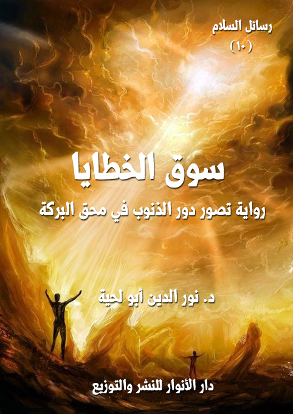

الكتاب: سوق الخطايا
المؤلف: أ.د. نور الدين أبو لحية
الناشر: دار الأنوار للنشر والتوزيع
الطبعة: الأولى، 1437 هـ
عدد الصفحات: 189
ISBN: 978-620-2-34543-9
لمطالعة الكتاب من تطبيق مؤلفاتي المجاني وهو أحسن وأيسر: هنا

التعريف بالكتاب
تهدف هذه الرواية إلى بيان أثر الاختيار الإنساني للخطيئة فيما يحصل له من مآس وآلام ومصائب.. وهي تعبر عن ذلك بتعبير رمزي عن طريق سوق ممتلئة بكل أنواع الفقر والحاجة، يراها المؤلف ـ تلميذ السلام ـ فتثور في نفسه ألوان الصراع حول سر ذلك، ومدى انسجامه مع الرحمة والعدالة الإلهية..
لكن معلم السلام، وعبر ما يرسله لتلميذه من الوسائط يبرهن له على أن كل ما حصل لأهل السوق من آلام هو ثمرة اختياراتهم.
ثم يأخذ بيده إلى مدرسة تدرب أهل السوق على التخلص من الآثام التي حالت بينهم وبين تنزل البركات عليهم.. وهناك يعرف تلميذ السلام، وأهل السوق، سبب ما حل بهم من محق وآلام.
سوق الخطايا (5)
تهدف هذه الرواية إلى بيان أثر الاختيار الإنساني للخطيئة فيما يحصل له من مآس وآلام ومصائب.. وهي تعبر عن ذلك بتعبير رمزي عن طريق سوق ممتلئة بكل أنواع الفقر والحاجة، يراها المؤلف ـ تلميذ السلام ـ فتثور في نفسه ألوان الصراع حول سر ذلك، ومدى انسجامه مع الرحمة والعدالة الإلهية..
لكن معلم السلام، وعبر ما يرسله لتلميذه من الوسائط يبرهن له على أن كل ما حصل لأهل السوق من آلام هو ثمرة اختياراتهم.
ثم يأخذ بيده إلى مدرسة تدرب أهل السوق على التخلص من الآثام التي حالت بينهم وبين تنزل البركات عليهم.. وهناك يعرف تلميذ السلام، وأهل السوق، سبب ما حل بهم من محق وآلام.
وفي الرواية استعراض لأمهات الذنوب والخطايا أصولها وفروعها، وبيان أسبابها، وآثارها ودورها في طمس الفطرة الإنسانية.
وفيها استعراض لكم كبير من النصوص المقدسة من القرآن الكريم والسنة المطهرة، حول أنواع الخطايا والذنوب وعواقبها.. باعتبار تلك النصوص المصدر الأول والأساسي للتعرف على الحقيقة الإنسانية ومنهج تطهيرها، وإعادة صياغتها لتتناسب مع الجبلة التي طبعها الله عليها.
وقد حاولنا في أكثر المحال من هذه الرواية الاكتفاء بإيراد النصوص عن إعطاء توضيحات عليها.. ذلك أن النص المقدس في تصورنا أكبر من أن يفسر أو يوضح أو يقيد بأي قيد.
وقد اكتفينا في محال كثيرة كذلك بذكر الخطايا دون ذكر تفاصيل التخلص منها، لأنا
سوق الخطايا (6)
خصصنا لذلك رسائل خاصة من هذه السلسلة، بالإضافة إلى أن غرض هذه الرواية هو بيان آثار الذنوب على البركة والرزق.. وذلك وحده كاف لكثير من الناس في التنفير عنها، والتوبة منها.
وقد أشارت النصوص المقدسة الكثيرة إلى الحقيقة التي تهدف إليها هذه الرواية، ومنها قوله تعالى: {وَمَنْ أَعْرَضَ عَنْ ذِكْرِي فَإِنَّ لَهُ مَعِيشَةً ضَنْكًا وَنَحْشُرُهُ يَوْمَ الْقِيَامَةِ أَعْمَى} [طه: 124]، فإن هذه الآية الكريمة تشير إلى دور الإعراض عن ذكر الله ـ والذي هو سبب كل الذنوب والمعاصي ـ في تحقق الضنك والضيق على المعيشة.
ومثلها قوله تعالى: {وَلَوْ أَنَّ أَهْلَ الْقُرَى آمَنُوا وَاتَّقَوْا لَفَتَحْنَا عَلَيْهِمْ بَرَكَاتٍ مِنَ السَّمَاءِ وَالْأَرْضِ وَلَكِنْ كَذَّبُوا فَأَخَذْنَاهُمْ بِمَا كَانُوا يَكْسِبُونَ} [الأعراف: 96]
وهكذا أخبر الله تعالى عن نوح عليه السلام أنه في دعوته لقومه ربط الاستغفار بزيادة الرزق وتنزل البركات: {فَقُلْتُ اسْتَغْفِرُوا رَبَّكُمْ إِنَّهُ كَانَ غَفَّارًا (10) يُرْسِلِ السَّمَاءَ عَلَيْكُمْ مِدْرَارًا (11) وَيُمْدِدْكُمْ بِأَمْوَالٍ وَبَنِينَ وَيَجْعَلْ لَكُمْ جَنَّاتٍ وَيَجْعَلْ لَكُمْ أَنْهَارًا (12)} [نوح: 10 - 12]
ومثله هود عليه السلام الذي قال مخاطبا لقومه: {وَيَاقَوْمِ اسْتَغْفِرُوا رَبَّكُمْ ثُمَّ تُوبُوا إِلَيْهِ يُرْسِلِ السَّمَاءَ عَلَيْكُمْ مِدْرَارًا وَيَزِدْكُمْ قُوَّةً إِلَى قُوَّتِكُمْ وَلَا تَتَوَلَّوْا مُجْرِمِينَ} [هود: 52]
ونحب أن نشير هنا إلى هذا ليس بعمومه، فقد يبتلي الله عباده الصالحين بما شاء وكيف شاء ليطهرهم ويرفع درجاتهم.. وليجعل الأسوة بهم، وقد ورد في الحديث أنه قيل لرسول الله صلى الله عليه وآله وسلم: يا رسول الله، أي الناس أشد بلاء؟ قال: (الأنبياء ثم الأمثل فالأمثل يبتلى الرجل على حسب دينه فإن كان دينه صلبا اشتد بلاؤه وإن كان في دينه رقة ابتلاه الله على حسب دينه فما يبرح البلاء بالعبد حتى يمشي على الأرض وما عليه خطيئة) (1)
__________
(1) رواه أحمد والبخاري وابن ماجة والترمذي وابن حبان والحاكم.
سوق الخطايا (7)
وقد وضحنا سنن ذلك وقوانينه في كتابنا [أسرار الأقدار] و[ابتسامة الأنين] وغيرهما من هذه السلسلة.
سوق الخطايا (8)
لست أدري هل كان ذلك يقظة أو مناما.. فقد اختلطت علي في تلك الأيام حياة اليقظة بحياة الأحلام.. لكن الذي أدريه أنني بعد أن استيقظت أو عاد إلي وعيي رحت إلى كل نص سمعته، أو فكرة سجلتها، أبحث عن حقيقتها ومصداقها.. وقد وجدتها جميعا كما رأيتها وسمعتها لم تزد حرفا، ولم تنقص.. ولهذا رحت أسجل هذه الأحداث بالدقة التي رأيتها فيها.. عساكم تنتفعون بها كما انتفعت.
وبداية حكايتي تنطلق مني، ومن قريتي الصغيرة المتواضعة.. فقد مررت بسوقها، فرأيت الكثير من المظاهر التي سببت لي الأسى والألم.. وجعلتني أعاني أنواعا كثيرة من الصراع.
وعندما سرت في الطريق الخالي، وأنا عائد إلى بيتي صادفت ذلك السوق العجيب الذي بصرني الله من خلاله إلى أن كل ما نعانيه من آلام ومآس سببه ما نقترفه من الآثام والذنوب التي نشعر بها أو لا نشعر.
في بداية دخولي إلى ذلك السوق العجيب أصابني ما أصابني في سوق قريتي من الألم.. فقد كانت السوق ممتلئة شحا وفقرا.. وكانت أرضها مملوءة بالأوساخ والقاذورات.. وكانت سماؤها مملوءة بدخان أسود يحيل حياة أهل السوق إلى جحيم..
عندما شاهدت هذا المشهد المؤلم امتلأت نفسي بالاعتراض والصراع.. بل كدت أصيح: يا رب.. أنزل عليهم من بركاتك ما يرفع عنهم هذا الهم الذي يعيشونه.. وهذا الفقر الذي يعانونه.. وارفع عن السماء سوادها.. وارفع عن الأرض ما حل بها من رجس.. وارفع عن أهل هذا السوق ما نزل بهم من محق..
ما اكتمل هذا الحديث في نفسي حتى ربت رجل ـ يبدو عليه الغنى ـ على كتفي، وقال:
سوق الخطايا (9)
ألا ترى هؤلاء الحمقى والمغفلين؟
قلت: بل الفقراء والمساكين..
قال: لو لم يكونوا حمقى ومغفلين ما كانوا فقراء ولا مساكين..
قلت: أرى أنك امرؤ عديم الرحمة والمروءة.. أهكذا يتعامل الأغنياء مع الفقراء؟.. أبهذا الازدراء تعاملهم بدل أن تعاملهم بالإحسان، وبما من الله عليك من كرمه؟
قال: لقد جربت ذلك.. فوجدتهم لا يستحقون إلا هذا الجزاء الذي يعيشونه.. إن هذا الواقع المؤلم الذي تراه ليس إلا جريرة آثامهم وصنعة ذنوبهم وصدى ما في نفوسهم من ألوان الإثم والغواية.. ولو أنهم أوقفوا تلك المحركات التي لا تصدر إلا الاثم لحسن حالهم، وارتفع المحق عن معاشهم، ولحلت بدله البركات.
توسمت في الرجل، فرأيت فيه ما كنت أرى في أولياء الله الصالحين الذين تعود معلم السلام أن يرسلهم لي، فقلت له: لا شك أنك من أصحاب معلم السلام.
قال: ومن أنا حتى أكون صاحبه.. أنا لست سوى تلميذ بسيط من تلاميذه.. أو عبد حقير من عبيده.
قلت: فهل لك رسالة منه لي، فقد اشتقت إلى رسائله وحديثه؟
قال: أجل.. رسالتي لك هي قصتي مع هذا السوق.. فإن لي حديثا طويلا مع أهله.. سأحدثك عنه.. فلن يخلص نفسك من الصراع إلا حديثي عنه.
نظر إلى المكان الذي نقف فيه، ثم قال: أما المكان.. فلا أرى مكانا أصلح لما أريد أن أحدثك عنه من هذه السوق..
قلت: من أنت أولا.. فلا يصح أن أسمع حديثا لا سند له؟
سوق الخطايا (10)
قال: أنا من من أهل كاشان... سماني والدي فيض الله (محسنا) (1).. وقد حبانا الله من فضله الكثير.. وقد بدأت علاقتي بهذه السوق في يوم لا يختلف عن يومنا هذا.. وفي حال لا تختلف عن حالنا هذه..
ذهبت حينها إلى والدي، وأنا أعتصر من الألم لأطلب منه أن يمد السوق بما حباه الله من فضله، فيخرج أهله من فاقتهم وفقرهم وعجزهم..
وقد استجاب والدي لطلبي، ولكنه قال لي: لقد رأيت صورتهم الظاهرة.. فحزنت عليها.. وحاولت أن تغيرها.. فهلا رأيت صورتهم الباطنة.. فعساك تتحرك لإصلاحها.. فإنه لا يصلح ظاهر باطنه خراب..
قلت: ما تقصد؟
قال: هل نميت فيهم من المكارم التي تمسح عنهم المآثم.. فلا يمكن أن تستقر بأحد حال.. وفي صدره وقلبه وحقيقته من الثعابين والحيات ما يظل ينهشه ويقتل فيه الحياة؟
قلت: أنى لي أن أفعل ذلك.. ولكني مع ذلك أستطيع بكل يقين أن أجزم بأن صورتهم الباطنة من أحسن الصور.. ولذلك فلن أخاف من بواطنهم على ظواهرهم.. ولن أخاف على مكارمهم من آثامهم..
بعد أن قلت هذا، قال لي والدي: سنرى.. سأعطيك مبلغا محترما من المال.. وهو كاف لأن يحول سوقهم ـ لو أحسنوا استخدامه ـ إلى سوق صالحة ممتلئة بكل البركات.. بل إن المشارق والمغارب ستفد إليهم طلبا لما عندهم.. ولكن قبل أن تسلمهم المال حذرهم من
__________
(1) أشير به إلى العلامة محسن بن مرتضى بن فيض الله محمود الكاشي ـ أو الكاشاني أو القاشاني ـ (1008؟ - 1090 هـ)، وهو من علماء الامامية الكبار.. ويعرف بـ (الفيض)، وعرف جده بفيض الله وبالفيض.. وينعت بالمتأله الحكيم.. قرأ كتب أبي حامد الغزالي وتأثر به وسلك منهجه في كثير من (تصرفاته وتظرفاته) كما يقول صاحب الروضات.. له نحو 80 مصنفا، بعضها في مجلدات.. وأكثرها تعليقات ورسائل.. من كتبه (الصافي في تفسير كلام الله الوافي) و(الاصفى)، و(منهاج النجاة)، و(الحقائق في محاسن الاخلاق).. وقد اخترناه لأجل كتابه هذا.. وهو كتاب من أمهات كتب الأخلاق. ولا يخفى سر اختيارنا له في هذا المحل.
سوق الخطايا (11)
الآفات والموبقات.. وذكرهم بما ورد في الحديث من أن رسول الله صلى الله عليه وآله وسلم جلس على المنبر وحوله أصحابه، فقال لهم: (أخوف ما أخاف عليكم، ما يخرج الله لكم من زهرة الدنيا)، قالوا: وما زهرة الدنيا يا رسول الله؟ قال: (بركات الأرض) قالوا: يا رسول الله، وهل يأتي الخير بالشر؟ قال: (لا يأتي الخير إلا بالخير، لا يأتي الخير إلا بالخير، لا يأتي الخير إلا بالخير، إن كل ما أنبت الربيع يقتل، أو يلم، إلا آكلة الخضر، فإنها تأكل، حتى إذا امتدث خاصرتاها، استقبلت الشمس، ثم اجترت، وبالت، وثلطت، ثم عادت فأكلت، إن هذا المال خضرة حلوة، فمن أخذه بحقه، ووضعه في حقه، فنعم المعونة هو، ومن أخذه بغير حقه، كان كالذي يأكل ولا يشبع) (1)
قلت: لا عليك يا والدي.. سأؤدي كل ما تطلبه مني..
قلت هذا، ثم أسرعت إلى أهل السوق أفرق عليهم من الأموال ما عساه يحول حالهم ويبدلها وينزع عنهم وعنها تلك الكآبة التي تحيط بهم وبها..
وقد نسيت في غمرة ذلك الكرم العظيم كرما أكرم وأجدى.. نسيت أن أخبرهم بوصية والدي، وبحديث رسول الله صلى الله عليه وآله وسلم.. وبتلك الحصون القوية التي تحمي نفوسهم من شر الأموال التي تحملها أيديهم..
نسيت ذلك.. أو تعمدت أن أنساه.. لأني لم أكن أود أن أفسد تلك الفرحة التي ملأت أقطار نفسي، وهي ترسل إليهم الأموال كالريح المرسلة.. ولم أكن أود في نفس الوقت أن أمثل دور الواعظ والمعلم.. فقد كان دور الكريم أرفع عندي من دور الواعظ المعلم..
لكن فرحتي لم تستمر طويلا..
فما هي إلا أيام وأشهر وسنوات حتى عادت السوق إلى حالها.. وعاد أهل السوق إلى حالهم.. وكأن تلك الأموال التي امتلأت بها جيوبهم ومخازنهم لم تكن إلا حلما استيقظوا منه
__________
(1) رواه البخاري ومسلم.
سوق الخطايا (12)
على حياة النكد التي ألفوها وألفتهم..
قلت: أهذه هي حكايتك مع أهل هذه السوق.. فلهذا أراك ناقما منهم؟
قال: لا.. حكايتي مع أهل هذه السوق أطول.. وأنا لم آتهم ناقما.. بل أتيتهم لأصلح الخطأ الذي وقعت فيه المرة الماضية.. فما كان لتلاميذ السلام أن يحملوا نقمة.. وما كان لتلاميذ السلام أن يسكتوا عن خطأ.. وما كان لتلاميذ السلام أن يقعدوا عن إصلاح.
قلت: فقد أتيتهم بالمواعظ بدل الأموال؟
قال: تستطيع أن تقول ذلك.. فقد رأيت أن المال لا يحميه شيء كما تحميه المواعظ..
قلت: ولكن المواعظ سرعان ما تحاصرها جنود الغفلة التي يمدها الشيطان بمدده.. فيرتفع عن القلوب تأثيرها، ويرتفع عن النفس أثرها.
قال: ولذلك لم آت بالمواعظ وحدها.. فالمواعظ وسيلة من الوسائل التي يتم بها الإصلاح.. ومن أعظم الأخطاء أن يقتصر العاقل في حربه مع الشيطان والنفس على بعض الوسائل.. فيؤتى من قبل غيرها.
قلت: فبم أتيت إذن؟
قال: لقد بدأت ـ بمعونة والدي ـ بإحصاء العلل والآثام التي حولت السوق إلى هذه الحال.. فلا يمكن أن يداوي الطبيب مريضا لا يعرف مرضه.
قلت: فما العلل التي وجدتها بأهل هذه السوق؟
قال: سبع..
قلت: فقط.. إنهم أصحاء إذن..
قال: كل علة منها كافية لأن تخرب كل حياة.. وتفسد كل صالح.. وتعوج كل مقوم.
قلت: فهلا حدثتني عنها.
قال: سأحدثك أولا عن الدليل الذي دلني عليها.
سوق الخطايا (13)
قلت: لقد ذكرت لي أنه والدك..
قال: والدي أضعف من أن يعرف مثل هذا.
قلت: فمن هو إذن؟
قال: الله..
قلت: الله!؟
قال: أجل.. الله الذي خلق الإنسان، وهو العليم بما خلق.. هو الذي أخبرنا عنها.. إن ذلك ـ ولله المثل الأعلى ـ مثل الصانع الذي يخبرك عن الآفات التي قد تنزل بالجهاز الذي باعه لك.. لتأخذ احتياطاتك نحوها.
وهكذا فإن الله الحكيم أخبرنا أن بالإنسان آثام ظاهرة وباطنة.. وأنه لا يصلح حاله إلا بتركها.. قال تعالى: {وَذَرُوا ظَاهِرَ الْأِثْمِ وَبَاطِنَهُ إِنَّ الَّذِينَ يَكْسِبُونَ الْأِثْمَ سَيُجْزَوْنَ بِمَا كَانُوا يَقْتَرِفُونَ) (الأنعام:120)
قلت: هذه الآية مجملة.. فكيف كشفت غموضها؟
قال: لقد أخبرنا القرآن الكريم عن العلل التي تنخر حقيقة الإنسان.. وقد ربطها جميعا بالإنسان..
أخبرنا عن كفره ويأسه، فقال: {وَلَئِنْ أَذَقْنَا الْأِنْسَانَ مِنَّا رَحْمَةً ثُمَّ نَزَعْنَاهَا مِنْهُ إِنَّهُ لَيَؤُوسٌ كَفُورٌ} (هود:9)، وقال: {لا يَسْأَمُ الْأِنْسَانُ مِنْ دُعَاءِ الْخَيْرِ وَإِنْ مَسَّهُ الشَّرُّ فَيَؤُوسٌ قَنُوطٌ) (فصلت:49)
وأخبرنا عن ظلمه الممزوج بكفره، فقال: {إِنَّ الْأِنْسَانَ لَظَلُومٌ كَفَّارٌ} (ابراهيم:34)
وأخبرنا عن ظلمه الممزوج بجهله، فقال: {إِنَّا عَرَضْنَا الْأَمَانَةَ عَلَى السَّمَاوَاتِ وَالْأَرْضِ وَالْجِبَالِ فَأَبَيْنَ أَنْ يَحْمِلْنَهَا وَأَشْفَقْنَ مِنْهَا وَحَمَلَهَا الْأِنْسَانُ إِنَّهُ كَانَ ظَلُوماً جَهُولاً} (الأحزاب:72)
سوق الخطايا (14)
وأخبرنا عن خصومته، فقال: {خَلَقَ الْأِنْسَانَ مِنْ نُطْفَةٍ فَإِذَا هُوَ خَصِيمٌ مُبِينٌ} (النحل:4)
وأخبرنا عن عجلته، فقال: {وَيَدْعُ الْأِنْسَانُ بِالشَّرِّ دُعَاءَهُ بِالْخَيْرِ وَكَانَ الْأِنْسَانُ عَجُولاً} (الاسراء:11)، وقال: {خُلِقَ الْأِنْسَانُ مِنْ عَجَلٍ سَأُرِيكُمْ آيَاتِي فَلا تَسْتَعْجِلُونِ} (الانبياء:37)
وأخبرنا عن بخله، فقال: {قُلْ لَوْ أَنْتُمْ تَمْلِكُونَ خَزَائِنَ رَحْمَةِ رَبِّي إِذاً لَأَمْسَكْتُمْ خَشْيَةَ الْأِنْفَاقِ وَكَانَ الْأِنْسَانُ قَتُوراً} (الاسراء:100)
وأخبرنا عن جدله، فقال: {وَلَقَدْ صَرَّفْنَا فِي هَذَا الْقُرْآنِ لِلنَّاسِ مِنْ كُلِّ مَثَلٍ وَكَانَ الْأِنْسَانُ أَكْثَرَ شَيْءٍ جَدَلاً} (الكهف:54)
وأخبرنا عن هلعه، فقال: {إِنَّ الْأِنْسَانَ خُلِقَ هَلُوعاً} (المعارج:19)
وهكذا.. أخبرنا ربنا عن حقيقتنا وحقيقة الصفات التي تمتلئ بها ذواتنا.
قلت: لقد أثار في كلامك هذا زوابع من الشبهات..
قال: أعلم ذلك.. أنت تتعجب كيف يخلق الله كائنا به كل هذه الشرور والآثام.
قلت: لم تعدو ما في نفسي.. فهل بحثت في جواب ذلك؟
قال: لقد أخبرنا القرآن الكريم بالجواب.. وذلك لم يحتج مني إلا بعض التدبر البسيط.
قلت: أين؟
قال: في قوله تعالى: {وَإِذْ قَالَ رَبُّكَ لِلْمَلائِكَةِ إِنِّي جَاعِلٌ فِي الْأَرْضِ خَلِيفَةً قَالُوا أَتَجْعَلُ فِيهَا مَنْ يُفْسِدُ فِيهَا وَيَسْفِكُ الدِّمَاءَ وَنَحْنُ نُسَبِّحُ بِحَمْدِكَ وَنُقَدِّسُ لَكَ قَالَ إِنِّي أَعْلَمُ مَا لا تَعْلَمُونَ} (البقرة:30).. ففي هذه الآية إخبار إلهي عن سر ما يكتنزه الإنسان من آثام..
ولهذا عندما ذكر الله للملائكة الخلافة ذكروا الإثم.. وسفك الدماء؟
قلت: لقد ظللت متعجبا من هذا.. فما علاقة الخلافة بالفساد وسفك الدماء؟
سوق الخطايا (15)
قال: الخلافة تقتضي الحرية.. والحرية تقتضي الاختيار.. والاختيار يقتضي أن تكون هناك فرص مختلفة متعددة، وسبل متنوعة.. وكل ذلك يقتضي أن يكون في الإنسان ميل متساو لكل الطرق ولكل الاتجاهات حتى يحدد بعد ذلك الخيار الذي يتناسب معه ومع طبيعته وعزيمته وإرادته.
لقد ذكر الله ذلك فقال عند حديثه عن الإنسان: {إِنَّا خَلَقْنَا الْإِنْسَانَ مِنْ نُطْفَةٍ أَمْشَاجٍ نَبْتَلِيهِ فَجَعَلْنَاهُ سَمِيعًا بَصِيرًا (2) إِنَّا هَدَيْنَاهُ السَّبِيلَ إِمَّا شَاكِرًا وَإِمَّا كَفُورًا (3)} (الإنسان)
انظر كيف ربط الله تعالى بين السمع والبصر وبين الهداية والضلال.. فكما أن السمع والبصر يتيحان لنا أن نستعملهما في الخير والشر.. فهكذا باقي القوى واللطائف..
قلت: ألهذا نفخ في الإنسان كل تلك الآثام؟
قال: نحن نعبر عنها بالآثام باعتبار اختيار الإنسان.. لا باعتبار حقيقة الحال.. فالله الحكيم الرحيم لا يخلق الشر المجرد عن كل خير (1).. بل هو يخلق الخير.. ومن الخير ما يتحول إلى شر.. كما أن من الطعام ما يتسنه ويصبح غير صالح للأكل.. مع أنه في أصل طبيعته طيب وصالح.
قلت: فهمت تسنه الطعام.. ولم أفهم تسنه الإنسان.
قال: أليس الطعام يتسنه بالغفلة عنه؟
قلت: تستطيع أن تقول ذلك.. فعندما نغفل عن الطعام مدة من الزمان نكتشف أنه قد تسنه وتغير.
قال: فكذلك الإنسان.. كلما غفل عن النظر في حقيقته وتقويمها وربطها بمصدرها الأعلى كلما تمكنت الآفات منه، وانحرفت به بعد ذلك.. لقد أشار القرآن الكريم إلى ذلك، فقال: {وَلَا تَكُونُوا كَالَّذِينَ نَسُوا اللَّهَ فَأَنْسَاهُمْ أَنْفُسَهُمْ أُولَئِكَ هُمُ الْفَاسِقُونَ (19)} (الحشر)
__________
(1) ذكرنا هذه المسألة بتفصيل في رسالة (أسرار الأقدار) من سلسلة (رسائل السلام)
سوق الخطايا (16)
قلت: ولكن الآية تتحدث عن نسيان الله والغفلة عنه.. لا عن الإنسان لنفسه.
قال: لا يمكن لإنسان أن يذكر نفسه أو يعرفها.. وهو لا يذكر ربه ولا يعرفه.. إن حقيقة الإنسان لا يمكن أن تتجلى للإنسان إلا عندما يتصل بربه.
قلت: أكاد أفهم ما تقول.. لكني أتعجب كيف يخلق الله نفسا شحيحة.. أتعجب لقوله تعالى: {وَأُحْضِرَتِ الْأَنْفُسُ الشُّحَّ} (النساء:128).. وغيرها من الآيات التي تذكر الخراب الذي يملأ أعماق الإنسان.
قال: هو ليس خرابا بالصورة التي تتصورها..
قلت: فما هو إذن؟
قال: تستطيع أن تقول: إنه لبنات.. ومواد خام.. نعم هي مفرقة في أرض النفس بحيث يهيأ لمن يراها بأنه يرى خرابا.. ولكنها في الحقيقة إن وجدت أيد ماهرة ومهندسين خبراء.. فستتحول تلك اللبنات إلى عمران ليس مثله عمران.
قلت: هل لي بمثال يوضح لي هذا؟
قال: أنت تعجبت من أن تفطر النفس على الشح؟
قلت: أجل.. ذلك صحيح.. والكل يتعجب من ذلك.
قال: هل ترى أن حياة الإنسان يمكن أن تستمر.. ولحضارته يمكن أن تقوم.. ولوظيفة الخلافة فيه يمكن أن تؤدى من غير أن تكون فيه هذه الخصلة؟
قلت: لو خلت حياة الإنسان من الشح.. وخلت حضارته منه لعاش الإنسان إنسانا.
قال: ذلك هو الشح المنحرف.. السلبي.. أما الشح الفطري.. والذي هو لبنة من لبنات الإنسان.. فإن نزعه من الإنسان لن يبقيه إنسانا..
نظر إلي، فوجدني لا أزال على هيئتي لم أقتنع، فقال: أليس الشح هو الحرص على ما تملكه من أشياء؟
سوق الخطايا (17)
قلت: بلى.. فالشحيح هو الذي يبخل بماله.
قال: البخل بالمال فرع من فروع الشح.. الشح أخطر من أن ينحصر في المال..
قلت: صحيح ما تقول..
قال: نحن نرى الشح السلبي.. وهو شح يوظف لبنات الإنسان لتخدم المصالح الخاصة ولو على حساب المصالح العامة.
قلت: فهل هناك شح إيجابي؟
قال: أجل.. وهو شح يوظف لبنات الإنسان وطاقاته لتخدم المصالح الخاصة.. وفي نفس الوقت لا تضر بالمصالح العامة.. بل إنه يخدم المصالح العامة.. فلا يمكن للمصالح العامة أن تقوم إلا بالمصالح الخاصة.
قلت: لم أفهم.
قال: أرأيت لو أن كل الناس حرصوا على ما عندهم من مال وصحة وعافية.. وشحوا بها.. فلم يدعوها للآفات.. أليس في ذلك اجتماع للمصالح الخاصة والعامة؟
قلت: بلى.. سيكون المجتمع حينها مجتمعا قويا صحيحا سليما من الآفات..
قال: ولهذا قال رسول الله صلى الله عليه وآله وسلم.. وهو يحض على هذا الشح الإيجابي.. لبعض صحابته: (الثلث والثلث كبير، أو كثير، إنك أن تذر ورثتك أغنياء، خير من أن تذرهم عالة يتكففون الناس، وإنك لن تنفق نفقة، تبتغى بها وجه الله، إلا أجرت بها، حتى ما تجعل فى فى امرأتك) (1)
قلت: وعيت هذا في الشح.. لكن هناك آثاما أخرى قد لا ينطبق عليها ما تقول.
قال: كلها ينطبق عليها ما أقول..
قلت: الجدل مثلا.. لا ينطبق عليه ما تقول.
قال: لولا الجدل ما قامت للأفكار سوق..
__________
(1) رواه البخاري ومسلم.
سوق الخطايا (18)
قلت: والكفر!؟
قال: لولا الكفر ما عرفنا قيمة اختيار المؤمن للإيمان..
قلت: والظلم!؟
قال: الظالم هو الذي انحرف بموازين العدالة في نفسه عن وجهتها..
قلت: فالموازين صحيحة.. لكنه هو الذي انحرف بها؟
قال: أجل.. وهكذا في كل الأمور.. إن مثل ذلك مثل الملح يكون في الطعام.. فمن وضعه بقدر انتفع به وانتفع بطعامه.. ومن وضع بغير قدر استضر به واستضر بطعامه.
قلت: لقد وعيت الآن.. فبورك فيك.. ولكني لن أتركك حتى تحدثني عن هذه الآثام السبعة.. عن حقيقتها.. وعن علاقتها بهذه السوق.. وعن الترياق الذي قدمت به لعلاجها.
قال: ما جئت اليوم لهذه السوق إلا لأجل هذا.. لقد وفقني الله، فأسست مدرسة تطهيرية في مدخل هذه السوق، وقد جئت لها بالعلماء من كل حدب وصوب.. وجعلتها أقساما بحسب الآثام التي التي يمكن أن يقع فيها الإنسان.
قلت: فمن تريد أن يتتلمذ فيها؟
قال: أهل هذه السوق.. أهل هذه السوق هم تلاميذ تلك المدرسة؟
ابتسمت، وقلت: هل تريد من هؤلاء أن يتركوا معايشهم وأرزاقهم وقوت أولادهم ليتتلمذوا في مدرستك.. لا شك أنهم لن يقبلوا.
قال: سأستغل آثامهم للوصول إلى طهارتهم.
قلت: عجبا.. ما تقول؟
قال: ألم أذكر لك شح الإنسان وحرصه وأنانيته؟
قلت: بلى..
قال: فسأطرق أبوابهم من هذه النواحي.
سوق الخطايا (19)
قلت: كيف؟
قال: اصبر.. ولا تستعجل.. وسترى الكيف.
-\--\-
قال ذلك، ثم طلب من بعض من كان معه بأن يباشر المهمة التي كلفه بها.
قام ذلك الرجل، وراح ينادي في أهل السوق: يا أهل السوق.. إن محسن بن فيض الله يريد أن يحدثكم.
رنت جميع الوجوه إليه.. ثم سرعان ما اجتمعوا حولنا..
بعد أن اجتمعوا قام محسن بن فيض الله، وقال: لاشك أنكم تعرفونني.. فلذلك لا أحتاج أن أعرفكم بنفسي.
قال واحد منهم: أجل.. لقد سبق لك أن قدمت في يوم من الأيام بعض الإحسان.. ولكنك سرعان ما غفلت عنا.. وأنستك الشياطين أن تذكرنا.
قال آخر: هات ما جئت من أجله.. فأرزاق أولادنا تنتظرنا.
قال آخر: إن كنت جئت بالمال، فأسرع به.. أما إن جئتنا بالكلام، فاتركه لنفسك، فلا يمكننا أن نطعم أولادنا كلاما.
تكلم أكثر من كان حاضرا، وكان كلاما وقحا أكد لي ما ذكره محسن بن فيض الله.
بعد أن انتهوا من كلماتهم الممتلئة بالبذاءة والوقاحة، قال محسن: تريثوا يا أهل هذه السوق الكرام.. نعم أنا أتيتكم بالكلام.. ولكنه ليس كلاما مجردا.. إنه كلام..
قاطعه بعضهم، وقال: الكلام هو الكلام.. ولا شيء غير الكلام.. هيا بنا ننفض عنه.. لقد كنت أعلم أني أضيع وقتي بالجلوس إليه..
ردد آخر نفس ما ردده الأول، فارتفع الضجيج..
لكن محسنا كان في غاية الذكاء، فقد أمر من معه بأن يسمعوا الحاضرين رنين الدراهم
سوق الخطايا (20)
والدنانير.. فما إن سمعوها حتى امتلأت السوق بصمت عميق قطعه محسن بقوله: لقد جئتكم بهذه أيضا..
سال لعاب الحاضرين، وامتلأوا بخشوع عظيم.. ثم قال بعضهم: هاتها.. فطالما رأيناك محسنا.
قال آخر: بل أنت الإحسان عينه.
قال آخر: لو أن الدنيا كلها كانت في كفك لجدت بها.
قال آخر: لا أظن من قال هذه الأبيات إلا يقصدك..
ثم راح ينشد:
تراه إذا ما جئتَه متهلِّلاً... كأنَّك تعطيه الذي أنت نائلُهْ
ولو لم يكن في كفّه غيرُ رُوحه... لجاد بها فليتَّقِ اللهَ سائله
قال آخر: ومثله من قال:
أقول لمرتاد الندى عند مالك... تمسك بجدوى مالك وصلاته
فتى جعل الدنيا وقاء لعرضه... فأسدى بها المعروف قبل عداته
فلو خذلت أمواله جود كفه... لقاسم من يرجوه شطر حياته
وإن لم يجز في العمر قسم لمالك... وجاز له أعطاه من حسناته
وجاد بها من غير كفر بربه... وأشركه في صومه وصلاته
قاطعهم محسن بقوله: مهلا.. فهذه المرة لن أعطيكم المال دون أن آخذ شيئا..
قال واحد منا: خذ منا كل شيء.. أعطنا المال فقط..
قال محسن: لن آخذ منكم إلا بعض أوقاتكم.. وسأعطيكم بدلها من المال ما يكفيكم.. ولكن من نجح منكم فيما أطلبه منه، فسأعطيه من فضل الله الذي من به علينا ما يجعله أغنى أهل هذه السوق.
سوق الخطايا (21)
قالوا: لم نفهم ما تريده منا.
قال: لقد أنشأت مدرسة تربوية في مدخل هذه السوق، وقد ملأتها بالعلماء والمربين والمدربين.. وجعلت لكل من يدخل لتلك المدرسة مرتبا يكفيه لمعاشه.. ولكنه إن استطاع أن يهضم دروسها، ويتدرب عليها، فسأعطيه من المال ما يستطيع أن يتحول به إلى غني من أغنياء هذه المدينة.. فهل تراكم تقبلون؟
صاحوا جميعا بصوت واحد: أجل.. ومن لا يقبل.
قال واحد منهم: نعرف المراد من هضم الدروس.. ولكن ما تريد بالتدرب عليها؟
قال محسن: أنتم تدرسون في هذه المدرسة في الصباح.. وبالتحديد تبدأ دراستكم من طلوع الفجر.. وبعد أن تنتهوا من دروسكم تعودون إلى سوقكم لتطبقوا كل ما درستموه.
قال الرجل: ولكن كيف تميز المتفوق منا من غير المتفوق؟
قال محسن: ما أيسر ذلك.. سأرسل مراقبين يطوفون عليكم كل حين.. وسيروا مدى تفاعلكم مع الدروس التي درستموها.. وقد ذكرت لكم أن من نجح في التدرب عليها سأعطيه من المال ما يملك به هذه السوق جميعا.
سال لعابهم جميعا.. وقالوا: فمتى نبدأ دراستنا؟
قال محسن: من فجر يوم الغد.. وكل من تغيب، فسيعتبر بالنسبة لي غير موافق على العرض الذي قدمته.
قال رجل منهم: أحمق من غاب عن مثل هذا العرض.
قال آخر: أما أنا، فلن أنام الليل جميعا.
قال آخر: أما أنا، فسأذهب إلى باب المدرسة، لأبيت هناك، فلا أحب أن يسبقني إليه أحد..
وهكذا ردد الجميع ما ردده هؤلاء.. ثم انصرفوا، والفرحة بادية على وجوههم التي
سوق الخطايا (22)
كانت ممتلئة كآبة ويأسا.
سوق الخطايا (23)
انصرفت إلى بيتي.. وفي فجر اليوم التالي سرت إلى المدرسة، ففوجئت بالأعداد الهائلة من الناس من مختلف الأعمار تنتظر عند بابها..
فتح عليهم محسن الباب، وقال: لدينا سبعة أقسام في هذه المدرسة.. لكل قسم منها دروسه الخاصة به.. ولكل قسم منها أستاذه الخبير الذي كلف به.
قالوا: فما هو القسم الأول؟
قال: هو قسم (الجحود).. وأستاذكم فيه هو (أبو بكر الخرائطي) (1).. وهو رجل قدير خبير بالنفس وأسرارها.. وقد ألف كتبا في التربية والأخلاق، منها كتاب سماه (مكارم الأخلاق ومعاليها)، ومنها (مساوئ الأخلاق ومذمومها وطرائق مكروهها).. فاجلسوا إليه، وسلوه ما بدا لكم.. وبعدها عودوا إلى سوقكم لتطبقوا ما درستموه.
ذهبنا إلى الخرائطي في القسم الخاص به.. وقد استقبلنا بكل أدب.. ثم طلب منا أن نجلس..
فجلسنا، وقد بدأ حديثه بعد حمد الله والصلاة والسلام على نبيه صلى الله عليه وآله وسلم وآله بقوله: لنبدأ دروسنا بالإثم الأول.. إنه الإثم الذي تأسست منه الآثام، وتفرعت عنه الذنوب.. إنه الجحود.. فمن امتلأ قلبه بجحود مولاه لم ينل في حياته خيرا ولا بركة ولا فضلا.
لقد أشار القرآن الكريم إلى ارتباط هذا الإثم بالإنسان في مواضع كثيرة من القرآن الكريم، وكأنه ينبهنا إلى هذا الوحش الخطير الذي يريد أن ينحرف بحياتنا عن المنهج الذي أراده الله لنا..
سأقرأ عليكم ما ورد في القرآن الكريم من ذلك لتتعرف على الأتون الآثم الذي يحترق
__________
(1) أبو بكر الخرائطي السامري (240 - 327 ه) من حفاظ الحديث، من أهل السامرة بفلسطين، ووفاته في مدينة يافا.
سوق الخطايا (24)
به الإنسان من حيث يشعر، أو من حيث لا يشعر..
لقد ذكر الله تعالى سرعة ميل الإنسان إلى الكفر والجحود والغفلة بمجرد أن يفرج الله عنه، فقال: {وَإِذَا مَسَّ الْأِنْسَانَ الضُّرُّ دَعَانَا لِجَنْبِهِ أَوْ قَاعِداً أَوْ قَائِماً فَلَمَّا كَشَفْنَا عَنْهُ ضُرَّهُ مَرَّ كَأَنْ لَمْ يَدْعُنَا إِلَى ضُرٍّ مَسَّهُ كَذَلِكَ زُيِّنَ لِلْمُسْرِفِينَ مَا كَانُوا يَعْمَلُونَ} (يونس:12).. وقال: {وَإِذَا مَسَّ الْأِنْسَانَ ضُرٌّ دَعَا رَبَّهُ مُنِيباً إِلَيْهِ ثُمَّ إِذَا خَوَّلَهُ نِعْمَةً مِنْهُ نَسِيَ مَا كَانَ يَدْعُو إِلَيْهِ مِنْ قَبْلُ وَجَعَلَ لِلَّهِ أَنْدَاداً لِيُضِلَّ عَنْ سَبِيلِهِ قُلْ تَمَتَّعْ بِكُفْرِكَ قَلِيلاً إِنَّكَ مِنْ أَصْحَابِ النَّارِ} (الزمر:8).. وقال: {فَإِذَا مَسَّ الْأِنْسَانَ ضُرٌّ دَعَانَا ثُمَّ إِذَا خَوَّلْنَاهُ نِعْمَةً مِنَّا قَالَ إِنَّمَا أُوتِيتُهُ عَلَى عِلْمٍ بَلْ هِيَ فِتْنَةٌ وَلَكِنَّ أَكْثَرَهُمْ لا يَعْلَمُونَ} (الزمر:49).. وقال: {وَإِذَا أَنْعَمْنَا عَلَى الْأِنْسَانِ أَعْرَضَ وَنَأَى بِجَانِبِهِ وَإِذَا مَسَّهُ الشَّرُّ فَذُو دُعَاءٍ عَرِيضٍ} (فصلت:51).. وقال: {وَإِذَا مَسَّكُمُ الضُّرُّ فِي الْبَحْرِ ضَلَّ مَنْ تَدْعُونَ إلا إِيَّاهُ فَلَمَّا نَجَّاكُمْ إِلَى الْبَرِّ أَعْرَضْتُمْ وَكَانَ الْأِنْسَانُ كَفُوراً} (الاسراء:67)
انظروا الصورة التي يمثلها الإنسان بهذا الجحود.. إن أوهامه تصور له أنه يمثل على الله ويخادع الله ويحتال عليه.
وهكذا ذكر القرآن الكريم يأس الإنسان وكفره في حال الضرر، فقال: {وَلَئِنْ أَذَقْنَا الْأِنْسَانَ مِنَّا رَحْمَةً ثُمَّ نَزَعْنَاهَا مِنْهُ إِنَّهُ لَيَؤُوسٌ كَفُورٌ} (هود:9).. وقال: {وَإِذَا أَنْعَمْنَا عَلَى الْأِنْسَانِ أَعْرَضَ وَنَأَى بِجَانِبِهِ وَإِذَا مَسَّهُ الشَّرُّ كَانَ يَؤُوساً} (الاسراء:83).. وقال: {فَإِنْ أَعْرَضُوا فَمَا أَرْسَلْنَاكَ عَلَيْهِمْ حَفِيظاً إِنْ عَلَيْكَ إلا الْبَلاغُ وَإِنَّا إِذَا أَذَقْنَا الْأِنْسَانَ مِنَّا رَحْمَةً فَرِحَ بِهَا وَإِنْ تُصِبْهُمْ سَيِّئَةٌ بِمَا قَدَّمَتْ أَيْدِيهِمْ فَإِنَّ الْأِنْسَانَ كَفُورٌ} (الشورى:48)
وهكذا ذكر جحود الإنسان وغفلته عن فضل ربه عليه، فقال ـ وهو يستعرض نعم الله على عباده ـ: {اللَّهُ الَّذِي خَلَقَ السَّمَاوَاتِ وَالْأَرْضَ وَأَنْزَلَ مِنَ السَّمَاءِ مَاءً فَأَخْرَجَ بِهِ مِنَ الثَّمَرَاتِ رِزْقًا لَكُمْ وَسَخَّرَ لَكُمُ الْفُلْكَ لِتَجْرِيَ فِي الْبَحْرِ بِأَمْرِهِ وَسَخَّرَ لَكُمُ الْأَنْهَارَ (32) وَسَخَّرَ لَكُمُ الشَّمْسَ وَالْقَمَرَ دَائِبَيْنِ وَسَخَّرَ لَكُمُ اللَّيْلَ وَالنَّهَارَ (33) وَآتَاكُمْ مِنْ كُلِّ مَا سَأَلْتُمُوهُ وَإِنْ تَعُدُّوا
سوق الخطايا (25)
نِعْمَتَ اللَّهِ لا تُحْصُوهَا إِنَّ الْأِنْسَانَ لَظَلُومٌ كَفَّارٌ (34)} (إبراهيم).. وقال: {أَلَمْ تَرَ أَنَّ اللَّهَ سَخَّرَ لَكُمْ مَا فِي الْأَرْضِ وَالْفُلْكَ تَجْرِي فِي الْبَحْرِ بِأَمْرِهِ وَيُمْسِكُ السَّمَاءَ أَنْ تَقَعَ عَلَى الْأَرْضِ إلا بِإِذْنِهِ إِنَّ اللَّهَ بِالنَّاسِ لَرَءُوفٌ رَحِيمٌ (65) وَهُوَ الَّذِي أَحْيَاكُمْ ثُمَّ يُمِيتُكُمْ ثُمَّ يُحْيِيكُمْ إِنَّ الْإِنْسَانَ لَكَفُورٌ (66)} (الحج)
ولهذا كله، فإن الله يصف الإنسان بالكفر الشديد المبين الذي لا فوقه كفر ولا مثله جحود، قال تعالى: {قُتِلَ الْأِنْسَانُ مَا أَكْفَرَهُ} (عبس:17)
قال رجل من الحاضرين: عرفنا ما ورد في القرآن من الحديث عن كفر الإنسان وجحوده.. ولكن كيف عرفت أن هذا هو مبدأ الآثام وأصلها الذي تتفرع منه؟
قال الخرائطي: لقد عرفت ذلك من مصادر كثيرة.. لعل أهمها تجربتي الشخصية.. لقد من الله علي فأكرمت بعض المحتاجين في بعض الأسواق بما رفع فقره وفاقته.. وقد كان أول ما واجهني به بعد أن من الله عليه من خيره ما من.. وبعد أن ارتفعت عنه قيود الفقر.. وحلت عليه تباشير الغنى أن قابل إحساني بالإساءة.. بل فعل ما هو فوق ذلك مما لا يخطر على بال..
قلنا: ما فعل؟
قال الخرائطي: لقد تصور أن غناي منافس لغناه.. فلذلك راح يستعمل كل الوسائل ليحطمني لتصوره أنه لا يمكن أن يبنى بنيانه مع بنياني..
لم أتعجب من سلوكه هذا.. فقد كان لي من الإيمان العظيم ما جعلني أدرك أن النعمة سرعان ما تغادر من جحدها.
قلنا: فكيف أيقنت بهذا؟
قال: لقد أخبرنا رسول الله صلى الله عليه وآله وسلم أن ثلاثة نفر في بني إسرائيل أبرص، وأقرع، وأعمى، أراد لله عزوجل أن يبتليهم، فبعث ملكا فأتى الابرص، فقال: أي شيء أحب اليك؟ قال: لون حسن وجلد حسن، قد قذرني الناس، فمسحه فذهب، وأعطي لونا حسنا وجلد حسنا، فقال
سوق الخطايا (26)
: أي المال أحب اليك؟ قال: الابل، فأعطي ناقة عشراء، فقال: يبارك لك فيها.
وأتى الاقرع، فقال: أي شيء أحب اليك؟ قال شعر حسن، ويذهب هذا عني، قد قذرني الناس، فمسحه فذهب وأعطي شعرا حسنا، فقال: فأي المال أحب اليك؟ قال: البقر، فأعطاه بقرة حاملا، وقال: يبارك لك فيها.
وأتى الاعمى، فقال: أي شيء أحب اليك؟ قال، يرد الله إلي بصري، فأبصر به الناس، فمسحه فرد الله إليه بصره، فقال: فأي المال أحب اليك؟ قال: الغنم فاعطاه شاة والدا.
فأنتج هذان، وولد هذا، فكان لهذا واد من الابل، ولهذا واد من البقر، ولهذا واد من غنم، ثم إنه أتي الابرص في صورته وهيئته فقال: رجل مسكين، تقطعت به الحبال في سفره، فلا بلاغ اليوم إلا بالله ثم بك، أسألك بالذي أعطاك اللون الحسن، والجلد الحسن والمال بعيرا أتبلغ عليه في سفري، فقال له: إن الحقوق كثيرة، فقال له: كأني أعرفك، ألم تكن أبرص يقذرك الناس فقيرا، فأعطاك الله، فقال: لقد ورثت لكابر عن كابر، فقال: إن كنت كاذبا فصيرك الله إلى ما كنت.
وأتى الاقرع في صورته وهيئته، فقال له: مثل ما قال لهذا ورد عليه مثل ما رد عليه هذا، فقال له: إن كنت كاذبا فصيرك الله إلى ما كنت.
وأتى الاعمى في صورته، فقال رجل مسكين، وابن سبيل وتقطعت بي الحبال في سفري، فلا بلاغ اليوم إلا بالله، ثم بك أسألك بالذي رد عليك بصرك شاة أتبلغ بها في سفري، فقال: قد كنت أعمى فرد الله بصري، وفقيرا، فخذ ما شئت، فو الله لا أجهدك اليوم بشيء أخذته لله فقال: (أمسك مالك فانما ابتليتم فقد رضي الله عنك، وسخط على صاحبيك) (1)
بل أخبرنا قبل ذلك القرآن الكريم.. ففيه الآيات الكثيرة الدالة على عواقب جحود النعمة..
__________
(1) رواه البخاري ومسلم.
سوق الخطايا (27)
اسمعوا لهذه الآيات وهي تتحدث عن قوم مثلنا أصابهم الله بعذابه، بعد أن جحدوا الله وجحدوا آياته، قال تعالى مخبرا عن قوم عاد: {وَتِلْكَ عادٌ جَحَدُوا بِآياتِ رَبِّهِمْ وَعَصَوْا رُسُلَهُ وَاتَّبَعُوا أَمْرَ كُلِّ جَبَّارٍ عَنِيدٍ (59) وَأُتْبِعُوا فِي هذِهِ الدُّنْيا لَعْنَةً وَيَوْمَ الْقِيامَةِ أَلا إِنَّ عاداً كَفَرُوا رَبَّهُمْ أَلا بُعْداً لِعادٍ قَوْمِ هُودٍ (60)} (هود)
وما حصل لعاد بسبب جحودهم هو ما حصل لغيرهم، قال تعالى يذكر ذلك، ويذكر به: {فَإِنْ أَعْرَضُوا فَقُلْ أَنْذَرْتُكُمْ صاعِقَةً مِثْلَ صاعِقَةِ عادٍ وَثَمُودَ (13) إِذْ جاءَتْهُمُ الرُّسُلُ مِنْ بَيْنِ أَيْدِيهِمْ وَمِنْ خَلْفِهِمْ أَلَّا تَعْبُدُوا إِلَّا اللَّهَ قالُوا لَوْ شاءَ رَبُّنا لَأَنْزَلَ مَلائِكَةً فَإِنَّا بِما أُرْسِلْتُمْ بِهِ كافِرُونَ (14) فَأَمَّا عادٌ فَاسْتَكْبَرُوا فِي الْأَرْضِ بِغَيْرِ الْحَقِّ وَقالُوا مَنْ أَشَدُّ مِنَّا قُوَّةً أَوَلَمْ يَرَوْا أَنَّ اللَّهَ الَّذِي خَلَقَهُمْ هُوَ أَشَدُّ مِنْهُمْ قُوَّةً وَكانُوا بِآياتِنا يَجْحَدُونَ (15) فَأَرْسَلْنا عَلَيْهِمْ رِيحاً صَرْصَراً فِي أَيَّامٍ نَحِساتٍ لِنُذِيقَهُمْ عَذابَ الْخِزْيِ فِي الْحَياةِ الدُّنْيا وَلَعَذابُ الْآخِرَةِ أَخْزى وَهُمْ لا يُنْصَرُونَ (16) وَأَمَّا ثَمُودُ فَهَدَيْناهُمْ فَاسْتَحَبُّوا الْعَمى عَلَى الْهُدى فَأَخَذَتْهُمْ صاعِقَةُ الْعَذابِ الْهُونِ بِما كانُوا يَكْسِبُونَ (17)} (فصلت)
وقال: {وَاذْكُرْ أَخا عادٍ إِذْ أَنْذَرَ قَوْمَهُ بِالْأَحْقافِ وَقَدْ خَلَتِ النُّذُرُ مِنْ بَيْنِ يَدَيْهِ وَمِنْ خَلْفِهِ أَلَّا تَعْبُدُوا إِلَّا اللَّهَ إِنِّي أَخافُ عَلَيْكُمْ عَذابَ يَوْمٍ عَظِيمٍ (21) قالُوا أَجِئْتَنا لِتَأْفِكَنا عَنْ آلِهَتِنا فَأْتِنا بِما تَعِدُنا إِنْ كُنْتَ مِنَ الصَّادِقِينَ (22) قالَ إِنَّمَا الْعِلْمُ عِنْدَ اللَّهِ وَأُبَلِّغُكُمْ ما أُرْسِلْتُ بِهِ وَلكِنِّي أَراكُمْ قَوْماً تَجْهَلُونَ (23) فَلَمَّا رَأَوْهُ عارِضاً مُسْتَقْبِلَ أَوْدِيَتِهِمْ قالُوا هذا عارِضٌ مُمْطِرُنا بَلْ هُوَ مَا اسْتَعْجَلْتُمْ بِهِ رِيحٌ فِيها عَذابٌ أَلِيمٌ (24) تُدَمِّرُ كُلَّ شَيْءٍ بِأَمْرِ رَبِّها فَأَصْبَحُوا لا يُرى إِلَّا مَساكِنُهُمْ كَذلِكَ نَجْزِي الْقَوْمَ الْمُجْرِمِينَ (25) وَلَقَدْ مَكَّنَّاهُمْ فِيما إِنْ مَكَّنَّاكُمْ فِيهِ وَجَعَلْنا لَهُمْ سَمْعاً وَأَبْصاراً وَأَفْئِدَةً فَما أَغْنى عَنْهُمْ سَمْعُهُمْ وَلا أَبْصارُهُمْ وَلا أَفْئِدَتُهُمْ مِنْ شَيْءٍ إِذْ كانُوا يَجْحَدُونَ بِآياتِ اللَّهِ وَحاقَ بِهِمْ ما كانُوا بِهِ يَسْتَهْزِؤُنَ (26)} (الأحقاف)
وقال: {لَقَدْ كَانَ لِسَبَإٍ فِي مَسْكَنِهِمْ آيَةٌ جَنَّتَانِ عَنْ يَمِينٍ وَشِمَالٍ كُلُوا مِنْ رِزْقِ رَبِّكُمْ
سوق الخطايا (28)
وَاشْكُرُوا لَهُ بَلْدَةٌ طَيِّبَةٌ وَرَبٌّ غَفُورٌ (15) فَأَعْرَضُوا فَأَرْسَلْنَا عَلَيْهِمْ سَيْلَ الْعَرِمِ وَبَدَّلْنَاهُمْ بِجَنَّتَيْهِمْ جَنَّتَيْنِ ذَوَاتَيْ أُكُلٍ خَمْطٍ وَأَثْلٍ وَشَيْءٍ مِنْ سِدْرٍ قَلِيلٍ (16) ذَلِكَ جَزَيْنَاهُمْ بِمَا كَفَرُوا وَهَلْ نُجَازِي إِلَّا الْكَفُورَ (17) وَجَعَلْنَا بَيْنَهُمْ وَبَيْنَ الْقُرَى الَّتِي بَارَكْنَا فِيهَا قُرًى ظَاهِرَةً وَقَدَّرْنَا فِيهَا السَّيْرَ سِيرُوا فِيهَا لَيَالِيَ وَأَيَّامًا آمِنِينَ (18) فَقَالُوا رَبَّنَا بَاعِدْ بَيْنَ أَسْفَارِنَا وَظَلَمُوا أَنْفُسَهُمْ فَجَعَلْنَاهُمْ أَحَادِيثَ وَمَزَّقْنَاهُمْ كُلَّ مُمَزَّقٍ إِنَّ فِي ذَلِكَ لَآيَاتٍ لِكُلِّ صَبَّارٍ شَكُورٍ (19) وَلَقَدْ صَدَّقَ عَلَيْهِمْ إِبْلِيسُ ظَنَّهُ فَاتَّبَعُوهُ إِلَّا فَرِيقًا مِنَ الْمُؤْمِنِينَ (20) وَمَا كَانَ لَهُ عَلَيْهِمْ مِنْ سُلْطَانٍ إِلَّا لِنَعْلَمَ مَنْ يُؤْمِنُ بِالْآخِرَةِ مِمَّنْ هُوَ مِنْهَا فِي شَكٍّ وَرَبُّكَ عَلَى كُلِّ شَيْءٍ حَفِيظٌ (21)} (سبأ)
قال رجل منا: لقد اعتبرت هذه الآيات الإعراض هو سر ما حصل لسبأ من المهالك.
قال الخرائطي: أجل.. فالإعراض هو الصورة البشعة التي ينم بها الجحود عن نفسه.
قال الرجل: فما صور الإعراض التي يظهر بها؟
قال الخرائطي: كثيرة جدا.. وقد أشار القرآن إلى مجامعها (1)..
فمن ذلك الإعراض عن الطّاعات والسّهو عنها، كما قال تعالى: {فَأَعْرَضُوا فَأَرْسَلْنا عَلَيْهِمْ سَيْلَ الْعَرِمِ.. (16)} (سبأ)
ومنها الإعراض عن سماع المواعظ والتأثر بها، كما قال تعالى: {فَما لَهُمْ عَنِ التَّذْكِرَةِ مُعْرِضِينَ (94)} (المدثر)
ومنها الإعراض عن تذكر حساب الله لعباده، كما قال تعالى: {اقْتَرَبَ لِلنَّاسِ حِسابُهُمْ
__________
(1) ذكر القرآن الكريم في المقابل صورا محمودة للإعراض: منها الإعراض عن المشركين والجاهلين، قال تعالى: {وَأَعْرِضْ عَنِ الْمُشْرِكِينَ (106)} (الأنعام)، وقال: {وَإِنْ تُعْرِضْ عَنْهُمْ فَلَنْ يَضُرُّوكَ شَيْئاً (42)} (المائدة)، وقال: {أُولئِكَ الَّذِينَ يَعْلَمُ اللَّهُ ما فِي قُلُوبِهِمْ فَأَعْرِضْ عَنْهُمْ (63)} (النساء)، وقال: {خُذِ الْعَفْوَ وَأْمُرْ بِالْعُرْفِ وَأَعْرِضْ عَنِ الْجاهِلِينَ (199)} (الأعراف)
ومنها الإعراض عن اللّغو: قال تعالى: {وَإِذا سَمِعُوا اللَّغْوَ أَعْرَضُوا عَنْهُ (55)} (القصص)
سوق الخطايا (29)
وَهُمْ فِي غَفْلَةٍ مُعْرِضُونَ (1)} (الأنبياء)
ومنها الإعراض عن ذكر اللّه، ليمتلئ الإنسان بدله بالغفلة التي تؤهله لكل أنواع العذاب، كما قال تعالى: {وَمَنْ أَعْرَضَ عَنْ ذِكْرِي فَإِنَّ لَهُ مَعِيشَةً ضَنْكاً (124)} (طه)
ومنها الإعراض عن النظر إلى آيات اللّه في الكون وتبصرها، كما قال تعالى: {وَكَأَيِّنْ مِنْ آيَةٍ فِي السَّماواتِ وَالْأَرْضِ يَمُرُّونَ عَلَيْها وَهُمْ عَنْها مُعْرِضُونَ (105)} (يوسف)
ومنها الإعراض عن الحقّ وعدم الإذعان له، كما قال تعالى: {.. بَلْ أَكْثَرُهُمْ لا يَعْلَمُونَ الْحَقَّ فَهُمْ مُعْرِضُونَ (24)} (الأنبياء)
ومنها الإعراض عن النّبإ العظيم قال تعالى: {قُلْ هُوَ نَبَأٌ عَظِيمٌ (67) أَنْتُمْ عَنْهُ مُعْرِضُونَ (68)} (ص)
ومنها الإعراض عن الوفاء بعهود الله التي أخذها على عباده، قال تعالى: {وَإِذْ أَخَذْنا مِيثاقَ بَنِي إِسْرائِيلَ لا تَعْبُدُونَ إِلَّا اللَّهَ وَبِالْوالِدَيْنِ إِحْساناً وَذِي الْقُرْبى وَالْيَتامى وَالْمَساكِينِ وَقُولُوا لِلنَّاسِ حُسْناً وَأَقِيمُوا الصَّلاةَ وَآتُوا الزَّكاةَ ثُمَّ تَوَلَّيْتُمْ إِلَّا قَلِيلًا مِنْكُمْ وَأَنْتُمْ مُعْرِضُونَ (83) وَإِذْ أَخَذْنا مِيثاقَكُمْ لا تَسْفِكُونَ دِماءَكُمْ وَلا تُخْرِجُونَ أَنْفُسَكُمْ مِنْ دِيارِكُمْ ثُمَّ أَقْرَرْتُمْ وَأَنْتُمْ تَشْهَدُونَ (84) ثُمَّ أَنْتُمْ هؤُلاءِ تَقْتُلُونَ أَنْفُسَكُمْ وَتُخْرِجُونَ فَرِيقاً مِنْكُمْ مِنْ دِيارِهِمْ تَظاهَرُونَ عَلَيْهِمْ بِالْإِثْمِ وَالْعُدْوانِ وَإِنْ يَأْتُوكُمْ أُسارى تُفادُوهُمْ وَهُوَ مُحَرَّمٌ عَلَيْكُمْ إِخْراجُهُمْ أَفَتُؤْمِنُونَ بِبَعْضِ الْكِتابِ وَتَكْفُرُونَ بِبَعْضٍ فَما جَزاءُ مَنْ يَفْعَلُ ذلِكَ مِنْكُمْ إِلَّا خِزْيٌ فِي الْحَياةِ الدُّنْيا وَيَوْمَ الْقِيامَةِ يُرَدُّونَ إِلى أَشَدِّ الْعَذابِ وَمَا اللَّهُ بِغافِلٍ عَمَّا تَعْمَلُونَ (85) أُولئِكَ الَّذِينَ اشْتَرَوُا الْحَياةَ الدُّنْيا بِالْآخِرَةِ فَلا يُخَفَّفُ عَنْهُمُ الْعَذابُ وَلا هُمْ يُنْصَرُونَ (86)} (البقرة)
قال الرجل: عرفنا صور الإعراض، فما عقوبته؟
قال الخرائطي: لقد ذكرتها النصوص المقدسة.. وأولها وأخطرها عدم مبالاة الله تعالى بمن أعرض عنه، فالله الغني الكريم لا يضره جحود الجاحدين كما لا تنفعه طاعة الطائعين،
سوق الخطايا (30)
قال تعالى: {وَإِنْ كانَ كَبُرَ عَلَيْكَ إِعْراضُهُمْ فَإِنِ اسْتَطَعْتَ أَنْ تَبْتَغِيَ نَفَقاً فِي الْأَرْضِ أَوْ سُلَّماً فِي السَّماءِ فَتَأْتِيَهُمْ بِآيَةٍ وَلَوْ شاءَ اللَّهُ لَجَمَعَهُمْ عَلَى الْهُدى فَلا تَكُونَنَّ مِنَ الْجاهِلِينَ (35)} (الأنعام)، وقال: {إِنَّ شَرَّ الدَّوَابِّ عِنْدَ اللَّهِ الصُّمُّ الْبُكْمُ الَّذِينَ لا يَعْقِلُونَ (22) وَلَوْ عَلِمَ اللَّهُ فِيهِمْ خَيْراً لَأَسْمَعَهُمْ وَلَوْ أَسْمَعَهُمْ لَتَوَلَّوْا وَهُمْ مُعْرِضُونَ (23) يا أَيُّهَا الَّذِينَ آمَنُوا اسْتَجِيبُوا لِلَّهِ وَلِلرَّسُولِ إِذا دَعاكُمْ لِما يُحْيِيكُمْ وَاعْلَمُوا أَنَّ اللَّهَ يَحُولُ بَيْنَ الْمَرْءِ وَقَلْبِهِ وَأَنَّهُ إِلَيْهِ تُحْشَرُونَ (24) وَاتَّقُوا فِتْنَةً لا تُصِيبَنَّ الَّذِينَ ظَلَمُوا مِنْكُمْ خَاصَّةً وَاعْلَمُوا أَنَّ اللَّهَ شَدِيدُ الْعِقابِ (25)} (الأنفال)
وفي الحديث أنه بينما كان رسول اللّه صلى الله عليه وآله وسلم جالسا في المسجد والنّاس معه إذ أقبل ثلاثة نفر، فأقبل اثنان إلى رسول اللّه صلى الله عليه وآله وسلم، وذهب واحد، فوقفا على رسول اللّه صلى الله عليه وآله وسلم، فأمّا أحدهما فرأى فرجة في الحلقة فجلس فيها، وأمّا الآخر فجلس خلفهم، وأمّا الثّالث فأدبر ذاهبا.. فلمّا فرغ رسول اللّه صلى الله عليه وآله وسلم، قال: (ألا أخبركم عن النّفر الثّلاثة؟ أمّا أحدهم فآوى إلى اللّه فآواه اللّه، وأمّا الآخر فاستحيا فاستحيا اللّه منه، وأمّا الآخر فأعرض فأعرض اللّه عنه) (1)
قال رجل من الحاضرين: فكيف يهتدي من أعرض الله عنه؟.. إنه لا شك سيقع في هاوية الضلال.
قال الخرائطي: أجل.. فمن لم يتنعم باسم الله الهادي، وقع تحت اسم الله المضل.. ولله من أبواب الإضلال ما يعدل أبواب هدايته.
قال الرجل: ولكن كيف يفتح الله أبوابا للإضلال؟
قال الخرائطي: إن الله تعالى خلق الجنة، وجعل لها صفات من توفرت فيه استحق دخولها، ومن لم تتوفر فيه دخل النار.. وهكذا، فالهداية الغالية التي هي مفتاح الجنة لها صفات
__________
(1) رواه البخاري ومسلم.
سوق الخطايا (31)
من ظفر بها حلت عليه، ومن لم يظفر بها وقع في أسر الإضلال الذي هو مفتاح لجميع أبواب جهنم.
قال الرجل: ولكن القرآن الكريم ذكر أن الإضلال يقع من الشيطان للإنسان، أو من الإنسان للإنسان، فهو يقول: {قُلْ يا أَهْلَ الْكِتابِ هَلْ تَنْقِمُونَ مِنَّا إِلَّا أَنْ آمَنَّا بِاللَّهِ وَما أُنْزِلَ إِلَيْنا وَما أُنْزِلَ مِنْ قَبْلُ وَأَنَّ أَكْثَرَكُمْ فاسِقُونَ (59) قُلْ هَلْ أُنَبِّئُكُمْ بِشَرٍّ مِنْ ذلِكَ مَثُوبَةً عِنْدَ اللَّهِ مَنْ لَعَنَهُ اللَّهُ وَغَضِبَ عَلَيْهِ وَجَعَلَ مِنْهُمُ الْقِرَدَةَ وَالْخَنازِيرَ وَعَبَدَ الطَّاغُوتَ أُولئِكَ شَرٌّ مَكاناً وَأَضَلُّ عَنْ سَواءِ السَّبِيلِ (60)} (المائدة)، وفيه: {قُلْ يا أَهْلَ الْكِتابِ لا تَغْلُوا فِي دِينِكُمْ غَيْرَ الْحَقِّ وَلا تَتَّبِعُوا أَهْواءَ قَوْمٍ قَدْ ضَلُّوا مِنْ قَبْلُ وَأَضَلُّوا كَثِيراً وَضَلُّوا عَنْ سَواءِ السَّبِيلِ (77)} (المائدة)، وفيه: {وَيَوْمَ يَعَضُّ الظَّالِمُ عَلى يَدَيْهِ يَقُولُ يا لَيْتَنِي اتَّخَذْتُ مَعَ الرَّسُولِ سَبِيلًا (27) يا وَيْلَتى لَيْتَنِي لَمْ أَتَّخِذْ فُلاناً خَلِيلًا (28) لَقَدْ أَضَلَّنِي عَنِ الذِّكْرِ بَعْدَ إِذْ جاءَنِي وَكانَ الشَّيْطانُ لِلْإِنْسانِ خَذُولًا (29)} (الفرقان)
قال الخرائطي: إن الرزق الذي يأتيك من الإنسان لا يعني أن الإنسان هو الرزاق.. والشفاء الذي يأتيك على يد الإنسان لا يعني أنه الطبيب..
قال الرجل: ما تعني بذلك؟
قال الخرائطي: لله تعالى من سلاسل الأسباب التي تقتضيها الحكمة ما ينحجب به الغافلون، ويعرف به العارفون.
قال الرجل: فهل في القرآن ما يدل على أن الله هو الذي عاقب الجاحدين بالإضلال؟
قال الخرائطي: أجل.. فقد أخبر الله تعالى عن موسى عليه السلام، فقال: {وَقَالَ مُوسَى رَبَّنَا إِنَّكَ آتَيْتَ فِرْعَوْنَ وَمَلَأَهُ زِينَةً وَأَمْوَالاً فِي الْحَيَاةِ الدُّنْيَا رَبَّنَا لِيُضِلُّوا عَنْ سَبِيلِكَ رَبَّنَا اطْمِسْ عَلَى أَمْوَالِهِمْ وَاشْدُدْ عَلَى قُلُوبِهِمْ فَلا يُؤْمِنُوا حَتَّى يَرَوُا الْعَذَابَ الْأَلِيمَ} (يونس:88)
فهذا دعاء من موسى عليه السلام على فرعون وملئه بعد أن استنفذ كل الوسائل لدعوتهم، وهو
سوق الخطايا (32)
يشبه دعاء نوح عليه السلام على قومه بعد ذلك الجهد العظيم الذي بذله، كما قال تعالى على لسانه: {وَلا تَزِدِ الظَّالِمِينَ إِلَّا ضَلالاً} (نوح:24)، وقال تعالى: {وَلا تَزِدِ الظَّالِمِينَ إِلَّا تَبَاراً} (نوح:28)
وأخبر الله تعالى عن المنافقين ومواقفهم من القرآن الكريم، فقال: {وَإِذَا مَا أُنْزِلَتْ سُورَةٌ نَظَرَ بَعْضُهُمْ إِلَى بَعْضٍ هَلْ يَرَاكُمْ مِنْ أَحَدٍ ثُمَّ انْصَرَفُوا صَرَفَ اللَّهُ قُلُوبَهُمْ بِأَنَّهُمْ قَوْمٌ لا يَفْقَهُونَ} (التوبة:127)
فهؤلاء المنافقون لانصرافهم عن القرآن الكريم ونفورهم منه عاملهم الله تعالى على مقتضى طبيعتهم، فصرف قلوبهم عن الحق، لأن التكليف يتطلب الطواعية والاختيار، فلذلك من رغب عن الحق رغب الحق عنه، ومثل ذلك قوله تعالى: {فَلَمَّا زَاغُوا أَزَاغَ اللَّهُ قُلُوبَهُمْ} (الصف:5)
قال رجل من الحاضرين: وعينا أن الجحود يؤدي إلى الإعراض، والإعراض يؤدي إلى الضلال.. فإلى ما يؤدي الضلال؟
قال الخرائطي: يؤدي إلى الكذب والتكذيب.. فمن ضل عن الحق لا شك أنه سيكذب به.. ومن كذب بالحق لاشك أنه سيكذب عليه.
لقد ذكر الله تعالى أن من صفات الضالين التكذيب بآيات الله، فقال: {وَالَّذِينَ كَفَرُوا وَكَذَّبُوا بِآياتِنا أُولئِكَ أَصْحابُ النَّارِ هُمْ فِيها خالِدُونَ (39)} (البقرة)
قال الرجل: فما عاقبة الكذابين المكذبين؟
قال الخرائطي: لقد ذكرها الله تعالى، فقال: {إِنَّ الَّذِينَ كَفَرُوا لَنْ تُغْنِيَ عَنْهُمْ أَمْوالُهُمْ وَلا أَوْلادُهُمْ مِنَ اللَّهِ شَيْئاً وَأُولئِكَ هُمْ وَقُودُ النَّارِ (10) كَدَأْبِ آلِ فِرْعَوْنَ وَالَّذِينَ مِنْ قَبْلِهِمْ كَذَّبُوا بِآياتِنا فَأَخَذَهُمُ اللَّهُ بِذُنُوبِهِمْ وَاللَّهُ شَدِيدُ الْعِقابِ (11)} (آل عمران)، وقال: {قَدْ خَلَتْ مِنْ
سوق الخطايا (33)
قَبْلِكُمْ سُنَنٌ فَسِيرُوا فِي الْأَرْضِ فَانْظُروا كَيْفَ كانَ عاقِبَةُ الْمُكَذِّبِينَ (137)} (آل عمران)، وقال: {وَعَدَ اللَّهُ الَّذِينَ آمَنُوا وَعَمِلُوا الصَّالِحاتِ لَهُمْ مَغْفِرَةٌ وَأَجْرٌ عَظِيمٌ (9) وَالَّذِينَ كَفَرُوا وَكَذَّبُوا بِآياتِنا أُولئِكَ أَصْحابُ الْجَحِيمِ (10)} (المائدة)، وقال: {وَما تَأْتِيهِمْ مِنْ آيَةٍ مِنْ آياتِ رَبِّهِمْ إِلَّا كانُوا عَنْها مُعْرِضِينَ (4) فَقَدْ كَذَّبُوا بِالْحَقِّ لَمَّا جاءَهُمْ فَسَوْفَ يَأْتِيهِمْ أَنْباءُ ما كانُوا بِهِ يَسْتَهْزِؤُنَ (5)} (الأنعام)، وقال: {وَما نُرْسِلُ الْمُرْسَلِينَ إِلَّا مُبَشِّرِينَ وَمُنْذِرِينَ فَمَنْ آمَنَ وَأَصْلَحَ فَلا خَوْفٌ عَلَيْهِمْ وَلا هُمْ يَحْزَنُونَ (48) وَالَّذِينَ كَذَّبُوا بِآياتِنا يَمَسُّهُمُ الْعَذابُ بِما كانُوا يَفْسُقُونَ (49)} (الأنعام)
وفي الحديث قال رسول الله صلى الله عليه وآله وسلم: (عليكم بالصّدق، فإنّ الصّدق يهدي إلى البرّ، وإنّ البرّ يهدي إلى الجنّة، وما يزال الرّجل يصدق ويتحرّى الصّدق حتّى يكتب عند اللّه صدّيقا. وإيّاكم والكذب، فإنّ الكذب يهدي إلى الفجور، وإنّ الفجور يهدي إلى النّار، وما يزال الرّجل يكذب ويتحرّى الكذب حتّى يكتب عند اللّه كذّابا) (1)
وقال: (ثلاثة لا يكلّمهم اللّه يوم القيامة ولا يزكّيهم ولا ينظر إليهم ولهم عذاب أليم: شيخ زان، وملك كذّاب، وعائل مستكبر) (2)
وقال: (لا تكذبوا عليّ؛ فإنّه من كذب عليّ فليلج النّار) (3)
وقال: (من تحلّم (4) بحلم لم يره كلّف أن يعقد بين شعيرتين، ولن يفعل، ومن استمع إلى حديث قوم وهم له كارهون أو يفرّون منه صبّ في أذنه الآنك (5) يوم القيامة، ومن صوّر صورة
__________
(1) رواه البخاري ومسلم.
(2) رواه مسلم.
(3) رواه البخاري ومسلم.
(4) من تحلم: تكلف الحلم.
(5) الآنك: الرصاص المذاب.
سوق الخطايا (34)
عذّب وكلّف أن ينفخ فيها وليس بنافخ) (1)
قال الرجل: ولكنا قد نضطر أحيانا إلى الكذب؟
قال الخرائطي: إن كان من باب قوله صلى الله عليه وآله وسلم: (ليس الكذّاب الّذي يصلح بين النّاس فينمي (2) خيرا أو يقول خيرا) (3) فنعم.. وإن كان من باب قوله (أربع من كنّ فيه كان منافقا خالصا، ومن كانت فيه خصلة منهنّ كانت فيه خصلة من النّفاق حتّى يدعها: إذا ائتمن خان، وإذا حدّث كذب، وإذا عاهد غدر، وإذا خاصم فجر) (4) فلا.
قال الرجل: ما تعني؟
قال الخرائطي: لقد ذكر العلماء أن الكلام وسيلة إلى المقاصد، فكلّ مقصود محمود يمكن تحصيله بغير الكذب يحرم الكذب فيه، وإن لم يكن تحصيله إلّا بالكذب، ثمّ إن كان تحصيل ذلك المقصود مباحا كان الكذب مباحا، وإن كان واجبا كان الكذب واجبا.. فإذا اختفى مسلم من ظالم يريد قتله، أو أخذ ماله، وأخفى ماله، وسئل إنسان عنه وجب الكذب بإخفائه (5).
قال الرجل: وعيت هذا.. فما علاج الكذب؟
قال الخرائطي: لا يمكن معرفة العلاج قبل معرفة الدواعي والأسباب.
قال الرجل: فما دواعي الكذب، وما أسبابه؟
قال الخرائطي (6): منها الكذب لاجتلاب النّفع واستدفاع الضّرّ، فيرى الكذّاب أنّ الكذب أسلم وأغنم، فيرخّص لنفسه فيه اغترارا بالخدع، واستشفافا للطّمع.
__________
(1) رواه البخاري.
(2) فينمي: أي يبلغ على وجه الاصلاح وطلب الخير.
(3) رواه البخاري ومسلم.
(4) رواه البخاري ومسلم.
(5) رياض الصالحين: 459.
(6) أدب الدنيا والدين: 256.
سوق الخطايا (35)
ومنها أنه يؤثر أن يكون حديثه مستعذبا، وكلامه مستظرفا، فلا يجد صدقا يعذب ولا حديثا يستظرف، فيستحلي الكذب الّذي ليست غرائزه معوزة، ولا طرائفه معجزة.
ومنها أن يقصد بالكذب التّشفّي من عدوّه فيسمه بقبائح يخترعها عليه، ويصفه بفضائح ينسبها إليه.
ومنها أن تكون دواعي الكذب قد ترادفت عليه حتّى ألفها، فصار الكذب له عادة، ونفسه إليه منقادة.
ومنها حبّ التّرأّس، وذلك أنّ الكاذب يرى له فضلا على المخبر بما أعلمه، فهو يتشبّه بالعالم الفاضل في ذلك.
قال الرجل: عرفنا الدواعي، فما العلاج؟
قال الخرائطي: علاج الداء بمقاومته.. وعلاج الدواعي بالتخلي عنها.
قال رجل من الحاضرين: فما الهاوية التي يؤدي إليها الكذب؟
قال الخرائطي: أخطر هاوية يؤدي إليها الكذب هي الخداع.. فالكاذب يتصور أن له القدرة على قلب الحقائق.. ولذلك ذكر الله تعالى عن المنافقين توهمهم - لفرط كذبهم على الله - أنهم يخادعونه، قال تعالى: {يُخادِعُونَ اللَّهَ وَالَّذِينَ آمَنُوا وَما يَخْدَعُونَ إِلَّا أَنْفُسَهُمْ وَما يَشْعُرُونَ (9)} (البقرة)، وقال: {إِنَّ الْمُنافِقِينَ يُخادِعُونَ اللَّهَ وَهُوَ خادِعُهُمْ وَإِذا قامُوا إِلَى الصَّلاةِ قامُوا كُسالى يُراؤُنَ النَّاسَ وَلا يَذْكُرُونَ اللَّهَ إِلَّا قَلِيلًا (142} (النساء)، وقال: {وَإِنْ يُرِيدُوا أَنْ يَخْدَعُوكَ فَإِنَّ حَسْبَكَ اللَّهُ هُوَ الَّذِي أَيَّدَكَ بِنَصْرِهِ وَبِالْمُؤْمِنِينَ (62)} (الأنفال)
في الحديث قال رسول الله صلى الله عليه وآله وسلم: (المؤمن غرّ كريم، والفاجر خبّ لئيم) (1)
__________
(1) رواه أبو داود والترمذي والحاكم.
سوق الخطايا (36)
قال الرجل: فما صور الخداع؟
قال الخرائطي: كثيرة.. لا يمكن حصرها، فهي تشمل جميع مناحي الحياة..
قال الرجل: لا مناص لك من ذكر بعضها لنا، لنستدل بما ذكرت على ما لم تذكر.
قال الخرائطي: لقد ذكر رسول الله صلى الله عليه وآله وسلم بعض صور الخداع، فقال: (لا يتلقّى الرّكبان لبيع (1)، ولا يبع بعضكم على بيع بعض ولا تناجشوا (2)، ولا يبع حاضر لباد، ولا تصرّوا الإبل والغنم (3).. فمن ابتاعها بعد ذلك فهو بخير النّظرين، بعد أن يحلبها فإن رضيها أمسكها، وإن سخطها ردّها، وصاعا من تمر) (4)
وقال: (ثلاثة لا يكلّمهم اللّه يوم القيامة ولا ينظر إليهم ولا يزكّيهم ولهم عذاب أليم: رجل على فضل ماء بالفلاة يمنعه من ابن السّبيل. ورجل بايع رجلا بسلعة بعد العصر فحلف له باللّه لأخذها بكذا وكذا فصدّقه، وهو على غير ذلك، ورجل بايع إماما لا يبايعه إلّا لدنيا، فإن أعطاه منها وفى، وإن لم يعطه منها لم يف) (5)
قال رجل من الحاضرين: وعينا هذا.. فهل هناك هاوية غيرها؟
قال الخرائطي: أجل.. هناك هاوية الغش.. لقد ذكر الله الغاشين، فقال: {وَيْلٌ لِلْمُطَفِّفِينَ (1) الَّذِينَ إِذَا اكْتالُوا عَلَى النَّاسِ يَسْتَوْفُونَ (2) وَإِذا كالُوهُمْ أَوْ وَزَنُوهُمْ يُخْسِرُونَ
__________
(1) لا يتلقّى الركبان لبيع: هو أن يتلقى الحضري البدوي قبل وصوله إلى البلد. ويخبره ما معه كذبا ليشتري منه سلعته بالوكس وأقل من ثمن المثل.
(2) التناجش: الاستثارة أي يثير رغبة الناس فيها ويرفع ثمنها.
(3) لا تصروا الإبل والغنم: من التصرية وهي الجمع أي لا تجمعوا اللبن في ضرعها عند إرادة بيعها حتى يعظم ضرعها فيظن المشتري أن كثرة لبنها عادة لها مستمرة.
(4) رواه البخاري.
(5) رواه البخاري ومسلم.
سوق الخطايا (37)
(3)} (المطففين)
وفي الحديث عن أنس قال: كنّا جلوسا عند رسول اللّه صلى الله عليه وآله وسلم، فقال: (يطلع عليكم الآن من هذا الفجّ رجل من أهل الجنّة.. الحديث وفيه: فما بلغ بك ما قال رسول اللّه صلى الله عليه وآله وسلم؟ فقال: ما هو إلّا ما رأيت. قال: فانصرفت عنه، فلمّا ولّيت دعاني فقال: ما هو إلّا ما رأيت غير أنّي لا أجد في نفسي على أحد من المسلمين غشّا، ولا أحسده على خير أعطاه اللّه إيّاه. فقال عبد اللّه: (فهذه الّتي بلغت بك، وهي الّتي لا نطيق) (1)
ومرّ صلى الله عليه وآله وسلم على صبرة طعام فأدخل يده فيها فنالت أصابعه بللا. فقال: (ما هذا يا صاحب الطّعام؟) قال: أصابته السّماء يا رسول اللّه. قال: (أفلا جعلته فوق الطّعام كي يراه النّاس؟ من غشّ فليس منّي) (2)
وقال صلى الله عليه وآله وسلم: (ما من عبد يسترعيه اللّه رعيّة، يموت يوم يموت وهو غاشّ لرعيّته إلّا حرّم اللّه عليه الجنّة) (3)
وقال صلى الله عليه وآله وسلم: (ألا أنبئكم بأكبر الكبائر؟ (ثلاثا): الإشراك باللّه، وعقوق الوالدين وشهادة الزّور (أو قول الزّور)، وكان رسول اللّه صلى الله عليه وآله وسلم متّكئا فجلس. فما زال يكرّرها حتّى قلنا ليته سكت) (4)
وقال صلى الله عليه وآله وسلم ذات يوم في خطبته: (ألا إنّ ربّي أمرني أن أعلّمكم ما جهلتم ممّا علّمني يومي هذا. كلّ مال نحلته عبدا، حلال. وإنّي خلقت عبادي حنفاء كلّهم. وإنّهم أتتهم الشّياطين فاجتالتهم عن دينهم، وحرّمت عليهم ما أحللت لهم، وأمرتهم أن يشركوا بي ما لم أنزّل به سلطانا. وإنّ اللّه نظر إلى أهل الأرض فمقتهم عربهم وعجمهم، إلّا بقايا من أهل الكتاب،
__________
(1) رواه أحمد.
(2) رواه مسلم.
(3) رواه البخاري ومسلم.
(4) رواه البخاري ومسلم.
سوق الخطايا (38)
وقال: إنّما بعثتك لأبتليك وأبتلي بك، وأنزلت عليك كتابا لا يغسله الماء (1) تقرؤه نائما ويقظان. وإنّ اللّه أمرني أن أحرّق قريشا. فقلت: ربّ إذا يثلغوا رأسي (2) فيدعوه خبزة. قال: استخرجهم كما استخرجوك. واغزهم نغزك (3) وأنفق فسننفق عليك، وابعث جيشا نبعث خمسة مثله. وقاتل بمن أطاعك من عصاك. قال: وأهل الجنّة ثلاثة: ذو سلطان مقسط متصدّق موفّق. ورجل رقيق القلب لكلّ ذي قربى ومسلم. وعفيف متعفّف ذو عيال. قال: وأهل النّار خمسة: الضّعيف الّذي لا زبر له، الّذين هم فيكم تبعا لا يتبعون أهلا ولا مالا. والخائن الّذي لا يخفى له طمع وإن دقّ إلّا خانه. ورجل لا يصبح ولا يمسي إلّا وهو يخادعك عن أهلك ومالك. وذكر البخل أو الكذب (والشّنظير (4) الفحّاش) (5)
وفي الحديث أن أأن رسول اللّه صلى الله عليه وآله وسلم نهى أن تتلقّى السّلع حتّى تبلغ الأسواق (6).
وقال صلى الله عليه وآله وسلم: (لا يتلقّى الرّكبان لبيع ولا يبع بعضكم على بيع بعض، ولا تناجشوا، ولا يبع حاضر لباد، ولا تصرّوا الإبل والغنم. فمن ابتاعها بعد ذلك فهو بخير النّظرين، بعد أن يحلبها فإن رضيها أمسكها وإن سخطها ردّها وصاعا من تمر) (7)
قال رجل من الحاضرين: وعينا هذا.. فهل هناك هاوية غيرها؟
قال الخرائطي: أجل.. هناك هاوية الافتراء.. لقد ذكر الله تعالى أهل هذه الهاوية،
__________
(1) كتابا لا يغسله الماء: معناه محفوظ في الصدور لا يتطرق إليه الذهاب، بل يبقى على ممر الزمان.
(2) إذا يثلغوا رأسي: أي يشدخوه ويشجوه كما يشدخ الخبز، أي يكسر.
(3) نغزك: أي نعينك.
(4) الشنظير: فسره في الحديث بأنه الفحاش، وهو السيء الخلق.
(5) رواه مسلم.
(6) رواه البخاري ومسلم.
(7) رواه البخاري ومسلم.
سوق الخطايا (39)
فقال: {أَلَمْ تَرَ إِلَى الَّذِينَ أُوتُوا نَصِيباً مِنَ الْكِتابِ يُدْعَوْنَ إِلى كِتابِ اللَّهِ لِيَحْكُمَ بَيْنَهُمْ ثُمَّ يَتَوَلَّى فَرِيقٌ مِنْهُمْ وَهُمْ مُعْرِضُونَ (23) ذلِكَ بِأَنَّهُمْ قالُوا لَنْ تَمَسَّنَا النَّارُ إِلَّا أَيَّاماً مَعْدُوداتٍ وَغَرَّهُمْ فِي دِينِهِمْ ما كانُوا يَفْتَرُونَ (24)} (آل عمران)، وقال: {ما جَعَلَ اللَّهُ مِنْ بَحِيرَةٍ وَلا سائِبَةٍ وَلا وَصِيلَةٍ وَلا حامٍ وَلكِنَّ الَّذِينَ كَفَرُوا يَفْتَرُونَ عَلَى اللَّهِ الْكَذِبَ وَأَكْثَرُهُمْ لا يَعْقِلُونَ (103)} (المائدة)، وقال: {وَمِنَ الْإِبِلِ اثْنَيْنِ وَمِنَ الْبَقَرِ اثْنَيْنِ قُلْ آلذَّكَرَيْنِ حَرَّمَ أَمِ الْأُنْثَيَيْنِ أَمَّا اشْتَمَلَتْ عَلَيْهِ أَرْحامُ الْأُنْثَيَيْنِ أَمْ كُنْتُمْ شُهَداءَ إِذْ وَصَّاكُمُ اللَّهُ بِهذا فَمَنْ أَظْلَمُ مِمَّنِ افْتَرى عَلَى اللَّهِ كَذِباً لِيُضِلَّ النَّاسَ بِغَيْرِ عِلْمٍ إِنَّ اللَّهَ لا يَهْدِي الْقَوْمَ الظَّالِمِينَ (144)} (الأنعام)، وقال: {إِنَّما يَفْتَرِي الْكَذِبَ الَّذِينَ لا يُؤْمِنُونَ بِآياتِ اللَّهِ وَأُولئِكَ هُمُ الْكاذِبُونَ (105)} (النحل)
وأخبر تعالى أن أكبر الظلم افتراء الكذب على اللّه وعلى النبيين وعلى الصالحين، فقال: {كُلُّ الطَّعامِ كانَ حِلًّا لِبَنِي إِسْرائِيلَ إِلَّا ما حَرَّمَ إِسْرائِيلُ عَلى نَفْسِهِ مِنْ قَبْلِ أَنْ تُنَزَّلَ التَّوْراةُ قُلْ فَأْتُوا بِالتَّوْراةِ فَاتْلُوها إِنْ كُنْتُمْ صادِقِينَ (93) فَمَنِ افْتَرى عَلَى اللَّهِ الْكَذِبَ مِنْ بَعْدِ ذلِكَ فَأُولئِكَ هُمُ الظَّالِمُونَ (94)} (آل عمران)، وقال: {إِنَّ اللَّهَ لا يَغْفِرُ أَنْ يُشْرَكَ بِهِ وَيَغْفِرُ ما دُونَ ذلِكَ لِمَنْ يَشاءُ وَمَنْ يُشْرِكْ بِاللَّهِ فَقَدِ افْتَرى إِثْماً عَظِيماً (48) أَلَمْ تَرَ إِلَى الَّذِينَ يُزَكُّونَ أَنْفُسَهُمْ بَلِ اللَّهُ يُزَكِّي مَنْ يَشاءُ وَلا يُظْلَمُونَ فَتِيلًا (49) انْظُرْ كَيْفَ يَفْتَرُونَ عَلَى اللَّهِ الْكَذِبَ وَكَفى بِهِ إِثْماً مُبِيناً (50)} (النساء)، وقال: {وَمَنْ أَظْلَمُ مِمَّنِ افْتَرى عَلَى اللَّهِ كَذِباً أَوْ كَذَّبَ بِآياتِهِ إِنَّهُ لا يُفْلِحُ الظَّالِمُونَ (21)} (الأنعام)
وأخبر صلى الله عليه وآله وسلم عن عظم جرم المفترين، فقال: (إنّ أعظم النّاس فرية، لرجل هاجى رجلا، فهجا القبيلة بأسرها، ورجل انتفى من أبيه، وزنّى (1) أمّه) (2)، وقال: (إنّ من أعظم الفرى أن
__________
(1) زنّى أمّه: رماها بالزنا.
(2) رواه ابن ماجه والبخاري في الأدب المفرد.
سوق الخطايا (40)
يدّعى الرّجل إلى غير أبيه، أو يري عينه ما لم تره، أو يقول على رسول اللّه صلى الله عليه وآله وسلم ما لم يقل) (1)، وقال: (ليس من رجل ادّعى لغير أبيه- وهو يعلمه- إلّا كفر باللّه، ومن ادّعى قوما ليس له فيهم نسب فليتبوّا مقعده من النّار) (2)، وقال: (من تحلّم بحلم لم يره كلّف أن يعقد بين شعيرتين، ولن يفعل، ومن استمع إلى حديث قوم وهم له كارهون أو يفرّون منه صبّ في أذنه الآنك يوم القيامة، ومن صوّر صورة عذّب وكلّف أن ينفخ فيها، وليس بنافخ) (3)
قال رجل من الحاضرين: وعينا هذا.. فهل هناك هاوية غيرها؟
قال الخرائطي: أجل.. هناك هاوية الغدر.. لقد اعتبر صلى الله عليه وآله وسلم الغدر من صفات المنافقين، فقال: (أربع من كنّ فيه كان منافقا خالصا، ومن كانت فيه خصلة منهنّ كانت فيه خصلة من النّفاق حتّى يدعها: إذا ائتمن خان، وإذا حدّث كذب، وإذا عاهد غدر، وإذا خاصم فجر) (4)
وقال صلى الله عليه وآله وسلم: (قال اللّه: ثلاثة أنا خصمهم يوم القيامة: رجل أعطى بي ثمّ غدر، ورجل باع حرّا فأكل ثمنه، ورجل استأجر أجيرا فاستوفى منه ولم يعطه أجره) (5)
وقال: (لكلّ غادر لواء يوم القيامة يرفع له بقدر غدره. ألا ولا غادر أعظم غدرا من أمير عامّة) (6)
وقال: (من أمّن رجلا على دمه فقتله فإنّه يحمل لواء غدر يوم القيامة) (7)
__________
(1) رواه البخاري.
(2) رواه البخاري.
(3) رواه البخاري.
(4) رواه البخاري ومسلم.
(5) رواه البخاري.
(6) رواه البخاري ومسلم.
(7) رواه أحمد والطبراني ورجاله ثقات.
سوق الخطايا (41)
وقال: (ألا من ظلم معاهدا أو انتقصه، أو كلّفه فوق طاقته، أو أخذ منه شيئا بغير طيب نفس فأنا حجيجه يوم القيامة) (1)
وقال: (ألا من قتل نفسا معاهدا له ذمّة اللّه وذمّة رسوله فقد أخفر بذمّة اللّه فلا يرح رائحة الجنّة، وإنّ ريحها ليوجد من مسيرة سبعين خريفا) (2)
وقال: (خيركم قرني، ثمّ الّذين يلونهم، ثمّ الّذين يلونهم) - قال عمران: لا أدري أذكر النّبيّ صلى الله عليه وآله وسلم بعد قرنين أو ثلاثة- إنّ بعدكم قوما يخونون ولا يؤتمنون، ويشهدون ولا يستشهدون، وينذرون ولا يفون، ويظهر فيهم السّمن (3) (4)
وقال: شهدت حلف المطيّبين مع عمومتي وأنا غلام فما أحبّ أنّ لي حمر النّعم وأنّي أنكثه) قال الزّهريّ قال رسول اللّه صلى الله عليه وآله وسلم: (لم يصب الإسلام حلفا إلّا زاده شدّة، ولا حلف في الإسلام) وقد ألّف رسول اللّه صلى الله عليه وآله وسلم بين قريش والأنصار) (5)
وقال: (من كان بينه وبين قوم عهد فلا يشدّ عقدة، ولا يحلّها حتّى ينقضي أمدها أو ينبذ إليهم على سواء) (6)
وقال: (المسلمون تتكافأ دماؤهم: يسعى بذمّتهم أدناهم، ويجير عليهم أقصاهم، وهم يد على من سواهم، يردّ مشدّهم على مضعفهم، ومتسرّعهم على قاعدهم، لا يقتل مؤمن بكافر، ولا ذو عهد في عهده) (7)
__________
(1) رواه أبو داود.
(2) رواه البخاري، والترمذي، وهذا لفظ الترمذي.
(3) يظهر فيهم السّمن: أي يحبون التوسع في المآكل والمشارب، وهي أسباب السمن. وقيل: المراد يظهر فيهم كثرة المال.
(4) رواه البخاري ومسلم.
(5) رواه أحمد.
(6) رواه مسلم.
(7) رواه أبو داود.
سوق الخطايا (42)
وقال: (من أعطى بيعة ثمّ نكثها لقي اللّه وليست معه يمينه) (1)
وقال: (من خرج من الطّاعة، وفارق الجماعة فمات مات ميتة جاهليّة (2)، ومن قاتل تحت راية عمّيّة (3) يغضب لعصبة، أو يدعو إلى عصبة. أو ينصر عصبة فقتل فقتلة جاهليّة، ومن خرج على أمّتي يضرب برّها وفاجرها ولا يتحاش من مؤمنها، ولا يفي لذي عهد عهده، فليس منّي ولست منه) (4)
وكان رسول اللّه صلى الله عليه وآله وسلم إذا أمّر أميرا على جيش أو سريّة، أوصاه في خاصّته بتقوى اللّه ومن معه من المسلمين خيرا. ثمّ قال: (اغزوا باسم اللّه في سبيل اللّه. قاتلوا من كفر باللّه. اغزوا ولا تغلّوا، ولا تغدروا، ولا تمثّلوا، ولا تقتلوا وليدا) (5)
وعن جابرقال: لمّا رجعت إلى رسول اللّه صلى الله عليه وآله وسلم مهاجرة البحر قال: (ألا تحدّثوني بأعاجيب ما رأيتم بأرض الحبشة؟) قال فتية منهم: بلى يا رسول اللّه! بينا نحن جلوس، مرّت بنا عجوز من عجائز رهابينهم تحمل على رأسها قلّة من ماء. فمرّت بفتى منهم. فجعل إحدى يديه بين كتفيها، ثمّ دفعها: فخرّت على ركبتيها. فانكسرت قلّتها. فلمّا ارتفعت التفتت إليه فقالت: سوف تعلم، يا غدر إذا وضع اللّه الكرسيّ، وجمع الأوّلين والآخرين، وتكلّمت الأيدي والأرجل بما كانوا يكسبون، فسوف تعلم كيف أمري وأمرك، عنده غدا. قال: يقول رسول اللّه صلى الله عليه وآله وسلم: (صدقت. صدقت. كيف يقدّس اللّه أمّة لا يؤخذ لضعيفهم من شديدهم) (6)
-\--\-
__________
(1) رواه الطبراني بسند جيد.
(2) ميتة جاهلية: أي على صفة موتهم من حيث هم فوضى لا إمام لهم.
(3) عمية: هي الأمر الأعمى لا يستبين وجهه.
(4) رواه مسلم.
(5) رواه مسلم.
(6) رواه ابن ماجة وأبو يعلي وله شاهد عند البزار والبيهقي في السنن وابن حبان.
سوق الخطايا (43)
بقينا مع الخرائطي أياما معدودات يعلمنا فيها أسرار الجحود وأركانه وآثاره، ويستعمل في التنفير عنه كل ما آتاه الله من العلم والحكمة..
وبعد أن رأى أن المحيطين به قد فقهوا عنه ما أراد أن يبلغهم إياهم ويدربهم عليه، طلب منهم أن يسيروا للقسم الثاني من أقسام المدرسة.
سوق الخطايا (44)
بعد أن انتهينا من الدراسة في القسم الأول، وبعد أن رأيت تأثير التعاليم التي بثها الخرائطي في نفوس السامعين.. سرت مع أهل السوق إلى القسم الثاني، وكان اسمه (قسم الأنا)، وقد عرفنا أن شيخه هو أبو بكر الآجري (1)، وأن له – كسميه – مصنفات في الأخلاق منها (أخلاق حملة القرآن)، و(أخلاق العلماء)، و(أدب النفس)، و(كتاب أهل البر والتقوى)، و(كتاب التوبة)، و(كتاب التهجد)، وغيرها كثير.
وقد سألنا الآجري عن سر تسمية هذا القسم بهذا الاسم، وسر كونه هو القسم الثاني التالي لقسم الجحود، فقال: إن أول ما يتصف به من جحد مولاه هو تضخم أناه.. وإن أول كلمة ينطق بها من نسي الله هي كلمة أنا..
قال له بعض الحاضرين: ولكن أنا هي أول لفظة يعبر بها الإنسان عن نفسه.. فهل ترى الإنسان آثما بنطقه بها؟
قال الآجري: في الخلق من يقول (أنا) لمجرد التعرف والتعريف، ويستعملها كما يستعمل جميع الضمائر منفصلة ومتصلة لا يشعر بالتغاير بينها ولا يعتقد أن أنا أفضل من أنت، أو أنا خير من هو أو هم.
وفي الخلق من يستعملها كأداة يمحو بها غيره، ويخضع بها رقاب غيره، يقولها ملء فيه، ويتصور أنها كافيه بمجرد نطقه بها أن يسجد لها الخلق، وأن يسمعوا ويطيعوا، أو يسبحوا ويكبروا.
__________
(1) أشير به إلى محمد بن الحسين بن عبد الله، أبو بكر الآجري (ت 360 هـ)، وهو فقيه شافعي محدث، نسبته إلى آجر (من قرى بغداد) ولد فيها، وحدث ببغداد، قبل سنة 330 ثم انتقل إلى مكة، فتنسك، وتوفي فيها. له مؤلفات كثيرة في الأخلاق اخترناه هنا لأجلها، منها (أخلاق حملة القرآن) و(أخلاق العلماء) و(التفرد والعزلة) و(حسن الخلق) و(الشبهات) و(تغير الازمنة) و(النصيحة) و(كتاب الاربعين حديثا) و(كتاب الشريعة) و(الغرباء) و(فرض طلب العلم) و(ما ورد في ليلة النصف من شعبان)
سوق الخطايا (45)
قال الرجل: فما الفرق بين الأول والثاني؟
قال الآجري: الأول يشعر أنه جزء من كل، وفرد في مجموع، وواحد من عدد ضخم يتشكل منه بنيان الكون، أما الثاني فيعتقد أنه هو الكل، وغيره فروع لخدمته، وأنه هو المجموع وغيره شتات يتوحدون فيه، وأنه هو الواحد وغيره أصفار عن يساره ويمينه يتشكل منه عدده.
الأول يرى نفسه وغيره، ويسمع الأصوات جميعا، وبكل موجاتها، وينمحي في الآخرين كما ينمحون فيه، ويحبهم ويتفاعل في حياته معهم، أما الثاني فلا يرى إلا نفسه، ولا يسمع إلا حسه أومن ضبطت موجاته بحسب ترددات حسه، ولا يعرف الصفر وجوده لأن الصفر غيره.
الأول إذا مشى لم تشعر به الأرض، ولم يتحرك له النسيم، ولم تهرب الطيور من أوكارها ولا النمل إلى قراها ولم تهتز صفحة الماء وهو يطالعها بوجنته، أما الثاني فتندك الأرض من تحته، ويتخلخل السحاب من فوقه، وتفر النسور من قمم الجبال إن نظر إليها، وترتفع أمواج البحار إن طالعها بصفحته كالقمر يمدها ويسحبها.
قال الرجل: فالأنا الآثمة هي الأنا الثانية إذن؟
قال الآجري: أجل.. إنها الأنا التي تمتلئ عجبا بنفسها، ثم يفيض عجبها كبرا على غيرها.
لقد ضرب القرآن الكريم النماذج عن هذه الأنا الآثمة.. وأولها وسابقها إبليس.. ذلك الذي رفض طاعة الله بالسجود لآدم، فعندما قال الله له: {مَا مَنَعَكَ أَلَّا تَسْجُدَ إِذْ أَمَرْتُكَ قَالَ أَنَا خَيْرٌ مِنْهُ خَلَقْتَنِي مِنْ نَارٍ وَخَلَقْتَهُ مِنْ طِين} ٍ (الأعراف:12)
ومن ذلك الحين بدأ التعاظم بالذات، وبدأ الانفصال عن الكون المتكامل المتوازن، وورث خلق كثير من بني آدم هذه الكلمة وتعاظموا بها وتاهوا وأسسوا المعابد والقصور لتعبد ذواتهم، لأن الدماء الإلهية تسري في عروقهم، وشيدوا التماثيل ونشروا صورهم في كل
سوق الخطايا (46)
المحلات وعلقوها على جميع الجدران، وقتلوا كل ذبابة تطن أثناء حديثهم، وقطعوا حبال كل من رفع صوته أمامهم، وأنشأوا دور الأمن المختلفة لتقوم بما يجب في حقهم من تشريفات وتعظيمات وتبجيلات.
والقرآن الكريم يقص علينا من أنباء هؤلاء.. ومنهم {الَّذِي حَاجَّ إِبْرَاهِيمَ فِي رَبِّهِ أَنْ آتَاهُ اللَّهُ الْمُلْكَ إِذْ قَالَ إِبْرَاهِيمُ رَبِّيَ الَّذِي يُحْيِي وَيُمِيتُ قَالَ أَنَا أُحْيِي وَأُمِيتُ قَالَ إِبْرَاهِيمُ فَإِنَّ اللَّهَ يَأْتِي بِالشَّمْسِ مِنَ الْمَشْرِقِ فَأْتِ بِهَا مِنَ الْمَغْرِبِ فَبُهِتَ الَّذِي كَفَرَ وَاللَّهُ لَا يَهْدِي الْقَوْمَ الظَّالِمِينَ (258)} (البقرة)
والقرآن الكريم يشير بهذا إلى السذاجة التي يقع فيها هؤلاء المتعاظمين بأنفسهم حين يصدقون أنهم ـ حقيقة ـ آلهة ما دام الملك بأيديهم ورقاب الخلق بين أيديهم يقتلون من يشاءون ويحيون من يريدون بدون معارضة ولا محاسبة.
وهذا التعاظم يحجب عن أعينهم مظاهر القصور الكثيرة التي تحيط بجميع ذواتهم، ولهذا قبل هذا الملك المناظرة مع إبراهيم عليه السلام لأنه كان يظن أن ألوهيته أمر بديهي لا يناقش فيه، وتصوير دهشته وحيرته عندما واجهه إبراهيم عليه السلام بالشمس يدل على أنه لم يكن يراها كما يراها سائر الناس لأنه كان مشغولا بنفسه، ولا يرى غيره إلا أصفارا يعكفون على التسبيح له.
والقرآن الكريم يذكر نموذجا آخر لتعاظم الأنا يفصل في ذكره تفصيلا لم يحظ به اسم كافر غيره، هو فرعون حيث ذكر اسمه في القرآن الكريم في سبعة وستين موضعا، وهذا النموذج تنطبق عليه نفس صفات النموذج السابق إلا أن القرآن الكريم يفسر سبب مرضه، وينص عليه في قوله تعالى: {فَاسْتَخَفَّ قَوْمَهُ فَأَطَاعُوهُ إِنَّهُمْ كَانُوا قَوْمًا فَاسِقِينَ (54)} (الزخرف)
ففسق قومه وخفة عقولهم وطاعتهم المطلقة له وقابليتهم لألوهيته هي التي جعلته يصدق حقيقة أنه إله ينبغي أن يعبد، ولهذا كان يصيح فيهم دائما بخطبة واحدة تكفي مبررا
سوق الخطايا (47)
لأي أمر يصدره هي: {.. أَنَا رَبُّكُمُ الْأَعْلَى (24)} (النازعات)
وعندما جاءه موسى عليه السلام يدعوه إلى الله ويعرفه بأنه رسول رب العالمين تعجب أن يكون هناك إله غيره فسأله: {.. وَمَا رَبُّ الْعَالَمِينَ (23)} (الشعراء)
وعندما أراهم موسى عليه السلام كل الحجج نهض فرعون يصيح في قومه وهو يتصور أن كلماته وحدها تكفي لتقرير ما يقول ونسف جميع معجزات موسى عليه السلام: {يَا أَيُّهَا الْمَلَأُ مَا عَلِمْتُ لَكُمْ مِنْ إِلَهٍ غَيْرِي فَأَوْقِدْ لِي يَا هَامَانُ عَلَى الطِّينِ فَاجْعَلْ لِي صَرْحًا لَعَلِّي أَطَّلِعُ إِلَى إِلَهِ مُوسَى وَإِنِّي لَأَظُنُّهُ مِنَ الْكَاذِبِينَ (38)} (القصص)، وهذه هي السذاجة التي يتحلى بها كل من يعظم أناه ويمحو غيره.
لقد كان يتصور أنه إن وجد إله آخر فلن يعدو كونه صاحب سرير مثل سريره أو تاج مثل تاجه، مثلما تتصور الخلائق جميعا من أصحاب الملل المنحرفة آلهتها عندما تطبعها بطابع القومية والعرقية والأرض وتغرق ربها في مستنقعات من الأساطير لتعبد ذاتها من خلال ربها، وتنزل ربها من علياء وجوده ليرفع رايتها ويصيح بشعاراتها ويفكر بتفكيرها.
ويصور القرآن الكريم أسلوب هؤلاء المتعاظمين مع كل من يقيم عليهم الحجة، وهو أسلوب واحد في مختلف فترات التاريخ وإن تعددت أشكاله، وهو ما صاح به فرعون في وجه موسى عليه السلام: {قَالَ لَئِنِ اتَّخَذْتَ إِلَهًا غَيْرِي لَأَجْعَلَنَّكَ مِنَ الْمَسْجُونِينَ (29)} (الشعراء)، ثم يتوجه إلى الملأ من قومه ناصحا في غاية التواضع: {ذَرُونِي أَقْتُلْ مُوسَى وَلْيَدْعُ رَبَّهُ إِنِّي أَخَافُ أَنْ يُبَدِّلَ دِينَكُمْ أَوْ أَنْ يُظْهِرَ فِي الْأَرْضِ الْفَسَادَ (26)} (غافر)، والفساد الذي يعنيه فرعون هنا هو أن يتحول غيره أرقاما ويصير هو جزءا من كل.
والقرآن الكريم يخبرنا بذلك التهديد ومحاولة تنفيذه ليبين سذاجة التفكير الناتج عن كسل عقل المتعاظم الذي لا يرى غيره ولا يستفيد من غيره، والذي يحول بينه وبين الصبر على أي مناظرة أو التنازل لقبول أي حجة.
سوق الخطايا (48)
ولهذا نرى في جميع مواطن الحوار بين المؤمنين وغيرهم في القرآن الكريم الكفار يقطعون الحوار بإثارة الشغب والتهديد بالقتل والرجم أو بممارسة القتل نفسه، فإبراهيم عليه السلام يقطع حواره الرقيق مع والده بهذا التهديد الخطير: {أَرَاغِبٌ أَنْتَ عَنْ آلِهَتِي يَا إِبْرَاهِيمُ لَئِنْ لَمْ تَنْتَهِ لَأَرْجُمَنَّكَ وَاهْجُرْنِي مَلِيًّا (46)} (مريم)، والرجل الذي جاء قومه يسعى في سورة يس يقطع حواره بقتله ليستأنف القرآن الكريم ذكر تتمة حديثه بعد موته، ومؤمن آل فرعون قطع حواره الطويل البليغ بما يشير إلى محاولة قتله، كما قال تعالى: {فَوَقَاهُ اللَّهُ سَيِّئَاتِ مَا مَكَرُوا وَحَاقَ بِآلِ فِرْعَوْنَ سُوءُ الْعَذَابِ (45)} (غافر)
والقرآن الكريم يبين أن ذلك التيه بالذات قد لا يكون بسبب ملك عريض أو عرش عظيم، بل قد يتيه الإنسان ببستان يملكه يمحو من خلاله غيره ويتعاظم عليهم، كما قال تعالى عن صاحب الجنتين: {وَكَانَ لَهُ ثَمَرٌ فَقَالَ لِصَاحِبِهِ وَهُوَ يُحَاوِرُهُ أَنَا أَكْثَرُ مِنْكَ مَالًا وَأَعَزُّ نَفَرًا (34)} (الكهف)
بل قد يقول هذا الضمير البسطاء من الخدم والسقاة لمعارف بسيطة يعلمونها أو يدعونها كما قال تعالى عن أحد صاحبي يوسف عليه السلام في السجن: {وَقَالَ الَّذِي نَجَا مِنْهُمَا وَادَّكَرَ بَعْدَ أُمَّةٍ أَنَا أُنَبِّئُكُمْ بِتَأْوِيلِهِ فَأَرْسِلُونِ (45)} (يوسف)، ولهذا أنكر عليه الحسن البصري، وقال: كيف ينبئهم العلج؟!، بل في القرآن الكريم ما يشير إلى هذا الإنكار عندما طلب منه يوسف عليه السلام أن يذكره عند ربه فنسي، فمن اللؤم نسيان نبي عرف صديقيته وإحسانه وبشره بنجاته.
ولهذا نرى أن كل من قال أنا في القرآن الكريم من الكفرة يقولها متعاظما مهما اختلف نوع تعاظمه.
قال رجل من الحاضرين: ولكن القرآن يذكر أن المؤمنين يقولون هذه الكلمة.. بل إن الله تعالى يأمر رسوله بأن يقولها.. ألم تسمع قوله تعالى مخاطبا رسوله صلى الله عليه وآله وسلم: {قُلْ لَا أَمْلِكُ لِنَفْسِي نَفْعًا وَلَا ضَرًّا إِلَّا مَا شَاءَ اللَّهُ وَلَوْ كُنْتُ أَعْلَمُ الْغَيْبَ لَاسْتَكْثَرْتُ مِنَ الْخَيْرِ وَمَا مَسَّنِيَ السُّوءُ إِنْ
سوق الخطايا (49)
أَنَا إِلَّا نَذِيرٌ وَبَشِيرٌ لِقَوْمٍ يُؤْمِنُونَ (188)} (الأعراف)
قال الآجري: إن الله تعالى يأمر نبيه صلى الله عليه وآله وسلم في هذه الآية الكريمة أن ينفي ادعاء أي ملكية لنفع يجلبه لنفسه أو ضر يمنعها منه إلا بما يسره الله له من قوى، وينفي عنه ادعاء الغيب، ويأمره أن يقول في تواضع: {إِنْ أَنَا إِلَّا نَذِيرٌ وَبَشِيرٌ لِقَوْمٍ يُؤْمِنُونَ}
وبمثل ذلك يأمره في آية أخرى أن يخبرهم بأنه بشر مثلهم آتاه الله الرسالة، وأما الله تعالى فواحد، وأن لقاء الله مرتبط بأعمالهم التوحيدية المحضة لينفي عنهم أي ظن في نسبة الألوهية له كما نسبها النصارى للمسيح صلى الله عليه وآله وسلم قال تعالى: {قُلْ إِنَّمَا أَنَا بَشَرٌ مِثْلُكُمْ يُوحَى إِلَيَّ أَنَّمَا إِلَهُكُمْ إِلَهٌ وَاحِدٌ فَمَنْ كَانَ يَرْجُو لِقَاءَ رَبِّهِ فَلْيَعْمَلْ عَمَلًا صَالِحًا وَلَا يُشْرِكْ بِعِبَادَةِ رَبِّهِ أَحَدًا (110)} (الكهف)
وقد أمر الله تعالى نبيه صلى الله عليه وآله وسلم أن يقول هذه الكلمات التي تفيض بالتواضع لقوم عتاة متكبرين يتصورون أن مقامهم الرفيع يستدعي إنزال ملائكة أويستدعي خطابا مباشرا من الله بل رؤية مباشرة له، قال تعالى: {وَقَالَ الَّذِينَ لَا يَرْجُونَ لِقَاءَنَا لَوْلَا أُنْزِلَ عَلَيْنَا الْمَلَائِكَةُ أَوْ نَرَى رَبَّنَا لَقَدِ اسْتَكْبَرُوا فِي أَنْفُسِهِمْ وَعَتَوْا عُتُوًّا كَبِيرًا (21)} (الفرقان)
وكانوا يقولون له صلى الله عليه وآله وسلم في تعاظم إذا أمرهم بالسجود للرحمن: {وَمَا الرَّحْمَنُ أَنَسْجُدُ لِمَا تَأْمُرُنَا وَزَادَهُمْ نُفُورًا (60)} (الفرقان)
قال رجل من الحاضرين: وعينا هذا.. ووعينا خطورته.. فحدثنا عن الصنم الأول من أصنام الأنا.. ذلك الذي سميته العجب (1).
قال الآجري: العجب هو ذلك الصنم الذي ذكره الله تعالى، فقال: {لَقَدْ نَصَرَكُمُ اللَّهُ
__________
(1) عرف العجب بأنه: (استعظام النّعمة والرّكون إليها مع نسيان إضافتها إلى المنعم عزّ وجلّ)
سوق الخطايا (50)
فِي مَواطِنَ كَثِيرَةٍ وَيَوْمَ حُنَيْنٍ إِذْ أَعْجَبَتْكُمْ كَثْرَتُكُمْ فَلَمْ تُغْنِ عَنْكُمْ شَيْئاً وَضاقَتْ عَلَيْكُمُ الْأَرْضُ بِما رَحُبَتْ ثُمَّ وَلَّيْتُمْ مُدْبِرِينَ (25)} (التوبة)
وذكر نموذجا آخر له، فقال: {كِلْتَا الْجَنَّتَيْنِ آتَتْ أُكُلَها وَلَمْ تَظْلِمْ مِنْهُ شَيْئاً وَفَجَّرْنا خِلالَهُما نَهَراً (33) وَكانَ لَهُ ثَمَرٌ فَقالَ لِصاحِبِهِ وَهُوَ يُحاوِرُهُ أَنَا أَكْثَرُ مِنْكَ مالًا وَأَعَزُّ نَفَراً (34) وَدَخَلَ جَنَّتَهُ وَهُوَ ظالِمٌ لِنَفْسِهِ قالَ ما أَظُنُّ أَنْ تَبِيدَ هذِهِ أَبَداً (35) وَما أَظُنُّ السَّاعَةَ قائِمَةً وَلَئِنْ رُدِدْتُ إِلى رَبِّي لَأَجِدَنَّ خَيْراً مِنْها مُنْقَلَباً (36)} (الكهف)
وذكر نموذجا آخر له، فقال: {قالَ إِنَّما أُوتِيتُهُ عَلى عِلْمٍ عِنْدِي أَوَلَمْ يَعْلَمْ أَنَّ اللَّهَ قَدْ أَهْلَكَ مِنْ قَبْلِهِ مِنَ الْقُرُونِ مَنْ هُوَ أَشَدُّ مِنْهُ قُوَّةً وَأَكْثَرُ جَمْعاً وَلا يُسْئَلُ عَنْ ذُنُوبِهِمُ الْمُجْرِمُونَ (78) فَخَرَجَ عَلى قَوْمِهِ فِي زِينَتِهِ قالَ الَّذِينَ يُرِيدُونَ الْحَياةَ الدُّنْيا يا لَيْتَ لَنا مِثْلَ ما أُوتِيَ قارُونُ إِنَّهُ لَذُو حَظٍّ عَظِيمٍ (79)} (القصص)
وذكر مآل أمره في الدنيا، فقال: {: {هُوَ الَّذِي أَخْرَجَ الَّذِينَ كَفَرُوا مِنْ أَهْلِ الْكِتابِ مِنْ دِيارِهِمْ لِأَوَّلِ الْحَشْرِ ما ظَنَنْتُمْ أَنْ يَخْرُجُوا وَظَنُّوا أَنَّهُمْ مانِعَتُهُمْ حُصُونُهُمْ مِنَ اللَّهِ فَأَتاهُمُ اللَّهُ مِنْ حَيْثُ لَمْ يَحْتَسِبُوا وَقَذَفَ فِي قُلُوبِهِمُ الرُّعْبَ يُخْرِبُونَ بُيُوتَهُمْ بِأَيْدِيهِمْ وَأَيْدِي الْمُؤْمِنِينَ فَاعْتَبِرُوا يا أُولِي الْأَبْصارِ (2)} (الحشر)
وذكر مآل أمره في الآخرة، فقال: {قُلْ هَلْ نُنَبِّئُكُمْ بِالْأَخْسَرِينَ أَعْمالًا (103) الَّذِينَ ضَلَّ سَعْيُهُمْ فِي الْحَياةِ الدُّنْيا وَهُمْ يَحْسَبُونَ أَنَّهُمْ يُحْسِنُونَ صُنْعاً (104) أُولئِكَ الَّذِينَ كَفَرُوا بِآياتِ رَبِّهِمْ وَلِقائِهِ فَحَبِطَتْ أَعْمالُهُمْ فَلا نُقِيمُ لَهُمْ يَوْمَ الْقِيامَةِ وَزْناً (105) ذلِكَ جَزاؤُهُمْ جَهَنَّمُ بِما كَفَرُوا وَاتَّخَذُوا آياتِي وَرُسُلِي هُزُواً (106)} (الكهف)
وهو الصنم الذي ذكره رسول الله صلى الله عليه وآله وسلم، فقال: (لو لم تذنبوا لخشيت عليكم ما هو أكبر منه، العجب) (1)
__________
(1) رواه البزار بإسناد جيد.
سوق الخطايا (51)
وقال: (بينما رجل يمشي في حلّة تعجبه نفسه، مرجّل جمّته (1)، إذ خسف اللّه به، فهو يتجلجل (2) إلى يوم القيامة) (3)
بل اعتبره صلى الله عليه وآله وسلم حجابا من الحجب الحائلة بين العقول وقبول الحق، فعندما سئل عن قوله تعالى: {يا أَيُّهَا الَّذِينَ آمَنُوا عَلَيْكُمْ أَنْفُسَكُمْ لا يَضُرُّكُمْ مَنْ ضَلَّ إِذَا اهْتَدَيْتُمْ} (المائدة: 105) قال: (بل ائتمروا بمعروف، وتناهوا عن المنكر، حتّى إذا رأيت شحّا مطاعا، وهوى متّبعا، ودنيا مؤثرة، وإعجاب كلّ ذي رأي برأيه فعليك- يعني بنفسك- ودع عنك العوامّ، فإنّ من ورائكم أيّام الصّبر، الصّبر فيه (4) مثل قبض على الجمر، للعامل فيهم مثل أجر خمسين رجلا يعملون مثل عمله) (5)
قلنا: عرفنا التحذير، ولكنا لم نعرف المحذر منه.. فما العجب؟
قال الآجري (6): العجب هو السرور والفرح بالنفس وبما يصدر عنها من أقوال أو أعمال من غير تعد أو تجاوز إلى الآخرين من الناس، سواء أكانت هذه الأقوال وتلك الأعمال خيراً أو شراً، محمودة أو غير محمودة.. فإن كان هناك تعد أو تجاوز إلى الآخرين من الناس باحتقار أو استصغار ما يصدر عنهم فهو الغرور أو شدة الإعجاب.. وإن كان هناك تعد أو تجاوز إلى الآخرين من الناس باحتقارهم في أشخاصهم وذواتهم والترفع عليهم فهو التكبر أو شدة الإعجاب.
قال الرجل: فقد آل أمر الكبر إلى العجب؟
__________
(1) الجمه: هي مجتمع الشعر إذا تدلى من الرأس إلى المنكبين.
(2) التجلجل هو أن يسوخ في الأرض مع اضطراب شديد، ويندفع من شق إلى شق، والمراد أنه ينزل في الأرض مضطربا متدافعا.
(3) رواه البخاري.
(4) فيه: أي في ذلك الوقت وتلك الأيام.
(5) رواه أبو داود، واللفظ له، وابن ماجة.
(6) من مراجعنا في هذا المطلب كتاب (آفات على الطريق)، للدكتور السيد محمد نوح.
سوق الخطايا (52)
قال الآجري: أجل.. فلولا العجب ما كان الكبر..
قال الرجل: فحدثنا عن البذور التي تنبت شجرة العجب في النفس.
قال الآجري: لاشك أن أولها هو تلك النشأة الأولى التي يربى الإنسان عليها.. فقد ينشأ الإنسان بين أبوين يلمس منهما أو من أحدهما حب المحمدة ودوام تزكية النفس والاستعصاء على النصح والإرشاد ونحو ذلك من مظاهر الإعجاب فيحاكيهما، وبمرور الزمن يتأثر بهما ويصبح الإعجاب بالنفس جزء من شخصيته إلا إذا أنقذه الله منه.
ومنها الجهل بحقيقة النفس.. ذلك أن الإنسان إذا غفل أو جهل حقيقة نفسه، وأنها من ماء مهين، وأن النقص دائماً طبيعتها وسمتها، وأن مردها أن تلقى في التراب، فتصير جيفة منتنة، تنفر من رائحتها جميع الكائنات.. إذا غفل الإنسان أو جهل ذلك كله ربما خطر بباله أنه شئ، ويقوى الشيطان فيه هذا الخاطر حتى يصير معجباً بنفسه.. ولعل هذا هو السر في حديث القرآن والسنة المتكرر عن حقيقة النفس الإنسانية بدءاً، ونهاية.
ومنها صحبة المعجبين بأنفسهم.. ذلك أن الإنسان شديد المحاكاة والتأثر بصاحبه لا سيما إذا كان هذا الصاحب قوى الشخصية ذا خبرة ودارية بالحياة وكان المصحوب غافلا على سجيته يتأثر بكل ما يلقى عليه وعليه، فإذا كان الصاحب مصابا بداء الإعجاب، فإن عدواه تصل إلى قرينه فيصير مثله.
ومنها الوقوف عند النعمة ونسيان المنعم.. فمن الناس من إذا حباه الله نعمة من مال أو علم أو قوة أو جاه أو نحوه وقف عند النعمة ونسى المنعم وتحت تأثير بريق المواهب وسلطانها تحدثه نفسه أنه ما أصابته هذه النعمة إلا لما لديه من الكرامة.. ولا يزال هذا الحديث يلح عليه حتى يرى أنه بلغ الغابة أو المنتهي ويسر ويفرح بنفسه وبما يصدر عنها ولو كان باطلا.
ومنها الإطراء والمدح في الوجه دون مراعاة للآداب الشرعية المتعلقة بذلك.. ذلك أن هناك فريقا من الناس إذا أطرى أو مدح في وجهة دون تقيد بالآداب الشرعية في هذا الإطراء
سوق الخطايا (53)
وذلك المدح اعتراه - لجهله بمكائد الشيطان - خاطر يقول له: إنك ما مدحت إلا لما تملك من المواهب.. وما يزال هذا الخاطر يلاحقه ويلح عليه حتى يصاب بالإعجاب بالنفس..
ولهذا ورد في النصوص المقدسة النهي عن المدح في الوجه، ففي الحديث أن رسول الله صلى الله عليه وآله وسلم قال: (إذا رأيتم المداحين فاحثوا في وجوههم التراب) (1)
وفي حديث آخر أن النبي صلى الله عليه وآله وسلم سمع رجلا يثني على رجل ويطريه في المدحة، فقال: (أهلكتم - أو قطعتم - ظهر الرجل) (2)
قال الرجل: فما الثمار التي تنتجها هذه الشجرة المنتنة؟
قال الآجري: كثيرة جدا هي الثمار المسمومة التي تنتجها تلك البذرة الخبيثة..
لعل أولها هو الوقوع في شراك الغرور والتكبر.. ذلك أن المعجب بنفسه كثيراً ما يؤدى به الإعجاب إلى أن يهمل نفسه، ويلغيها من دفتر التفتيش والمحاسبة.. وبمرور الزمن يستفحل الداء، ويتحول إلى احتقار واستصغار ما يصدر عن الآخرين، وذلك هو الغرور، أو يتحول إلى الترفع عن الآخرين، واحتقارهم في ذواتهم وأشخاصهم، وذلك هو التكبر.
ومنها الحرمان من التوفيق الإلهي.. ذلك أن المعجب بنفسه كثيراً ما ينتهي به الإعجاب إلى أن يقف عند ذاته، ويعتمد عليها في كل شئ ناسياً أو متناسياً خالقه وصانعه ومدبر أمره والمنعم عليه بسائر النعم الظاهرة والباطنة، ومثل هذا يكون مآله الخذلان وعدم التوفيق في كل ما يأتي وفي كل ما يدع، لأن سنة الله تعالى مضت بأنه لا يمنح التوفيق إلا لمن تجردوا من ذواتهم، واستخرجوا منها حظ الشيطان، بل ولجأوا بكليتهم إليه، تبارك اسمه وتعاظمت آلاؤه، وقضوا حياتهم في طاعته وخدمته، كما قال تعالى في كتابه الكريم: {وَالَّذِينَ جَاهَدُوا فِينَا لَنَهْدِيَنَّهُمْ سُبُلَنَا وَإِنَّ اللَّهَ لَمَعَ الْمُحْسِنِينَ (69)} (العنكبوت)، وكما ورد في الحديث
__________
(1) رواه مسلم.
(2) رواه البخاري ومسلم.
سوق الخطايا (54)
القدسي: (.. وما يزال عبدي يتقرب إلى بالنوافل حتى أحبه، فإذا أحببته كنت سمعه الذي يسمع به وبصره الذي يبصر به ويده التي يبطش بها، ورجله التي يمشى بها، وإن سألني لأعطينه، ولئن استعاذ بي لأعيذنه) (1)
ومنها الانهيار في أوقات المحن والشدائد.. ذلك أن المعجب بنفسه كثيراً ما يهمل نفسه من التزكية والتزود بزاد الطريق، ومثل هذا ينهار ويضعف مع أول شدة أو محنة يتعرض لها، لأنه لم يتعرف على الله في الرخاء حتى يعرفه في الشدة، كما قال تعالى: {ِنَّ اللَّهَ مَعَ الَّذِينَ اتَّقَوْا وَالَّذِينَ هُمْ مُحْسِنُونَ (128)} (النحل)، وقال: {.. وَإِنَّ اللَّهَ لَمَعَ الْمُحْسِنِينَ (69)} (العنكبوت)، وقال صلى الله عليه وآله وسلم: (احفظ الله تجده أمامك، تعرف إلى الله في الرخاء يعرفك في الشدة..) (2)
ومنها النفور من الآخرين.. ذلك أن المعجب بنفسه قد عرَّض نفسه بصنيعه هذا لبغض الله له، ومن أبغضه الله أبغضه أهل السموات، ثم يوضع له البغض في الأرض، فترى الناس ينفرون منه، ويكرهونه ولا يطيقون رؤيته، بل ولا سماع صوته.. لقد أخبر رسول الله صلى الله عليه وآله وسلم عن هذا، فقال: (إن الله إذا أحب عبداً، دعا جبريل فقال: إني أحب فلاناً فأحبَّه، قال: فيحبه جبريل، ثم ينادى في السماء فيقول: إن الله يحب فلاناً فأحبوه فيحبه أهل السماء، قال: ثم يوضع له القبول في الأرض، وإذا أبغض عبداً دعا جبريل فيقول: إني أبغض فلاناً فأبغضْه، قال فيبغضه جبريل، ثم ينادى في أهل السماء، إن الله يبغض فلاناً فأبغضوه، قال: فيبغضونه ثم توضع له البغضاء في الأرض) (3)
ومنها العقاب أو الانتقام الإلهي عاجلاً أو آجلاً.. ذلك أن المعجب بنفسه قد عرَّض
__________
(1) رواه البخاري وغيره.
(2) رواه أحمد.
(3) رواه مسلم.
سوق الخطايا (55)
نفسه بهذا الخلق إلى العقاب والانتقام الإلهي عاجلاً بأن يصاب بالقلق والتمزق والاضطراب النفسي وغيرها من ألوان العقوبات العاجلة، أو آجلاً بأن يعذب في النار مع المعذبين.. لقد جمع رسول الله صلى الله عليه وآله وسلم بين هذين النوعين من العقوبات، فقال: (بينما رجل يمشى في حلة تعجبه نفسه، مرجِّل جمَّته (1) إذ خسف الله به فهو يتجلجل إلى يوم القيامة) (2)
قال الرجل: وعينا هذا.. فما المنشار الذي نقطع به جذور هذه الشجرة؟
قال الآجري: هذه الشجرة لا تقطع، وإنما توجه بذورها التوجيه الصحيح لتنتج الثمار الصحيحة.
قال الرجل: فبم توجه؟.. وكيف توجه؟
قال الآجري: أولها تذكر الإنسان دائماً لحقيقة نفسه، فإذا علم المعجب بنفسه أن نفسه التي بين جنبيه لولا ما فيها من النفخة الإلهية ما كانت تساوى شيئاً، فقد خلقت من تراب تدوسه الأقدام، ثم من ماء مهين يأنف الناظر إليه من رؤيته، وسترد إلى هذا التراب مرة أخرى، فتصير جيفة منتنة، يفر الخلق كلهم من رائحتها، وهي بين البدء والإعادة تحمل في بطنها الفضلات ذات الروائح الكريهة، ولا تستريح ولا تهدأ إلا إذا تخلصت من هذه الفضلات.
إن مثل هذا التذكر يساعد كثيراً في ردع النفس، وردها عن غيها، واقتلاع داء الإعجاب منها، بل وحمايتها من التورط فيه مرة أخرى.
وقد لفت أحد الصالحين النظر إلى هذه الوسيلة حين سمع معجباً بنفسه قائلاً: (أتعرف من أنا؟) فرد عليه بقوله: (نعم: أعرف من أنت، لقد كنت نطفة مذرة، وستصير جيفة قذرة، وأنت بين هذا وذاك تحمل العذرة)
__________
(1) مرجل جمته: أي مسرح ما سقط على المنكبين من شعر رأسه، إذ الجمة من شعر الرأس ما سقط على المنكبين.
(2) رواه البخاري ومسلم.
سوق الخطايا (56)
وقد ذكر بعض الشعراء هذا المعنى، وأحسن، فقال:
يا مظهر الكبر إعجابا بصورته... انظر خلاك فإنّ النّتن تثريب
لو فكّر النّاس فيما في بطونهم... ما استشعر الكبر شبّان ولا شيب
هل في ابن آدم مثل الرّأس مكرمة... وهو بخمس من الأقذار مضروب
أنف يسيل وأذن ريحها سهك... والعين مرفضّة والثّغر ملعوب
يا بن التّراب ومأكول التّراب غدا... أقصر فإنّك مأكول ومشروب
قال آخر: علمنا هذا.. فهل هناك بلسم غيره؟
قال الآجري: أجل.. تذكر حقيقة الدنيا والآخرة.. فإذا عرف المعجب بنفسه أن الدنيا مزرعة للآخرة، وأنه مهما طال عمر الدنيا فإنها إلى زوال، وأن الآخرة هي الباقية، وأنها هي دار القرار.. إذا عرف هذه الحقائق فإنه لا شك سيعدل من سلوكه، ويقوم عوج نفسه، قبل أن تنتهي الحياة، وقبل أن تضيع الفرصة، ويفوت الأوان.
قال آخر: فما غيره؟
قال الآجري: تذكر النعم التي تغمر الإنسان، وتحيط به من كل الجهات، كما قال تعالى: {وَإِنْ تَعُدُّوا نِعْمَةَ اللَّهِ لَا تُحْصُوهَا إِنَّ اللَّهَ لَغَفُورٌ رَحِيمٌ (18)} (النحل)، وقال تعالى: {أَلَمْ تَرَوْا أَنَّ اللَّهَ سَخَّرَ لَكُمْ مَا فِي السَّمَاوَاتِ وَمَا فِي الْأَرْضِ وَأَسْبَغَ عَلَيْكُمْ نِعَمَهُ ظَاهِرَةً وَبَاطِنَةً.. (20)} (لقمان)
إن هذا التذكر من شأنه أن يشعر الإنسان بضعفه وفقره، وحاجته إلى الله دائماً، وبالتالي يطهر نفسه من داء الإعجاب، بل ويقيه أن يبتلى به مرة أخرى.
قال آخر: وعينا هذا.. فما غيره؟
قال الآجري: التفكر في الموت وما بعده من منازل ومن شدائد وأهوال، فإن ذلك كفيل باقتلاع الإعجاب من النفس، بل وتحصينها ضده، لمن كان له قلب أو ألقى السمع وهو شهيد.
سوق الخطايا (57)
قال آخر: وعينا هذا.. فما غيره؟
قال الآجري: دوام الاستماع أو النظر في كتاب الله تعالى وسنة النبي صلى الله عليه وآله وسلم، ودوام حضور مجالس العلم، لاسيما تلك التي تدور حول علل النفس وطريق الخلاص منها، فإن أمثال هذه المجالس كثيراً ما تعين على تطهير النفس، بل وصيانتها.
قال آخر: وعينا هذا.. فما غيره؟
قال الآجري: الاطلاع على أحوال المرضى وأصحاب العاهات بل والموتى، لاسيما في وقت غسلهم وتكفينهم ودفنهم، ثم زيارة القبور بين الحين والحين والتفكر في أحوال أهلها ومصيرهم، فإن ذلك يحرك الإنسان من داخله، ويحمله على اقتلاع العجب ونحوه من كل العلل والأمراض النفسية أو القلبية.
قال آخر: وعينا هذا.. فما غيره؟
قال الآجري: تعريض النفس بين الحين والآخر لبعض المواقف التي تقتل كبرياءها وتضعها في موضعها الصحيح، كأن يقوم صاحبها بخدمة إخوانه الذين هم أدنى منه في المرتبة، أو أن يقوم بشراء طعامه من السوق، وحمل أمتعته بنفسه.
قال رجل من الحاضرين: وعينا هذا فحدثنا عن الصنم الثاني من أصنام الأنا.. ذلك الذي سميته الكبر.
قال الآجري (1): التكبر هو إظهار الإنسان إعجابه بنفسه بصورة تجعله يحتقر الآخرين في أنفسهم وينال من ذواتهم ويترفع عن قبول الحق منهم.
قال الرجل: ففرح الإنسان المجرد بما عنده ليس كبرا؟
__________
(1) من مراجعنا في هذا المطلب كتاب (آفات على الطريق)، للدكتور السيد محمد نوح.
سوق الخطايا (58)
قال الآجري: هو ليس كبرا، ولكنه قد يصير عجبا.. وقد ورد في الحديث عن رسول الله صلى الله عليه وآله وسلم أنه قال: (لا يدجل الجنة من كان في قلبه مثقال ذرة من كبر)، فقال رجل: إن الرجل يحب أن يكون ثوبه حسنا ونعله حسنة؟ قال: (إن الله جميل يحب الجمال.. الكبر بطر الحق (1) وغمط الناس (2)) (3)
قال الرجل: أليس التكبر هو العزة؟
قال الآجري: التكبر هو العزة بالباطل، وهي التي أشار إليها قوله تعالى: {وَمِنَ النَّاسِ مَنْ يُعْجِبُكَ قَوْلُهُ فِي الْحَيَاةِ الدُّنْيَا وَيُشْهِدُ اللَّهَ عَلَى مَا فِي قَلْبِهِ وَهُوَ أَلَدُّ الْخِصَامِ (204) وَإِذَا تَوَلَّى سَعَى فِي الْأَرْضِ لِيُفْسِدَ فِيهَا وَيُهْلِكَ الْحَرْثَ وَالنَّسْلَ وَاللَّهُ لَا يُحِبُّ الْفَسَادَ (205) وَإِذَا قِيلَ لَهُ اتَّقِ اللَّهَ أَخَذَتْهُ الْعِزَّةُ بِالْإِثْمِ فَحَسْبُهُ جَهَنَّمُ وَلَبِئْسَ الْمِهَادُ (206)} (البقرة)، وقوله تعالى: {الَّذِينَ يَتَّخِذُونَ الْكَافِرِينَ أَوْلِيَاءَ مِنْ دُونِ الْمُؤْمِنِينَ أَيَبْتَغُونَ عِنْدَهُمُ الْعِزَّةَ فَإِنَّ الْعِزَّةَ لِلَّهِ جَمِيعًا (139)} (النساء)
وقد تكون هناك عزة بالحق.. وهي العزة التي أشار إليها قوله تعالى: {مَنْ كَانَ يُرِيدُ الْعِزَّةَ فَلِلَّهِ الْعِزَّةُ جَمِيعًا إِلَيْهِ يَصْعَدُ الْكَلِمُ الطَّيِّبُ وَالْعَمَلُ الصَّالِحُ يَرْفَعُهُ وَالَّذِينَ يَمْكُرُونَ السَّيِّئَاتِ لَهُمْ عَذَابٌ شَدِيدٌ وَمَكْرُ أُولَئِكَ هُوَ يَبُورُ (10)} (فاطر)
وقد جمع الله بينهما في قوله تعالى: {هُمُ الَّذِينَ يَقُولُونَ لَا تُنْفِقُوا عَلَى مَنْ عِنْدَ رَسُولِ اللَّهِ حَتَّى يَنْفَضُّوا وَلِلَّهِ خَزَائِنُ السَّمَاوَاتِ وَالْأَرْضِ وَلَكِنَّ الْمُنَافِقِينَ لَا يَفْقَهُونَ (7) يَقُولُونَ لَئِنْ رَجَعْنَا إِلَى الْمَدِينَةِ لَيُخْرِجَنَّ الْأَعَزُّ مِنْهَا الْأَذَلَّ وَلِلَّهِ الْعِزَّةُ وَلِرَسُولِهِ وَلِلْمُؤْمِنِينَ وَلَكِنَّ الْمُنَافِقِينَ لَا يَعْلَمُونَ (8)} (المنافقون)
__________
(1) بطر الحق: إنكار الحق ودفعه ترفعاً وتجبراً.
(2) غمط الناس: احتقارهم.
(3) رواه مسلم.
سوق الخطايا (59)
قال الرجل: فما البذور التي تنبت منها شجرة الكبر؟
قال الآجري: جميع البذور التي تنبت منها شجرة العجب تنبت منها شجرة الكبر.. فليس الكبر إلا ثمرة من ثمار العجب..
قال الرجل: ولكن الكبر غير العجب.. وهذا يعني أن للكبر مياهه الخاصة التي تسقيه.
قال الآجري: صدقت..
قال الرجل: فاذكر لنا منها ما نعرف به منابع الكبر من نفوسنا.
قال الآجري: من ذلك اختلال معايير التفاضل عند الناس..
قال الرجل: متى يكون ذلك.. وما علاقته بالكبر؟
قال الآجري: يحصل ذلك إذا ساد الجهل في الناس إلى حد اختلال القيم أو معايير التفاضل عندهم، فتراهم يفضلون صاحب الدنيا، ويقدمونه حتى لو كان عاصياً أو بعيداً عن الله، في الوقت الذي يحتقرون فيه البائس المسكين الذي أدارت الدنيا ظهرها له حتى وإن كان طائعاً ملتزماً بهدى الله، ومن يعيش في هذا الجو قد يتأثر به.. ويتجلى هذا التأثر في احتقار الآخرين والترفع عليهم.
وقد ألمح القرآن الكريم إلى هذا الباعث، فقال: {أَيَحْسَبُونَ أَنَّمَا نُمِدُّهُمْ بِهِ مِنْ مَالٍ وَبَنِينَ (55) نُسَارِعُ لَهُمْ فِي الْخَيْرَاتِ بَلْ لَا يَشْعُرُونَ (56)} (مريم)، وقال: {وَقَالُوا نَحْنُ أَكْثَرُ أَمْوَالًا وَأَوْلَادًا وَمَا نَحْنُ بِمُعَذَّبِينَ (35) قُلْ إِنَّ رَبِّي يَبْسُطُ الرِّزْقَ لِمَنْ يَشَاءُ وَيَقْدِرُ وَلَكِنَّ أَكْثَرَ النَّاسِ لَا يَعْلَمُونَ (36) وَمَا أَمْوَالُكُمْ وَلَا أَوْلَادُكُمْ بِالَّتِي تُقَرِّبُكُمْ عِنْدَنَا زُلْفَى إِلَّا مَنْ آمَنَ وَعَمِلَ صَالِحًا فَأُولَئِكَ لَهُمْ جَزَاءُ الضِّعْفِ بِمَا عَمِلُوا وَهُمْ فِي الْغُرُفَاتِ آمِنُونَ (37)} (سبأ)
وقد روي في الحديث أنه صلى الله عليه وآله وسلم مر على رجل، فقال لأصحابه: ما تقولون في هذا الرجل؟ قالوا: نقول هو من أشرف الناس، هذا حري إن خطب أن يخطب، وإن شفع أن يشفع، وإن قال أن يسمع لقوله، فسكت النبي صلى الله عليه وآله وسلم، ومرَّ رجل آخر، فقال النبي صلى الله عليه وآله وسلم: ما تقولون في هذا؟ قالوا
سوق الخطايا (60)
: نقول والله يا رسول الله، هذا من فقراء المسلمين، هذا حري إن خطب لم ينكح، وإن شفع لا يشفع، وإن قال لا يسمع لقوله، فقال النبي صلى الله عليه وآله وسلم: (لهذا خير من ملء الأرض مثل هذا) (1)
قال آخر: وعينا هذا.. فما غيره؟
قال الآجري: مقارنة المتكبر ما رزقه الله من نعمة بما رزقه الآخرين مع نسيان المنعم، ذلك أن من الناس من يحبوه الله - لحكمة يعلمها - بنعم يحرم منها الآخرين، كالصحة والولد والمال والجاه والعلم وحسن الحديث.. وتحت تأثير هذه النعم ينسى المنعم، ويأخذ في الموازنة بين نعمته ونعمة الآخرين فيراهم دونه فيها، وحينئذٍ يحتقرهم ويزدريهم ويضع من شأنهم.. وهذا هو التكبر.
وقد لفت القرآن الكريم النظر إلى هذا السبب من خلال حديثه عن قصة صاحب الجنتين فقال: {وَاضْرِبْ لَهُمْ مَثَلًا رَجُلَيْنِ جَعَلْنَا لِأَحَدِهِمَا جَنَّتَيْنِ مِنْ أَعْنَابٍ وَحَفَفْنَاهُمَا بِنَخْلٍ وَجَعَلْنَا بَيْنَهُمَا زَرْعًا (32) كِلْتَا الْجَنَّتَيْنِ آتَتْ أُكُلَهَا وَلَمْ تَظْلِمْ مِنْهُ شَيْئًا وَفَجَّرْنَا خِلَالَهُمَا نَهَرًا (33) وَكَانَ لَهُ ثَمَرٌ فَقَالَ لِصَاحِبِهِ وَهُوَ يُحَاوِرُهُ أَنَا أَكْثَرُ مِنْكَ مَالًا وَأَعَزُّ نَفَرًا (34)} (الكهف)
قال آخر: وعينا هذا.. فما غيره؟
قال الآجري: ظن دوام النعمة وعدم التحول عنها..
قال الرجل: ما معنى هذا؟
قال الآجري: أنتم ترون أن بعض الناس قد تأتيه النعمة من نعم الدنيا، وتحت تأثيرها وبريقها يظن دوامها أو عدم التحول عنها، وينتهي به هذا الظن إلى التكبر أو الترفع أو التعالي على عباد الله، كما قال صاحب الجنتين لصاحبه: {.. مَا أَظُنُّ أَنْ تَبِيدَ هَذِهِ أَبَدًا (35) وَمَا أَظُنُّ السَّاعَةَ قَائِمَةً وَلَئِنْ رُدِدْتُ إِلَى رَبِّي لَأَجِدَنَّ خَيْرًا مِنْهَا مُنْقَلَبًا (36)} (الكهف)، وكما قال الله عن الإنسان: {وَلَئِنْ أَذَقْنَاهُ رَحْمَةً مِنَّا مِنْ بَعْدِ ضَرَّاءَ مَسَّتْهُ لَيَقُولَنَّ هَذَا لِي وَمَا أَظُنُّ السَّاعَةَ قَائِمَةً وَلَئِنْ
__________
(1) رواه ابن ماجة.
سوق الخطايا (61)
رُجِعْتُ إِلَى رَبِّي إِنَّ لِي عِنْدَهُ لَلْحُسْنَى.. (50)} (فصلت)
قال آخر: وعينا هذا.. فما غيره؟
قال الآجري: السبق.. فبعض الناس يتيح الله له من الفرص ما يسبق به غيره.. وقد يجره النظر إلى سبقه إلى ازدراء اللاحق والنظر إليه نظرة ازدراء واحتقار.
وقد لفت الله تعالى النظر إلى هذا السبب حين بين أن السبق لا يعتبر، ولا قيمة له إلا إذا كان معه الصدق، فقال: {لِلْفُقَرَاءِ الْمُهَاجِرِينَ الَّذِينَ أُخْرِجُوا مِنْ دِيَارِهِمْ وَأَمْوَالِهِمْ يَبْتَغُونَ فَضْلًا مِنَ اللَّهِ وَرِضْوَانًا وَيَنْصُرُونَ اللَّهَ وَرَسُولَهُ أُولَئِكَ هُمُ الصَّادِقُونَ (8) وَالَّذِينَ تَبَوَّءُوا الدَّارَ وَالْإِيمَانَ مِنْ قَبْلِهِمْ يُحِبُّونَ مَنْ هَاجَرَ إِلَيْهِمْ وَلَا يَجِدُونَ فِي صُدُورِهِمْ حَاجَةً مِمَّا أُوتُوا وَيُؤْثِرُونَ عَلَى أَنْفُسِهِمْ وَلَوْ كَانَ بِهِمْ خَصَاصَةٌ وَمَنْ يُوقَ شُحَّ نَفْسِهِ فَأُولَئِكَ هُمُ الْمُفْلِحُونَ (9) وَالَّذِينَ جَاءُوا مِنْ بَعْدِهِمْ يَقُولُونَ رَبَّنَا اغْفِرْ لَنَا وَلِإِخْوَانِنَا الَّذِينَ سَبَقُونَا بِالْإِيمَانِ وَلَا تَجْعَلْ فِي قُلُوبِنَا غِلًّا لِلَّذِينَ آمَنُوا رَبَّنَا إِنَّكَ رَءُوفٌ رَحِيمٌ (10)} (الحشر)
انظروا كيف لم يعتبر الله مجرد السبق مزية وفضلا، بل ضم إليه الأسباب الحقيقية للتفضيل، ومنها الهجرة والنصرة واتباع سبيل المؤمنين، وحسن الصلة بالله ومعرفة الفضل لذويه وغيرها.
قال آخر: وعينا هذا.. فما غيره؟
قال الآجري: الغفلة عن الآثار المترتبة على التكبر.. فمن غفل عن الآثار الضارة لعلة من العلل، أو آفة من الآفات، فإنه يصاب بها وتتمكن من نفسه، ولا يشعر بذلك إلا بعد فوات الأوان.
قال رجل: وعينا هذا.. فحدثنا عن الألوان التي يظهر بها المتكبر، والملابس التي يلبسها.
قال الآجري: لقد ذكر الله تعالى مظاهر الكبر وألوانه وألبسته، وفصل ذلك تفصيلا طويلا محذرا منه:
سوق الخطايا (62)
ومن ذلك الاختيال في المشية مع لي صفحة العنق وتصعير الخد، قال تعالى: {ثَانِيَ عِطْفِهِ لِيُضِلَّ عَنْ سَبِيلِ اللَّهِ لَهُ فِي الدُّنْيَا خِزْيٌ وَنُذِيقُهُ يَوْمَ الْقِيَامَةِ عَذَابَ الْحَرِيقِ (9)} (الحج)، وقال: {وَلَا تُصَعِّرْ خَدَّكَ لِلنَّاسِ وَلَا تَمْشِ فِي الْأَرْضِ مَرَحًا إِنَّ اللَّهَ لَا يُحِبُّ كُلَّ مُخْتَالٍ فَخُورٍ (18) وَاقْصِدْ فِي مَشْيِكَ وَاغْضُضْ مِنْ صَوْتِكَ إِنَّ أَنْكَرَ الْأَصْوَاتِ لَصَوْتُ الْحَمِيرِ (19)} (لقمان)، وقال: {لِكَيْلَا تَأْسَوْا عَلَى مَا فَاتَكُمْ وَلَا تَفْرَحُوا بِمَا آتَاكُمْ وَاللَّهُ لَا يُحِبُّ كُلَّ مُخْتَالٍ فَخُورٍ (23)} (الحديد)
ومن ذلك الإفساد في الأرض عندما تتاح له الفرصة مع رفض النصيحة، والاستنكاف عن الحق، قال تعالى: {وَمِنَ النَّاسِ مَنْ يُعْجِبُكَ قَوْلُهُ فِي الْحَيَاةِ الدُّنْيَا وَيُشْهِدُ اللَّهَ عَلَى مَا فِي قَلْبِهِ وَهُوَ أَلَدُّ الْخِصَامِ (204) وَإِذَا تَوَلَّى سَعَى فِي الْأَرْضِ لِيُفْسِدَ فِيهَا وَيُهْلِكَ الْحَرْثَ وَالنَّسْلَ وَاللَّهُ لَا يُحِبُّ الْفَسَادَ (205) وَإِذَا قِيلَ لَهُ اتَّقِ اللَّهَ أَخَذَتْهُ الْعِزَّةُ بِالْإِثْمِ فَحَسْبُهُ جَهَنَّمُ وَلَبِئْسَ الْمِهَادُ (206)} (البقرة)
ومن ذلك التقعر في الحديث، وفي الحديث عن رسول الله صلى الله عليه وآله وسلم قال: (إن الله عز وجل يبغض البليغ من الرجال الذي يتخلل بلسانه، كما تخلل البقرة بلسانها) (1)، وقال صلى الله عليه وآله وسلم: (ألا أنبئكم بشراركم؟ هم الثرثارون المتشدقون..) (2)
ومن ذلك محبة أن يسعى الناس إليه، ولا يسعى هو إليهم، وأن يمثلوا له قياماً إذا قدم أو مر بهم، وفي الحديث قال رسول الله صلى الله عليه وآله وسلم: (من أحب أن يمتثل له الرجال قياماً فليتبوأ مقعده من النار) (3)
قال آخر: وعينا هذا.. فحدثنا عن الثمار التي تثمرها شجرة الكبر المسمومة.
__________
(1) رواه أحمد وأبو داود والترمذي.
(2) رواه أحمد.
(3) رواه أبو داود.
سوق الخطايا (63)
قال الآجري: أولها الحرمان من النظر والاعتبار.. فالمتكبر - بترفعه وتعاليه على عباد الله - قد اعتدى من حيث يدرى أو لا يدرى على مقام الألوهية، ومثل هذا لابد له من عقوبات، وأولها الحرمان من النظر والاعتبار، فتراه يمر على آيات الله المبثوثة في النفس والكون، وهو في إعراض تام عنها، قال تعالى: {وَكَأَيِّنْ مِنْ آيَةٍ فِي السَّمَاوَاتِ وَالْأَرْضِ يَمُرُّونَ عَلَيْهَا وَهُمْ عَنْهَا مُعْرِضُونَ (105)} (يوسف)
ومن حرم النظر والاعتبار كانت عاقبته البوار والخسران المبين، لأنه سيبقى مقيماً على عيوبه وأخطائه، غارقاً في أوحاله.. لقد ذكر الله ذلك، فقال: {سَأَصْرِفُ عَنْ آيَاتِيَ الَّذِينَ يَتَكَبَّرُونَ فِي الْأَرْضِ بِغَيْرِ الْحَقِّ وَإِنْ يَرَوْا كُلَّ آيَةٍ لَا يُؤْمِنُوا بِهَا وَإِنْ يَرَوْا سَبِيلَ الرُّشْدِ لَا يَتَّخِذُوهُ سَبِيلًا وَإِنْ يَرَوْا سَبِيلَ الْغَيِّ يَتَّخِذُوهُ سَبِيلًا ذَلِكَ بِأَنَّهُمْ كَذَّبُوا بِآيَاتِنَا وَكَانُوا عَنْهَا غَافِلِينَ (146)} (الأعراف)
قال آخر: عرفنا هذه الثمرة، وعرفنا خطرها.. فهل هناك غيرها؟
قال الآجري: أجل.. هناك ثمرة القلق والاضطراب النفسي.. فالمتكبر يحب - إشباعاً لرغبة الترفع والتعالي أن يحنى الناس رؤوسهم له، وأن يكونوا دوماً في ركابه، ولأن أعزة الناس وكرامهم يأبون ذلك، بل ليسوا مستعدين له أصلاً، فإنه يصاب بخيبة أمل، تكون عاقبتها القلق والاضطراب النفسي، هذا فضلاً عن أن اشتغال هذا المتكبر بنفسه يجعله في إعراض تام عن معرفة الله وذكره، وذلك له عواقب أدناها في هذه الدنيا القلق والاضطراب النفسي.
لقد ذكر الله ذلك، فقال: {وَمَنْ أَعْرَضَ عَنْ ذِكْرِي فَإِنَّ لَهُ مَعِيشَةً ضَنْكًا وَنَحْشُرُهُ يَوْمَ الْقِيَامَةِ أَعْمَى (124) قَالَ رَبِّ لِمَ حَشَرْتَنِي أَعْمَى وَقَدْ كُنْتُ بَصِيرًا (125) قَالَ كَذَلِكَ أَتَتْكَ آيَاتُنَا فَنَسِيتَهَا وَكَذَلِكَ الْيَوْمَ تُنْسَى (126)} (طه)، وقال: {وَمَنْ يُعْرِضْ عَنْ ذِكْرِ رَبِّهِ يَسْلُكْهُ عَذَابًا صَعَدًا (17)} (الجن)
قال آخر: عرفنا هذه الثمرة، وعرفنا خطرها.. فهل هناك غيرها؟
سوق الخطايا (64)
قال الآجري: أجل.. هناك ثمرة الملازمة للعيوب والنقائص.. ذلك أن التكبر لظنه أنه بلغ الكمال في كل شئ لا يفتش في نفسه، فيصلح ما هو في حاجة منها إلى إصلاح، ولا يقبل كذلك نصحاً أو توجيهاً أو إرشاداً من الآخرين، ومثل هذا يبقى غارقاً في عيوبه ونقائصه، ملازماً لها إلى أن تنقضي الحياة، ويدخل النار مع الداخلين، قال تعالى: {قُلْ هَلْ نُنَبِّئُكُمْ بِالْأَخْسَرِينَ أَعْمَالًا (103) الَّذِينَ ضَلَّ سَعْيُهُمْ فِي الْحَيَاةِ الدُّنْيَا وَهُمْ يَحْسَبُونَ أَنَّهُمْ يُحْسِنُونَ صُنْعًا (104)} (الكهف)
قال آخر: عرفنا هذه الثمرة، وعرفنا خطرها.. فهل هناك غيرها؟
قال الآجري: أجل.. هناك ثمرة الحرمان من الجنة.. ذلك أن المتكبر يعتدي بتكبره على مقام الألوهية، ويظل مقيماً على عيوبه ورذائله، ولذلك ستنتهي به الحياة وما حصل خيراً يستحق به ثواباً، فيحرم الجنة، ومن حرم الجنة دخل النار.
وقد امتلأ القرآن الكريم بالآيات التي تقرر العذاب الشديد الذي خصصه الله تعالى للمتكبرين، قال تعالى: {إِنَّ الَّذِينَ كَذَّبُوا بِآياتِنا وَاسْتَكْبَرُوا عَنْها لا تُفَتَّحُ لَهُمْ أَبْوابُ السَّماءِ وَلا يَدْخُلُونَ الْجَنَّةَ حَتَّى يَلِجَ الْجَمَلُ فِي سَمِّ الْخِياطِ وَكَذلِكَ نَجْزِي الْمُجْرِمِينَ (40) لَهُمْ مِنْ جَهَنَّمَ مِهادٌ وَمِنْ فَوْقِهِمْ غَواشٍ وَكَذلِكَ نَجْزِي الظَّالِمِينَ (41)} (الأعراف)، وقال: {وَقالَ رَبُّكُمُ ادْعُونِي أَسْتَجِبْ لَكُمْ إِنَّ الَّذِينَ يَسْتَكْبِرُونَ عَنْ عِبادَتِي سَيَدْخُلُونَ جَهَنَّمَ داخِرِينَ (60)} (غافر)
ومثل ذلك وردت الأحاديث النبوية الكثيرة مخبرة عن الويلات الشديدة التي تنتظر المتكبرين جزاء وفاقا على تكبرهم، ففي الحديث قال صلى الله عليه وآله وسلم: (يقول اللّه سبحانه: الكبرياء ردائي، والعظمة إزاري. من نازعني واحدا منهما ألقيته في جهنّم) (1)
وقال صلى الله عليه وآله وسلم: (احتجّت النّار والجنّة فقالت هذه: يدخلني الجبّارون والمتكبّرون. وقالت
__________
(1) رواه مسلم وابن ماجة واللفظ له.
سوق الخطايا (65)
هذه: يدخلني الضّعفاء والمساكين. فقال اللّه عزّ وجلّ لهذه: (أنت عذابي أعذّب بك من أشاء) وقال لهذه: (أنت رحمتي أرحم بك من أشاء). ولكلّ واحدة منكما ملؤها) (1)
وقال صلى الله عليه وآله وسلم: (من كان في قلبه مثقال حبّة من خردل من كبر كبّه اللّه لوجهه في النّار) (2)
وقال: (ألا أخبركم بأهل الجنّة؟)، قالوا: بلى، قال صلى الله عليه وآله وسلم: (كلّ ضعيف متضعّف، لو أقسم على اللّه لأبرّه)، ثمّ قال: (ألا أخبركم بأهل النّار؟) قالوا: بلى. قال: (كلّ عتلّ (3) جوّاظ (4) مستكبر) (5)
وقال: (إنّ من أحبّكم إليّ وأقربكم منّي مجلسا يوم القيامة أحاسنكم أخلاقا، وإنّ أبغضكم إليّ وأبعدكم منّي مجلسا يوم القيامة الثّرثارون والمتشدّقون والمتفيهقون)، قالوا: يا رسول اللّه قد علمنا الثّرثارون والمتشدّقون. فما المتفيهقون؟ قال: (المتكبّرون) (6)
وقال: (ثلاثة لا يكلّمهم اللّه يوم القيامة ولا يزكّيهم ولا ينظر إليهم ولهم عذاب أليم: شيخ زان، وملك كذّاب، وعائل مستكبر) (7)
وقال: (لا يدخل الجنّة من كان في قلبه مثقال ذرّة من كبر). قال رجل: إنّ الرّجل يحبّ أن يكون ثوبه حسنا ونعله حسنة. قال: (إنّ اللّه جميل يحبّ الجمال. الكبر بطر الحقّ (8) وغمط
__________
(1) رواه البخاري ومسلم.
(2) رواه أحمد والبيهقى من طريقه بإسناد صحيح.
(3) العتل: الجافى الشديد الخصومة.
(4) الجواظ: الجموع المنوع. وقيل المختال فى مشيته.
(5) رواه البخاري ومسلم.
(6) رواه الترمذى، وقال: هذا حديث حسن غريب.
(7) رواه مسلم.
(8) بطر الحق: هو دفعه وإنكاره ترفعا وتجبرا.
سوق الخطايا (66)
النّاس (1) (2)
وقال: (من مات وهو بريء من الكبر، والغلول والدّين دخل الجنّة) (3)
وقال: (يحشر المتكبّرون يوم القيامة أمثال الذّرّ في صور الرّجال يغشاهم الذّلّ من كلّ مكان فيساقون إلى سجن في جهنّم يسمّى بولس تعلوهم نار الأنيار يسقون من عصارة أهل النّار طينة الخبال) (4)
وقال: (أربع في أمّتي من أمر الجاهليّة لا يتركونهنّ (5): الفخر في الأحساب، والطّعن في الأنساب، والاستسقاء بالنّجوم، والنّياحة)، وقال: (النّائحة إذا لم تتب قبل موتها، تقام يوم القيامة وعليها سربال من قطران ودرع من جرب) (6)
وقال: (أربعة يبغضهم اللّه- عزّ وجلّ: البيّاع الحلّاف، والفقير المختال، والشّيخ الزّاني، والإمام الجائر) (7)
وقال: (بينما رجل يتبختر. يمشي في برديه قد أعجبته نفسه فخسف اللّه به الأرض. فهو يتجلجل فيها إلى يوم القيامة) (8)
وقال: (لا يزال الرّجل يذهب بنفسه (9) حتّى يكتب في الجبّارين، فيصيبه ما
__________
(1) غمط الناس وغمصهم: احتقارهم.
(2) رواه مسلم.
(3) رواه أحمد والترمذى واللفظ له، وابن ماجه، والحاكم وقال: هذا حديث صحيح على شرط الشيخين.
(4) رواه الترمذى، وقال: هذا حديث حسن صحيح.
(5) لا يتركونهن: أي كل الترك. إن تركته طائفة، فعلته أخرى.
(6) رواه مسلم.
(7) رواه النسائى وابن حبان.
(8) رواه البخارى ومسلم.
(9) يذهب بنفسه: أى يترفع ويتكبر.
سوق الخطايا (67)
أصابهم) (1)
وقال: (تخرج عنق من النّار (2) يوم القيامة لها عينان تبصران وأذنان تسمعان ولسان ينطق، يقول: إنّي وكّلت بثلاثة: بكلّ جبّار عنيد، وبكلّ من دعا مع اللّه إلها آخر، وبالمصوّرين) (3)
قال آخر: عرفنا هذه الثمرة، وعرفنا خطرها، وقد ملأتنا مخافة منها.. فهل هناك غيرها، فإن هناك من يخاف من الثمرات العاجلة أكثر من خوفه من الثمرات الآجلة؟
قال الآجري: أجل.. هناك ثمرات كثيرة عاجلة تثمرها ثمرة الكبر..
منها أن المتكبر يبتلى بقلة الأنصار والمحبين الذين قد يستعين بهم على دنياه.. ذلك أن القلوب جبلت على حب من ألان لها الجانب، وخفض لها الجناح، ونظر إليها من دون لا من علٍ، أما من ترفع عليها واحتقرها أو ازدراها ونال منها، فإنها تبغضه وتنفر منه، بل وتحاول الابتعاد عنه، وتكون العاقبة خواء ذات اليد من الأنصار من ناحية، ووقوع الفرقة والتمزق بين من هو نصير وظهير بالفعل من ناحية أخرى.
وقد لفت القرآن الكريم النظر إلى هذا الأثر، وهو يتحدث عن المنافقين فقال: {وَإِذَا قِيلَ لَهُمْ تَعَالَوْا يَسْتَغْفِرْ لَكُمْ رَسُولُ اللَّهِ لَوَّوْا رُءُوسَهُمْ وَرَأَيْتَهُمْ يَصُدُّونَ وَهُمْ مُسْتَكْبِرُونَ (5)} (المنافقون)
ومنها حرمان المتكبر من العون الإلهي.. ذلك أن سنة الحق مضت أنه لا يعطى عونه وتأييده إلا لمن هضموا نفوسهم حتى استخرجوا حظ الشيطان منها، والمتكبرون قوم كبرت نفوسهم، ومن كانت هذه صفته، فلا حق له في عون أو تأييد إلهي، قال تعالى يشير إلى هذا: {
__________
(1) رواه الترمذى وقال: حسن.
(2) عنق- بضمتين- أي قطعة من النار.
(3) رواه الترمذى واللفظ له وقال: هذا حديث حسن صحيح غريب، ورواه الطبرانى بإسنادين رواة أحدهما رواة الصحيح.
سوق الخطايا (68)
وَلَقَدْ نَصَرَكُمُ اللَّهُ بِبَدْرٍ وَأَنْتُمْ أَذِلَّةٌ فَاتَّقُوا اللَّهَ لَعَلَّكُمْ تَشْكُرُونَ (123)} (آل عمران)
انظروا كيف ربط الله نصره للمؤمنين بحالهم التي كانوا عليها من المسكنة والتواضع وهضم النفس، وكأن هذه الحال إذا انعدمت أو غابت غاب معها العون والتأييد.
قال آخر: وعينا كل هذا.. فحدثنا عن الترياق الذي نداوي به هذا الداء، ونتخلص به من هذه البذرة الخبيثة.
قال الآجري: انظروا في أخبار المتكبرين، كيف كانوا؟ وإلى أي شئ صاروا؟.. ابحثوا عن أخبار النمرود وفرعون وهامان وقارون وأبى جهل وأبى بن خلف وسائر الطغاة والجبارين والمجرمين، في كل العصور والبيئات، فإن ذلك مما يخوف النفس ويحملها على التوبة والإقلاع، خشية أن تصير إلى نفس المصير، وكتاب الله تعالى وسنة النبي صلى الله عليه وآله وسلم وكتب التراجم والتاريخ خير ما يعينكم على ذلك.
قال آخر: وعينا هذا.. فهل من علاج غيره؟
قال الآجري: ذكروا نفوسكم بالعواقب والآثار المترتبة على التكبر، فلعل هذا التذكير يحرك نفوسكم من داخلها، ويحملها على أن تتوب، وتتدارك أمرها قبل ضياع العمر وفوات الأوان.
قال آخر: وعينا هذا.. فهل من علاج غيره؟
قال الآجري: عودوا المرضى، وشاهدوا المحتضرين وأهل البلاء، وشيعوا الجنائز وزوروا القبور، فلعل ذلك يحرككم من داخلكم، ويعيدكم إلى الإخبات والتواضع.
قال آخر: وعينا هذا.. فهل من علاج غيره؟
قال الآجري: انسلخوا من صحبة المتكبرين، وصاحبوا بدلهم المتواضعين المخبتين، فربما تعكس هذه الصحبة بمرور الأيام شعاعها عليكم، وقد كان من سنة رسول الله صلى الله عليه وآله وسلم مجالسة ضعاف الناس وفقرائهم، وذوى العاهات منهم، بل ومؤاكلتهم ومشاربتهم.
سوق الخطايا (69)
قال آخر: وعينا هذا.. فهل من علاج غيره؟
قال الآجري: تفكروا في النفس، وفي الكون، وفي كل النعم التي تحيط به من أعلاه إلى أدناه، مَن مصدر ذلك كله ومن ممسكه، وبأي شئ استحقه العباد، وكيف تكون حاله لو سلبت منه نعمة واحدة فضلاً عن باقي النعم.. فإن ذلك التفكر سيحرك النفس لا محالة ويجعلها تشعر بخطر ما هي فيه، إن لم تبادر بالتوبة والرجوع إلى ربها.
واستعينوا على هذا التفكر بحضور مجالس العلم التي يقوم عليها علماء ثقات نابهون، لاسيما مجالس التذكير والتزكية، فإن هذه المجالس لا تزال بالقلوب حتى ترق وتلين وتعود إليها الحياة من جديد.
قال آخر: وعينا هذا.. فهل من علاج غيره؟
قال الآجري: احملوا النفس على ممارسة بعض الأعمال التي يتأفف منها كثير من الناس ممارسة ذاتية ما دامت مشروعة، كأن يقوم المتكبر بشراء طعامه وشرابه وسائر ما يلزمه بنفسه، ويحرص على حمله والمشي به بين الناس، حتى لو كان له خادم، على نحو ما كان يصنع النبي صلى الله عليه وآله وسلم، فإن هذا يساعد كثيراً في تهذيب النفس وتأديبها، والرجوع بها إلى سيرتها الأولى الفطرية، بعيداً عن أي التواء أو اعوجاج.
قال آخر: وعينا هذا.. فهل من علاج غيره؟
قال الآجري: اعتذروا لمن تطاولتم عليه بسخرية أو استهزاء، بل ضعوا خدودكم على التراب عساه يعفو عنكم.. اصنعوا ما صنع أبو ذر مع بلال لما عاب عليه النبي صلى الله عليه وآله وسلم تعييره بسواد أمه.
-\--\-
بقينا مع الآجري أياما معدودات يعلمنا فيها أمراض الأنا، ويستعمل في التنفير عنها كل ما آتاه الله من العلم والحكمة.. وبعد أن رأى أن المحيطين به قد فقهوا عنه ما أراد أن يبلغهم
سوق الخطايا (70)
إياهم ويدربهم عليه، طلب منهم أن يسيروا للقسم الثالث.
سوق الخطايا (71)
بعد أن انتهينا من الدراسة في القسم الثاني، وبعد أن رأيت تأثير التعاليم التي بثها الآجري في نفوس السامعين، سرت مع أهل السوق إلى القسم الثالث، وكان اسمه (قسم الشحناء)، وقد عرفنا أن شيخه هو علي بن الحسين المسعودي (1).. وعلمنا أن له كزملائه من العلماء من المصنفات ما أثبت به تضلعه في علوم الأخلاق، وقد أضاف إلى ذلك علمه بالتاريخ وأحوال الأمم وما مر بها من قوة وضعف.. وقد رشحه كل ذلك لأن يتولى رئاسة التدريس في هذا القسم الخطير من هذه المدرسة.
بعد أن دخلنا القسم تعجبنا من تلك المعاملة الطيبة التي قابلنا بها المسعودي حتى أن أحدنا قال له: لقد ظلمك من وضعك في هذا القسم.. فأنت أستاذ في الحب والمودة لا في الشحناء والبغضاء.
ابتسم المسعودي، وقال: لا يعرف الحب والمودة ولا يقدرهما حق قدرهما إلا من عرف الشحناء والبغضاء وصلي بنارهما.. وأنا قد اخترت هذا القسم لأني جلت البلاد، وطفت دفاتر المؤرخين، وبحثت عن أسرار الصراع، فوجدتها جميعا تنطلق من جمرة الشحناء التي لا تعرف إلا الإحراق، وأول ما تبدأ به في إحراقها قلوب أصحابها.
__________
(1) أشير به إلى علي بن الحسين بن علي المسعودي، أبو الحسن الهُذَلي، البغدادي (235 ـ 346 هـ) المؤرخ الكبير، خرج سنة (301 هـ) من بغداد، وقام برحلةٍ واسعة، طاف بها في البلاد النائية المختلفة واهتمّ بدراسة أحوال الاَُمم، وعقائدها، وعاداتها، ومواطنها.
وكان موَرخاً بارعاً، وجغرافيّاً ماهراً، وفقيهاً مُفتياً أُصولياً، ومتكلّماً عارفاً بالفلسفة.. وكان له اضطلاعٌ في الاَدب وعلم النجوم والاَخلاق والسياسة والاَنساب، كما ينمّ عن ذلك مصنّفاته الكثيرة المتنوعة.
من مصنّفاته: مروج الذهب ومعادن الجوهر والاِشراف، الواجب في الفروض اللوازب، نظم الاَدلّة في أُصول الملّة، الزاهي في أُصول الدين، المقالات في أُصول الديانات، الاستبصار في الاِمامة، والهداية إلى تحقيق الولاية، والاِبانة في أُصول الديانة، والاَدعية، وطبّ النفوس، وسرّالحياة في الاَخلاق، والفهرست في الرجال، وذخائر العلوم وما كان في سالف الدهور، وأخبار الاَُمم من العرب والعجم، وفنون المعارف وما جرى في الدهور السوالف، وحدائق الاَذهان في ذكر آل محمّد ? وتفرّقهم في البلدان، وغير ذلك.
سوق الخطايا (72)
قلنا متعجبين: قلوب أصحابها!؟
قال المسعودي: أجل.. فما الحريق الخارجي إلا شعلة من ذلك الحريق الداخلي.
قلنا: لقد ملأتنا بالعجب.. فحدثنا عن أسرار هذه الحرائق، وعن مشعلها في قلوب أصحابها.
قال المسعودي: لقد عرفتم طغيان الأنا وعتوها.. وعرفتم أن الأناني لا يبصر إلا نفسه، ولا يحب أن يبصر إلا نفسه.
قلنا: لقد تعلمنا علوم ذلك من الآجري.
قال: فذلك الطغيان الذي تمتلئ به الأنا يوقد نار الشحناء في قلب صاحبها.. فلذلك تراه لا يريد الخير إلا له.. فإن أبصر خيرا في غيره راح يشعل فيه نيران قلبه.. وعندما تشتعل النار تبدأ بقلب صاحبها.
قلنا: نراك تومئ إلى الحسد والحقد.
قال: أجل.. فالحسد والحقد هي النيران التي تريد أن تلتهم الحياة.. ولكنها في عتوها لا تلتهم إلا قلب صاحبها.
قلنا: فلم لم يسم هذا القسم باسم الحقد والحسد؟
قال: لأن الحسد والحقد ثمرتان من ثمار البغض، وشعلتان من ناره.. فالقلب الممتلئ بالشحناء والبغضاء هو الذي يوحي لصاحبه بآيات الحقد والحسد..
لقد رأيت النصوص المقدسة تنص على ذلك في مواضع كثيرة، وكأنها تدلنا على البحث عن المنبع الذي تنبع منه الآثام.. فلا يمكن أن تعالج الآثام إلا من منابعها.
اسمعوا إلى الله تعالى، وهو يحذر أولياءه من قلوب أعدائهم الممتلئة بالبغض، قال تعالى: {يا أَيُّهَا الَّذِينَ آمَنُوا لا تَتَّخِذُوا بِطانَةً مِنْ دُونِكُمْ لا يَأْلُونَكُمْ خَبالًا وَدُّوا ما عَنِتُّمْ قَدْ بَدَتِ الْبَغْضاءُ مِنْ أَفْواهِهِمْ وَما تُخْفِي صُدُورُهُمْ أَكْبَرُ قَدْ بَيَّنَّا لَكُمُ الْآياتِ إِنْ كُنْتُمْ تَعْقِلُونَ (118) ها
سوق الخطايا (73)
أَنْتُمْ أُولاءِ تُحِبُّونَهُمْ وَلا يُحِبُّونَكُمْ وَتُؤْمِنُونَ بِالْكِتابِ كُلِّهِ وَإِذا لَقُوكُمْ قالُوا آمَنَّا وَإِذا خَلَوْا عَضُّوا عَلَيْكُمُ الْأَنامِلَ مِنَ الْغَيْظِ قُلْ مُوتُوا بِغَيْظِكُمْ إِنَّ اللَّهَ عَلِيمٌ بِذاتِ الصُّدُورِ (119) إِنْ تَمْسَسْكُمْ حَسَنَةٌ تَسُؤْهُمْ وَإِنْ تُصِبْكُمْ سَيِّئَةٌ يَفْرَحُوا بِها وَإِنْ تَصْبِرُوا وَتَتَّقُوا لا يَضُرُّكُمْ كَيْدُهُمْ شَيْئاً إِنَّ اللَّهَ بِما يَعْمَلُونَ مُحِيطٌ (120)} (آل عمران)
وأخبر عن سر الفرقة بين أتباع الملل، فقال مشيرا إلى ذلك بحال النصارى: {وَمِنَ الَّذِينَ قالُوا إِنَّا نَصارى أَخَذْنا مِيثاقَهُمْ فَنَسُوا حَظًّا مِمَّا ذُكِّرُوا بِهِ فَأَغْرَيْنا بَيْنَهُمُ الْعَداوَةَ وَالْبَغْضاءَ إِلى يَوْمِ الْقِيامَةِ وَسَوْفَ يُنَبِّئُهُمُ اللَّهُ بِما كانُوا يَصْنَعُونَ (14)} (المائدة)
وقال مشيرا إلى ذلك بحال اليهود: {وَقالَتِ الْيَهُودُ يَدُ اللَّهِ مَغْلُولَةٌ غُلَّتْ أَيْدِيهِمْ وَلُعِنُوا بِما قالُوا بَلْ يَداهُ مَبْسُوطَتانِ يُنْفِقُ كَيْفَ يَشاءُ وَلَيَزِيدَنَّ كَثِيراً مِنْهُمْ ما أُنْزِلَ إِلَيْكَ مِنْ رَبِّكَ طُغْياناً وَكُفْراً وَأَلْقَيْنا بَيْنَهُمُ الْعَداوَةَ وَالْبَغْضاءَ إِلى يَوْمِ الْقِيامَةِ كُلَّما أَوْقَدُوا ناراً لِلْحَرْبِ أَطْفَأَهَا اللَّهُ وَيَسْعَوْنَ فِي الْأَرْضِ فَساداً وَاللَّهُ لا يُحِبُّ الْمُفْسِدِينَ (64)} (المائدة)
وذكر أن من العلل التي حرمت بسببها بعض المحرمات هي ما تبثه في قلوب أصحابها من بغضاء، وهو يدل على أن سد منافذ البغضاء مقصد مهم من مقاصد الشريعة، قال تعالى: {يا أَيُّهَا الَّذِينَ آمَنُوا إِنَّمَا الْخَمْرُ وَالْمَيْسِرُ وَالْأَنْصابُ وَالْأَزْلامُ رِجْسٌ مِنْ عَمَلِ الشَّيْطانِ فَاجْتَنِبُوهُ لَعَلَّكُمْ تُفْلِحُونَ (90) إِنَّما يُرِيدُ الشَّيْطانُ أَنْ يُوقِعَ بَيْنَكُمُ الْعَداوَةَ وَالْبَغْضاءَ فِي الْخَمْرِ وَالْمَيْسِرِ وَيَصُدَّكُمْ عَنْ ذِكْرِ اللَّهِ وَعَنِ الصَّلاةِ فَهَلْ أَنْتُمْ مُنْتَهُونَ (91) وَأَطِيعُوا اللَّهَ وَأَطِيعُوا الرَّسُولَ وَاحْذَرُوا فَإِنْ تَوَلَّيْتُمْ فَاعْلَمُوا أَنَّما عَلى رَسُولِنَا الْبَلاغُ الْمُبِينُ (92)} (المائدة)
ولهذا، فقد ورد في التوجيهات النبوية الكثيرة النهي عن البغض، وكل ما يترتب عليه، أو يوصل إليه، قال صلى الله عليه وآله وسلم: (لا تباغضوا، ولا تحاسدوا، ولا تدابروا، وكونوا عباد اللّه إخوانا، ولا يحلّ لمسلم أن يهجر أخاه فوق ثلاثة أيّام) (1)
__________
(1) رواه أحمد والبزار وأبو يعلى في الكبير.
سوق الخطايا (74)
وقال: (إذا فتحت عليكم فارس والرّوم، أيّ قوم أنتم؟) قال عبد الرّحمن بن عوف: نقول كما أمرنا اللّه (1). قال رسول اللّه صلى الله عليه وآله وسلم: (أو غير ذلك تتنافسون، ثمّ تتحاسدون، ثمّ تتدابرون، ثمّ تتباغضون، أو نحو ذلك، ثمّ تنطلقون في مساكين المهاجرين فتجعلون بعضهم على رقاب بعض) (2)
وقال: (دبّ إليكم داء الأمم: الحسد والبغضاء. هي الحالقة. لا أقول: تحلق الشّعر، ولكن تحلق الدّين، والّذي نفسي بيده لا تدخلوا الجنّة حتّى تؤمنوا، ولا تؤمنوا حتّى تحابّوا، أفلا أنبّئكم بما يثبت ذاكم لكم؟ أفشوا السّلام بينكم) (3)
وقال: (سيصيب أمّتي داء الأمم، فقالوا: يا رسول اللّه وما داء الأمم؟ قال: (الأشر والبطر والتّكاثر والتّناجش (4) في الدّنيا والتّباغض والتّحاسد حتّى يكون البغي) (5)
وقال: (والّذي نفسي بيده لا تدخلوا الجنّة حتّى تسلموا، ولا تسلموا حتّى تحابّوا، وأفشوا السّلام تحابّوا، وإيّاكم والبغضة، فإنّها هي الحالقة، لا أقول لكم تحلق الشّعر، ولكن تحلق الدّين) (6)
قلنا: عرفنا أصل النار، فحدثنا عن فرعها الأول.. حدثنا عن الحسد (7)، وحدثنا عن
__________
(1) نقول كما أمرنا اللّه: معناه نحمده ونشكره، ونسأله المزيد من فضله.
(2) رواه مسلم.
(3) رواه الترمذي والبزار والبيهقي وغيرهم.
(4) الأشر: المرح وقيل: هو البطر، والبطر: هو الطغيان في النعمة، والتناجش هو أن يزيد الرجل ثمن السلعة وهو لا يريد شراءها.
(5) رواه الحاكم وقال: صحيح الإسناد.
(6) رواه مسلم وأبو داود وابن ماجة في الأدب.
(7) عرفه الجرجانيّ بقوله: (الحسد تمنّي زوال نعمة المحسود إلى الحاسد)، وقال الجاحظ: (الحسد: هو التألّم بما يراه الإنسان لغيره وما يجده فيه من الفضائل، والاجتهاد في إعدام ذلك الغير ما هو له، وهو خلق مكروه وقبيح بكلّ أحد)، وقال الماورديّ: (حقيقة الحسد: شدّة الأسى على الخيرات تكون للنّاس الأفاضل)، وقال المناويّ: (الحسد: تمنّي زوال نعمة عن مستحقّ لها، وقيل: هو ظلم ذي النعمة بتمنّي زوالها عنه وصيرورتها إلى الحاسد)، وقال الراغب: (الحسد تمنّي زوال نعمة من مستحقّ لها، وربّما كان مع ذلك سعي في إزالتها)
سوق الخطايا (75)
الحسود.
قال: الحسد هو النار التي تختصر هدف صاحبها في الحياة في أن يرى النعم تسلب، والبلايا تنزل.
والحسود هو المريض الذي لا يحب أن يرى غير المرضى، والمبتلى الذي لا يحب أن يرى إلا أهل البلاء.
وهو الذي لا ينال من المجالس إلّا مذمّة وذلّا، ولا ينال من الملائكة إلّا لعنة وبغضا، ولا ينال من الخلق إلّا جزعا وغمّا، ولا ينال عند النزع إلّا شدّة وهولا، ولا ينال عند الموقف إلّا فضيحة ونكالا.
وهو الظالم الذي يشبه المظلومين.. فهو في نفس دائم، وهمّ لازم، وقلب هائم.
وهو الذي وصفه الشاعر، فقال:
إنّ الحسود الظّلوم في كرب... يخاله من يراه مظلوما
ذا نفس دائم على نفس... يظهر منها ما كان مكتوما
وهو الذي وصفه الآخر، فقال:
إنّي لأرحم حاسدي من حرّ ما... ضمّت صدورهم من الأوغار
نظروا صنيع اللّه بي فعيونهم... في جنّة وقلوبهم في النار
قال رجل منا: عد بنا من الوصف إلى التحقيق.. فما حقيقة الحسد؟
التفت المسعودي إليه، وقال (1): اعلم أن الحسد لا يكون إلا على نعمة، فإذا أنعم الله على أخيك بنعمة فلك فيها حالتان: إحداهما: أن تكره تلك النعمة وتحب زوالها، وهذه الحالة
__________
(1) من (إحياء علوم الدين) بتصرف.
سوق الخطايا (76)
تسمى حسداً.. فالحسد حده (كراهة النعمة وحب زوالها عن المنعم عليه)
والحالة الثانية: أن لا تحب زوالها ولا تكره وجودها ودوامها، ولكن تشتهي لنفسك مثلها.. وهذه تسمى غبطة، وقد تختص باسم المنافسة، بل قد تسمى حسدا.. ولا حرج في التسمية بهذا.. ففي الحديث قال رسول الله صلى الله عليه وآله وسلم: (لا حسد إلّا في اثنتين: رجل آتاه اللّه مالا فسلّطه على هلكته في الحقّ، ورجل آتاه اللّه حكمة فهو يقضي بها ويعلّمها) (1)
قال الرجل: فالأولى هي الحسد؟
قال المسعودي: أجل.. وهو حرام بكل حال، إلا كراهيتك لنعمة أصابها فاجر أو كافر ليستعين بها على تهييج الفتنة وإفساد ذات البين وإيذاء الخلق، فلا يضرك كراهتك لها ومحبتك لزوالها، فإنك لا تحب زوالها من حيث هي نعمة بل من حيث هي آلة الفساد، ولو أمنت فساده لم يغمك بنعمته.
قال آخر: إنا نرى الحسدة مختلفين.. فمنهم من يحب زوال النعمة عن المحسود، وإن كان ذلك لا ينتقل إليه.. ومنهم من يحب زوال النعمة إليه لرغبته في تلك النعمة، مثل رغبته في دار حسنة أو ولاية نافذة أو سعة نالها غيره وهو يحب أن تكون له، ومطلوبه تلك النعمة لا زوالها عنه، ومكروهه فقد النعمة لا تنعم غيره بها.. ومنهم من لا يشتهي عين النعمة لنفسه بل يشتهي مثلها، فإن عجز عن مثلها أحب زوالها كيلاً يظهر التفاوت بينهما.. ومنهم من يشتهي لنفسه مثل النعمة فإن لم تحصل فلا يحب زوالها عنه.
فهل لهؤلاء جميعا حكم واحد؟
قال المسعودي: معاذ الله.. فموازين الله العادلة تأبى إلا أن تفرق بين الجرائم فلا تضع الكبيرة مع الصغيرة، ولا تضع الدقيق مع الجليل.
قال الرجل: فما الفرق بين من ذكرت؟
__________
(1) رواه البخاري ومسلم.
سوق الخطايا (77)
قال المسعودي: أما الأخير، وهو من يشتهي لنفسه مثل النعمة فإن لم تحصل فلا يحب زوالها عن المنعم عليه، فقد ذكرت لكم أنه أولى باسم المنافسة منه باسم الحسد، وهو معفو عنه في شؤون الدنيا، ومندوب إليه في شؤون الدين.
وأما الأول، فهو أخبثهم، وهو الحاسد الحقيقي، والثالث مذموم وغير مذموم، والثاني أخف من الثالث.
قال آخر (1): فما الوقود الذي يمد نار الحسد بما يشعلها أو يزيدها اشتعالا؟
قال المسعودي: سبعة من حطب جهنم النفوس هي التي توقد نيران الحسد في القلوب.
قال الرجل: فما أولاها؟
قال المسعودي: العداوة والبغضاء.. وهذا أشد وقود الحسد اشتعالا، فإن من آذاه شخص وخالفه في غرض بوجه من الوجوه أبغضه قلبه وغضب عليه ورسخ في نفسه الحقد.. والحقد يقتضي التشفي والانتقام، فإن عجز المبغض عن أن يتشفى بنفسه أحب أن يتشفى منه الزمان، وربما يحيل ذلك على كرامة نفسه عند الله تعالى فمهما أصابت عدوة بلية فرح بها وظنها مكافأة له من جهة الله على بغضه وأنها لأجله، ومهما أصابته نعمة ساءه ذلك لأنه ضد مراده، وربما يخطر له أنه لا منزلة له عند الله حيث لم ينتقم له من عدوه الذي آذاه بل أنعم عليه.
وبالجملة فالحسد يلزم البغض والعداوة ولا يفارقهما، وغاية التقى أن لا يبغي وأن يكره ذلك من نفسه، فأما أن يبغض إنساناً ثم يستوي عند مسرته ومساءته، فهذا غير ممكن، وهذا مما وصف الله تعالى الكفار به أعني الحسد بالعداوة إذ قال الله تعالى: {.. وَإِذَا لَقُوكُمْ قَالُوا آمَنَّا وَإِذَا خَلَوْا عَضُّوا عَلَيْكُمُ الْأَنَامِلَ مِنَ الْغَيْظِ قُلْ مُوتُوا بِغَيْظِكُمْ إِنَّ اللَّهَ عَلِيمٌ بِذَاتِ الصُّدُورِ (119)} (آل عمران)، وقال: {ا أَيُّهَا الَّذِينَ آمَنُوا لَا تَتَّخِذُوا بِطَانَةً مِنْ دُونِكُمْ لَا يَأْلُونَكُمْ خَبَالًا وَدُّوا مَا عَنِتُّمْ قَدْ بَدَتِ الْبَغْضَاءُ مِنْ أَفْوَاهِهِمْ وَمَا تُخْفِي صُدُورُهُمْ أَكْبَرُ قَدْ بَيَّنَّا لَكُمُ الْآيَاتِ
__________
(1) رجعنا في التعرف على أسباب الحسد إلى الإحياء مع التصرف الذي ألفناه في هذه السلسلة.
سوق الخطايا (78)
إِنْ كُنْتُمْ تَعْقِلُونَ (118)} (آل عمران)، والحسد بسبب البغض ربما يفضي إلى التنازع والتقاتل واستغراق العمر في إزالة النعمة بالحيل والسعاية وهتك الستر وما يجري مجراه.
قال الرجل: فما الثانية؟
قال المسعودي: التعزز.. وهو أن يثقل عليه أن يترفع عليه غيره.. فإذا أصاب بعض أمثاله ولاية أو علماً أو مالاً خاف أن يتكبر عليه، وهو لا يطيق تكبره ولا تسمح نفسه باحتمال صلفه وتفاخره عليه، وليس من غرضه أن يتكبر بل غرضه أن يدفع كبره، فإنه قد رضي بمساواته مثلاً، ولكن لا يرضى بالترفع عليه.
قال الرجل: فما الثالثة؟
قال المسعودي: الكبر.. وهو أن يكون في طبعه أن يتكبر عليه ويستصغره ويستخدمه ويتوقع منه الانقياد له والمتابعة في أغراضه، فإذا نال نعمة خاف أن لا يحتمل تكبره ويترفع عن متابعته، أو ربما يتشوف إلى مساواته أو إلى أن يرتفع عليه فيعود متكبراً بعد أن كان متكبراً عليه.. ومن التكبر والتعزز كان حسد أكثر الكفار لرسول الله صلى الله عليه وآله وسلم كما حكى الله تعالى عنهم ذلك، قال تعالى: {وَقَالُوا لَوْلَا نُزِّلَ هَذَا الْقُرْآنُ عَلَى رَجُلٍ مِنَ الْقَرْيَتَيْنِ عَظِيمٍ (31)} (الزخرف)، وقال تعالى يصف قول قريش: {وَكَذَلِكَ فَتَنَّا بَعْضَهُمْ بِبَعْضٍ لِيَقُولُوا أَهَؤُلَاءِ مَنَّ اللَّهُ عَلَيْهِمْ مِنْ بَيْنِنَا أَلَيْسَ اللَّهُ بِأَعْلَمَ بِالشَّاكِرِينَ (53)} (الأنعام)
قال الرجل: فما الرابعة؟
قال المسعودي: التعجب، كما أخبر الله تعالى عن الأمم السالفة إذ قالوا لأنبيائهم: {.. مَا أَنْتُمْ إِلَّا بَشَرٌ مِثْلُنَا وَمَا أَنْزَلَ الرَّحْمَنُ مِنْ شَيْءٍ إِنْ أَنْتُمْ إِلَّا تَكْذِبُونَ (15)} (يس)، وقالوا: {أَنُؤْمِنُ لِبَشَرَيْنِ مِثْلِنَا وَقَوْمُهُمَا لَنَا عَابِدُونَ (47)} (المؤمنون)، وقالوا: {.. مَا هَذَا إِلَّا بَشَرٌ مِثْلُكُمْ يَأْكُلُ مِمَّا تَأْكُلُونَ مِنْهُ وَيَشْرَبُ مِمَّا تَشْرَبُونَ (33) وَلَئِنْ أَطَعْتُمْ بَشَرًا مِثْلَكُمْ إِنَّكُمْ إِذًا لَخَاسِرُونَ (34)} (المؤمنون)
سوق الخطايا (79)
انظروا كيف تعجب هؤلاء الجاحدون من أن يفوز برتبة الرسالة والوحي والقرب من الله تعالى بشر مثلهم فحسدوهم، وأحبوا زوال النبوة عنهم جزعاً أن يفضل عليهم من هو مثلهم في الخلقة، لا عن قصد تكبر وطلب رياسة وتقدم عداوة أو سبب آخر من سائر الأسباب، بل قالوا متعجبين: {.. أَبَعَثَ اللَّهُ بَشَرًا رَسُولًا (94)} (الإسراء)
قال الرجل: فما الخامسة؟
قال المسعودي: الخوف من فوت المقاصد، وذلك يختص بمتزاحمين على مقصود واحد، فإن كان واحد يحسد صاحبه في كل نعمة تكون عوناً له في الانفراد بمقصوده، ومن هذا الجنس تحاسد الضرات في التزاحم على مقاصد الزوجية، وتحاسد الأخوة في التزاحم على نيل المنزلة في قلب الأبوين للتوصل به إلى مقاصد الكرامة والمال، وكذلك تحاسد التلميذين لأستاذ واحد على نيل المرتبة من قلب الأستاذ، بل كذلك تحاسد الواعظين المتزاحمين على أهل بلدة واحدة إذا كان غرضهما نيل المال بالقبول عندهم، وكذلك تحاسد العالمين المتزاحمين على طائفة من المتفقهه محصورين، إذ يطلب كل واحد منزلة في قلوبهم للتوصل بهم إلى أغراض له.
قال الرجل: فما السادسة؟
قال المسعودي: حب الرياسة وطلب الجاه لنفسه من غير توصل إلى مقصود.. وذلك كالرجل الذي يريد أن يكون عديم النظير في فن من الفنون إذا غلب عليه حب الثناء واستفزه الفرح بما يمدح به من أنه واحد الدهر وفريد العصر في فنه وأنه لا نظير له، فإنه لو سمع بنظير له في أقصى العالم لساءه ذلك وأحب موته أو زوال النعمة عنه التي بها يشاركه المنزلة من شجاعة أو علم أو عبادة أو صناعة أو جمال أو ثروة أو غير ذلك مما يتفرد هو به ويفرح بسبب تفرده.
ومن هذا الباب أتي علماء اليهود الذين أنكروا معرفة رسول الله صلى الله عليه وآله وسلم ولم يؤمنوا به مخافة أن تبطل رياستهم واستتباعهم مهما نسخ علمهم.
قال الرجل: فما السابعة؟
سوق الخطايا (80)
قال المسعودي: خبث النفس وشحها بالخير لعباد الله تعالى، فإنك تجد من لا يشتغل برياسة وتكبر ولا طلب مال إذا وصف عنده حسن حال عبد من عباد الله تعالى فيما أنعم الله به عليه يشق ذلك عليه، وإذا وصف له اضطراب أمور الناس وإدبارهم وفوات مقاصدهم وتنغص عيشهم فرح به، فهو أبداً يحب الإدبار لغيره ويبخل بنعمة الله على عباده كأنهم يأخذون ذلك من ملكه وخزانته.
وهذا ليس له سبب ظاهر إلا خبث في النفس ورذالة في الطبع عليه وقعت الجبلة، ومعالجته شديدة لأن الحسد الثابت بسائر الأسباب أسبابه عارضة يتصور زوالها فيطمع في إزالتها، وهذا خبث في الجبلة لا عن سبب عارض فتعسر إزالته إذ يستحيل في العادة إزالته.
قال آخر: عرفنا الحطب الذي يوقد نار الحسد، فما الماء الذي يطفئ ناره؟ وما المرهم الذي يعالج به المريض المحترق بنار الحسد؟
قال المسعودي: مراهم كثيرة..
قال الرجل: فاذكر لنا منها ما عسانا ننتفع به.
قال المسعودي: أولها أن يوجه الحسد التوجيه السليم.. فتنتقل بالحسد من حالته الأولى إلى حالته الثانية.. وتنتقل من محبة زوال النعمة عن غيرك إلى محبة أن تكون لك النعم التي تنزل على غيرك..
إن ذلك يجرك إلى المنافسة والتسابق والمسارعة.. وكلها مما دعت النصوص المقدسة إليه، قال تعالى: {إِنَّ الْأَبْرَارَ لَفِي نَعِيمٍ (22) عَلَى الْأَرَائِكِ يَنْظُرُونَ (23) تَعْرِفُ فِي وُجُوهِهِمْ نَضْرَةَ النَّعِيمِ (24) يُسْقَوْنَ مِنْ رَحِيقٍ مَخْتُومٍ (25) خِتَامُهُ مِسْكٌ وَفِي ذَلِكَ فَلْيَتَنَافَسِ الْمُتَنَافِسُونَ (26)} (المطففين)
انظروا كيف وجه القرآن المتنافسين إلى الوجهة الصحيحة التي لا يصح أن يتنافسوا إلا فيها.. لقد وردت هذه الآيات في سورة المطففين، وكأنها تقول لهم: وجهوا تنافسكم على الدنيا
سوق الخطايا (81)
وتسارعكم إليها إلى ذلك النعيم المقيم الذي لا يتنعم به إلا المتقون.
وفي آية أخرى يعبر عن المنافسة بالسباق، قال تعالى: {سَابِقُوا إِلَى مَغْفِرَةٍ مِنْ رَبِّكُمْ وَجَنَّةٍ عَرْضُهَا كَعَرْضِ السَّمَاءِ وَالْأَرْضِ أُعِدَّتْ لِلَّذِينَ آمَنُوا بِاللَّهِ وَرُسُلِهِ ذَلِكَ فَضْلُ اللَّهِ يُؤْتِيهِ مَنْ يَشَاءُ وَاللَّهُ ذُو الْفَضْلِ الْعَظِيمِ (21)} (الحديد).. لقد وردت هذه الآية الكريمة عقب ذكر حقيقة الدنيا.. قال تعالى فيها: {اعْلَمُوا أَنَّمَا الْحَيَاةُ الدُّنْيَا لَعِبٌ وَلَهْوٌ وَزِينَةٌ وَتَفَاخُرٌ بَيْنَكُمْ وَتَكَاثُرٌ فِي الْأَمْوَالِ وَالْأَوْلَادِ كَمَثَلِ غَيْثٍ أَعْجَبَ الْكُفَّارَ نَبَاتُهُ ثُمَّ يَهِيجُ فَتَرَاهُ مُصْفَرًّا ثُمَّ يَكُونُ حُطَامًا وَفِي الْآخِرَةِ عَذَابٌ شَدِيدٌ وَمَغْفِرَةٌ مِنَ اللَّهِ وَرِضْوَانٌ وَمَا الْحَيَاةُ الدُّنْيَا إِلَّا مَتَاعُ الْغُرُورِ (20)} (الحديد)، وكأنها توجه المتحاسدين المستغرقين الدنيا إلى الوجهة الحقيقية التي لا يصح أن يوجه التنافس إلى غيرها.
وفي الحديث قال رسول الله صلى الله عليه وآله وسلم: (إنّما الدّنيا لأربعة نفر: عبد رزقه اللّه مالا وعلما فهو يتّقي فيه ربّه، ويصل فيه رحمه، ويعلم للّه فيه حقّا، فهذا بأفضل المنازل. وعبد رزقه اللّه علما ولم يرزقه مالا، فهو صادق النّيّة يقول: لو أنّ لي مالا لعملت بعمل فلان فهو نيّته فأجرهما سواء. وعبد رزقه اللّه مالا ولم يرزقه علما، فهو يخبط في ماله بغير علم لا يتّقي فيه ربّه، ولا يصل فيه رحمه، ولا يعلم للّه فيه حقّا، فهذا بأخبث المنازل، وعبد لم يرزقه اللّه مالا ولا علما فهو يقول: لو أنّ لي مالا لعملت بعمل فلان فهو نيّته، فوزرهما سواء) (1)
وفي الحديث أن فقراء المهاجرين أتوا رسول الله صلى الله عليه وآله وسلم، فقالوا: ذهب أهل الدثور (2) بالدرجات العلى، والنعيم المقيم، فقال: (وما ذاك؟)، فقالوا: يصلون كما نصلي، ويصومون كما نصوم، ويتصدقون ولا نتصدق، ويعتقون ولا نعتق، فقال رسول الله صلى الله عليه وآله وسلم: (أفلا أعلمكم شيئا تدركون به من سبقكم، وتسبقون به من بعدكم، ولا يكون أحد أفضل منكم إلا من صنع مثل
__________
(1) رواه أحمد والترمذي وقال: حديث حسن صحيح- وهذا لفظه - وابن ماجة.
(2) الدثور: الأموال الكثيرة.
سوق الخطايا (82)
ما صنعتم؟)، قالوا: بلى يا رسول الله، قال: (تسبحون وتكبرون وتحمدون، دبر كل صلاة ثلاثا وثلاثين مرة)، فرجع فقراء المهاجرين إلى رسول الله صلى الله عليه وآله وسلم، فقالوا: سمع إخواننا أهل الأموال بما فعلنا، ففعلوا مثله؟ فقال رسول الله صلى الله عليه وآله وسلم: (ذلك فضل الله يؤتيه من يشاء) (1)
قال آخر: عرفنا هذا.. فهل من علاج غيره؟
قال المسعودي: بما أن السبب الأكبر للحسد هو المزاحمة على الدنيا.. فإن العلاج الأكبر للحسد هو الترفع عن الدنيا.. ذلك أن الدنيا هي التي تضيق على المتزاحمين، أما الآخرة فلا ضيق فيها، وإنما مثال الآخرة نعمة العلم فلا جرم من يحب معرفة الله تعالى ومعرفة صفاته وملائكته وأنبيائه وملكوت سمواته وأرضه لم يحسد غيره إذا عرف ذلك أيضاً، لأن المعرفة لا تضيق على العارفين، بل المعلوم الواحد يعلمه ألف ألف عالم ويفرح بمعرفته ويلتذ به، ولا تنقص لذة واحد بسبب غيره، بل يحصل بكثرة العارفين زيادة الأنس وثمرة الاستفادة والإفادة.
فلذلك لا يكون بين علماء الدين الصادقين محاسدة، لأن مقصدهم معرفة الله تعالى وهو بحر واسع لا ضيق فيه، وغرضهم المنزلة عند الله ولا ضيق أيضاً فيما عند الله تعالى لأن أجل ما عند الله سبحانه من النعيم لذة لقائه وليس فيها ممانعة ومزاحمة، ولا يضيق بعض الناظرين على بعض بل يزيد الأنس بكثرتهم.
نعم إذا قصد العلماء بالعلم المال والجاه تحاسدوا لأن المال أعيان وأجسام إذا وقعت في يد واحد خلت عنها يد الآخر، ومعنى الجاه ملك القلوب ومهما امتلأ قلب شخص بتعظيم عالم انصرف عن تعظيم الآخر أو نقص عنه لا محالة: فيكون ذلك سبباً للمحاسدة، وإذا امتلأ قلب بالفرح بمعرفة الله تعالى لم يمنع ذلك أن يمتلئ قلب غيره بها وأن يفرح بذلك.
والفرق بين العلم والمال أن المال لا يحل في يد ما لم يرتحل عن اليد الأخرى والعلم في
__________
(1) رواه البخاري ومسلم.
سوق الخطايا (83)
قلب العالم مستقر ويحل في قلب غيره بتعليمه من غير أن يرتحل من قلبه، والمال أجسام وأعيان ولها نهاية، فلو ملك الإنسان جميع في الأرض لم يبق بعده مال يمتلكه غيره، والعلم لا نهاية له ولا يتصور استيعابه، فمن عود نفسه الفكر في جلال الله وعظمته وملكوت أرضه وسمائه صار ذلك ألذ عنده من كل نعيم، ولم يكن ممنوعاً منه ولا مزاحماً فيه، فلا يكون في قلبه حسد لأحد من الخلق لأن غيره أيضاً لو عرف مثل معرفته لم ينقص من لذته بل زادت لذته بمؤانسته، فتكون لذة هؤلاء في مطالعة عجائب الملكوت على الدوام أعظم من لذة من ينظر إلى أشجار الجنة وبساتينها بالعين الظاهرة، فإن نعيم العارف وجنته معرفته التي هي صفة ذاته، يأمن زوالها وهو أبداً يجني ثمارها؛ فهو بروحه وقلبه مغتذ بفاكهة علمه وهي فاكهة غير مقطوعة ولا ممنوعة بل قطوفها دانية، فهو وإن غمض العين الظاهرة فروحه أبداً ترتع في جنة عالية ورياض زاهرة، فإن فرض كثرة في العارفين لم يكونوا متحاسدين بل كانوا كما قال فيهم رب العالمين: {وَنَزَعْنَا مَا فِي صُدُورِهِمْ مِنْ غِلٍّ إِخْوَانًا عَلَى سُرُرٍ مُتَقَابِلِينَ (47)} (الحجر)، فهذا حالهم وهم بعد في الدنيا، فماذا يظن بهم عند انكشاف الغطاء، ومشاهدة المحبوب في العقبى؟ فإذن لا يتصور أن يكون في الجنة محاسدة ولا أن يكون بين أهل الدنيا في الجنة محاسدة، لأن الجنة لا مضايقة فيها ولا مزاحمة، ولا تنال إلا بمعرفة الله تعالى التي لا مزاحمة فيها في الدنيا أيضاً، فأهل الجنة بالضرورة برءاء من الحسد في الدنيا والآخرة جميعاً، بل الحسد من صفات المبعدين عن سعة عليين إلى مضيق سجين.
قال آخر: وعينا هذا.. فهل من علاج غيره؟
قال المسعودي: العلم النافع.. فمن علم علم اليقين أن الحسد ضرر في الدنيا والدين، وأنه لا ضرر فيه على المحسود في الدنيا والدين بل ينتفع به فيهما.. مهما عرف هذا عن بصيرة فارق الحسد لا محالة.
قال الرجل: فسر لي هذا.. فكيف يكون الحسد ضررا علي في الدين والدينا؟
سوق الخطايا (84)
قال المسعودي: أما كونه ضرراً عليك في الدين فهو أنك بالحسد سخطت قضاء الله تعالى، وكرهت نعمته التي قسمها بين عباده، وعدله الذي أقامه في ملكه بخفي حكمته، فاستنكرت ذلك واستبشعته.. وهذه جناية على حدقة التوحيد وقذى في عين الإيمان، وناهيك بهما جناية على الدين. وقد انضاف إلى ذلك أنك غششت رجلاً من المؤمنين وتركت نصيحته، وفارقت أولياء الله وأنبياءه في حبهم الخير لعباده تعالى، وشاركت إبليس وسائر الكفار في محبتهم للمؤمنين البلايا وزوال النعم.. وهذه خبائث في القلب تأكل حسنات القلب كما تأكل النار الحطب، وتمحوها كما يمحو الليل النهار.
وأما كونه ضرراً عليك في الدنيا فهو أنك تتألم بحسدك في الدنيا أو تتعذب به، ولا تزال في كمد وغم إذ أعداؤك لا يخليهم الله تعالى عن نعم يفيضها عليهم، فلا تزال تتعذب بكل نعمة تراها وتتألم بكل بلية تنصرف عليهم، فتبقى مغموماً محروماً متشعب القلب ضيق الصدر قد نزل بك ما يشتهيه الأعداء لك وتشتهيه لأعدائك، فقد كنت تريد المحنة لعدوك فتنجزت في الحال محنتك وغمك نقداً، ومع هذا فلا تزول النعمة عن المحسود بحسدك.
قال الرجل: وعيت هذا.. ولكن كيف ينتفع المحسود بحسدي له في الدنيا والدين؟
قال المسعودي: أما منفعته في الدين: فهو أنه مظلوم من جهتك لا سيما إذا أخرجك الحسد إلى القول والفعل بالغيبة والقدح فيه وهتك ستره وذكره مساويه، فهذه هدايا تهديها إليه؛ أي أنك بذلك تهدي إليه حسناتك حتى تلقاه يوم القيامة مفلساً محروماً عن النعمة كما حرمت في الدنيا عن النعمة، فكأنك أردت زوال النعمة عنه فلم تزل. نعم كان عليه نعمة إذ وفقك للحسنات فنقلتها إليه فأضفت إليه نعمة إلى نعمة وأضفت إلى نفسك شقاوة إلى شقاوة.
وأما منفعته في الدنيا فهو أن أهم أغراض الخلق مساءة الأعداء وغمهم وشقاوتهم وكونهم معذبين مغمومين، ولا عذاب أشد مما أنت فيه من ألم الحسد، وغاية أماني أعدائك أن يكونوا في نعمة وأن تكون في غم وحسرة بسببهم وقد فعلت بنفسك ما هو مرادهم، ولذلك
سوق الخطايا (85)
لا يشتهي عدوك موتك بل يشتهي أن تطول حياتك ولكن في عذاب الحسد لتنظر إلى نعمة الله عليه فيتقطع قلبك حسداً. ولذلك قيل:
لا مات أعداؤك بل خلدوا... حتى يروا فيك الذي يكمد
لا زلت محسوداً على نعمة... فإنما الكامل من يحسد
قال آخر: وعينا هذا.. فهل من علاج غيره؟
قال المسعودي: العمل النافع..
قال الرجل: ما مرادك بذلك؟
قال المسعودي: أنتم تعلمون أن الحسد يكلف صاحبه أقوالا وأفعالا..
قال الرجل: أجل.. وإلا لما عرفنا حسد الحسود.
قال المسعودي: فالعمل النافع بناء على هذا هو أن الحاسد يكلف نفسه نقيض ما تطلبه نفسه من الأعمال، فإن حمله الحسد على القدح في محسوده كلف لسانه المدح له والثناء عليه.. وإن حمله على التكبر عليه ألزم نفسه التواضع له والاعتذار إليه.. وإن بعثه على كف الإنعام عليه ألزم نفسه الزيادة في الإنعام عليه، فمهما فعل ذلك عن تكلف وعرفه المحسود طاب قلبه وأحبه، ومهما ظهر حبه عاد الحاسد فأحبه، وتولد من ذلك الموافقة التي تقطع مادة الحسد، لأن التواضع والثناء والمدح وإظهار السرور بالنعمة يستجلب قلب المنعم عليه ويسترقه ويستعطفه ويحمله على مقابلة ذلك بالإحسان، ثم ذلك الإحسان يعود إلى الأول فيطيب قلبه ويصبر ما تكلفه أولاً: طبعاً آخر ولا يصدنه عن ذلك قول الشيطان له: لو تواضعت وأثنيت عليه حملك العدو على العجز أو على النفاق أو الخوف وأن ذلك مذلة ومهانة، وذلك من خداع الشيطان ومكايده بل المجاملة - تكلفاً كانت أو طبعاً - تكسر سورة العداوة من الجانبي وتقل مرغوبها وتعود القلب التآلف والتحاب، وبذلك تستريح القلوب من ألم الحسد وغم التباغض.
قال الرجل: ما أجل هذا الدواء.. ولكني أراه شديد المرارة.
سوق الخطايا (86)
قال المسعودي: نعم هو مر.. ولكن النفع في الدواء المر.. فمن لم يصبر على مرارة الدواء لم ينقل حلاوة الشفاء.
قال الرجل: فهل تدلنا على ما يخفف مرارته؟
قال المسعودي: إنما تهون مرارة هذا الدواء بقوة العلم وبقوة الرغبة في ثواب الرضا بقضاء الله تعالى وحب ما أحبه.
قلنا: عرفنا الفرع الأول، فحدثنا عن الفرع الثاني.. حدثنا عن الحقد (1).
قال: الحقد جمرة من جمر الغضب.. فالغضب إذا لزم كظمه لعجز صاحبه عن التشفي في الحال رجع إلى الباطن واحتقن فيه فصار حقداً.
قال الرجل: عرفنا وقوده، فما نيرانه التي تفيض عنه؟
قال المسعودي: سأذكر لكم سبعة منها.
قال الرجل: فما أولها.
قال المسعودي: الحسد.. فالحقد يحملك على أن تتمنى زوال النعمة عن المحقود عليه، فتغتم بنعمة إن أصابها وتسر بمصيبة إن نزلت به.
قال الرجل: فما الثانية؟
قال المسعودي: أن تزيد على إضمار الحسد في الباطن، فتشمت بما أصابه من البلاء.
قال الرجل: فما الثالثة؟
قال المسعودي: أن تهجره وتصارمه وتنقطع عنه وإن طلبك وأقبل عليك.
__________
(1) عرفه الجرجانيّ بقوله: الحقد: هو طلب الانتقام، وتحقيقه: أنّ الغضب إذا لزم كظمه لعجز عن التشفّي في الحال رجع إلى الباطن واحتقن فيه فصار حقدا، وقيل: هو سوء الظنّ في القلب على الخلائق لأجل العداوة (التعريفات ص 95)
سوق الخطايا (87)
قال الرجل: فما الرابعة؟
قال المسعودي: أن تعرض عنه استصغاراً له.
قال الرجل: فما الخامسة؟
قال المسعودي: أن تتكلم فيه بما لا يحل من كذب وغيبة وإفشاء سر وهتك ستر وغيره.
قال الرجل: فما السادسة؟
قال المسعودي: إيذاؤه بالضرب وما يؤلم بدنه.
قال الرجل: فما السابعة؟
قال المسعودي: أن تمنعه حقه من قضاء دين أو صلة رحم أو رد مظلمة. وكل ذلك حرام.
قال الرجل: أرى أن الحقد هو أم البلايا.. وهو كالحسد نار تأكل صاحبها قبل أن تصل إلى غيره، بل قد لا تصل إلى غيره.
قال المسعودي: أجل.. فليس أروح للمرء، ولا أطرد لهمومه، ولا أقرّ لعينه من أن يعيش سليم القلب، مبرّأ من وساوس الضغينة، وثوران الأحقاد، إذا رأى نعمة تنساق لأحد رضي بها، وأحسّ فضل اللّه فيها، وفقر عباده إليها، وإذا رأى أذى يلحق أحدا من خلق اللّه رثى له، ورجا اللّه أن يفرّج كربه ويغفر ذنبه، وبذلك يحيا ناصع الصفحة، راضيا عن اللّه وعن الحياة، مستريح النفس من نزعات الحقد الأعمى، ذلك أنّ فساد القلب بالضّغائن داء عضال، وما أسرع أن يتسرّب الإيمان من القلب المغشوش، كما يتسرّب السائل من الإناء المثلوم.
ثم سكت قليلا، ثم قال: إنّ الشيطان ربّما عجز أن يجعل من الرجل العاقل عابد صنم، ولكنّه- وهو الحريص على إغواء الإنسان وإيراده المهالك لن يعجز عن المباعدة بينه وبين ربّه، حتّى يجهل حقوقه أشدّ ممّا يجهلها الوثنيّ المخرّف، وهو يحتال لذلك بإيقاد نار العداوة في القلوب، فإذا اشتعلت استمتع الشيطان برؤيتها وهي تحرق حاضر الناس ومستقبلهم، وتلتهم
سوق الخطايا (88)
علائقهم وفضائلهم، ذلك أنّ الشرّ إذا تمكّن من الأفئدة الحاقدة تنافر ودّها وارتدّ الناس إلى حال من القسوة والعناد، يقطعون فيها ما أمر اللّه به أن يوصل، ويفسدون في الأرض.
إنّ الحقد هو المصدر الدفين لكثير من الرذائل الّتي رهّب منها الإسلام، فالافتراء على الأبرياء جريمة يدفع إليها الحقد، وقد عدّها الإسلام من أقبح الزور، أمّا الغيبة فهي متنفّس حقد مكظوم، وصدر فقير إلى الرحمة والصفاء، ومن لوازم الحقد سوء الظنّ وتتبّع العورات، واللمز، وتعيير الناس بعاهاتهم، أو خصائصهم البدنيّة أو النفسيّة، وقد كره الإسلام ذلك كلّه كراهية شديدة.
إنّ جمهور الحاقدين تغلي مراجل الحقد في أنفسهم، لأنّهم ينظرون إلى الدنيا فيجدون ما تمنّوه لأنفسهم قد فاتهم، وامتلأت به أكفّ أخرى، وهذه هي الطامّة الّتي لا تدع لهم قرارا، وهم بذلك يكونون خلفاء إبليس- الّذي رأى أنّ الحظوة الّتي كان يتشهّاها قد ذهبت إلى آدم- فآلى ألّا يترك أحدا يستمتع بها بعدما حرمها، وهذا الغليان الشيطانيّ هو الّذي يضطرم في نفوس الحاقدين ويفسد قلوبهم، فيصبحون واهني العزم، كليلي اليد، وكان الأجدر بهم أن يتحوّلوا إلى ربّهم يسألونه من فضله، وأن يجتهدوا حتّى ينالوا ما ناله غيرهم، إذ خزائنه سبحانه ليست حكرا على أحد، والتطلّع إلى فضل اللّه عزّ وجلّ مع الأخذ بالأسباب هي العمل الوحيد المشروع عند ما يرى أحد فضل اللّه ينزل بشخص معيّن، وشتّان ما بين الحسد والغبطة أو بين الطموح والحقد (1).
قال آخر: عرفنا نيران الحقد، بل رأيناها بأم أعيننا، ونحن نبحث عن الماء الذي يطفئها.
قال المسعودي: لا يمكن أن تطفأ النار، ومنبع النار يبعث بلهبه.
قال الرجل: فما منبع النار؟ وكيف نطفئه؟
قال المسعودي: لايمكن أن تطفئوا نيران الغضب ما لم تمنعوا الوقود عنه.
__________
(1) انظر: خلق المسلم للشيخ محمد الغزالي ص 90 - 102..
سوق الخطايا (89)
قال الرجل: فما الوقود الذي يهيج الغضب؟
قال المسعودي: وقود الغضب كثير.. منه الزهور والعجب والمزاح والهزل والهزء والتعيير والمماراة والمضادة والغدر وشدة الحرص على فضول المال والجاه.. وهي جميعا أخلاق مذمومة ولا خلاص من الغضب مع بقائها.
قال الرجل: فكيف نقتل نار الشر التي تنبع منها؟
قال المسعودي: تستطيع أن تميت الزهو بالتواضع.. وتميت العجب بمعرفتك بنفسك.. وتزيل الفخر بأنك من جنس عبدك، إذ الناس يجمعهم في الانتساب أب واحد؛ وإنما اختلفوا في الفضل أشتاتاً فبنو آدم جنس واحد وإنما الفخر بالفضائل؛ والفخر والعجب والكبر أكبر الرذائل وهي أصلها ورأسها، فإذا لم تخل عنها فلا فضل لك على غيرك، فلم تفتخر وأنت من جنس عبدك من حيث البنية والنسب والأعضاء الظاهرة والباطنة؟
وأما المزاح فتزيله بالتشاغل بالمهمات الدينية التي تستوعب العمر وتفضل عنه إذا عرفت ذلك.
وأما الهزء فتزيله بالتكرم عن إيذاء الناس وبصيانة النفس عن أن يستهزأ بك.
وأما التعيير فالحذر عن القول القبيح وصيانة النفس عن مر الجواب.
وأما شدة الحرص على مزايا العيش فتزال بالقناعة بقدر الضرورة طلباً لعز الاستغناء وترفعاً عن ذل الحاجة.
قال الرجل: فكيف نستعمل هذه الوصفات؟
قال المسعودي: بالرياضة والمجاهدة.. فكل خلق من هذه الأخلاق وصفة من هذه الصفات يفتقر في علاجه إلى رياضة وتحمل مشقة، وحاصل رياضتها يرجع إلى معرفة غوائلها لترغب النفس عنها وتنفر عن قبحها، ثم المواظبة على مباشرة أضدادها مدة حتى تصير مألوفة هينة على النفس، فإذا انمحت عن النفس فقد زكت وتطهرت عن هذه الرذائل وتخلصت عن
سوق الخطايا (90)
الغضب الذي يتولد منها (1).
قال آخر: لقد عرفنا علاج أصل الداء.. فهل من دواء مهدئ للغضب في حال ثورانه؟
قال المسعودي: ستة علوم إن علمها الغاضب قتلت غضبه في مهده، وأطفأت ناره قبل أن تحرقه.
قال الرجل: فما أولها؟
قال المسعودي: أن يتفكر في الأخبار الورادة في فضل كظم الغيظ والعفو والحلم والاحتمال، فيرغب في ثوابه، فتمنعه شدة الحرص على ثواب الكظم عن التشفي والانتقام وينطفئ عنه غيظه قال مالك بن أوس ابن الحدثان: غضب عمر على رجل وأمر بضربه فقلت: يا أمير المؤمنين: {خُذِ الْعَفْوَ وَأْمُرْ بِالْعُرْفِ وَأَعْرِضْ عَنِ الْجَاهِلِينَ (199)} (الأعراف)، فكان عمر يقول: {خُذِ الْعَفْوَ وَأْمُرْ بِالْعُرْفِ وَأَعْرِضْ عَنِ الْجَاهِلِينَ (199)} (الأعراف)، فكان يتأمل في الآية، وكان وقافاً عند كتاب الله.. ومثل ذلك أمر عمر بن عبد العزيز بضرب رجل ثم قرأ قوله تعالى: {وَالْكَاظِمِينَ الْغَيْظَ وَالْعَافِينَ عَنِ النَّاسِ وَاللَّهُ يُحِبُّ الْمُحْسِنِينَ (134)} (آل عمران)، فقال لغلامه: خل عنه.
قال الرجل: فما الثاني؟
قال المسعودي: أن يخوف نفسه بعقاب الله وهو أن يقول في نفسه: (قدرة الله على أعظم من قدرتي على هذا الإنسان، فلو أمضيت غضبي عليه لم آمن أن يمضي الله غضبه علي يوم القيامة أحوج ما أكون إلى العفو، فقد قال تعالى في بعض الكتب القديمة: يا ابن آدم اذكرني حين تغضب أذكرك حين أغضب فلا أمحقك فيمن أمحق، وقيل: ما كان في بني إسرائيل ملك إلا ومعه حكيم إذا غضب أعطاه صحيفة فيها: ارحم المسكين واخش الموت واذكر الآخرة، فكان يقرؤها حتى يسكن غضبه)
__________
(1) انظر التفاصيل المرتبطة بكيفية الرياضة في هذه السلسلة في محال مختلفة.
سوق الخطايا (91)
قال الرجل: فما الثالث؟
قال المسعودي: أن يحذر نفسه عاقبة العداوة والانتقام وتشمر العدو لمقابلته والسعي في هدم أغراضه والشماتة بمصائبه وهو لا يخلو عن المصائب فيخوف نفسه بعواقب الغضب في الدنيا إن كان لا يخاف من الآخرة.. وهذا يرجع إلى تسليط شهوة على غضب، وليس هذا من أعمال الآخرة ولا ثواب عليه، لأنه متردد على حظوظه العاجلة يقدم بعضها على بعض، إلا أن يكون محذوره أن تتشوش عليه في الدنيا فراغته للعلم والعمل وما يعينه على الآخرة فيكون مثاباً عليه.
قال الرجل: فما الرابع؟
قال المسعودي: أن يتفكر في قبح صورته عند الغضب بأن يتذكر صورة غيره في حالة الغضب، ويتفكر في قبح الغضب في نفسه ومشابهة صاحبه للكلب الضاري والسبع العادي، ومشابهة الحليم الهادئ التارك للغضب للأنبياء والأولياء والعلماء والحكماء، ويخير نفسه بين أن يتشبه بالكلاب والسباع وأرذال الناس وبين أن يتشبه بالعلماء والأنبياء في عادتهم لتميل نفسه إلى حب الاقتداء بهؤلاء إن كان قد بقي معه مسكة من عقل.
قال الرجل: فما الخامس؟
قال المسعودي: أن يتفكر في السبب الذي يدعوه إلى الإنتقام ويمنعه من كظم الغيظ، ولا بد وأن يكون له سبب مثل قول الشيطان له: إن هذا يحمل منك على العجز وصغر النفس والذلة والمهانة وتصير حقيراً في أعين الناس! فيقول لنفسه: ما أعجبك! تأنفين من الاحتمال الآن ولا تأنفين من خزي يوم القيامة والافتضاح إذا أخذ هذا بيدك وانتقم منك؟ وتحذرين من أن تصغري في أعين الناس ولا تحذرين من أن تصغري عند الله والملائكة والنبيين؟ فمهما كظم الغيظ فينبغي أن يكظمه لله، وذلك يعظمه عند الله، فما له وللناس؟ وذل من ظلمه يوم القيامة أشد من ذله له انتقم الآن، أفلا يحب أن يكون هو القائم إذا نودي يوم القيامة: ليقم من أجره
سوق الخطايا (92)
على الله، فلا يقوم إلا من عفا؟ فهذا وأمثاله من معارف الإيمان ينبغي أن يكرره على قلبه.
قال الرجل: فما السادس؟
قال المسعودي: أن يعلم أن غضبه من تعجبه من جريان الشيء على وفق مراد الله لا على وفق مراده، فكيف يقول مرادي أولى من مراد الله؟ ويوشك أن يكون غضب الله عليه أعظم من غضبه.
-\--\-
بقينا مع المسعودي أياما معدودات يعلمنا فيها أمراض الشحناء، ويستعمل في التنفير عنها كل ما آتاه الله من العلم والحكمة.. وبعد أن رأى أن المحيطين به قد فقهوا عنه ما أراد أن يبلغهم إياهم ويدربهم عليه، طلب منهم أن يسيروا للقسم الرابع.
سوق الخطايا (93)
بعد أن انتهينا من الدراسة في القسم الثالث، وبعد أن رأيت تأثير التعاليم التي بثها المسعودي في نفوس السامعين، سرت مع أهل السوق إلى القسم الرابع، وكان اسمه (قسم اللؤم)، وقد عرفنا أن شيخه هو أبو عبد اللّه الحليمي (1).. وقد عرفنا أنه كأصحابه من الأساتذة عالم من علماء الأخلاق، وعلمنا أنه صنف فيه كتابه (المنهاج في شعب الإيمان)، وقد ذكر أنه دعاه لتأليفه ما رآه من اشتغال جمهور الناس عن العلوم بالتوسع في الأهل والمال، والتهافت في الحرام والحلال والتنافس في رتب الدنيا، والتغافل عن درج الآخرة.. واعتبر أن منبع ذلك كل هو لؤم النفس وخستها.. وقد رشحه هذا الاكتشاف لأن يؤهل للتدريس في هذا القسم.
عندما دخلنا القسم استقبلنا بقوله: أهلا بأصحاب الهمم العالية ممن ترقوا عن درك البهيمية متطلعين إلى حقيقة الإنسان السامية.
قلنا: من العجب أن يختار مثلك اللؤم علما يعلمه، وقسم يدرس فيه؟
قال: إنما اخترت هذا القسم نصحا لعباد الله.. فقد رأيت أن العائق الأكبر المانع من كل كمال هو اللؤم والخسة وصغر النفس وحقارتها.. وقد آليت على نفسي أن أحذر منه ما حييت.
لقد وجدت الكل مطبقا على لوم اللئيم، فرسول الله صلى الله عليه وآله وسلم أفصح الفصحاء، وأحكم الحكماء، اعتبر اللؤم صفة الفاجر، فقالصلى الله عليه وآله وسلم: (المؤمن غرّ كريم، والفاجر خبّ لئيم) (2)
وقيل لبعض الحكماء: ما الجرح الّذي لا يندمل، قال: حاجة الكريم إلى اللّئيم، ثمّ يردّه بغير قضائها، قيل: فما الّذي هو أشدّ منه، قال: وقوف الشّريف بباب الدّنيء ثمّ لا يؤذن له.
وقال الشّاعر:
__________
(1) أشير به الحسين بن الحسن بن محمد بن حليم، أبو عبد اللّه الحليمي، الشافعي (338 ـ 403 هـ) ولد بجرجان، ونشأ ببخارى، وولي القضاء، تقدّم في المذهب حتى صار شيخ الشافعية بما وراء النهر.
(2) رواه أبو داود والترمذي وغيرهما.
سوق الخطايا (94)
إذا أنت أكرمت الكريم ملكته وإن أنت أكرمت اللّئيم تمرّدا
وقال آخر:
أحبّ بنيّتي ووددت أنّي... دفنت بنيّتي في جوف لحد
ومالي بغضها غرضا ولكن... مخافة ميتتي فتضيع بعدي
مخافة أن تصير إلى لئيم... فيفضح والدي ويشين جدّي
قلنا: فما اللؤم (1)؟.. ولم كان بهذه الصورة؟
قال: اللؤم هو نزول الإنسان من المحل الرفيع الذي أقامه الله فيه إلى أسفل سافلين، فبدل أن يرقى بهمته إلى المعالي ينزل بها إلى المنحدرات، ثم هو في نزوله لا يقع إلا على الخنافس والجرذان، ولا يجد رفيقا له إلا الخنازير والسباع.
قلنا: لقد ملأت نفوسنا تقززا، فهلا فصلت لنا مظاهر اللؤم التي بها يظهر، والألوان التي لها يلبس.
قال: هي كثيرة.. فلا تستطيع هذه المدرسة بكل من فيها وبكل ما فيها أن تحصي خلال اللئيم، فهو يتلون كما تتلون الحرباء.
قلنا: فاذكر لنا بعضها.. لنستدل بما تذكره على ما لم تذكره.
قال: من المظاهر التي يظهر بها اللئيم الفحش.. فاللئيم لا تجدونه إلا فاحشا مقيتا.
قلنا: من الفاحش المقيت؟
قال: هو ذو الفحش والخنا من القول، الّذي يتكلّف سبّ النّاس ويتعمّده.. ويجعل ذلك
__________
(1) اللّؤم: شحّ النّفس ودناءة الأصل، وهو مأخوذ من مادّة (ل أم) الّتي تدلّ على ذلك، يقول ابن فارس: (اللّام والألف والميم أصلان: أحدهما: الاتّفاق والاجتماع والآخر: خلق رديء، فمن الثّاني: اللّؤم: يقولون: إنّ اللّئيم الشّحيح المهين النّفس الدّنيّ الأصل (المقاييس:5/ 226)
سوق الخطايا (95)
وسيلته للسيطرة عليهم.
قلنا: بئس الرجل هو.
قال: ولذلك وردت النصوص بتحذير المؤمنين منه، وببيان العقاب الذي أحله الله به لتملأ النفوس رهبة من سلوك سبيله، ففي الحديث أن رجلا استأذن على رسول اللّه صلى الله عليه وآله وسلم فقال: (ائذنوا له، بئس أخو العشيرة)، فلمّا دخل ألان له الكلام. قلت: يا رسول اللّه، قلت الّذي قلت ثمّ ألنت له الكلام. قال: (إنّ شرّ النّاس من تركه النّاس اتّقاء فحشه) (1)
وروي أنّ يهود أتوا النّبيّ صلى الله عليه وآله وسلم فقالوا: السّام عليكم، فقالت عائشة: عليكم، ولعنكم اللّه، وغضب اللّه عليكم. قال: (مهلا يا عائشة، عليك بالرّفق، وإيّاك والعنف والفحش) قالت: أو لم تسمع ما قالوا. قال: (أو لم تسمعي ما قلت، رددت عليهم فيستجاب لي فيهم، ولا يستجاب لهم فيّ) (2)
وروي أنه صلى الله عليه وآله وسلم قسم قسما، فقيل له: واللّه يا رسول اللّه لغير هؤلاء كان أحقّ به منهم، قال: (إنّهم خيّروني أن يسألوني بالفحش أو يبخّلوني، فلست بباخل) (3)
وفي حديث آخر قالصلى الله عليه وآله وسلم: (الظّلم ظلمات يوم القيامة، وإيّاكم والفحش، فإنّ اللّه لا يحبّ الفحش ولا التّفحّش، وإيّاكم والشّحّ، فإنّ الشّحّ أهلك من كان قبلكم، أمرهم بالقطيعة فقطعوا، وأمرهم بالبخل فبخلوا، وأمرهم بالفجور ففجروا..) (4)
وقال صلى الله عليه وآله وسلم: (ليس أحد أحبّ إليه المدح من اللّه- عزّ وجلّ-، من أجل ذلك مدح نفسه، وليس أحد أغير من اللّه، من أجل ذلك حرّم الفواحش..) (5)
__________
(1) رواه البخاري ومسلم.
(2) رواه البخاري ومسلم.
(3) رواه مسلم.
(4) رواه أبو داود وأحمد.
(5) رواه البخاري ومسلم.
سوق الخطايا (96)
وقال: (ليس المؤمن بالطّعّان، ولا اللّعّان، ولا الفاحش، ولا البذيء) (1)
وقال: (ما كان الفحش في شيء إلّا شانه، وما كان الحياء في شيء إلّا زانه) (2)
وقال: (الحياء من الإيمان، والإيمان في الجنّة، والبذاء (3) من الجفاء، والجفاء في النّار) (4)
قلنا: وعينا هذا.. فاذكر لنا صفة أخرى من صفات اللئيم.
قال: من صفات اللئيم البذاءة (5).
قلنا: ما البذاءة؟
قال: هي تلك التي نهى الله عنها، فقال: {لا يُحِبُّ اللَّهُ الْجَهْرَ بِالسُّوءِ مِنَ الْقَوْلِ إِلَّا مَنْ ظُلِمَ وَكانَ اللَّهُ سَمِيعاً عَلِيماً (148)} (النساء)
وعاتب عتابا شديدا من وقع فيها فقال: {إِذْ تَلَقَّوْنَهُ بِأَلْسِنَتِكُمْ وَتَقُولُونَ بِأَفْواهِكُمْ ما لَيْسَ لَكُمْ بِهِ عِلْمٌ وَتَحْسَبُونَهُ هَيِّناً وَهُوَ عِنْدَ اللَّهِ عَظِيمٌ (15) وَلَوْ لا إِذْ سَمِعْتُمُوهُ قُلْتُمْ ما يَكُونُ لَنا أَنْ نَتَكَلَّمَ بِهذا سُبْحانَكَ هذا بُهْتانٌ عَظِيمٌ (16)} (النور)
واعتبر أهلها من المنافقين، فقال: {أَشِحَّةً عَلَيْكُمْ فَإِذا جاءَ الْخَوْفُ رَأَيْتَهُمْ يَنْظُرُونَ إِلَيْكَ تَدُورُ أَعْيُنُهُمْ كَالَّذِي يُغْشى عَلَيْهِ مِنَ الْمَوْتِ فَإِذا ذَهَبَ الْخَوْفُ سَلَقُوكُمْ بِأَلْسِنَةٍ حِدادٍ أَشِحَّةً عَلَى الْخَيْرِ أُولئِكَ لَمْ يُؤْمِنُوا فَأَحْبَطَ اللَّهُ أَعْمالَهُمْ وَكانَ ذلِكَ عَلَى اللَّهِ يَسِيراً (19)} (الأحزاب)،
__________
(1) رواه أحمد والترمذي، وقال: حديث حسن غريب.
(2) رواه الترمذى وقال حديث حسن، وابن ماجة.
(3) البذاء: الفحش في الكلام.
(4) رواه الترمذي وقال: هذا حديث حسن صحيح.
(5) عرفها الغزاليّ بقوله: (هي التّعبير عن الأمور المستقبحة بالعبارات الصّريحة)، وقال المناويّ: (البذاء هو الفحش والقبح في المنطق، وإن كان الكلام صدقا)
سوق الخطايا (97)
وقال: {إِنْ يَثْقَفُوكُمْ يَكُونُوا لَكُمْ أَعْداءً وَيَبْسُطُوا إِلَيْكُمْ أَيْدِيَهُمْ وَأَلْسِنَتَهُمْ بِالسُّوءِ وَوَدُّوا لَوْ تَكْفُرُونَ (2)} (الممتحنة)
وحذر رسول الله صلى الله عليه وآله وسلم من الوقوع فيها، فقال: (إنّ أنسابكم هذه ليست بسباب على أحد، وإنّما أنتم ولد آدم، طفّ الصّاع لم تملؤوه، ليس لأحد فضل إلّا بالدّين أو عمل صالح. حسب الرّجل أن يكون فاحشا بذيّا بخيلا جبانا) (1)
واعتبرها من اللؤم، ففي الحديث عن ابن عبّاس أنّه قال: إنّ رجلا وقع في أب للعبّاس كان في الجاهليّة فلطمه، فقال النّبيّ صلى الله عليه وآله وسلم: (لا تسبّوا أمواتنا، فتؤذوا أحياءنا، ألا إنّ البذاء لؤم) (2)
بل اعتبرها من النفاق، فقال: (الحياء والعيّ شعبتان من الإيمان والبذاء والبيان (3) شعبتان من شعب النّفاق) (4)
بل حذر أصحابها من النار، فقال: (الحياء من الإيمان، والإيمان في الجنّة، والبذاء من الجفاء، والجفاء في النّار) (5)
بل بين أن البذيء لا يستحق اسم الإيمان، فقال: (ليس المؤمن بالطّعّان ولا اللّعّان ولا الفاحش ولا البذيء) (6)
بل بين بغض الله للبذيء، فقال: (ما شيء أثقل في ميزان المؤمن يوم القيامة من خلق حسن، وإنّ اللّه ليبغض الفاحش البذيء) (7)
__________
(1) رواه أحمد والطبراني وفيه ابن لهيعة وبقية رجاله وثقوا.
(2) رواه النسائي بإسناد صحيح.
(3) المراد بالبيان: كشف ما لا يجوز كشفه، أو المراد به المبالغة في الإيضاح حتى ينتهي إلى حد التكلف.
(4) رواه الترمذي وحسنه، والحاكم وصححه على شرطهما.
(5) رواه الترمذي وقال: حسن صحيح، والحاكم وقال: صحيح على شرط مسلم.
(6) رواه الترمذي وقال: حسن غريب. وأحمد والحاكم وصححه.
(7) رواه الترمذي، وقال: حسن صحيح.
سوق الخطايا (98)
قلنا: لقد ملأتنا بالمخافة.. فما البذاءة؟
قال: هي مسارعة اللسان الذي هو المعبر عن الإنسان إلى الكلام القبيح الشنيع الذي ترتعد له قلوب الصالحين.
قال رجل منا: فهي ما نعبر عنه بالسباب.
قال: أجل.. حتى لو كان السباب لما لا يعقل.. ففي الحديث عن جابر، أنّ رسول اللّه صلى الله عليه وآله وسلم، دخل على أمّ السّائب فقال: (مالك يا أمّ السّائب تزفزفين (1)؟) قالت: الحمّى لا بارك اللّه فيها، فقال: (لا تسبّي الحمّى، فإنّها تذهب خطايا بني آدم كما يذهب الكير خبث الحديد) (2)
ولعن رجل الرّيح، على عهد النّبيّ صلى الله عليه وآله وسلم، فقال النّبيّ صلى الله عليه وآله وسلم: (لا تلعنها، فإنّها مأمورة، وإنّه من لعن شيئا ليس له بأهل رجعت اللّعنة عليه) (3)
وجاء أعرابيّ جريء إلى رسول اللّه صلى الله عليه وآله وسلم فقال: يا رسول اللّه: أخبرنا عن الهجرة إليك أينما كنت، أو لقوم خاصّة، أم إلى أرض معلومة، أم إذا متّ انقطعت؟ قال: فسكت عنه يسيرا ثمّ قال: (أين السّائل؟) قال: ها هو ذا يا رسول اللّه. قال: (الهجرة أن تهجر الفواحش ما ظهر منها وما بطن، وتقيم الصّلاة، وتؤتي الزّكاة، ثمّ أنت مهاجر وإن متّ بالحضر) (4)
وعن أبي برزة قال: بعث رسول اللّه صلى الله عليه وآله وسلم رجلا إلى حيّ من أحياء العرب، فسبّوه وضربوه، فجاء إلى رسول اللّه صلى الله عليه وآله وسلم فأخبره. فقال رسول اللّه صلى الله عليه وآله وسلم: (لو أنّ أهل عمان (5) أتيت، ما سبّوك ولا ضربوك) (6)
__________
(1) تزفزفين: يعني تتحركين حركة شديدة وترتعدين.
(2) رواه مسلم.
(3) رواه أبو داود والترمذي وقال: حسن غريب.
(4) رواه أحمد.
(5) عمان: مدينة بالبحرين، وهي الآن في سلطنة عمان.
(6) رواه مسلم.
سوق الخطايا (99)
وقال صلى الله عليه وآله وسلم: (إنّ اللّعّانين لا يكونون شهداء ولا شفعاء يوم القيامة) (1)
وقال: (الصّيام جنّة، فلا يرفث ولا يجهل، وإن امرؤ قاتله أو شاتمه، فليقل: إنّي صائم- مرّتين- والّذي نفسي بيده لخلوف فم الصّائم أطيب عند اللّه من ريح المسك، يترك طعامه وشرابه وشهوته من أجلي، الصّيام لي وأنا أجزي به، والحسنة بعشر أمثالها) (2)
وعن المعرور بن سويد قال: مررنا بأبي ذرّ بالرّبذة (3) وعليه برد وعلى غلامه مثله. فقلنا: يا أبا ذرّ لو جمعت بينهما كانت حلّة، فقال: إنّه كان بيني وبين رجل من إخواني كلام، وكانت أمّه أعجميّة، فعيّرته بأمّه، فشكاني إلى النّبيّ صلى الله عليه وآله وسلم، فلقيت النّبيّ صلى الله عليه وآله وسلم، فقال: (يا أبا ذرّ إنّك امرؤ فيك جاهليّة) قلت: يا رسول اللّه، من سبّ الرّجال سبّوا أباه وأمّه. قال: (يا أبا ذرّ، إنّك امرؤ فيك جاهليّة، هم إخوانكم جعلهم اللّه تحت أيديكم، فأطعموهم ممّا تأكلون، وألبسوهم ممّا تلبسون، ولا تكلّفوهم ما يغلبهم فإن كلّفتموهم فأعينوهم) (4)
وقال صلى الله عليه وآله وسلم: (من الكبائر شتم الرّجل والديه). قالوا: يا رسول اللّه، وهل يشتم الرّجل والديه؟ قال: (نعم، يسبّ أبا الرّجل فيسبّ أباه ويسبّ أمّه فيسبّ أمّه) (5)
وعن جابر بن سليم، قال: رأيت رجلا يصدر النّاس عن رأيه، لا يقول شيئا إلّا صدروا عنه، قلت: من هذا؟ قالوا (هذا) رسول اللّه صلى الله عليه وآله وسلم. قلت: عليك السّلام يا رسول اللّه- مرّتين- قال: (لا تقل عليك السّلام! فإنّ عليك السّلام تحيّة الميّت قل: السّلام عليك) قال: قلت: أنت رسول اللّه صلى الله عليه وآله وسلم؟ قال: (أنا رسول اللّه الّذي إذا أصابك ضرّ فدعوته كشفه عنك، وإن أصابك عام سنة فدعوته أنبتها لك، وإذا كنت بأرض قفراء أو فلاة فضلّت راحلتك فدعوته ردّها عليك،
__________
(1) رواه مسلم.
(2) رواه البخاري ومسلم.
(3) الربذة: موضع بالبادية بينه وبين المدينة ثلاث مراحل، وهو في شمال المدينة نفي إليه أبو ذر وتوفي ودفن فيه.
(4) رواه البخاري ومسلم.
(5) رواه البخاري ومسلم.
سوق الخطايا (100)
قلت: اعهد إليّ، قال: (لا تسبّنّ أحدا) قال: فما سببت بعده حرّا ولا عبدا، ولا بعيرا ولا شاة، قال: (ولا تحقرنّ شيئا من المعروف، وأن تكلّم أخاك وأنت منبسط إليه وجهك إنّ ذلك من المعروف، وارفع إزارك إلى نصف السّاق، فإن أبيت فإلى الكعبين، وإيّاك وإسبال الإزار فإنّها من المخيلة، وإنّ اللّه لا يحبّ المخيلة، وإن امرؤ شتمك وعيّرك بما يعلم فيك فلا تعيّره بما تعلم فيه، فإنّما وبال ذلك عليه) (1)
قال الرجل: وعينا خطورة البذاءة.. فاذكر لنا الأرض التي تنبت فيها لئلا نسير إليها.
قال: أرضها هي أرض الخبث واللّؤم.
قال الرجل: أقصد الباعث عليها.
قال: الباعث عليها إمّا قصد الإيذاء، وإمّا الاعتياد الحاصل من مخالطة الفسّاق وأهل الخبث واللّؤم لأنّ من عادتهم السّبّ..
قال الرجل: فهلا فصلت لنا ما نفقه به حقيقة البذاءة.
قال: يمكن حصر البذاءة في كلّ حال تخفى ويستحيا منها، فإنّ التّصريح في مثل هذه الحال فحش وينبغي الكناية عنها.. وكذلك يدخل في ذكر العيوب الّتي يستحيا منها فلا ينبغي أن يعبّر عنها بصريح اللّفظ (2).
قلنا: وعينا هذا.. فاذكر لنا صفة أخرى من صفات اللئيم.
قال: من صفات اللئيم النجوى.
قلنا: ما النجوى؟
__________
(1) رواه أبو داود.
(2) الإحياء بتصرف.
سوق الخطايا (101)
قال: هي تلك التي أشار عليها قوله تعالى: {لا خَيْرَ فِي كَثِيرٍ مِنْ نَجْواهُمْ إِلَّا مَنْ أَمَرَ بِصَدَقَةٍ أَوْ مَعْرُوفٍ أَوْ إِصْلاحٍ بَيْنَ النَّاسِ وَمَنْ يَفْعَلْ ذلِكَ ابْتِغاءَ مَرْضاتِ اللَّهِ فَسَوْفَ نُؤْتِيهِ أَجْراً عَظِيماً (114)} (النساء)، وقوله: {وَإِذا قَرَأْتَ الْقُرْآنَ جَعَلْنا بَيْنَكَ وَبَيْنَ الَّذِينَ لا يُؤْمِنُونَ بِالْآخِرَةِ حِجاباً مَسْتُوراً (45) وَجَعَلْنا عَلى قُلُوبِهِمْ أَكِنَّةً أَنْ يَفْقَهُوهُ وَفِي آذانِهِمْ وَقْراً وَإِذا ذَكَرْتَ رَبَّكَ فِي الْقُرْآنِ وَحْدَهُ وَلَّوْا عَلى أَدْبارِهِمْ نُفُوراً (46) نَحْنُ أَعْلَمُ بِما يَسْتَمِعُونَ بِهِ إِذْ يَسْتَمِعُونَ إِلَيْكَ وَإِذْ هُمْ نَجْوى إِذْ يَقُولُ الظَّالِمُونَ إِنْ تَتَّبِعُونَ إِلَّا رَجُلًا مَسْحُوراً (47)} (الإسراء)
ونهى عنها صلى الله عليه وآله وسلم، فقال: (إذا كنتم ثلاثة فلا يتناجى اثنان دون الآخر حتّى تختلطوا بالنّاس من أجل أنّ ذلك يحزنه) (1)
وقال: (لا يتناجى اثنان دون صاحبهما، ولا يقيم الرّجل أخاه من مجلسه ثمّ يجلس) (2)
وقال: (لا يتناجى اثنان دون الثّالث؛ فإنّ ذلك يؤذي المؤمن، واللّه يكره أذى المؤمن) (3)
وقال: (لا يتسارّ اثنان دون الثّالث) (4)
قلنا: وعينا هذا.. ولكن الكل يقع فيه.. بل قد نرى الصالحين يقعون فيه.
قال: النجوى تختلف باختلاف الأمر المتناجى فيه، فإن كان أمرا بمعروف أو نهيا عن منكر، فهذا لا شيء فيه، وقد استثنى المولى- عزّ وجلّ- من فعل ذلك من انعدام الخيريّة الغالبة على النّجوى فقال: {لا خَيْرَ فِي كَثِيرٍ مِنْ نَجْواهُمْ إِلَّا مَنْ أَمَرَ بِصَدَقَةٍ أَوْ مَعْرُوفٍ أَوْ إِصْلاحٍ بَيْنَ النَّاسِ (114)} (النساء)
وفيما عدا ذلك فالتّسارّ خصوصا في وجود الآخرين أمر مذموم يسوّل به الشّيطان ليقع سوء الظّنّ بين النّاس، قال تعالى: {أَلَمْ تَرَ إِلَى الَّذِينَ نُهُوا عَنِ النَّجْوى ثُمَّ يَعُودُونَ لِما نُهُوا عَنْهُ
__________
(1) رواه البخاري ومسلم.
(2) رواه أحمد.
(3) رواه أبو يعلى والطبراني في الأوسط.
(4) رواه أحمد.
سوق الخطايا (102)
وَيَتَناجَوْنَ بِالْإِثْمِ وَالْعُدْوانِ وَمَعْصِيَةِ الرَّسُولِ وَإِذا جاؤُكَ حَيَّوْكَ بِما لَمْ يُحَيِّكَ بِهِ اللَّهُ وَيَقُولُونَ فِي أَنْفُسِهِمْ لَوْ لا يُعَذِّبُنَا اللَّهُ بِما نَقُولُ حَسْبُهُمْ جَهَنَّمُ يَصْلَوْنَها فَبِئْسَ الْمَصِيرُ (8)} (المجادلة)، وقد نزلت هذه الآيات في اليهود والمنافقين.
وقد اشتملت آية أخرى على المحمود والمذموم من التّناجي فقال تعالى ناهيا عن التّناجي المذموم وآمرا بالتّناجي المحمود: {يا أَيُّهَا الَّذِينَ آمَنُوا إِذا تَناجَيْتُمْ فَلا تَتَناجَوْا بِالْإِثْمِ وَالْعُدْوانِ وَمَعْصِيَةِ الرَّسُولِ وَتَناجَوْا بِالْبِرِّ وَالتَّقْوى وَاتَّقُوا اللَّهَ الَّذِي إِلَيْهِ تُحْشَرُونَ (9)} (المجادلة)
قلنا: وعينا هذا.. فاذكر لنا صفة أخرى من صفات اللئيم.
قال: من صفات اللئيم الإسراف.
قلنا: في الطعام؟
قال: في كل شيء.. فالإسراف هو التعدي، والتعدي قد يحصل في أي شيء.. ولهذا، فإن المؤمنين يستغفرون من الإسراف في كل أمر، قال تعالى: {وَكَأَيِّنْ مِنْ نَبِيٍّ قاتَلَ مَعَهُ رِبِّيُّونَ كَثِيرٌ فَما وَهَنُوا لِما أَصابَهُمْ فِي سَبِيلِ اللَّهِ وَما ضَعُفُوا وَمَا اسْتَكانُوا وَاللَّهُ يُحِبُّ الصَّابِرِينَ (146) وَما كانَ قَوْلَهُمْ إِلَّا أَنْ قالُوا رَبَّنَا اغْفِرْ لَنا ذُنُوبَنا وَإِسْرافَنا فِي أَمْرِنا وَثَبِّتْ أَقْدامَنا وَانْصُرْنا عَلَى الْقَوْمِ الْكافِرِينَ (147) فَآتاهُمُ اللَّهُ ثَوابَ الدُّنْيا وَحُسْنَ ثَوابِ الْآخِرَةِ وَاللَّهُ يُحِبُّ الْمُحْسِنِينَ (148)} (آل عمران)
وقال تعالى يبين عموم الإسراف: {قُلْ يا عِبادِيَ الَّذِينَ أَسْرَفُوا عَلى أَنْفُسِهِمْ لا تَقْنَطُوا مِنْ رَحْمَةِ اللَّهِ إِنَّ اللَّهَ يَغْفِرُ الذُّنُوبَ جَمِيعاً إِنَّهُ هُوَ الْغَفُورُ الرَّحِيمُ (53))} (الزمر)
وذكر الله تعالى الإسراف في المال، فقال: {وَابْتَلُوا الْيَتامى حَتَّى إِذا بَلَغُوا النِّكاحَ فَإِنْ آنَسْتُمْ مِنْهُمْ رُشْداً فَادْفَعُوا إِلَيْهِمْ أَمْوالَهُمْ وَلا تَأْكُلُوها إِسْرافاً وَبِداراً أَنْ يَكْبَرُوا وَمَنْ كانَ غَنِيًّا
سوق الخطايا (103)
فَلْيَسْتَعْفِفْ وَمَنْ كانَ فَقِيراً فَلْيَأْكُلْ بِالْمَعْرُوفِ فَإِذا دَفَعْتُمْ إِلَيْهِمْ أَمْوالَهُمْ فَأَشْهِدُوا عَلَيْهِمْ وَكَفى بِاللَّهِ حَسِيباً (6)} (النساء)
وذكره في أرزاق أخرى، فقال: {وَهُوَ الَّذِي أَنْشَأَ جَنَّاتٍ مَعْرُوشاتٍ وَغَيْرَ مَعْرُوشاتٍ وَالنَّخْلَ وَالزَّرْعَ مُخْتَلِفاً أُكُلُهُ وَالزَّيْتُونَ وَالرُّمَّانَ مُتَشابِهاً وَغَيْرَ مُتَشابِهٍ كُلُوا مِنْ ثَمَرِهِ إِذا أَثْمَرَ وَآتُوا حَقَّهُ يَوْمَ حَصادِهِ وَلا تُسْرِفُوا إِنَّهُ لا يُحِبُّ الْمُسْرِفِينَ (141)} (الأنعام)
وذكره في الأكل والشرب، فقال: {يا بَنِي آدَمَ خُذُوا زِينَتَكُمْ عِنْدَ كُلِّ مَسْجِدٍ وَكُلُوا وَاشْرَبُوا وَلا تُسْرِفُوا إِنَّهُ لا يُحِبُّ الْمُسْرِفِينَ (31)} (الأعراف)
وذكره في القتل، فقال: {وَلا تَقْتُلُوا النَّفْسَ الَّتِي حَرَّمَ اللَّهُ إِلَّا بِالْحَقِّ وَمَنْ قُتِلَ مَظْلُوماً فَقَدْ جَعَلْنا لِوَلِيِّهِ سُلْطاناً فَلا يُسْرِفْ فِي الْقَتْلِ إِنَّهُ كانَ مَنْصُوراً (33)} (الإسراء)
وذكره في الكفر، فقال: {مِنْ أَجْلِ ذلِكَ كَتَبْنا عَلى بَنِي إِسْرائِيلَ أَنَّهُ مَنْ قَتَلَ نَفْساً بِغَيْرِ نَفْسٍ أَوْ فَسادٍ فِي الْأَرْضِ فَكَأَنَّما قَتَلَ النَّاسَ جَمِيعاً وَمَنْ أَحْياها فَكَأَنَّما أَحْيَا النَّاسَ جَمِيعاً وَلَقَدْ جاءَتْهُمْ رُسُلُنا بِالْبَيِّناتِ ثُمَّ إِنَّ كَثِيراً مِنْهُمْ بَعْدَ ذلِكَ فِي الْأَرْضِ لَمُسْرِفُونَ (32)} (المائدة)
وذكره في أنواع الشذوذ، فقال: {وَلُوطاً إِذْ قالَ لِقَوْمِهِ أَتَأْتُونَ الْفاحِشَةَ ما سَبَقَكُمْ بِها مِنْ أَحَدٍ مِنَ الْعالَمِينَ (80) إِنَّكُمْ لَتَأْتُونَ الرِّجالَ شَهْوَةً مِنْ دُونِ النِّساءِ بَلْ أَنْتُمْ قَوْمٌ مُسْرِفُونَ (81) وَما كانَ جَوابَ قَوْمِهِ إِلَّا أَنْ قالُوا أَخْرِجُوهُمْ مِنْ قَرْيَتِكُمْ إِنَّهُمْ أُناسٌ يَتَطَهَّرُونَ (82) فَأَنْجَيْناهُ وَأَهْلَهُ إِلَّا امْرَأَتَهُ كانَتْ مِنَ الْغابِرِينَ (83) وَأَمْطَرْنا عَلَيْهِمْ مَطَراً فَانْظُرْ كَيْفَ كانَ عاقِبَةُ الْمُجْرِمِينَ (84)} (الأعراف)
وذكره رسول الله صلى الله عليه وآله وسلم في أمور كثيرة، فقال: (كلوا وتصدّقوا والبسوا في غير إسراف ولا مخيلة) (1)، وقال: (إنّ اللّه- عزّ وجلّ- حرّم عليكم عقوق الأمّهات، ووأد البنات، ومنعا
__________
(1) رواه النسائي وابن ماجة.
سوق الخطايا (104)
وهات، وكره لكم ثلاثا: قيل وقال، وكثرة السّؤال، وإضاعة المال) (1)، وقال: (إنّ اللّه يرضى لكم ثلاثا ويكره لكم ثلاثا، فيرضى لكم أن تعبدوه ولا تشركوا به شيئا، وأن تعتصموا بحبل اللّه جميعا ولا تفرّقوا، ويكره لكم قيل وقال، وكثرة السّؤال وإضاعة المال) (2)
وعن معاذ أنّه قال: قال رسول اللّه صلى الله عليه وآله وسلم، لمّا بعثه إلى اليمن: (إيّاك والتّنعّم، فإنّ عباد اللّه ليسوا بالمتنعّمين) (3)
وجاء أعرابيّ إلى النّبيّ صلى الله عليه وآله وسلم يسأله عن الوضوء، فأراه الوضوء ثلاثا ثلاثا ثمّ قال: (هكذا الوضوء. فمن زاد على هذا، فقد أساء وتعدّى وظلم) (4)
وقال صلى الله عليه وآله وسلم: (المؤمن يأكل في معى واحد، والكافر يأكل في سبعة أمعاء) (5)
وقال: (ما ملأ آدميّ وعاء شرّا من بطن، بحسب ابن آدم أكلات يقمن صلبه، فإن كان لا محالة، فثلث لطعامه، وثلث لشرابه، وثلث لنفسه) (6)
قلنا: وعينا هذا.. فاذكر لنا صفة أخرى من صفات اللئيم.
قال: من صفات اللئيم المجاهرة.
قلنا: ما المجاهرة؟
قال: تلك التي أشار إليها قوله تعالى: {لا يُحِبُّ اللَّهُ الْجَهْرَ بِالسُّوءِ مِنَ الْقَوْلِ إِلَّا مَنْ ظُلِمَ
__________
(1) رواه أحمد والطبراني في الأوسط ورجاله رجال الصحيح.
(2) رواه البخاري ومسلم.
(3) رواه أحمد والبيهقي ورواة أحمد ثقات.
(4) رواه النسائي واللفظ له، وأبو داود وابن ماجة.
(5) رواه البخاري.
(6) رواه الترمذي واللفظ له، وقال: حسن صحيح. وابن ماجة والحاكم وصححه. وابن حبان.
سوق الخطايا (105)
وَكانَ اللَّهُ سَمِيعاً عَلِيماً (118)} (النساء)، وقوله: {قُلْ إِنَّما حَرَّمَ رَبِّيَ الْفَواحِشَ ما ظَهَرَ مِنْها وَما بَطَنَ وَالْإِثْمَ وَالْبَغْيَ بِغَيْرِ الْحَقِّ وَأَنْ تُشْرِكُوا بِاللَّهِ ما لَمْ يُنَزِّلْ بِهِ سُلْطاناً وَأَنْ تَقُولُوا عَلَى اللَّهِ ما لا تَعْلَمُونَ (33)} (الأعراف)، وقوله: {إِنَّ الَّذِينَ يُحِبُّونَ أَنْ تَشِيعَ الْفاحِشَةُ فِي الَّذِينَ آمَنُوا لَهُمْ عَذابٌ أَلِيمٌ فِي الدُّنْيا وَالْآخِرَةِ وَاللَّهُ يَعْلَمُ وَأَنْتُمْ لا تَعْلَمُونَ (19)} (النور)
ونهى عنها صلى الله عليه وآله وسلم، وبين عظم جرمها، فقال: (كلّ أمّتي معافى إلّا المجاهرين، وإنّ من المجاهرة أن يعمل الرّجل باللّيل عملا، ثمّ يصبح وقد ستره اللّه فيقول: يا فلان عملت البارحة كذا وكذا، وقد بات يستره ربّه، ويصبح يكشف ستر اللّه عنه) (1)
وقال: (ما ظهر في قوم الرّبا والزّنا إلّا أحلّوا بأنفسهم عقاب اللّه) (2)
وقال: (يكون في آخر هذه الأمّة خسف ومسخ وقذف). قالت، قلت: يا رسول اللّه، أنهلك وفينا الصّالحون؟ قال: (نعم إذا ظهر الخبث) (3)
وقال: (إنّ اللّه لا يحبّ الفحش، أو يبغض الفاحش والمتفحّش، قال: ولا تقوم السّاعة حتّى يظهر الفحش والتّفاحش، وقطيعة الرّحم، وسوء المجاورة، وحتّى يؤتمن الخائن، ويخوّن الأمين، وقال: ألا إنّ موعدكم حوضي، عرضه وطوله واحد، وهو كما بين أيلة ومكّة، وهو مسيرة شهر، فيه مثل النّجوم أباريق، شرابه أشدّ بياضا من الفضّة، من شرب منه مشربا لم يظمأ بعده أبدا) (4)
قلنا: فعلام تنص هذه النصوص المقدسة؟
قال: تنص على ثلاثة أنواع من المجاهرة اللئيمة.
قلنا: فما أولها؟
__________
(1) رواه البخاري ومسلم.
(2) رواه أحمد وأبو ادود، وبعضه عند أبي داود.
(3) رواه الترمذي، وقال: هذا حديث غريب.
(4) رواه أحمد.
سوق الخطايا (106)
قال: إظهار المعصية، كما يفعل المجّان والمستهترون بحدود اللّه.. والّذي يفعل المعصية جهارا يرتكب محذورين: الأوّل: إظهار المعصية، والآخر: تلبّسه بفعل المجّان، والمجون مذموم شرعا وعرفا.
قلنا: فما الثاني؟
قال: إظهار ما ستر اللّه على العبد من فعله المعصية، كأن يحدّث بها تفاخرا أو استهتارا بستر اللّه تعالى، وهؤلاء هم الّذين لا يتمتّعون بمعافاة اللّه عزّ وجلّ.
قلنا: فما الثالث؟
قال: ما يفعله الفسّاق من مجاهرة بعضهم بعضا بالتّحدّث بالمعاصي.
قلنا: وعينا هذا.. فاذكر لنا صفة أخرى من صفات اللئيم.
قال: من صفات اللئيم النجاسة (1).
قلنا: أتلك التي نراها بأعيننا فنستقذرها، أو نشمها، فنغلق أنوفنا من رائحتها المنتنة؟
قال: ذلك نوع من أنواع النجاسة.. وهناك أنواع أخرى لا ترونها.. رائحتها لا تطيقها السموات والأرض.
قلنا: فما هي هذه الرائحة؟
قال: تلك التي أشار إليها قوله تعالى: {يا أَيُّهَا الَّذِينَ آمَنُوا إِنَّمَا الْمُشْرِكُونَ نَجَسٌ فَلا يَقْرَبُوا الْمَسْجِدَ الْحَرامَ بَعْدَ عامِهِمْ هذا وَإِنْ خِفْتُمْ عَيْلَةً فَسَوْفَ يُغْنِيكُمُ اللَّهُ مِنْ فَضْلِهِ إِنْ شاءَ إِنَّ اللَّهَ عَلِيمٌ حَكِيمٌ (28)} (التوبة)، وقوله: {فَمَنْ يُرِدِ اللَّهُ أَنْ يَهْدِيَهُ يَشْرَحْ صَدْرَهُ لِلْإِسْلامِ وَمَنْ يُرِدْ أَنْ يُضِلَّهُ يَجْعَلْ صَدْرَهُ ضَيِّقاً حَرَجاً كَأَنَّما يَصَّعَّدُ فِي السَّماءِ كَذلِكَ يَجْعَلُ اللَّهُ الرِّجْسَ عَلَى الَّذِينَ لا
__________
(1) النّجاسة: هي المستقذر الّذي يطلب مباعدته والبعد منه بحيث لا يلمس ولا يشمّ ولا يرى (إغاثة اللهفان: 1/ 59)
سوق الخطايا (107)
يُؤْمِنُونَ (125)} (الأنعام)، وقوله: {وَالرُّجْزَ فَاهْجُرْ (5)} (المدثر)
وأشار إليها صلى الله عليه وآله وسلم عندما قال في دعائه: (اللّهمّ لك الحمد ملء السّماء وملء الأرض، وملء ما شئت من شيء بعد. اللّهمّ طهّرني بالثّلج والبرد والماء البارد. اللّهمّ طهّرني من الذّنوب ونقّني منها كما ينقّى الثّوب الأبيض من الوسخ) (1)
وعندما قال مبينا تأثير الصلاة في الطهارة: (أرأيتم لو أنّ نهرا بباب أحدكم يغتسل فيه كلّ يوم خمسا ما تقول ذلك يبقي من درنه؟) قالوا: لا يبقي من درنه شيئا. قال: (فذلك مثل الصّلوات الخمس يمحو اللّه به الخطايا) (2)
وأشار إليه قوله صلى الله عليه وآله وسلم عندما اعتبر الطهارة نصف الإيمان، فقال: (الطهور شطر الإيمان) (3)
قال رجل منا: فسر لنا هذا.. فكيف يكون الطهور الذي هو إفاضة الماء على بعض الجوارح نصف الإيمان؟
قال (4): هيهات أن يقصد رسول الله صلى الله عليه وآله وسلم ذلك.. والطهارة أعظم من أن تنحصر في ذلك.. الطهارة لها أربع مراتب، لا يمكن أن تتحقق من دونها.. وهي في كل محل نصف ما جاء الإسلام للدعوة إليه.
قلنا: فما أولاها؟
قال: تطهير الظاهر عن الأحداث وعن الأخباث والفضلات.. وهي من مهمات الدين، فلا يكون المسلم إلا نظيفا، وقد ورد في الحديث عن جابر أنّه قال: أتانا رسول اللّه صلى الله عليه وآله وسلم فرأى رجلا شعثا قد تفرّق شعره، فقال: (أما كان يجد هذا ما يسكّن به شعره؟) ورأى رجلا آخر
__________
(1) رواه أحمد ومسلم.
(2) رواه البخاري ومسلم.
(3) رواه مسلم.
(4) انظر: الإحياء.
سوق الخطايا (108)
وعليه ثياب وسخة. فقال: (أما كان هذا يجد ماء يغسل به ثوبه؟) (1)
وعن ابن عبّاس قال: مرّ رسول اللّه صلى الله عليه وآله وسلم على قبرين فقال: (إنّهما يعذّبان وما يعذّبان في كبير: أمّا هذا فكان لا يستنزه من بوله، وأمّا هذا فإنّه كان يمشي بالنّميمة)، ثمّ دعا بعسيب رطب فشقّه باثنين فغرس على هذا واحدا، وعلى هذا واحدا ثمّ قال: (لعلّه يخفّف عنهما ما لم ييبسا) (2)
ولأجل هذه الطهارة وضع الفقهاء الفروع الفقهية الكثيرة المبنية على ما ورد في النصوص المقدسة، وكلها تهدف إلى تخليص المسلم من اللؤم المرتبط بهذا الجانب.
قلنا: فما الثانية؟
قال: تطهير الجوارح عن الجرائم والآثام.. فلا يمكن لأي ماء في الدنيا أن يطهر الجوارح المتسخة بالظلم والإثم والجريمة.
قلنا: فما الثالثة؟
قال: تطهير القلب عن الأخلاق المذمومة والرذائل الممقوتة.
قلنا: فما الرابعة؟
قال: تطهير الروح عما سوى الله تعالى.. وهي طهارة الأنبياء والصديقين.
قلنا: وعينا هذا.. فاذكر لنا صفة أخرى من صفات اللئيم.
قال: من صفات اللئيم أكله للحرام، وتلذذه بالحرام، وعدم تفريقه بين الحلال والحرام.
قال رجل منا: أتقصد تلك المطعومات التي وردت النصوص المقدسة بتحريمها.. كما
__________
(1) رواه أبو داود والنسائي والحاكم.
(2) رواه البخاري ومسلم.
سوق الخطايا (109)
في قوله تعالى: {إِنَّما حَرَّمَ عَلَيْكُمُ الْمَيْتَةَ وَالدَّمَ وَلَحْمَ الْخِنْزِيرِ وَما أُهِلَّ بِهِ لِغَيْرِ اللَّهِ فَمَنِ اضْطُرَّ غَيْرَ باغٍ وَلا عادٍ فَلا إِثْمَ عَلَيْهِ إِنَّ اللَّهَ غَفُورٌ رَحِيمٌ (173)} (البقرة)، وقوله: {حُرِّمَتْ عَلَيْكُمُ الْمَيْتَةُ وَالدَّمُ وَلَحْمُ الْخِنْزِيرِ وَما أُهِلَّ لِغَيْرِ اللَّهِ بِهِ وَالْمُنْخَنِقَةُ وَالْمَوْقُوذَةُ وَالْمُتَرَدِّيَةُ وَالنَّطِيحَةُ وَما أَكَلَ السَّبُعُ إِلَّا ما ذَكَّيْتُمْ وَما ذُبِحَ عَلَى النُّصُبِ وَأَنْ تَسْتَقْسِمُوا بِالْأَزْلامِ ذلِكُمْ فِسْقٌ.. (3)} (المائدة)، وغيرها من الآيات الكريمة.
قال: تلك بعض المحرمات، وهناك غيرها كثير..
قال الرجل: لا أحسب المحرمات إلا ما ذكرت.
قال: لقد ذكر الله محرمات أخرى لا تقل عن الميتة والخنزير.
قال الرجل: أتقصد أنه يمكن أن يأكل الإنسان خبزا أو فاكهة ويكون آكلا للحرام؟
قال: أجل.. لقد ذكر الله ذلك، فقال: {وَلا تَأْكُلُوا أَمْوالَكُمْ بَيْنَكُمْ بِالْباطِلِ وَتُدْلُوا بِها إِلَى الْحُكَّامِ لِتَأْكُلُوا فَرِيقاً مِنْ أَمْوالِ النَّاسِ بِالْإِثْمِ وَأَنْتُمْ تَعْلَمُونَ (188)} (البقرة)، وقال: {وَآتُوا الْيَتامى أَمْوالَهُمْ وَلا تَتَبَدَّلُوا الْخَبِيثَ بِالطَّيِّبِ وَلا تَأْكُلُوا أَمْوالَهُمْ إِلى أَمْوالِكُمْ إِنَّهُ كانَ حُوباً كَبِيراً (2)} (النساء)، وقال: {يا أَيُّهَا الَّذِينَ آمَنُوا لا تَأْكُلُوا أَمْوالَكُمْ بَيْنَكُمْ بِالْباطِلِ إِلَّا أَنْ تَكُونَ تِجارَةً عَنْ تَراضٍ مِنْكُمْ وَلا تَقْتُلُوا أَنْفُسَكُمْ إِنَّ اللَّهَ كانَ بِكُمْ رَحِيماً (29)} (النساء)
وفي الحديث عن رسول الله صلى الله عليه وآله وسلم قال: (ليأتينّ على النّاس زمان لا يبالي المرء بما أخذ المال، أمن الحلال أم من حرام) (1)
وقال: (يا أيّها النّاس! إنّ اللّه طيّب لا يقبل إلّا طيّبا، وإنّ اللّه أمر المؤمنين بما أمر به المرسلين، فقال: {يا أَيُّهَا الرُّسُلُ كُلُوا مِنَ الطَّيِّباتِ وَاعْمَلُوا صالِحاً إِنِّي بِما تَعْمَلُونَ عَلِيمٌ (51)} (المؤمنون)، وقال: {يا أَيُّهَا الَّذِينَ آمَنُوا كُلُوا مِنْ طَيِّباتِ ما رَزَقْناكُمْ (172)} (البقرة)، ثمّ ذكر الرّجل يطيل السّفر أشعث أغبر يمدّ يديه إلى السّماء. يا ربّ! يا ربّ! ومطعمه حرام،
__________
(1) رواه البخاري.
سوق الخطايا (110)
ومشربه حرام، وملبسه حرام، وغذي بالحرام، فأنّى يستجاب لذلك؟) (1)
وقال: (اجتنبوا السّبع الموبقات)، قالوا: يا رسول اللّه وما هنّ؟ قال: (الشّرك باللّه، والسّحر، وقتل النّفس الّتي حرّم اللّه إلّا بالحقّ، وأكل الرّبا، وأكل مال اليتيم، والتّولّي يوم الزّحف، وقذف المحصنات المؤمنات الغافلات) (2)
وقال: (إنّ رجالا يتخوّضون في مال اللّه بغير حقّ، فلهم النّار يوم القيامة) (3)
وقال: (إنّما أنا بشر، وإنّكم تختصمون إليّ، ولعلّ بعضكم أن يكون ألحن بحجّته من بعض فأقضي له على نحو ما أسمع، فمن قضيت له من حقّ أخيه شيئا فلا يأخذه، فإنّما أقطع له قطعة من النّار) (4)
وعن كعب بن عجرة قال: قال لي رسول اللّه صلى الله عليه وآله وسلم: (أعيذك باللّه يا كعب بن عجرة من أمراء يكونون بعدي، فمن غشي أبوابهم فصدّقهم في كذبهم وأعانهم على ظلمهم فليس منّي ولست منه ولا يرد عليّ الحوض، ومن غشي أبوابهم أولم يغش فلم يصدّقهم في كذبهم ولم يعنهم على ظلمهم فهو منّي وأنا منه، وسيرد عليّ الحوض.. يا كعب بن عجرة! الصّلاة برهان، والصّوم جنّة حصينة. والصّدقة تطفئ الخطيئة كما يطفئ الماء النّار، يا كعب بن عجرة! إنّه لا يربو لحم نبت من سحت إلّا كانت النّار أولى به) (5)
وعن وائل بن حجرأنّه قال: جاء رجل من حضرموت ورجل من كندة إلى النّبيّ صلى الله عليه وآله وسلم، فقال الحضرميّ: يا رسول اللّه، إنّ هذا قد غلبني على أرض كانت لأبي. فقال الكنديّ: هي أرضي في يدي أزرعها ليس له فيها حقّ. فقال رسول اللّه صلى الله عليه وآله وسلم للحضرميّ (ألك بيّنة؟) قال: لا.
__________
(1) رواه مسلم.
(2) رواه البخاري ومسلم.
(3) رواه البخاري.
(4) رواه البخاري ومسلم.
(5) رواه الترمذي وقال: هذا حديث حسن غريب، والنسائي والحاكم وقال: هذا حديث صحيح الإسناد ولم يخرجاه.
سوق الخطايا (111)
قال: (فلك يمينه). قال: يا رسول اللّه إنّ الرّجل فاجر لا يبالي على ما حلف عليه، وليس يتورّع من شيء. فقال (ليس لك منه إلّا ذلك) فانطلق ليحلف، فقال رسول اللّه صلى الله عليه وآله وسلم لمّا أدبر: (أما لئن حلف على ماله ليأكله ظلما، ليلقينّ اللّه وهو عنه معرض) (1)
وخطب رسول الله صلى الله عليه وآله وسلم فقال: (لا واللّه! ما أخشى عليكم، أيّها النّاس إلّا ما يخرج اللّه لكم من زهرة الدّنيا) فقال رجل: يا رسول اللّه! أيأتي الخير بالشّرّ؟ فصمت رسول اللّه صلى الله عليه وآله وسلم: ساعة. ثمّ قال (كيف قلت؟) قال: قلت: يا رسول اللّه! أيأتي الخير بالشّرّ؟ فقال له رسول اللّه صلى الله عليه وآله وسلم (إنّ الخير لا يأتي إلّا بخير، أو خير هو؟ إنّ كلّ ما ينبت الرّبيع يقتل حبطا (2) أو يلمّ. إلّا آكلة الخضر. أكلت حتّى إذا امتلأت خاصرتاها استقبلت الشّمس. ثلطت (3) أو بالت. ثمّ اجترّت، فعادت فأكلت. فمن يأخذ مالا بحقّه يبارك له فيه. ومن يأخذ مالا بغير حقّه فمثله كمثل الّذي يأكل ولا يشبع) (4)
وعن جابر أنّه سمع رسول اللّه صلى الله عليه وآله وسلم يقول وهو بمكّة عام الفتح: (إنّ اللّه ورسوله حرّم بيع الخمر والميتة والخنزير والأصنام)، فقيل: يا رسول اللّه أرأيت شحوم الميتة فإنّه يطلى بها السّفن، ويدهن بها الجلود، ويستصبح (5) بها النّاس، فقال: (لا، هو، حرام)، ثمّ قال رسول اللّه صلى الله عليه وآله وسلم عند ذلك: (قاتل اللّه اليهود، إنّ اللّه لمّا حرّم شحومها جملوه (6)، ثمّ باعوه فأكلوا ثمنه) (7)
-\--\-
__________
(1) رواه مسلم.
(2) حبطت: الحبط أن تأكل الماشية فتكثر حتى تنتفخ بطونها.
(3) ثلطت: الثلط الرقيق من الرجيع، قال ابن الأثير: وأكثر ما يقال للإبل والبقر والفيلة.
(4) رواه البخاري ومسلم.
(5) يستصبح بها النّاس: أي يوقدون بها مصابيحهم.
(6) جملوه: أي أذابوه واستخرجوا دهنه.
(7) رواه البخاري.
سوق الخطايا (112)
بقينا مع الحليمي أياما معدودات يخبرنا فيها عن اللؤم وأهله، ويستعمل في التنفير عنه كل ما آتاه الله من العلم والحكمة.. وبعد أن رأى أن المحيطين به قد فقهوا عنه ما أراد أن يبلغهم إياهم ويدربهم عليه، طلب منهم أن يسيروا للقسم الخامس.
سوق الخطايا (113)
بعد أن انتهينا من الدراسة في القسم الرابع، وبعد أن رأيت تأثير التعاليم التي بثها الحليمي في نفوس السامعين، سرت مع أهل السوق إلى القسم الخامس، وكان اسمه (قسم البخل)، وقد عرفنا أن شيخه هو أديب الأدباء عمرو بن بحر الجاحظ (1).
وعلى خلاف ما كنا نتوقع، فقد استقبلنا في هذا القسم بطعام لم نذق مثله في حياتنا، وكان المشرف على الإطعام هو الجاحظ نفسه، وقد سأله بعضنا حينها متهكما: لقد كان سميك مشهورا بالبخل، وقد كتب عن البخلاء كتابه المعروف.
قال الجاحظ: لا.. لقد أساء الناس فهم كتابه، فهو أولى باسم (المقتصدين) منه باسم (البخلاء)، ذلك أنه وضع فيه آداب تدبير المعيشة، وذلك ليس من البخل في شيء..
نعم لقد خلط فيه بعض نكات البخلاء، وهو من السلوى التي تعود العلماء أن يزينوا بها كتبهم ليرغبوا القارئين في قراءتها.
قال رجل منا: وما الفرق بين التدبير والبخل.. أليسا شيئا واحدا؟
قال الجاحظ (2): لا.. شتان بينهما.. نعم قد يتفقان في بعض الصور والمظاهر، ولكنهما يختلفان اختلافا شديدا من حيث الحقيقة، فكما أن التواضع - الذي هو من الأخلاق المحمودة
__________
(1) أشير به إلى عثمان عمرو بن بحر المعروف بالجاحظ (150 هـ - 255 هـ) أشهر أدباء القرنين الثاني والثالث الهجريين وأوسعهم ثقافة. وقد جمع بين العلم والأدب، فكان ملمًا بجميع معارف عصره من لغة وشعر وأخبار وعلم كلام وتفسير وطبيعة، وقد كان كاتبًا متكلمًا معتزليًا، بل كان رأس طائفة من المعتزلة عرفت بالجاحظية نسبة إليه.. وقد اخترناه هنا لأجل كتابه الشهير (البخلاء)، وهو كتاب صوّر فيه البخلاء وتصوراتهم وماتنطوي عليه من سخرية لاذعةٍ بسلوكهم. واتخذ من القصص وصناعة الأخبار وسيلة في هذا الكتاب، متهكما بالبخلاء وبفلسفاتهم. ووفر لهذه القصص معالم توهم بواقعيتها ممثلاً في أشكال الإسناد وتحديد أسماء لشخصيات واقعية، وأسماء مدن وقرى وطوائف كانت معروفة في عصره، بالإضافة إلى استعمال اللغة المحكية في حوار شخصياته. (انظر: الموسوعة العربية العالمية)
(2) نقلنا المعاني الواردة هنا في الفرق بين الاقتصاد والخسة من اللمعة التاسعة عشر من كليات رسائل النور للنورسي.
سوق الخطايا (114)
- يخالف معنىً التذللَ الذي هو من الأخلاق المذمومة مع أنه يشابهه صورة، وكما أن الوقار الذي هو من الخصال الحميدة يخالف معنىً التكبّر الذي هو من الأخلاق السيئة مع أنه يشابهه صورة.. فكذا الحال في الاقتصاد الذي هو من الأخلاق النبوية السامية، بل هو من المحاور التي يدور عليها نظام الحكمة الإلهية المهيمن على الكون، لا علاقة له أبداً بالخسة التي هي مزيج من السفاهة والبخل والجشع والحرص.. بل ليست هناك من رابطة بينهما قطعاً، إلاّ ذلك التشابه الظاهري.
قال الرجل: فما دمت تعتقد هذا الاعتقاد، فكيف أكرمتنا بهذا الكرم.. فقد علمنا أنك أنت الذي أنفقت عليه.
قال الجاحظ: بل الله هو الذي أنفق عليكم، وما أنا إلا واسطة..
قال الرجل: أليس ما فعلته أسرافا؟
قال الجاحظ: ألا تعرف ما قدم إبراهيم عليه السلام لأضيافه؟
قال الرجل: بلى.. لقد ذكر الله ذلك، فقال: {فَرَاغَ إِلَى أَهْلِهِ فَجَاءَ بِعِجْلٍ سَمِينٍ (26)} (الذاريات)
قال الجاحظ: ما دمت قد ذكرت ذلك، فما صنعت أنا بجنب ما صنع الخليل؟
قلنا: فحدثنا عن سر اختيارك لهذا القسم لتدرس فيه دون سائر الأقسام.
قال الجاحظ: لقد هداني إلى ذلك أولا واقع عشته، ثم سنن تأملتها، رأيت للبخل فيها أثره الخطير في هدم النفس وهدم المجتمعات بل هدم الأمم.
وقد قصدت النصوص المقدسة لأتأكد من مدى صحة اكتشافي، فوجدتها تقرر هذه الحقيقة، بل تضع لها من الأهمية فوق ما اكتشفته.
لقد قال صلى الله عليه وآله وسلم يذكر مدى تأثير البخل في تفكك المجتمعات: (اتّقوا الظّلم؛ فإنّ الظّلم ظلمات يوم القيامة، واتّقوا الشّحّ، فإنّ الشّحّ أهلك من كان قبلكم، حملهم على أن سفكوا
سوق الخطايا (115)
دماءهم واستحلّوا محارمهم) (1)
وقال يبين العلاقة بين البخل وسفك الدماء: (يتقارب الزّمان، وينقص العلم، ويلقى الشّحّ، ويكثر الهرج) قالوا: وما الهرج؟ قال: (القتل القتل) (2)
بل رأيت أن البخيل قد يصل به بخله إلى أن يبخل بأيسر الأشياء على لسانه كالسلام، وكالصلاة على النبي صلى الله عليه وآله وسلم.. ففي الحديث قال رسول الله صلى الله عليه وآله وسلم: (إنّ أعجز النّاس من عجز عن الدّعاء، وأبخل النّاس من بخل بالسّلام) (3)
وروي أنّ رجلا أتى النّبيّ صلى الله عليه وآله وسلم، فقال: إنّ لفلان في حائطي عذقا (4)، وإنّه قد آذاني وشقّ عليّ مكان عذقه فأرسل إليه النّبيّ صلى الله عليه وآله وسلم، فقال: (بعني عذقك الّذي في حائط فلان) قال: لا، قال: (فهبه لي) قال: لا. قال: (فبعنيه بعذق في الجنّة) قال: لا. فقال النّبيّ صلى الله عليه وآله وسلم: (ما رأيت الّذي هو أبخل منك إلّا الّذي يبخل بالسّلام) (5)
وقال صلى الله عليه وآله وسلم: (البخيل من ذكرت عنده ثمّ لم يصلّ عليّ) (6)
ولذلك، فقد ورد الوعيد الشديد للبخلاء ينذرهم المغبة التي يوقعهم فيها بخلهم:
ففي القرآن الكريم وجدت هذه الآيات التي تخاطب البخلاء لتملأ قلوبهم رعبا، قال تعالى: {وَلا يَحْسَبَنَّ الَّذِينَ يَبْخَلُونَ بِما آتاهُمُ اللَّهُ مِنْ فَضْلِهِ هُوَ خَيْراً لَهُمْ بَلْ هُوَ شَرٌّ لَهُمْ سَيُطَوَّقُونَ ما بَخِلُوا بِهِ يَوْمَ الْقِيامَةِ وَلِلَّهِ مِيراثُ السَّماواتِ وَالْأَرْضِ وَاللَّهُ بِما تَعْمَلُونَ خَبِيرٌ (180)} (آل عمران)، وقال: {الَّذِينَ يَبْخَلُونَ وَيَأْمُرُونَ النَّاسَ بِالْبُخْلِ وَيَكْتُمُونَ ما آتاهُمُ اللَّهُ مِنْ فَضْلِهِ
__________
(1) رواه مسلم.
(2) رواه البخاري ومسلم.
(3) رواه الطبراني في الدعاء، ورواه أبو يعلى موقوفا ورجاله رجال الصحيح.
(4) العذق: العرجون بما فيه من شماريخ الرطب، والعرجون: العود الأصفر الذي يحمل الشماريخ، والحائط: البستان.
(5) رواه أحمد والبزار.
(6) رواه أحمد والترمذي، وقال: هذا حديث حسن صحيح غريب، والحاكم، وقال: هذا حديث صحيح الإسناد ولم يخرجاه.
سوق الخطايا (116)
وَأَعْتَدْنا لِلْكافِرِينَ عَذاباً مُهِيناً (37) وَالَّذِينَ يُنْفِقُونَ أَمْوالَهُمْ رِئاءَ النَّاسِ وَلا يُؤْمِنُونَ بِاللَّهِ وَلا بِالْيَوْمِ الْآخِرِ وَمَنْ يَكُنِ الشَّيْطانُ لَهُ قَرِيناً فَساءَ قَرِيناً (38) وَما ذا عَلَيْهِمْ لَوْ آمَنُوا بِاللَّهِ وَالْيَوْمِ الْآخِرِ وَأَنْفَقُوا مِمَّا رَزَقَهُمُ اللَّهُ وَكانَ اللَّهُ بِهِمْ عَلِيماً (39)} (النساء)، وقال: {وَمِنْهُمْ مَنْ عاهَدَ اللَّهَ لَئِنْ آتانا مِنْ فَضْلِهِ لَنَصَّدَّقَنَّ وَلَنَكُونَنَّ مِنَ الصَّالِحِينَ (75) فَلَمَّا آتاهُمْ مِنْ فَضْلِهِ بَخِلُوا بِهِ وَتَوَلَّوْا وَهُمْ مُعْرِضُونَ (76) فَأَعْقَبَهُمْ نِفاقاً فِي قُلُوبِهِمْ إِلى يَوْمِ يَلْقَوْنَهُ بِما أَخْلَفُوا اللَّهَ ما وَعَدُوهُ وَبِما كانُوا يَكْذِبُونَ (77) أَلَمْ يَعْلَمُوا أَنَّ اللَّهَ يَعْلَمُ سِرَّهُمْ وَنَجْواهُمْ وَأَنَّ اللَّهَ عَلَّامُ الْغُيُوبِ (78)} (التوبة)، وقال: {إِنَّمَا الْحَياةُ الدُّنْيا لَعِبٌ وَلَهْوٌ وَإِنْ تُؤْمِنُوا وَتَتَّقُوا يُؤْتِكُمْ أُجُورَكُمْ وَلا يَسْئَلْكُمْ أَمْوالَكُمْ (36) إِنْ يَسْئَلْكُمُوها فَيُحْفِكُمْ تَبْخَلُوا وَيُخْرِجْ أَضْغانَكُمْ (37) ها أَنْتُمْ هؤُلاءِ تُدْعَوْنَ لِتُنْفِقُوا فِي سَبِيلِ اللَّهِ فَمِنْكُمْ مَنْ يَبْخَلُ وَمَنْ يَبْخَلْ فَإِنَّما يَبْخَلُ عَنْ نَفْسِهِ وَاللَّهُ الْغَنِيُّ وَأَنْتُمُ الْفُقَراءُ وَإِنْ تَتَوَلَّوْا يَسْتَبْدِلْ قَوْماً غَيْرَكُمْ ثُمَّ لا يَكُونُوا أَمْثالَكُمْ (38)} (محمد)، وقال: {الَّذِينَ يَبْخَلُونَ وَيَأْمُرُونَ النَّاسَ بِالْبُخْلِ وَمَنْ يَتَوَلَّ فَإِنَّ اللَّهَ هُوَ الْغَنِيُّ الْحَمِيدُ (24)} (الحديد)، وقال: {وَاللَّيْلِ إِذا يَغْشى (1) وَالنَّهارِ إِذا تَجَلَّى (2) وَما خَلَقَ الذَّكَرَ وَالْأُنْثى (3) إِنَّ سَعْيَكُمْ لَشَتَّى (4) فَأَمَّا مَنْ أَعْطى وَاتَّقى (5) وَصَدَّقَ بِالْحُسْنى (6) فَسَنُيَسِّرُهُ لِلْيُسْرى (7) وَأَمَّا مَنْ بَخِلَ وَاسْتَغْنى (8) وَكَذَّبَ بِالْحُسْنى (9) فَسَنُيَسِّرُهُ لِلْعُسْرى (10)} (الليل)
وفي كتب الحديث وجدت الأحاديث الكثيرة التي تؤكد وتفصل ما ورد في القرآن الكريم من أنواع العذاب التي تلحق البخلاء، قال صلى الله عليه وآله وسلم: (لمّا خلق اللّه جنّة عدن خلق فيها ما لا عين رأت، ولا أذن سمعت، ولا خطر على قلب بشر، ثمّ قال لها: تكلّمي، فقالت: قد أفلح المؤمنون، قال: وعزّتي لا يجاورني فيك بخيل) (1)
وقال صلى الله عليه وآله وسلم: (ما من ذي رحم يأتي ذا رحمه فيسأله فضلا أعطاه اللّه إيّاه فيبخل عليه إلّا
__________
(1) رواه الطبراني في الكبير، والأوسط بإسنادين أحدهما جيد ورواه ابن أبي الدنيا في صفة الجنة.
سوق الخطايا (117)
أخرج اللّه له يوم القيامة من جهنّم حيّة يقال لها: شجاع، فيطوّق بها) (1)
وقال: (ما من رجل له مال لا يؤدّي حقّ ماله إلّا جعل له طوقا في عنقه شجاع أقرع وهو يفرّ منه وهو يتبعه، ثمّ قرأ مصداقه من كتاب اللّه- عزّ وجلّ-: {وَلا يَحْسَبَنَّ الَّذِينَ يَبْخَلُونَ بِما آتاهُمُ اللَّهُ مِنْ فَضْلِهِ هُوَ خَيْراً لَهُمْ بَلْ هُوَ شَرٌّ لَهُمْ سَيُطَوَّقُونَ ما بَخِلُوا بِهِ يَوْمَ الْقِيامَةِ (180)} (آل عمران) (2)
وقال: (مثل البخيل والمنفق كمثل رجلين عليهما جبّتان من حديد من ثديّهما إلى تراقيهما (3)؛ فأمّا المنفق فلا ينفق إلّا سبغت، أو وفرت على جلده حتّى تخفي بنانه وتعفو أثره. وأمّا البخيل فلا يريد أن ينفق شيئا إلّا لزقت كلّ حلقة مكانها، فهو يوسّعها ولا تتّسع) (4)
وقال: (ما من يوم يصبح العباد فيه إلّا ملكان ينزلان، فيقول أحدهما: اللّهمّ أعط منفقا خلفا، ويقول الآخر: اللّهمّ أعط ممسكا تلفا) (5)
وقال: (ما نقض قوم العهد قطّ إلّا كان القتل بينهم، ولا ظهرت الفاحشة في قوم قطّ الّا سلّط اللّه- عزّ وجلّ- عليهم الموت، ولا منع قوم الزّكاة إلّا حبس اللّه عنهم القطر) (6)
وقال: (لا يجتمع غبار في سبيل اللّه ودخان جهنّم في جوف عبد أبدا، ولا يجتمع الشّحّ والإيمان في قلب عبد أبدا) (7)
قال رجل منا: وعينا هذا.. ولكن ما حد البخل.. فقد اختلط علينا الأمر، فقد يصدر
__________
(1) رواه الطبراني في الأوسط والكبير وإسناده جيد.
(2) رواه النسائي وابن ماجة.
(3) تراقيهما: جمع ترقوة- بفتح التاء- والترقوتان: العظمان المشرفان بين ثغرة النحر والعاتق.
(4) رواه البخاري ومسلم.
(5) رواه البخاري ومسلم.
(6) رواه البيهقي والحاكم واللفظ له، وقال: صحيح على شرط مسلم.
(7) رواه النسائي.
سوق الخطايا (118)
فعل من إنسان فيختلف فيه الناس فيقول قوم: هذا بخل، ويقول آخرون: ليس هذا من البخل، ثم إنه ما من إنسان إلا ويجد من نفسه حباً للمال ولأجله يحفظ المال ويمسكه، فإن كان يصير بإمساك المال بخيلاً فإذا لا ينفك أحد عن البخل. وإذا كان الإمساك مطلقاً لا يوجب البخل، ولا معنى للبخل إلا الإمساك فما البخل الذي يوجب الهلاك؟ وما حد السخاء الذي يستحق به البعد صفة السخاوة وثوابها (1)؟
قال الجاحظ: لقد خلق الله المال لحكمة هي صلاحه لحاجات الخلق، ويمكن إمساكه عن الصرف إلى ما خلق للصرف إليه، ويمكن بذله بالصرف إلى ما لا يحسن الصرف إليه، ويمكن التصرف فيه بالعدل، وهو أن يحفظ حيث يجب الحفظ، ويبذل حيث يجب البذل.
فالإمساك حيث يجب البذل بخل، والبذل حيث يجب الإمساك تبذير، وبينهما وسط وهو المحمود وينبغي أن يكون السخاء والجود عبارة عنه؛ إذ لم يؤمر رسول الله صلى الله عليه وآله وسلم إلا بالسخاء، فقد قال الله تعالى له: {وَلَا تَجْعَلْ يَدَكَ مَغْلُولَةً إِلَى عُنُقِكَ وَلَا تَبْسُطْهَا كُلَّ الْبَسْطِ فَتَقْعُدَ مَلُومًا مَحْسُورًا (29)} (الإسراء)، وقال: {وَالَّذِينَ إِذَا أَنْفَقُوا لَمْ يُسْرِفُوا وَلَمْ يَقْتُرُوا وَكَانَ بَيْنَ ذَلِكَ قَوَامًا (67)} (الفرقان)، فالجود وسط بين الإسراف والإقتار وبين البسط والقبض، وهو أن يقدر بذله وإمساكه بقدر الواجب، ولا يكفي أن يفعل ذلك بجوارحه ما لم يكن قلبه طيباً به غير منازع له فيه. فإن بذل في محل وجوب البذل ونفسه تنازعه وهو يصابرها فهو متسخ وليس بسخي، بل ينبغي أن لا يكون لقلبه علاقة مع المال إلا من حيث يراد المال له وهو صرفه إلى ما يجب صرفه إليه.
قال الرجل: فقد آل الأمر إلى أن الجود الذي هو نقيض البخل مرتبط بمعرفة الواجب.. فما الذي يجب بذله؟
__________
(1) هذه المسألة والجواب عليها نقلناه بتصرف من الإحياء.
سوق الخطايا (119)
قال الجاحظ: إن الواجب قسمان: واجب بالشرع، وواجب بالمروءة والعادة (1).. والسخي هو الذي لا يمنع واجب الشرع ولا واجب المروءة، فإن منع واحداً منهما فهو بخيل، ولكن الذي يمنع واجب الشرع أبخل كالذي يمنع أداء الزكاة ويمنع عياله وأهله النفقة، أو يؤديها ولكنه يشق عليه، فإنه بخيل بالطبع، وإنما يتسخى بالتكلف، أو الذي يتيمم الخبيث من ماله ولا يطيب قلبه أن يعطي من أطيب ماله، أو من وسطه، فهذا كله بخل.
وأما واجب المروءة فهو ترك المضايقة والاستقصاء، فإن ذلك مستقبح، واستقباح ذلك يختلف باختلاف الأحوال والأشخاص، فمن كثر ماله استقبح منه مالا يستقبح مع غيره.
قال الرجل: عرفنا أن البخيل هو الذي يمنع حيث ينبغي أن لا يمنع إما بحكم الشرع وإما بحكم المروءة.. ولكن ذلك يحتاج إلى تحديد.. فهل ورد ما يدل على التحديد في هذا؟
قال الجاحظ: إن كنتم من أرباب الإشارة، فسأقص عليكم قصة توضح لكم هذا، فأراب
قد روي عن بعض المتعبدات أنها وقفت على حيان بن هلال وهو جالس مع أصحابه فقالت: هل فيكم من أسأله عن مسألة؟ فقالوا لها: سلي عما شئت - وأشاروا إلى حيان بن هلال - فقالت: ما السخاء عندكم؟ قالوا: العطاء والبذل والإيثار، قالت: هذا السخاء في الدنيا فما السخاء في الدين؟ قالوا: أن نعبد الله سبحانه سخية بها أنفسنا غير مكرهة، قالت: فتريدون على ذلك أجراً؟ قالوا: نعم، قالت ولم؟ قالوا لأن الله تعالى وعدنا بالحسنة عشر أمثاله، قالت: سبحان الله! فإذا أعطيتم واحدة وأخذتم عشرة فبأي شيء تسخيتم عليه؟ قالوا لها: فما السخاء عندك يرحمك الله؟ قالت: السخاء عندي أن تعبدوا الله متنعمين متلذذين بطاعته غير كارهين ولا تريدون على ذلك أجراً حتى يكون مولاكم يفعل بكم ما يشاء! ألا تستحيون من الله أن يطلع على قلوبكم فيعلم منها أنكم تريدون شيئاً بشيء؟ إن هذا في الدنيا لقبيح!
وقالت بعض المتعبدات: أتحسبون أن السخاء في الدرهم والدينار فقط؟ قيل: ففيم؟
__________
(1) تحدثنا بتفصيل عن هذا النوع من الواجبات في رسالة (عدالة للعالمين).
سوق الخطايا (120)
قالت: السخاء عندي في المهج.
وقال المحاسبي: السخاء في الدين أن تسخو بنفسك تتلفها لله عز وجل ويسخو قلبك ببذل مهجبتك وإهراق دمك لله تعالى بسماحة من غير إكراه، ولا تريد بذلك ثواباً عاجلاً ولا آجلاً، وإن كنت غير مستغن عن الثواب ولكن يغلب على ظنك حسن كمال السخاء بترك الاختيار على الله، حتى يكون مولاك هو الذي يفعل لك ما لا تحسن أن تختار لنفسك.
قال رجل منا: وعينا هذا.. فحدثنا عن الجذور التي ينبت منها البخل عسى الله أن يوفقنا لاستئصالها.
قال: الجذر الأكبر للبخل هو حب المال.. وقد ذكر الله تعالى أن الإنسان عندما يتخلى عن حقيقته يصير عاشقا للمال، قال تعالى: {كَلَّا بَلْ لَا تُكْرِمُونَ الْيَتِيمَ (17) وَلَا تَحَاضُّونَ عَلَى طَعَامِ الْمِسْكِينِ (18) وَتَأْكُلُونَ التُّرَاثَ أَكْلًا لَمًّا (19) وَتُحِبُّونَ الْمَالَ حُبًّا جَمًّا (20)} (الفجر)
قلنا: فكيف يستأصل حب المال من القلب؟
قال: بما أن المال هو الوسيلة التي تقضى بها الحوائج والضرورات، فمن المحال استئصال حبه من القلب استئصالا كليا، لأنه لا يمكن الاستغناء عن الحاجات والضرورات، ولهذا أخبر القرآن عن فطرية بخل الإنسان، قال تعالى: {.. وَأُحْضِرَتِ الْأَنْفُسُ الشُّحَّ.. (128)} (النساء)
قلنا: فقد آل الأمر إلى توجيه هذا الحب، وتحصينه من أوزار البخل؟
قال: أجل..
قلنا: فكيف يكون ذلك؟
قال: لذلك وسائل كثيرة.. منها كثرة التأمل في الأخبار الواردة في ذم البخل ومدح السخاء وما توعد الله به على البخل من العقاب العظيم.
قال رجل منا: لقد ذكرت لنا من ذلك ما ملأتنا به رهبة.. فهل من علاج غيره؟
سوق الخطايا (121)
قال: كثرة التأمل في أحوال البخلاء ونفرة الطبع عنهم واستقباحهم له، فإنه ما من بخيل إلا ويستقبح البخل من غيره، ويستثقل كل بخيل من أصحابه، فيعلم أنه مستثقل ومستقذر في قلوب الناس مثل سائر البخلاء في قلبه.
قال آخر: وعينا هذا.. فهل من علاج غيره؟
قال: يتفكر البخيل في مقاصد المال، ولماذا خلق..
قال آخر: وعينا هذا.. فهل من علاج غيره؟
قال: يجاهد نفسه على بذل المال ما أطاق.. وعليه إن أجابت نفسه لبذل المال أن يجيب الخاطر الأول ولا يتوقف، فإن الشيطان يعده الفقر ويخوفه ويصده عنه.
وقد روي في هذا أن أبا الحسن البوشنجي كان ذات يوم في الخلاء فدعا تلميذاً له وقال: انزع عني القميص وادفعه إلى فلان، فقال: هلا صبرت حتى تخرج؟ قال: لم آمن على نفسي أن تتغير، وكان قدر لي بذله!
قال الرجل: أليس هذا تكلفا.. وقد ذكرت أن الكريم هو الذي يتكرم عن طيب نفس؟
قال: في العلاج لا بد من التكلف.. فلا تزول صفة البخل إلا بالبذل تكلفاً كما لا يزول العشق إلا بمفارقة المعشوق بالسفر عن مستقره؛ حتى إذا سافر وفارق تكلفاً وصبر عنه مدة تسلى عنه قلبه، فكذلك الذي يريد علاج البخل ينبغي أن يفارق المال تكلفاً بأن يبذله، بل لو رماه في الماء كان أولى به من إمساكه إياه مع الحب له.
ومن لطائف الحيل التي ذكرها علماؤنا في ذلك أن يخدع نفسه بحسن الاسم والاشتهار بالسخاء، فيبذل على قصد الرياء حتى تسمح نفسه بالبذل طمعاً في حشمة الجود، فيكون قد أزال عن نفسه خبث البخل واكتسب بها خبث الرياء، ولكن ينعطف بعد ذلك على الرياء ويزيله بعلاجه، ويكون طلب الاسم كالتسلية للنفس عند فطامها عن المال، كما يسلي الصبي عند الفطام عن الثدي باللعب بالعصافير وغيرها لا ليخلى واللعب، ولكن لينفك عن الثدي
سوق الخطايا (122)
إليه، ثم ينقل عنه إلى غيره.
فكذلك هذه الصفات الخبيثة يسلط بعضها على بعض كما تسلط الشهوة على الغضب وتكسر سورته بها، ويسلط الغضب على الشهوة وتكسر رعونتها به.
بالإضافة إلى هذا ينبغي منع القوت عن هذه الصفات الخبيثة.. ومنع القوت عنها أن لا يعمل بمقتضاها، فإنها تقتضي لا محالة أعمالاً، وإذا خولفت خمدت الصفات وماتت.. فالبخل - مثلا- يقتضي إمساك المال، فإذا منع مقتضاه وبذل المال مع الجهد مرة بعد أخرى ماتت صفة البخل وصار البذل طبعاً وسقط التعب فيه.
-\--\-
بقينا مع الجاحظ أياما معدودات يحدثنا فيها عن مرض (البخل)، ويستعمل في التنفير عنه كل ما آتاه الله من العلم والحكمة.. وبعد أن رأى أن المحيطين به قد فقهوا عنه ما أراد أن يبلغهم إياهم ويدربهم عليه، طلب منهم أن يسيروا للقسم السادس.
سوق الخطايا (123)
بعد أن انتهينا من الدراسة في القسم الخامس، وبعد أن رأيت تأثير التعاليم التي بثها الجاحظ في نفوس السامعين، سرت مع أهل السوق إلى القسم السادس، وكان اسمه (قسم الفحشاء)، وقد عرفنا أن شيخه رجل قدم من الأندلس كان اسمه ابن حزم (1).. وعرفنا أنه صاحب خبرة طويلة في العلوم والأخلاق.. وأنه قدم ليقضي ما بقي من عمره في تلك المدرسة ناصحا لعباد الله ومحذرا لهم مغبة الفواحش والمنكرات.
عندما دخلنا المدرسة استقبلنا بقوله: لا يمكن للقلب المدنس بدنس الشهوات أن يفقه حقيقة الإنسان.. إنه يصير كالبهيمة لا هم له إلا إرواء غليل شهواته.
قلنا: فما السبيل لقطع جذور الشهوات التي تجر إلى الفواحش؟
قال: لقد وجدت من خلال استقرائي للنصوص المقدسة وللشريعة الحكيمة التي أنزلها الله على عباده أن العفة غرفة من غرف الكرامة الإنسانية لها أربعة أبواب من دخلها اعتصم بعصمة الله وحفظ بحفظ الله.
قلنا: قبل أن تحدثنا عنها حدثنا عن السبب الذي جعلك تختار هذا القسم دون سائر الأقسام.
قال: لقد تأملت الحياة، وسبرت أغوارها، فرأيت أن الفواحش هي السبب الأكبر في كل خراب يحل بالعمران، بل رأيتها الجرثومة الكبرى التي تنبت كل أنواع الكفران، وتحطم جميع بنيان الإنسان.
ثم ذهبت بعدها إلى النصوص المقدسة أتأملها، فوجدتها تؤكد لي ما اكتشفته..
__________
(1) أشير به إلى علي بن أحمد بن سعيد بن حزم الاَموي بالولاء، أبو محمد الاَندلسي القرطبي، الفارسي الاَصل (384 ـ 456 هـ) مروِّج المذهب الظاهري، ومنقّحه، والمحامي عنه، وناشره في الغرب بعد انحساره عن الشرق. له رسائل كثيرة، منها: (أسماء الخلفاء)، و(الغناء الملهي)، و(الاِمامة)، و(مداواة النفوس)، و(طوق الحمامة)، وقد اخترناه هنا لأجل الرسالتين الأخيرتين.
سوق الخطايا (124)
لقد وجدت القرآن يذكر العقوبات المشددة المرتبطة بالواقعين في الفواحش.. بل وجدتها تنهانا أن تأخذنا بهم رأفة ورحمة، قال تعالى: {سُورَةٌ أَنْزَلْناها وَفَرَضْناها وَأَنْزَلْنا فِيها آياتٍ بَيِّناتٍ لَعَلَّكُمْ تَذَكَّرُونَ (1) الزَّانِيَةُ وَالزَّانِي فَاجْلِدُوا كُلَّ واحِدٍ مِنْهُما مِائَةَ جَلْدَةٍ وَلا تَأْخُذْكُمْ بِهِما رَأْفَةٌ فِي دِينِ اللَّهِ إِنْ كُنْتُمْ تُؤْمِنُونَ بِاللَّهِ وَالْيَوْمِ الْآخِرِ وَلْيَشْهَدْ عَذابَهُما طائِفَةٌ مِنَ الْمُؤْمِنِينَ (2) الزَّانِي لا يَنْكِحُ إِلَّا زانِيَةً أَوْ مُشْرِكَةً وَالزَّانِيَةُ لا يَنْكِحُها إِلَّا زانٍ أَوْ مُشْرِكٌ وَحُرِّمَ ذلِكَ عَلَى الْمُؤْمِنِينَ (3) وَالَّذِينَ يَرْمُونَ الْمُحْصَناتِ ثُمَّ لَمْ يَأْتُوا بِأَرْبَعَةِ شُهَداءَ فَاجْلِدُوهُمْ ثَمانِينَ جَلْدَةً وَلا تَقْبَلُوا لَهُمْ شَهادَةً أَبَداً وَأُولئِكَ هُمُ الْفاسِقُونَ (4) إِلَّا الَّذِينَ تابُوا مِنْ بَعْدِ ذلِكَ وَأَصْلَحُوا فَإِنَّ اللَّهَ غَفُورٌ رَحِيمٌ (5)} (النور)
ووجدته يجعل من أمهات صفات المؤمنين ابتعادهم عن الفواحش، قال تعالى: {وَالَّذِينَ لا يَدْعُونَ مَعَ اللَّهِ إِلهاً آخَرَ وَلا يَقْتُلُونَ النَّفْسَ الَّتِي حَرَّمَ اللَّهُ إِلَّا بِالْحَقِّ وَلا يَزْنُونَ وَمَنْ يَفْعَلْ ذلِكَ يَلْقَ أَثاماً (68) يُضاعَفْ لَهُ الْعَذابُ يَوْمَ الْقِيامَةِ وَيَخْلُدْ فِيهِ مُهاناً (69) إِلَّا مَنْ تابَ وَآمَنَ وَعَمِلَ عَمَلًا صالِحاً فَأُوْلئِكَ يُبَدِّلُ اللَّهُ سَيِّئاتِهِمْ حَسَناتٍ وَكانَ اللَّهُ غَفُوراً رَحِيماً (70)} (الفرقان)
ووجدته يخبر أن من بنود البيعة التي كان يبابع بها رسول الله صلى الله عليه وآله وسلم أصحابه بيعتهم على الابتعاد عن الفواحش، قال تعالى: {يا أَيُّهَا النَّبِيُّ إِذا جاءَكَ الْمُؤْمِناتُ يُبايِعْنَكَ عَلى أَنْ لا يُشْرِكْنَ بِاللَّهِ شَيْئاً وَلا يَسْرِقْنَ وَلا يَزْنِينَ وَلا يَقْتُلْنَ أَوْلادَهُنَّ وَلا يَأْتِينَ بِبُهْتانٍ يَفْتَرِينَهُ بَيْنَ أَيْدِيهِنَّ وَأَرْجُلِهِنَّ وَلا يَعْصِينَكَ فِي مَعْرُوفٍ فَبايِعْهُنَّ وَاسْتَغْفِرْ لَهُنَّ اللَّهَ إِنَّ اللَّهَ غَفُورٌ رَحِيمٌ (12)} (الممتحنة)
وكان صلى الله عليه وآله وسلم يبايع أصحابه بقوله: (أبايعكم على أن لا تشركوا باللّه شيئا، ولا تقتلوا النّفس الّتي حرّم اللّه إلّا بالحقّ، ولا تزنوا، ولا تسرقوا، ولا تشربوا مسكرا. فمن فعل من ذلك شيئا فأقيم عليه حدّه فهو كفّارة، ومن ستر اللّه عليه فحسابه على اللّه- عزّ وجلّ- ومن لم يفعل من
سوق الخطايا (125)
ذلك شيئا ضمنت له على اللّه الجنّة) (1)
وأخبر صلى الله عليه وآله وسلم أن (من أشراط السّاعة أن يرفع العلم، ويثبت الجهل، ويشرب الخمر، ويظهر الزّنا) (2)
وقال صلى الله عليه وآله وسلم: (ثلاثة لا يكلّمهم اللّه يوم القيامة ولا يزكّيهم. ولا ينظر إليهم ولهم عذاب أليم: شيخ زان، وملك كذّاب، وعائل مستكبر) (3)
وقال: (ثلاثة يحبّهم اللّه، وثلاثة يبغضهم اللّه: فأمّا الّذين يحبّهم اللّه: فرجل أتى قوما فسألهم باللّه ولم يسألهم بقرابة بينه وبينهم فمنعوه، فتخلّف رجل بأعقابهم فأعطاه سرّا لا يعلم بعطيّته إلّا اللّه والّذي أعطاه، وقوم ساروا ليلتهم حتّى إذا كان النّوم أحبّ إليهم ممّا يعدل به نزلوا فوضعوا رؤوسهم، فقام أحدهم يتملّقني ويتلو آياتي. ورجل كان في سريّة فلقي العدوّ فهزموا وأقبل بصدره حتّى يقتل أو يفتح له. والثّلاثة الّذين يبغضهم اللّه: الشّيخ الزّاني، والفقير المختال، والغنيّ الظّلوم) (4)
وقال: (إنّ الشّمس والقمر آيتان من آيات اللّه لا ينخسفان لموت أحد ولا لحياته، فإذا رأيتم ذلك فادعوا اللّه وكبّروا وصلّوا، وتصدّقوا. ثمّ قال: يا أمّة محمّد. واللّه ما من أحد أغير من اللّه أن يزني عبده أو تزني أمته. يا أمّة محمّد. لو تعلمون ما أعلم لضحكتم قليلا، ولبكيتم كثيرا) (5)
وقال: (من زنى وشرب الخمر نزع اللّه منه الإيمان كما يخلع الإنسان القميص من
__________
(1) رواه الطبراني في الأوسط ورجاله موثقون.
(2) رواه البخاري ومسلم.
(3) رواه مسلم.
(4) رواه الترمذي واللفظ له وقال: هذا حديث صحيح، والنسائي.
(5) رواه البخاري ومسلم.
سوق الخطايا (126)
رأسه) (1)
وقال: (لا تزال أمّتي بخير ما لم يفش فيهم ولد الزّنا، فإذا فشا فيهم ولد الزّنا فأوشك أن يعمّهم اللّه بعذاب) (2)
وقال: (لا يحلّ دم امرئ مسلم يشهد أن لا إله إلّا اللّه، وأنّي رسول اللّه إلّا بإحدى ثلاث: النّفس بالنّفس، والثّيّب الزّاني، والمفارق لدينه التّارك للجماعة) (3)
وقال: (لا يزني الزّاني حين يزني وهو مؤمن، ولا يشرب الخمر حين يشربها وهو مؤمن، ولا يسرق السّارق حين يسرق وهو مؤمن، ولا ينتهب نهبة ذات شرف يرفع النّاس إليه أبصارهم فيها حين ينتهبها وهو مؤمن) (4)
وقال: (لا ينظر اللّه عزّ وجلّ إلى الأشيمط (5) الزّاني، ولا العائل المزهوّ) (6)
وقال: (حرمة نساء المجاهدين على القاعدين كحرمة أمّهاتهم، وما من رجل من القاعدين يخلف رجلا من المجاهدين في أهله، فيخونه فيهم إلّا وقف له يوم القيامة، فيأخذ من عمله ما شاء. فما ظنّكم؟) (7)
وقال حين نزلت آية الملاعنة: (أيّما امرأة أدخلت على قوم رجلا ليس منهم فليست من اللّه في شيء، ولا يدخلها اللّه جنّته، وأيّما رجل جحد ولده وهو ينظر إليه احتجب اللّه عزّ وجلّ منه، وفضحه على رؤوس الأوّلين والآخرين يوم القيامة) (8)
__________
(1) رواه الحاكم على شرط مسلم.
(2) رواه أحمد وإسناده حسن ومثله عند أبي يعلى.
(3) رواه البخاري ومسلم.
(4) رواه البخاري ومسلم.
(5) الأشيمط: تصغير أشمط وهو من اختلط شعر رأسه الأسود بالأبيض. وذلك في سن الشيخوخة.
(6) رواه الطبراني ورواته ثقات.
(7) رواه مسلم.
(8) رواه النسائي وأبو داود والدارمي والحاكم، وقال: صحيح.
سوق الخطايا (127)
وقيل يا رسول اللّه: متى نترك الأمر بالمعروف والنّهي عن المنكر؟ قال: (إذا ظهر فيكم ما ظهر في الأمم قبلكم) قلنا: يا رسول اللّه، وما ظهر في الأمم قبلنا؟ قال: (الملك في صغاركم (1) والفاحشة في كباركم (2)، والعلم في رذالتكم (3) (4)
وعن سلمة بن قيس قال: إنّما هي أربع، فما أنا بأشحّ منّي عليهنّ يوم سمعتهنّ من رسول اللّه صلى الله عليه وآله وسلم، ألا لا تشركوا باللّه شيئا، ولا تقتلوا النّفس الّتي حرّم اللّه إلّا بالحقّ، ولا تزنوا ولا تسرقوا) (5)
وعن المقداد بن الأسود أنّه قال: قال رسول اللّه صلى الله عليه وآله وسلم لأصحابه: (ما تقولون في الزّنا؟) قالوا: حرام حرّمه اللّه- عزّ وجلّ- ورسوله فهو حرام إلى يوم القيامة. فقال رسول اللّه صلى الله عليه وآله وسلم لأصحابه: (لأن يزني الرّجل بعشر نسوة أيسر عليه من أن يزني بامرأة جاره) (6)
وعن أنس أنّه قال: سمعت من رسول اللّه صلى الله عليه وآله وسلم حديثا لا يحدّثكم به غيري قال: (من أشراط السّاعة أن يظهر الجهل، ويقلّ العلم، ويظهر الزّنا، ويشرب الخمر، ويقلّ الرّجال، وتكثر النّساء حتّى يكون لخمسين امرأة قيّمهنّ رجل واحد) (7)
وعن عبد اللّه بن عمر قال: أقبل علينا رسول اللّه صلى الله عليه وآله وسلم فقال: (يا معشر المهاجرين خمس إذا ابتليتم بهنّ، وأعوذ باللّه أن تدركوهنّ: لم تظهر الفاحشة في قوم قطّ، حتّى يعلنوا بها إلّا فشا فيهم الطّاعون والأوجاع الّتي لم تكن مضت في أسلافهم الّذين مضوا، ولم ينقصوا المكيال
__________
(1) في صغاركم: أي إن الملوك يكونون صغار الناس سنا، غير مجربين للأمور، أو ضعافهم عقلا.
(2) في كباركم: المعنى أن الفاحشة وهي الزنا تنتشر وتفشو إلى أن توجد في الكبار أيضا.
(3) والعلم في رذالتكم: إذا كان العلم في الفساق.
(4) رواه أحمد وابن ماجة.
(5) رواه الطبراني في الكبير ورجاله ثقات.
(6) رواه أحمد ورواته ثقات والطبراني في الكبير والأوسط.
(7) رواه البخاري ومسلم.
سوق الخطايا (128)
والميزان، إلّا أخذوا بالسّنين وشدّة المؤونة، وجور السّلطان عليهم، ولم يمنعوا زكاة أموالهم إلّا منعوا القطر من السّماء، ولولا البهائم لم يمطروا، ولم ينقضوا عهد اللّه وعهد رسوله، إلّا سلّط اللّه عليهم عدوّا من غيرهم فأخذوا بعض ما في أيديهم، وما لم تحكم أئمّتهم بكتاب اللّه، ويتخيّروا ممّا أنزل اللّه، إلّا جعل اللّه بأسهم بينهم) (1)
وقد ورد مع هذا النصوص نصوص كثيرة تدل على العقوبات القدرية التي قدرها الله على الواقعين في الفواحش، ومن ذلك أن ما ورد من أن الزاني لا تفتح له أبواب السماء، قال صلى الله عليه وآله وسلم: (تفتح أبواب السماء نصف الليل فينادي مناد هل من داع فيستجاب له؟ هل من سائل فيعطى؟ هل من مكروب فيفرج عنه؟ فلا يبقى مسلم يدعو دعوة إلا استجاب الله عز وجل له إلا زانية تسعى بفرجها أو عشارا) (2)
وموعد الزاني نار يلتهب بها وجهه، قال صلى الله عليه وآله وسلم: (إن الزناة تشتعل وجوههم نارا) (3)، وقال صلى الله عليه وآله وسلم يصف بعض العقاب الذي يتعذب به الزناة في البرزخ: (رأيت الليلة رجلين أتياني فأخرجاني إلى أرض مقدسة) ـ فذكر الحديث إلى أن قال ـ: (فانطلقنا إلى نقب مثل التنور أعلاه ضيق وأسفله واسع يتوقد تحته نار فإذا ارتفعت ارتفعوا حتى كادوا أن يخرجوا وإذا خمدت رجعوا فيها، وفيها رجال ونساء عراة) (4)، وفي رواية قال صلى الله عليه وآله وسلم: (فانطلقنا إلى مثل التنور، قال فأحسب أنه كان يقول فإذا فيه لغط وأصوات، قال فاطلعنا فيه فإذا فيه رجال ونساء عراة وإذا هم يأتيهم لهب من أسفل منهم فإذا أتاهم ذلك اللهب ضوضوا - أي صاحوا) الحديث، وفي آخره: (وأما الرجال والنساء العراة الذين هم في مثل بناء التنور فإنهم الزناة والزواني)
وقد رأيت – مع هذا كله - في الكتب السابقة أن موسى عليه السلام كان جالساً في بعض مجالسه
__________
(1) رواه ابن ماجة والحاكم.
(2) أحمد والطبراني واللفظ له.
(3) الطبراني.
(4) البخاري.
سوق الخطايا (129)
إذا أقبل إليه إبليس وعليه برنس يتلون فيه ألواناً؛ فلما دنا منه خلع البرنس فوضعه، ثم أتاه فقال: السلام عليك يا موسى، فقال له موسى من أنت؟ فقال: أنا إبليس، فقال: لا حياك الله ما جاء بك؟ قال: جئت أسلم عليك لمنزلتك من الله ومكانتك منه، قال: فما الذي رأيت عليك؟ قال: برنس أختطف به قلوب بني آدم قال: فما الذي إذا صنعه الإنسان استحوذت عليه قال: إذا أعجبته نفسه واستكثر عمله ونسي ذنوبه، وأحذرك ثلاثاً: لا تخل بامرأة لا تحل لك فإن ما خلا رجل بامرأة لا تحل له إلا كنت صاحبه دون أصحابي حتى أفتنه بها وأفتنها به، ولا تعاهد الله عهداً إلا وفيت به، ولا تخرجن صدقة إلا أمضيتها فإنه ما أخرج رجل صدقة فلم يمضها إلا كنت صاحبه دون أصحابي حتى أحول بينه وبين الوفاء بها. ثم ولى وهو يقول: علم موسى ما يحذر به بني آدم.
وحدثني الثقاة عن بعضهم أنه قال: ما بعث الله نبياً فيما خلا إلا لم ييأس إبليس أن يهلكه بالنساء ولا شيء أخوف عندي منهن، وما بالمدينة بيت أدخله إلا بيتي وبيت ابنتي أغتسل فيه يوم الجمعة ثم أروح.
وحدثني آخر قال: إن الشيطان يقول للمرأة أنت نصف جندي وأنت سهمي الذي أرمي به فلا أخطئ، وأنت موضع سري وأنت رسولي في حاجتي. فنصف جنده الشهوة ونصف جنده الغضب.
قلنا: وعينا ما ذكرته.. ولا نحسب أننا نخالفك فيه، فنحن نعلم ما تجره الفواحش على أصحابه، بل على المجتمعات والأمم.. فحدثنا عن تلك الغرفة الكريمة التي نحفظ بها كرامتنا، وحدثنا عن أبوابها الأربع.
قال: أبوابها هي تيسير الزواج، وحفظ البصر، وحفظ العرض، وحفظ البيئة.
سوق الخطايا (130)
قلنا: فحدثنا عن الباب الأول.. حدثنا عن تيسير الزواج.
قال: لقد عبر رسول الله صلى الله عليه وآله وسلم عن هذا الباب من أبواب العفة، فقال: (يا معشر الشباب من استطاع منكم الباءة، فليتزوج، فإنه أغض للبصر، وأحصن للفرج، ومن لم يستطع فعليه بالصوم فإنه له وجاء) (1)، وقال صلى الله عليه وآله وسلم: (ثلاثة حق على الله عونهم: المجاهد في سبيل الله، والمكاتب الذي يريد الأداء، والناكح الذي يريد العفاف) (2)
وقد أشار القرآن الكريم إلى اعتبار الزواج هو السبيل الوحيد للتحصين من الشهوات، فلذلك اعتبر من صرف شهوته بغير سبيل الزواج من المعتدين، قال تعالى: {وَالَّذِينَ هُمْ لِفُرُوجِهِمْ حَافِظُونَ} (المؤمنون:5)، ثم استثنى، فقال: {إلَّا عَلَى أَزْوَاجِهِمْ أَوْ مَا مَلَكَتْ أَيْمَانُهُمْ فَإِنَّهُمْ غَيْرُ مَلُومِينَ} (المؤمنون:6)، أي (والذين قد حفظوا فروجهم من الحرام فلا يقعون فيما نهاهم اللّه عنه من زنا ولواط، لا يقربون سوى أزواجهم التي أحلها اللّه لهم، أو ما ملكت أيمانهم من السراري، ومن تعاطى ما أحله اللّه له فلا لوم عليه ولا حرج)، فقد استثنت الآية من حفظ الفرج حفظه عن الزوجة أو ملك اليمين، وهي في حكم الزوجة.
وأشار إليه كذلك قوله تعالى: {وَلْيَسْتَعْفِفْ الَّذِينَ لَا يَجِدُونَ نِكَاحًا حَتَّى يُغْنِيَهُمْ اللَّهُ مِنْ فَضْلِهِ} (النور: 33)، فالنص ظاهر في أن من مقاصد الزواج الاستعفاف.
قال رجل منا: نحن لا نشك في دور الزواج في تحصيل العفة، ولكنا نسألك عن معنى (تيسير الزواج).. ما تريد به؟
قال: بما أن الشريعة الحكيمة جاءت لتحفظ الإنسان من شهوات نفسه، فإنها قد شرعت التشريعات الكثيرة التي تيسر هذا الباب العظيم من أبواب العفة.
ومن ذلك أن الله تعالى أمر الله الجماعة المسلمة أن تعين من يقف المال في طريقهم إلى
__________
(1) رواه البخاري ومسلم.
(2) رواه النسائي والترمذي، وقال: هذا حديث حسن.
سوق الخطايا (131)
النكاح الحلال، قال تعالى: {وَأَنكِحُوا الْأَيَامَى مِنْكُمْ وَالصَّالِحِينَ مِنْ عِبَادِكُمْ وَإِمَائِكُمْ إِنْ يَكُونُوا فُقَرَاءَ يُغْنِهِمْ اللَّهُ مِنْ فَضْلِهِ وَاللَّهُ وَاسِعٌ عَلِيمٌ} (النور:32) والأيامى هم الذين لا أزواج لهم رجالا كانوا أو نساء، والمراد بهم في هذه الآية الأحرار دون الرقيق لأنه أفردهم في قوله تعالى: {وَالصَّالِحِينَ مِنْ عِبَادِكُمْ وَإِمَائِكُمْ}
ومن ذلك نهى الله عضل المرأة ومنعها من الزواج إن تقدم لها الكفء الذي ترغب فيه، فلا يحل عضلها عنه حتى لو كان قد سبق له إيذاءها بالطلاق، قال تعالى: {وَإِذَا طَلَّقْتُمُ النِّسَاءَ فَبَلَغْنَ أَجَلَهُنَّ فَلا تَعْضُلُوهُنَّ أَنْ يَنْكِحْنَ أَزْوَاجَهُنَّ إِذَا تَرَاضَوْا بَيْنَهُمْ بِالْمَعْرُوفِ ذَلِكَ يُوعَظُ بِهِ مَنْ كَانَ مِنْكُمْ يُؤْمِنُ بِاللَّهِ وَالْيَوْمِ الْآخِرِ ذَلِكُمْ أَزْكَى لَكُمْ وَأَطْهَرُ وَاللَّهُ يَعْلَمُ وَأَنْتُمْ لا تَعْلَمُونَ) (البقرة:232)، قال ابن عباس: نزلت هذه الآية في الرجل يطلق امرأته طلقة أو طلقتين فتنقضي عدتها ثم يبدوا له أن يتزوجها وأن يراجعها وتريد المرأة ذلك فيمنعها أولياؤها من ذلك فنهى اللّه أن يمنعوها، والذي قاله ظاهر من الآية.
ومثل نهي العضل عن المطلق عضل المتوفى عنها زوجها طمعا في مالها أ وفي عدم خروجها من أسرة الزوج بعد وفاته، قال تعالى: {يَا أَيُّهَا الَّذِينَ آمَنُوا لا يَحِلُّ لَكُمْ أَنْ تَرِثُوا النِّسَاءَ كَرْهاً وَلا تَعْضُلُوهُنَّ لِتَذْهَبُوا بِبَعْضِ مَا آتَيْتُمُوهُنَّ إِلَّا أَنْ يَأْتِينَ بِفَاحِشَةٍ مُبَيِّنَةٍ وَعَاشِرُوهُنَّ بِالْمَعْرُوفِ فَإِنْ كَرِهْتُمُوهُنَّ فَعَسَى أَنْ تَكْرَهُوا شَيْئاً وَيَجْعَلَ اللَّهُ فِيهِ خَيْراً كَثِيراً) (النساء:19)
ومثل ذلك نهى عن عضل أي امرأة عن الزواج بمن تتحقق فيه شرائط الكفاءة، قال صلى الله عليه وآله وسلم: (إذا أتاكم من ترضون دينه وخلقه فأنكحوه إن لا تفعلوه تكن فتنة في الأرض وفساد كبير)، قالوا: (يا رسول الله، وإن كان فيه)، قال: (إذا جاءكم من ترضون دينه وخلقه فأنكحوه) ثلاث مرات (1).
ومثل ذلك ما ورد في النصوص الكثيرة من تيسير رسوم الزواج من المهر وغيره، ففي
__________
(1) رواه الترمذي وقال حسن غريب.
سوق الخطايا (132)
الحديث قال صلى الله عليه وآله وسلم: (أعظم النساء بركة أيسرهن صداقا) (1)
وقال صلى الله عليه وآله وسلم لرجل: (تزوَّجْ ولو بخاتَم من حديد) (2)
قال رجل منا: وعينا ما ذكرت.. ومن الرجال من لا تحصنه زوجته لشيء يصيبها.. ومن النساء من يصيبها العنس ولا تظفر بالرجل، أو قد ترمل، أو قد تطلق.
قال ابن حزم: لقد حلت الشريعة هذه المعضلة بإباحة تعدد الزوجات، ففيه تأمين لزواج النساء، وفيه تحصين للرجال.. فبدل أن يقع في الفاحشة مع التي تاقت إليها نفسه يتزوج بها.
قلنا: عرفنا الباب الأول.. فحدثنا عن الثاني.. حدثنا عن حفظ البصر.
قال: لعلكم سمعتم بقول الشّاعر:
وكنت متى أرسلت طرفك رائدا... لقلبك يوما أتعبتك المناظر
رأيت الّذي لا كلّه أنت قادر... عليه ولا عن بعضه أنت صابر
قال رجل منا: أجل، وقد سمعنا الشاعر الآخر، وهو يقول:
كسبت لقلبي نظرة لتسرّه... عيني فكانت شقوة ووبالا
ما مرّ بي شيء أشدّ من الهوى... سبحان من خلق الهوى وتعالى
قال آخر: وسمعنا آخر، وهو يردد:
ألم تر أنّ العين للقلب رائد فما تألف العينان فالقلب يألف
قال آخر: وسمعنا آخر، وهو ينشد:
كلّ الحوادث مبداها من النّظر... ومعظم النّار من مستصغر الشّرر
كم نظرة فتكت في قلب صاحبها... فتك السّهام بلا قوس ولا وتر
المرء ما دام ذا عين يقلّبها... في أعين العين موقوف على الخطر
يسرّ مقلته ما ضرّ مهجته... لا مرحبا بسرور بعده الضّرر
قال ابن حزم: وقبل ذلك أمرنا ربنا، فقال: {قُلْ لِلْمُؤْمِنِينَ يَغُضُّوا مِنْ أَبْصَارِهِمْ وَيَحْفَظُوا فُرُوجَهُمْ ذَلِكَ أَزْكَى لَهُمْ إِنَّ اللَّهَ خَبِيرٌ بِمَا يَصْنَعُونَ (30) وَقُلْ لِلْمُؤْمِنَاتِ يَغْضُضْنَ مِنْ أَبْصَارِهِنَّ وَيَحْفَظْنَ فُرُوجَهُنَّ وَلَا يُبْدِينَ زِينَتَهُنَّ إِلَّا مَا ظَهَرَ مِنْهَا وَلْيَضْرِبْنَ بِخُمُرِهِنَّ عَلَى جُيُوبِهِنَّ وَلَا يُبْدِينَ زِينَتَهُنَّ إِلَّا لِبُعُولَتِهِنَّ أَوْ آبَائِهِنَّ أَوْ آبَاءِ بُعُولَتِهِنَّ أَوْ أَبْنَائِهِنَّ أَوْ أَبْنَاءِ بُعُولَتِهِنَّ أَوْ إِخْوَانِهِنَّ أَوْ بَنِي إِخْوَانِهِنَّ أَوْ بَنِي أَخَوَاتِهِنَّ أَوْ نِسَائِهِنَّ أَوْ مَا مَلَكَتْ أَيْمَانُهُنَّ أَوِ التَّابِعِينَ غَيْرِ أُولِي الْإِرْبَةِ مِنَ الرِّجَالِ أَوِ الطِّفْلِ الَّذِينَ لَمْ يَظْهَرُوا عَلَى عَوْرَاتِ النِّسَاءِ وَلَا يَضْرِبْنَ بِأَرْجُلِهِنَّ لِيُعْلَمَ مَا يُخْفِينَ مِنْ زِينَتِهِنَّ وَتُوبُوا إِلَى اللَّهِ جَمِيعًا أَيُّهَ الْمُؤْمِنُونَ لَعَلَّكُمْ تُفْلِحُونَ (31)} (النور)
وفي الحديث ورد في نظر الرجال للنساء قوله صلى الله عليه وآله وسلم: (لا تتبع النّظرة النّظرة، فإنّ لك الأولى، وليست لك الآخرة) (3)
وعن جرير، قال: سألت رسول اللّه صلى الله عليه وآله وسلم عن نظرة الفجاءة فأمرني أن أصرف بصري (4).
وعن عبد اللّه بن عبّاس قال: أردف رسول اللّه صلى الله عليه وآله وسلم الفضل بن عبّاس يوم النّحر خلفه على عجز راحلته، وكان الفضل رجلا وضيئا، فوقف النّبيّ صلى الله عليه وآله وسلم للنّاس يفتيهم، وأقبلت امرأة من خثعم وضيئة تستفتي رسول اللّه صلى الله عليه وآله وسلم فطفق الفضل ينظر إليها وأعجبه حسنها، فالتفت النّبيّ صلى الله عليه وآله وسلم والفضل ينظر إليها فأخلف بيده فأخذ بذقن الفضل فعدل وجهه عن النّظر إليها فقالت: يا رسول اللّه؛ إنّ فريضة اللّه في الحجّ على عباده، أدركت أبي شيخا كبيرا لا يستطيع أن يستوي على
__________
(1) رواه ابن حبان والحاكم والبيهقي.
(2) رواه البخاري ومسلم.
(3) رواه أحمد وأبو داود والترمذي، وقال: حسن غريب.
(4) رواه مسلم.
سوق الخطايا (133)
الرّاحلة، فهل يقضي عنه أن أحجّ عنه؟ قال: (نعم) (1)
وفي خصوص النساء حدثت أمّ سلمة قالت: كنت عند رسول اللّه صلى الله عليه وآله وسلم وميمونة، قالت: فبينا نحن عنده أقبل ابن أمّ مكتوم فدخل عليه وذلك بعد ما أمرنا بالحجاب. فقال رسول اللّه صلى الله عليه وآله وسلم: (احتجبا منه)، فقلت: يا رسول اللّه؛ أليس هو أعمى لا يبصرنا ولا يعرفنا؟ فقال رسول اللّه صلى الله عليه وآله وسلم: (أفعمياوان أنتما؟ ألستما تبصرانه) (2)
ولأجل حفظ البصر وردت الأحاديث الكثيرة تتشدد على كل من أطلق بصره حيث لا يحل له إطلاقه، قال صلى الله عليه وآله وسلم: (من اطّلع في بيت قوم بغير إذنهم فقد حلّ لهم أن يفقؤا عينه) (3)
وعن سهل بن سعد قال: إنّ رجلا اطّلع من جحر في باب رسول اللّه صلى الله عليه وآله وسلم ومع رسول اللّه صلى الله عليه وآله وسلم مدرى (4) يرجّل به رأسه، فقال رسول اللّه صلى الله عليه وآله وسلم: (لو أعلم أنّك تنظر طعنت به في عينك، إنّما جعل اللّه الإذن من أجل البصر) (5)
وعن أنس بن مالك أنّ رجلا اطّلع من بعض حجر النّبيّ صلى الله عليه وآله وسلم فقام إليه بمشقص أو مشاقص (6) فكأنّي أنظر إلى رسول اللّه صلى الله عليه وآله وسلم يختله (7) ليطعنه) (8)
قال رجل منا: لقد كنا نرى أمر البصر هين، فكيف ضيقته علينا كل هذا التضييق؟
ابتسم ابن حزم، وقال: أتدري مم أتي المجنون؟
قال الرجل: أتقصد مجنون ليلى؟
__________
(1) رواه البخاري ومسلم.
(2) رواه أبو داود.
(3) رواه البخاري ومسلم.
(4) المدرى: حديدة تشبه المشط.
(5) رواه البخاري ومسلم.
(6) المشاقص: جمع مشقص وهو نصل عريض السهم.
(7) يختله: أي يراوغه ويستغفله.
(8) رواه البخاري ومسلم.
سوق الخطايا (134)
قال ابن حزم: أجل.
قال الرجل: لا شك أن لبصره دورا في ذلك.. فلولا أنه أرسل طرفه ما أصابه الجنون.
قال ابن حزم: فقد أجبت عن سؤالي.. النّظر يولّد المحبّة فتبدأ علاقة يتعلّق بها القلب بالمنظور إليه، ثمّ تقوى فتصير صبابة ينصبّ إليه القلب بكلّيّته، ثمّ تقوى فتصير غراما يلزم القلب كلزوم الغريم الّذي لا يفارق غريمه، ثمّ تقوى فيصير عشقا وهو الحبّ المفرط، ثمّ يقوى فيصير شغفا وهو الحبّ الّذي قد وصل إلى شغاف القلب وداخله، ثمّ يقوى فيصير تتيّما وهو التّعبّد فيصير القلب عبدا لمن لا يصلح أن يكون هو عبدا له، وهذا كلّه جناية النّظر فحينئذ يصير القلب أسيرا بعد أن كان ملكا، ومسجونا بعد أن كان مطلقا، فيتظلّم من الطّرف ويشكوه، والطّرف يقول: (أنا رائدك ورسولك وأنت بعثتني) (1)
قلنا: عرفنا الباب الثاني.. فحدثنا عن الثالث.. حدثنا عن حفظ العرض.
قال: لم تكتف الشريعة الحكيمة بأن تحفظ أبصار المؤمنين عن المناظر التي قد تجرهم إلى الفحشاء، بل راحت تغرس الغيرة في نفوس جميع أبناء المجتمع ليحموا أعراضهم من العبث بها..
فقد وردت الأحاديث ذامة للدياثة (2)، ومخبرة عن العذاب الشديد الذي ينتظر الديوث، ففي الحديث قال صلى الله عليه وآله وسلم: (ثلاثة لا ينظر اللّه- عزّ وجلّ- إليهم يوم القيامة: العاقّ لوالديه، والمرأة المترجّلة، والدّيّوث. وثلاثة لا يدخلون الجنّة: العاقّ لوالديه، والمدمن على الخمر، والمنّان بما أعطى) (3)
__________
(1) إغاثة اللهفان (1/ 47) بتصرف.
(2) الدّياثة فعل الدّيّوث، وهو الّذي يقرّ الخبث في أهله، أي يستحسنه على أهله، وقيل: هو الّذي لا غيرة له على أهله.
(3) رواه النسائي.
سوق الخطايا (135)
وفي مقابل ذلك مدحت الغيرة المنضبطة بالضوابط الشرعية، فقد وردت النصوص الكثيرة تبين فضل غيرة الرجل على أهله، وتبين في نفس الوقت خطورة موت القلب والدياثة التي تجعل الرجل لا يبالي بعرضه.
وقد بين صلى الله عليه وآله وسلم أن هذه الغيرة الشرعية دليل كمال على رجولة الرجل، بل على إيمان المؤمن، بل اعتبر المؤمن متخلقا بالتخلق بهذا بوصف من أوصاف الله تعالى، قال صلى الله عليه وآله وسلم: (المؤمن يغار والله يغار ومن غيرة الله أن يأتي المؤمن شيئا حرم الله) (1)
وأخبر صلى الله عليه وآله وسلم عن نفسه وهو الأسوة الحسنة، والإنسان الكامل وخير أنموذج عن الرجولة الكاملة عندما قال له سعد بن عبادة: لو رأيت رجلا مع امرأتي لضربته بالسيف غير مصفح، فبلغ ذلك النبي صلى الله عليه وآله وسلم فقال: (أتعجبون من غيرة سعد لأنا أغير منه والله أغير مني) (2)
ولكن هذه الغيرة – مع هذا - لا ينبغي أن تشتط فتخرج إلى الحرام، بل يجب أن تنضبط كما تنضبط جميع سلوكات المسلم بالضوابط الشرعية، وقد جمع صلى الله عليه وآله وسلم تلك الضوابط في قوله صلى الله عليه وآله وسلم: (إن من الغيرة ما يحب الله عز وجل، ومنها ما يبغض الله، ومن الخيلاء ما يحب الله عز وجل ومنها ما يبغض الله عز وجل، فأما الغيرة التي يحب الله فالغيرة في الريبة، وأما الغيرة التي يبغض الله فالغيرة في غير ريبة، والاختيال الذي يحب الله عز وجل اختيال الرجل بنفسه عند القتال وعند الصدقة، والاختيال الذي يبغض الله عز وجل الخيلاء في الباطل) (3)
قلنا: عرفنا الباب الثالث.. فحدثنا عن الرابع.. حدثنا عن حفظ البيئة.
قال: لم تكتف الشريعة بما بثته في نفوس الناس من توجيهات، بل وضعت التشريعات
__________
(1) رواه البخاري ومسلم.
(2) رواه البخاري ومسلم.
(3) رواه أبو داود والنسائي وابن حيان والدارمي والبيهقي.
سوق الخطايا (136)
المتشددة التي تحفظ أبناء المجتمع من الوقوع ضحايا الفواحش..
ومن ذلك النهي عن الظهور بالمظاهر السافرة التي قد تحرك النفوس الضعيفة، قال تعالى يبين ضوابط الزينة الشرعية: {وَقُلْ لِلْمُؤْمِنَاتِ يَغْضُضْنَ مِنْ أَبْصَارِهِنَّ وَيَحْفَظْنَ فُرُوجَهُنَّ وَلَا يُبْدِينَ زِينَتَهُنَّ إِلَّا مَا ظَهَرَ مِنْهَا وَلْيَضْرِبْنَ بِخُمُرِهِنَّ عَلَى جُيُوبِهِنَّ وَلَا يُبْدِينَ زِينَتَهُنَّ إِلَّا لِبُعُولَتِهِنَّ أَوْ آبَائِهِنَّ أَوْ آبَاءِ بُعُولَتِهِنَّ أَوْ أَبْنَائِهِنَّ أَوْ أَبْنَاءِ بُعُولَتِهِنَّ أَوْ إِخْوَانِهِنَّ أَوْ بَنِي إِخْوَانِهِنَّ أَوْ بَنِي أَخَوَاتِهِنَّ أَوْ نِسَائِهِنَّ أَوْ مَا مَلَكَتْ أَيْمَانُهُنَّ أَوِ التَّابِعِينَ غَيْرِ أُولِي الْإِرْبَةِ مِنَ الرِّجَالِ أَوِ الطِّفْلِ الَّذِينَ لَمْ يَظْهَرُوا عَلَى عَوْرَاتِ النِّسَاءِ وَلَا يَضْرِبْنَ بِأَرْجُلِهِنَّ لِيُعْلَمَ مَا يُخْفِينَ مِنْ زِينَتِهِنَّ وَتُوبُوا إِلَى اللَّهِ جَمِيعًا أَيُّهَ الْمُؤْمِنُونَ لَعَلَّكُمْ تُفْلِحُونَ (31)} (النور)
وقال في الأمر بالحجاب: {يَا أَيُّهَا النَّبِيُّ قُلْ لِأَزْوَاجِكَ وَبَنَاتِكَ وَنِسَاءِ الْمُؤْمِنِينَ يُدْنِينَ عَلَيْهِنَّ مِنْ جَلَابِيبِهِنَّ ذَلِكَ أَدْنَى أَنْ يُعْرَفْنَ فَلَا يُؤْذَيْنَ وَكَانَ اللَّهُ غَفُورًا رَحِيمًا (59)} (الأحزاب)
وقال ناهيا عن كل خضوع قد يطمع القلوب المريضة: {يا نِساءَ النَّبِيِّ لَسْتُنَّ كَأَحَدٍ مِنَ النِّساءِ إِنِ اتَّقَيْتُنَّ فَلا تَخْضَعْنَ بِالْقَوْلِ فَيَطْمَعَ الَّذِي فِي قَلْبِهِ مَرَضٌ وَقُلْنَ قَوْلًا مَعْرُوفاً (32) وَقَرْنَ فِي بُيُوتِكُنَّ وَلا تَبَرَّجْنَ تَبَرُّجَ الْجاهِلِيَّةِ الْأُولى وَأَقِمْنَ الصَّلاةَ وَآتِينَ الزَّكاةَ وَأَطِعْنَ اللَّهَ وَرَسُولَهُ إِنَّما يُرِيدُ اللَّهُ لِيُذْهِبَ عَنْكُمُ الرِّجْسَ أَهْلَ الْبَيْتِ وَيُطَهِّرَكُمْ تَطْهِيراً (33) وَاذْكُرْنَ ما يُتْلى فِي بُيُوتِكُنَّ مِنْ آياتِ اللَّهِ وَالْحِكْمَةِ إِنَّ اللَّهَ كانَ لَطِيفاً خَبِيراً (34)} (الأحزاب)
ووردت الأحاديث الكثيرة تؤكد هذه المعاني، وتفصل في كيفية تنفيذها، ومن ذلك قوله صلى الله عليه وآله وسلم: (ثلاثة لا تسأل عنهم: رجل فارق الجماعة وعصى إمامه ومات عاصيا، وأمة أو عبد أبق فمات، وامرأة غاب عنها زوجها قد كفاها مؤنة الدّنيا فتبرّجت بعده. فلا تسأل عنهم.. وثلاثة لا تسأل عنهم، رجل نازع اللّه- عزّ وجلّ- رداءه، فإنّ رداءه الكبرياء وإزاره العزّة، ورجل
سوق الخطايا (137)
شكّ في أمر اللّه، والقنوط من رحمة اللّه) (1)
وقال صلى الله عليه وآله وسلم: (إذا استعطرت المرأة فمرّت على القوم ليجدوا ريحها فهي زانية) (2)
وقال: (أيّما امرأة أصابت بخورا فلا تشهد معناه العشاء الآخرة) (3)
وقال: (سيكون في آخر أمّتي نساء كاسيات عاريات (4) على رؤوسهنّ كأسنمة البخت (5)، العنوهنّ، فإنّهنّ ملعونات) (6)
وقال: (صنفان من أهل النّار لم أرهما. قوم معهم سياط كأذناب البقر يضربون بها النّاس، ونساء كاسيات عاريات، مميلات مائلات، رؤوسهنّ كأسنمة البخت المائلة. لا يدخلن الجنّة ولا يجدن ريحها. وإنّ ريحها ليوجد من مسيرة كذا وكذا) (7)
وجاءت امرأة إلى رسول اللّه صلى الله عليه وآله وسلم تبايعه على الإسلام فقال: (أبايعك على أن لا تشركي باللّه شيئا، ولا تسرقي، ولا تزني، ولا تقتلي ولدك، ولا تأتي ببهتان تفترينه بين يديك ورجليك، ولا تنوحي ولا تبرّجي تبرّج الجاهليّة الأولى) (8)
-\--\-
بقينا مع ابن حزم أياما معدودات يحدثنا فيها عن مرض (الفحشاء)، ويستعمل في التنفير عنه كل ما آتاه الله من العلم والحكمة.. وبعد أن رأى أن المحيطين به قد فقهوا عنه ما أراد أن
__________
(1) رواه أحمد والحاكم وقال: صحيح على شرط الشيخين.
(2) رواه أبو داود والنسائي والترمذي، وقال: حسن صحيح. والحاكم، وقال: صحيح الإسناد.
(3) رواه أبو داود والنسائي.
(4) كاسيات عاريات: يعني تستر بعض بدنها وتكشف بعضه إظهارا لجمالها ونحوه، وقيل معناه: تلبس ثوبا رقيقا يصف لون بدنها.
(5) البخت: كلمة معربة ومعناها الإبل الخراسانية لأنها تنتج من بين عربية وفالج، ومعنى رؤوسهن كأسنمة البخت أي يكبرنها ويعظمنها بلف عصابة أو عمامة وغيرها.
(6) رواه الطبراني في الصغير.
(7) رواه مسلم.
(8) رواه أحمد، ونحوه عند النسائي والترمذي وقال: حديث حسن صحيح..
سوق الخطايا (138)
يبلغهم إياهم ويدربهم عليه، طلب منهم أن يسيروا للقسم السابع.
سوق الخطايا (139)
بعد أن انتهينا من الدراسة في القسم السادس، وبعد أن رأيت تأثير التعاليم التي بثها ابن حزم في نفوس السامعين، سرت مع أهل السوق إلى القسم السابع، وكان اسمه (قسم العدوان)، وقد عرفنا أن شيخه رجل يقال له (أبو الحسن الماوردي) (1)، وقد علمنا أن له كتابات مهمة في علم الأخلاق مثل (أدب الدنيا والدين)، و(نصيحة الملوك)، و(تسهيل النظر وتعجيل الظفر)
وقد صادف دخولنا عليه أن رأيناه في غرفة مظلمة لا نكاد نرى فيها شيئا، وقد أحاط به جمع قد أغلقوا أعينهم، واستغرقوا في حديثه استغراقا تاما، وكأنهم يبصرونه ولا يسمعونه، ولذلك لم يفطوا لكل تلك الجلبة التي أحدثناها بدخولنا..
ومما لا أزال أذكره من حديثه قوله (2): لقد مررتم على الميزان ورأيتم هوله وخطره، وأن الأعين شاخصة إلى لسان الميزان، {فَمَنْ ثَقُلَتْ مَوَازِينُهُ فَأُولَئِكَ هُمُ الْمُفْلِحُونَ (8) وَمَنْ خَفَّتْ مَوَازِينُهُ فَأُولَئِكَ الَّذِينَ خَسِرُوا أَنْفُسَهُمْ بِمَا كَانُوا بِآيَاتِنَا يَظْلِمُونَ (9)} (الأعراف)، ومن: {.. ثَقُلَتْ مَوَازِينُهُ فَأُولَئِكَ هُمُ الْمُفْلِحُونَ (102) وَمَنْ خَفَّتْ مَوَازِينُهُ فَأُولَئِكَ الَّذِينَ خَسِرُوا أَنْفُسَهُمْ فِي جَهَنَّمَ خَالِدُونَ (103) تَلْفَحُ وُجُوهَهُمُ النَّارُ وَهُمْ فِيهَا كَالِحُونَ (104)} (المؤمنون)، و{مَنْ ثَقُلَتْ مَوَازِينُهُ (6) فَهُوَ فِي عِيشَةٍ رَاضِيَةٍ (7) وَأَمَّا مَنْ خَفَّتْ مَوَازِينُهُ (8) فَأُمُّهُ هَاوِيَةٌ (9)
__________
(1) أشير به إلى علي بن محمد بن حبيب، أبي الحسن البصري ثم البغدادي، الماوَرْدي (364 ـ 450 هـ)، المُلَقّب بـ (أقضى القضاة)، ولي القضاء ببلدان شتّى، ثم سكن بغداد، وكان من وجوه فقهاء الشافعية، وللماوردي مصنّفات في الفقه والاَُصول والتفسير والاَدب، منها: الحاوي، النكت في تفسير القرآن، الاَحكام السلطانية، الاقناع، مختصر في الفقه، أعلام النبوّة، أدب الدنيا والدين، وقد اخترناه هنا لأجل كتبه في الأخلاق التي ذكرناها في المتن.
(2) ذكر أبو حامد الغزالي هذه الموعظة المطولة في كتاب ذكر الموت من إحياء علوم الدين، وقد نقلناها هنا بالتصرف الذي ألفناه في هذه السلسلة.
سوق الخطايا (140)
وَمَا أَدْرَاكَ مَا هِيَهْ (10) نَارٌ حَامِيَةٌ (11)} (القارعة)
واعلموا بعد هذا أنه لا ينجو من خطر ذلك الميزان الدقيق إلا من حاسب فى الدنيا نفسه ووزن فيها بميزان الشرع أعماله وأقواله وخطراته ولحظاته، وإنما حسابه لنفسه أن يتوب عن كل معصية قبل الموت توبة نصوحا، ويتدارك ما فرط من تقصيره فى فرائض الله تعالى، ويرد المظالم حبة بعد حبة، ويستحل كل من تعرض له بلسانه ويده وسوء ظنه بقلبه وبطيب قلوبهم حتى يموت ولم يبق عليه مظلمة ولا فريضة.
فمن فعل هذا، فإنه يدخل الجنة بغير حساب، أما إن سولت له نفسه الأمارة بالسوء فمات قبل رد المظالم، فإن خصماءه سيحيطون به فهذا يأخذ بيده، وهذا يقبض على ناصيته، وهذا يتعلق بلببه، هذا يقول ظلمتنى، وهذا يقول شتمتنى، وهذا يقول استهزأت بى، وهذا يقول ذكرتنى فى الغيبة بما يسوؤنى، وهذا يقول جاورتنى فأسأت جوارى، وهذا يقول عاملتنى فغششتنى، وهذا يقول بايعتنى فغبنتنى وأخفيت عنى عيب سلعتك، وهذا يقول كذبت فى سعر متاعك، وهذا يقول رأيتنى محتاجا وكنت غنيا فما أطعمتنى، وهذا يقول وجدتنى مظلوما وكنت قادرا على دفع الظلم عنى فداهنت الظالم وما راعيتنى.
فبينما أنت كذلك وقد أنشب الخصماء فيك مخالبهم، وأحكموا فى تلابيبك أيديهم، وأنت مبهوت متحير من كثرتهم حتى لم يبق فى عمرك أحد عاملته على درهم أو جالسته فى مجلس إلا وقد استحق عليك مظلمة بغيبة أو خيانة أو نظر بعين استحقار، وقد ضعفت عن مقاومتهم، ومددت عنق الرجاء إلى سيدك ومولاك لعله يخلصك من أيديهم إذ قرع سمعك نداء الجبار جل جلاله: {الْيَوْمَ تُجْزَى كُلُّ نَفْسٍ بِمَا كَسَبَتْ لَا ظُلْمَ الْيَوْمَ إِنَّ اللَّهَ سَرِيعُ الْحِسَابِ (17)} (غافر)، فعند ذلك ينخلع قلبك من الهيبة، وتوقن نفسك بالبوار، وتتذكر ما أنذرك الله تعالى على لسان رسوله حيث قال: {وَلَا تَحْسَبَنَّ اللَّهَ غَافِلًا عَمَّا يَعْمَلُ الظَّالِمُونَ إِنَّمَا يُؤَخِّرُهُمْ لِيَوْمٍ تَشْخَصُ فِيهِ الْأَبْصَارُ (42) مُهْطِعِينَ مُقْنِعِي رُءُوسِهِمْ لَا يَرْتَدُّ إِلَيْهِمْ طَرْفُهُمْ وَأَفْئِدَتُهُمْ هَوَاءٌ
سوق الخطايا (141)
(43) وَأَنْذِرِ النَّاسَ يَوْمَ يَأْتِيهِمُ الْعَذَابُ فَيَقُولُ الَّذِينَ ظَلَمُوا رَبَّنَا أَخِّرْنَا إِلَى أَجَلٍ قَرِيبٍ نُجِبْ دَعْوَتَكَ وَنَتَّبِعِ الرُّسُلَ أَوَلَمْ تَكُونُوا أَقْسَمْتُمْ مِنْ قَبْلُ مَا لَكُمْ مِنْ زَوَالٍ (44) وَسَكَنْتُمْ فِي مَسَاكِنِ الَّذِينَ ظَلَمُوا أَنْفُسَهُمْ وَتَبَيَّنَ لَكُمْ كَيْفَ فَعَلْنَا بِهِمْ وَضَرَبْنَا لَكُمُ الْأَمْثَالَ (45) وَقَدْ مَكَرُوا مَكْرَهُمْ وَعِنْدَ اللَّهِ مَكْرُهُمْ وَإِنْ كَانَ مَكْرُهُمْ لِتَزُولَ مِنْهُ الْجِبَالُ (46)} (إبراهيم)
فما أشد فرحك اليوم بتمضمضك بأعراض الناس وتناولك أموالهم، وما أشد حسراتك فى ذلك اليوم إذا وقف ربك على بساط العدل وشوفهت بخطاب السياسة، وأنت مفلس فقير عاجز مهين لا تقدر على أن ترد حقا أو تظهر عذرا، فعند ذلك تؤخذ حسناتك التى تعبت فيها عمرك، وتنقل إلى خصمائك عوضا عن حقوقهم.
اسمعوا إلى رسول الله صلى الله عليه وآله وسلم وهو يحدثنا عن ذلك اليوم، قال: (أتدرون ما المفلس؟) قالوا: المفلس فينا من لا درهم له ولا متاع. فقال: (إنّ المفلس من يأتي يوم القيامة بصلاة وصيام وزكاة، ويأتي وقد شتم هذا، وقذف هذا، وأكل مال هذا، وسفك دم هذا، وضرب هذا، فيعطى هذا من حسناته وهذا من حسناته، فإن فنيت حسناته قبل أن يقضى ما عليه أخذ من خطاياهم، فطرحت عليه، ثمّ طرح في النّار) (1)
فانظر إلى مصيبتك فى مثل هذا اليوم إذ ليس يسلم لك حسنة من آفات الرياء ومكايد الشيطان، فإن سلمت حسنة واحدة فى كل مدة طويلة ابتدرها على لسانك من غيبة المسلمين ما يستوفى جميع حسناتك، فكيف ببقية السيئات من أكل الحرام والشبهات والتقصير فى الطاعات، وكيف ترجو الخلاص من المظالم في يوم يقتص فيه للجماء من القرناء فقد حدث أبو ذر أن رسول الله صلى الله عليه وآله وسلم رأى شاتين تنتطحان فقال: (يا أبا ذر أتدرى فيم ينتطحان) قلت: لا قال: (ولكن الله يدرى، وسيقضى بينهما يوم القيامة) (2)
__________
(1) رواه مسلم.
(2) رواه أحمد.
سوق الخطايا (142)
فكيف بك يا مسكين فى يوم ترى صحيفتك خالية عن حسنات طال فيها تعبك، فتقول أين حسناتى، فيقال نقلت إلى صحيفة خصمائك، وترى صحيفتك مشحونة بسيئات طال فى الصبر عنها نصبك، واشتد بسبب الكف عنها عناؤك، فتقول يا رب هذه سيئات ما قارفتها قط، فيقال هذه سيئات القوم الذين اغتبتهم وشتمتهم وقصدتهم بالسوء وظلمتهم فى المبايعة والمجاورة والمخاطبة والمناظرة والمذاكرة والمدارسة وسائر أصناف المعاملة.
حدث رسول الله صلى الله عليه وآله وسلم قال: (إن الشيطان قد يئس أن تعبد الأصنام بأرض العرب، ولكن سيرضى منكم بما هو دون ذلك، بالمحقرات وهى الموبقات، فاتقوا الظلم ما استطعتم، فإن العبد ليجئ يوم القيامة بأمثال الجبال من الطاعات فيرى أنهن سينجينه، فما يزال عبد يجئ فيقول: رب إن فلانا ظلمنى بمظلمة، فيقول: امح من حسناته، فما يزال كذلك حتى لا يبقى من حسناته شئ، وإن مثل ذلك مثل سفر نزلوا بفلاة من الأرض ليس معهم حطب فتفرق القوم فحطبوا فلم يلبثوا أن أعظموا نارهم وصنعوا ما أرادوا) (1)، وكذلك الذنوب.
ولما نزل قوله تعالى: {إِنَّكَ مَيِّتٌ وَإِنَّهُمْ مَيِّتُونَ (30) ثُمَّ إِنَّكُمْ يَوْمَ الْقِيَامَةِ عِنْدَ رَبِّكُمْ تَخْتَصِمُونَ (31)} (الزمر)، قال الزبير: يا رسول الله أيكرر علينا ما كان بيننا فى الدنيا مع خواص الذنوب، قال: (نعم ليكررن عليكم حتى تؤدوا إلى كل ذى حق حقه) (2)
فأعظم بشدة يوم لا يسامح فيه بخطوة، ولا يتجاوز فيه عن لطمة، ولا عن كلمة حتى ينتقم للمظلوم من الظالم، حدث رسول الله صلى الله عليه وآله وسلم قال: (يحشر الله العباد عراة غبرا بهما)، قيل: ما بهما؟ قال: (ليس معهم شئ، ثم يناديهم ربهم تعالى بصوت يسمعه من بعد كما يسمعه من قرب: أنا الملك أنا الديان، لا ينبغى لأحد من أهل الجنة أن يدخل الجنة، ولأحد من أهل النار
__________
(1) رواه أحمد والبيهقى فى الشعب دون ذكر المثل، وأول الحديث رواه مسلم مختصرا من حديث جابر: (إن الشيطان قد أيس أن يعبده المصلون فى جزيرة العرب ولكن فى التحريش بينهم)
(2) رواه أحمد واللفظ له والترمذى من حديث الزبير وقال حسن صحيح.
سوق الخطايا (143)
عليه مظلمة حتى أقتصه منه، ولا لأحد من أهل النار أن يدخل النار ولأحد من أهل الجنة عنده مظلمة حتى أقتصه منه، حتى اللطمة) قيل: وكيف، وإنما نأتي الله عز وجل عراة غبرا بهما؟ فقال: (بالحسنات والسيئات) (1)
فاتقوا الله عباد الله ومظالم العباد بأخذ أموالهم، والتعرض لأعراضهم، وتضييق قلوبهم وإساءة الخلق فى معاشرتهم، فإن ما بين العبد وبين الله خاصة فالمغفرة إليه أسرع، ومن اجتمعت عليه مظالم وقد تاب عنها وعسر عليه استحلال أرباب المظالم فليكثر من حسناته ليوم القصاص، ويسر ببعض الحسنات بينه وبين الله بكمال الإخلاص بحيث لا يطلع عليه إلا الله فعساه يقربه ذلك إلى الله تعالى، فينال به لطفه الذى ادخره لأحبابه المؤمنين فى دفع مظالم العباد عنهم.
فتفكر الآن فى نفسك إن خلت صحيفتك عن المظالم، أو تلطف لك حتى عفا عنك وأيقنت بسعادة الأبد كيف يكون سرورك فى منصرفك من مفصل الفضاء، وقد خلع عليك خلعة الرضا، وعدت بسعادة ليس بعدها شقاء، وبنعيم لا يدور بحواشيه الفناء، وعند ذلك طار قلبك سرورا وفرحا، وابيض وجهك واستنار وأشرق كما يشرق القمر ليلة البدر.
فتوهم تبخترك بين الخلائق رافعا رأسك خاليا عن الأوزار ظهرك، ونضرة نسيم النعيم وبرد الرضا يتلألأ من جبينك، وخلق الأولين والآخرين ينظرون إليك وإلى حالك ويغبطونك فى حسنك وجمالك، والملائكة يمشون بين يديك ومن خلفك وينادون على رءوس الأشهاد هذا فلان بن فلان رضى الله عنه وأرضاه وقد سعد سعادة لا يشقى بعدها أبدا، أفترى أن هذا المنصب ليس بأعظم من المكانة التى تنالها فى قلوب الخلق فى الدنيا بريائك ومداهنتك وتصنعك وتزينك، فإن كنت تعلم أنه خير منه، بل لانسبة له إليه فتوسل إلى إدراك هذه الرتبة بالإخلاص الصافى والنية الصادقة فى معاملتك مع الله فلن تدرك ذلك إلا به.
__________
(1) رواه أحمد بإسناد حسن.
سوق الخطايا (144)
وإن تكن الأخرى، والعياذ بالله، بأن خرج من صحيفتك جريمة كنت تحسبها هينة وهى عند الله عظيمة فمقتك لأجلها فقال: (عليك لعنتى يا عبد السوء، لا أتقبل منك عبادتك)، فلا تسمع هذا النداء إلا ويسود وجهك، ثم تغضب الملائكة لغضب الله تعالى، فيقولون: (وعليك لعنتنا ولعنة الخلائق أجمعين)، وعند ذلك تنثال إليك الزبانية وقد غضبت لغضب خالقها، فأقدمت عليك بفظاظتها وزعارتها وصورها المنكرة، فأخذوا بناصيتك يسحبونك على وجهك على ملأ الخلق وهم ينظرون إلى اسوداد وجهك وإلى ظهور خزيك، وأنت تنادى بالويل والثبور، وهم يقولون لك: (لا تدع اليوم ثبورا واحدا وادع ثبورا كثيرا)، وتنادى الملائكة ويقولون: (هذا فلان بن فلان كشف الله عن فضائحه ومخازيه ولعنه بقبائح مساويه، فشقى شقاوة لا يسعد بعدها أبدا وربما يكون ذلك بذنب أذنبته خفية من عباد الله أو طلبا للمكانة فى قلوبهم أو خوفا من الافتضاح عندهم)
فما أعظم جهلك إذ تحترز عن الافتضاح عند طائفة يسيرة من عباد الله في الدنيا المنقرضة، ثم لا تخشى من الافتضاح العظيم فى ذلك الملأ العظيم مع التعرض لسخط الله وعقابه الأليم والسياق بأيدى الزبانية إلى سواء الجحيم.
-\--\-
ما إن وصل الماوردي من حديثه إلى هذا الموضع حتى ارتمى جميع أصحابي من أهل السوق على الأرض يبكون ويصرخون.. فالتفت إلينا الماوردي، وقال: مرحبا بكم.. لقد كنت في انتظاركم.. اعذروني إن لم أستقبلكم بما يليق بكم، فإني لم أفطن لدخولكم.
قال رجل منا: كفى بموعظتك مستقبلا لنا، فقد حركت منا ما كان ساكنا، وأحيت منا ما كان ميتا.. وقد جئناك لعلك تدلنا على الطريق الذي نتطهر به من الآثام التي هوت بحياتنا إلى درك الجحيم.
قال آخر: لقد عرفنا من هذه المدرسة الطيبة أن كل ما حل بنا ثمار لبذور ذنوبنا..
سوق الخطايا (145)
قال آخر: فعلمنا من علوم قسمك ما يطهرنا من العدوان الذي ملأ حياتنا ظلمات.
قال الماوردي: صدقتم.. فليس كالعدوان ظلمة.. لقد ذكر رسول الله صلى الله عليه وآله وسلم ذلك، فقال: (إيّاكم والشّحّ فإنّه أهلك من كان قبلكم، أمرهم بالظّلم فظلموا وأمرهم بالقطيعة فقطعوا، وأمرهم بالفجور ففجروا، وإيّاكم والظّلم، فإنّ الظّلم ظلمات يوم القيامة، وإيّاكم والفحش فإنّ اللّه لا يحبّ الفحش ولا التّفحّش)، فقام إليه رجل فقال: يا رسول اللّه، أيّ المسلمين أفضل؟ قال: (من سلم المسلمون من لسانه ويده) (1)
قال رجل منا: لقد علمنا أصحابك من الأساتذة أصول الآثام التي تنبني عليها فروعها.. فما أصول العدوان؟
قال الماوردي: سبعة.. من وقع فيها جميعا كان عاتيا جبارا ظالما.. ومن وقع في بعضها كان له من الإثم بقدر ما له منها.
قال الرجل: فما هي؟
قال الماوردي: سأجعلكم أنتم الذين تكتشفونها.. لقد ورد في الحديث أن رسول الله صلى الله عليه وآله وسلم خطب النّاس يوم النّحر، فقال: (يا أيّها النّاس، أيّ يوم هذا؟) قالوا: يوم حرام. قال: (فأيّ بلد هذا؟) قالوا: بلد حرام. قال: (فأيّ شهر هذا؟) قالوا: شهر حرام. قال: (فإنّ دماءكم وأموالكم وأعراضكم عليكم حرام كحرمة يومكم هذا، في بلدكم هذا، في شهركم هذا). فأعادها مرارا. ثمّ رفع رأسه، فقال: (اللّهمّ هل بلّغت؟ اللّهمّ هل بلّغت؟)
قال ابن عبّاس: (فو الّذي نفسي بيده، إنّها لوصيّته إلى أمّته فليبلّغ الشّاهد الغائب، لا ترجعوا بعدي كفّارا يضرب بعضكم رقاب بعض) (2)
التفت الماوردي إلى الجمع، وقال: ما هي أصول العدوان التي ذكرها رسول الله صلى الله عليه وآله وسلم في
__________
(1) رواه أحمد وأبو داود.
(2) رواه البخاري ومسلم.
سوق الخطايا (146)
هذا الحديث؟
قال رجل منا: ذلك واضح.. فقد ذكر رسول الله صلى الله عليه وآله وسلم الاعتداء على الدماء، وعلى الأموال، وعلى الأعراض.
قال الماوردي: وورد في سورة القلم قوله تعالى: {مَنَّاعٍ لِلْخَيْرِ مُعْتَدٍ أَثِيمٍ (12)} (القلم)، وفي سورة الماعون: {وَيَمْنَعُونَ الْمَاعُونَ (7)} (الماعون)
قال الرجل: هاتان الآيتان تذكران الاعتداء بالمنع..
قال الماوردي: صدقت.. فقد لا يعتدي الظالم على مالك، ولكنه يمنعك ماله مع أنك محتاج إليه.. وهو لا يختلف عن سائر أنواع الاعتداء.
قال الرجل: عرفنا الرابع.. فما الخامس؟
قال الماوردي: لقد ورد في الحديث قوله صلى الله عليه وآله وسلم: (ما من امرئ يخذل مسلما في موطن ينتقص فيه من عرضه وينتهك فيه من حرمته إلّا خذله اللّه في موطن يحبّ فيه نصرته، وما من امرئ ينصر مسلما في موطن ينتقص فيه من عرضه وينتهك فيه من حرمته إلّا نصره اللّه في موطن يحبّ فيه نصرته) (1)
قال الرجل: هذا الحديث يذكر الاعتداء بالخذلان.
قال الماوردي: صدقت.. فقد لا يعتدي الظالم على نفسك، ولكنه يحرمك من نصرته، فيمكن أعداءك منك، ويكون بذلك عونا منهم عليك.
قال الرجل: عرفنا الخامس.. فما السادس؟
قال الماوردي: لقد ورد في الحديث قوله صلى الله عليه وآله وسلم: (المسلم أخو المسلم لا يظلمه ولا يخذله ولا يحقره. التّقوى هاهنا. ويشير إلى صدره ثلاث مرّات. بحسب امرئ من الشّرّ أن يحقر أخاه
__________
(1) رواه أبو داود والطبراني في الأوسط واسناده حسن.
سوق الخطايا (147)
المسلم. كلّ المسلم على المسلم حرام. دمه وماله وعرضه) (1)
قال الرجل: هذا الحديث يضيف إلى ما سبق الاحتقار.
قال الماوردي: أجل.. فقد لا يعتدي الظالم على عرضك، ولكنه يضعك في سلة مهملاته، فلا يهتم بك، بل يحتقرك ويسخر منك.
قال الرجل: عرفنا السادس.. فما السابع؟
قال الماوردي: لقد نص عليه قوله صلى الله عليه وآله وسلم: (لا تحلّ الهجرة فوق ثلاثة أيّام، فإن التقيا فسلّم أحدهما فردّ الآخر اشتركا في الأجر، وإن لم يردّ برئ هذا من الإثم، وباء به الآخر، وإن ماتا وهما متهاجران لا يجتمعان في الجنّة) (2)
قال الرجل: هذا الحديث يضيف إلى ما سبق الهجر..
قال الماوردي: وبهذا تكتمل السبع التي يجتمع فيها جميع العدوان.
قلنا: عرفنا الأصول.. فحدثنا عن تفاصيلها.
قال الماوردي: بم تريدون أن أبدأ؟
قلنا: حدثنا عن الدماء.. فلا شك أنها أعظم العدوان عدوانا.
قال الماوردي: صدقتم.. وقد ورد في الحديث قوله صلى الله عليه وآله وسلم: (أوّل ما يقضى بين النّاس في الدّماء) (3)، وقال: (لن يزال المؤمن في فسحة من دينه ما لم يصب دما حراما) (4)
قلنا: لم؟.. لم كان الأمر كذلك؟
__________
(1) رواه البخاري ومسلم.
(2) رواه الطبراني في الأوسط والحاكم واللفظ له وقال: صحيح الإسناد.
(3) رواه البخاري ومسلم.
(4) رواه البخاري.
سوق الخطايا (148)
قال الماوردي: لكرامة الإنسان عند الله، فالإنسان بنيان الله ملعون من هدمه، وقد روي في الحديث أن رسول اللّه صلى الله عليه وآله وسلم صعد المنبر فنادى بصوت رفيع فقال: (يا معشر من قد أسلم بلسانه ولم يفض الإيمان إلى قلبه لا تؤذوا المسلمين، ولا تعيّروهم، ولا تتّبعوا عوراتهم، فإنّه من تتبّع عورة أخيه المسلم تتبّع اللّه عورته، ومن تتبّع اللّه عورته يفضحه ولو في جوف رحله قال: ونظر ابن عمر يوما إلى البيت أو إلى الكعبة، فقال: ما أعظمك! وأعظم حرمتك، والمؤمن أعظم حرمة عند اللّه منك) (1)
وفي حديث آخر قال صلى الله عليه وآله وسلم: (لزوال الدّنيا أهون عند اللّه من قتل رجل مسلم) (2)
ولهذا، فإن أول ما ذكرته الملائكة عندما أخبرها الله بأنه جاعل في الأرض خليفة: {قَالُوا أَتَجْعَلُ فِيهَا مَنْ يُفْسِدُ فِيهَا وَيَسْفِكُ الدِّمَاءَ وَنَحْنُ نُسَبِّحُ بِحَمْدِكَ وَنُقَدِّسُ لَكَ قَالَ إِنِّي أَعْلَمُ مَا لَا تَعْلَمُونَ (30)} (البقرة)
ومن الوعيد الوارد في قتل النفس بغير حق قوله تعالى: {وَما كانَ لِمُؤْمِنٍ أَنْ يَقْتُلَ مُؤْمِناً إِلَّا خَطَأً وَمَنْ قَتَلَ مُؤْمِناً خَطَأً فَتَحْرِيرُ رَقَبَةٍ مُؤْمِنَةٍ وَدِيَةٌ مُسَلَّمَةٌ إِلى أَهْلِهِ إِلَّا أَنْ يَصَّدَّقُوا فَإِنْ كانَ مِنْ قَوْمٍ عَدُوٍّ لَكُمْ وَهُوَ مُؤْمِنٌ فَتَحْرِيرُ رَقَبَةٍ مُؤْمِنَةٍ وَإِنْ كانَ مِنْ قَوْمٍ بَيْنَكُمْ وَبَيْنَهُمْ مِيثاقٌ فَدِيَةٌ مُسَلَّمَةٌ إِلى أَهْلِهِ وَتَحْرِيرُ رَقَبَةٍ مُؤْمِنَةٍ فَمَنْ لَمْ يَجِدْ فَصِيامُ شَهْرَيْنِ مُتَتابِعَيْنِ تَوْبَةً مِنَ اللَّهِ وَكانَ اللَّهُ عَلِيماً حَكِيماً (92) وَمَنْ يَقْتُلْ مُؤْمِناً مُتَعَمِّداً فَجَزاؤُهُ جَهَنَّمُ خالِداً فِيها وَغَضِبَ اللَّهُ عَلَيْهِ وَلَعَنَهُ وَأَعَدَّ لَهُ عَذاباً عَظِيماً (93)} (النساء)، وقوله: {قَدْ خَسِرَ الَّذِينَ قَتَلُوا أَوْلادَهُمْ سَفَهاً بِغَيْرِ عِلْمٍ وَحَرَّمُوا ما رَزَقَهُمُ اللَّهُ افْتِراءً عَلَى اللَّهِ قَدْ ضَلُّوا وَما كانُوا مُهْتَدِينَ (140)} (الأنعام)
بل قد قرن الله قتل النفس بالشرك بالله، فقال: {وَالَّذِينَ لا يَدْعُونَ مَعَ اللَّهِ إِلهاً آخَرَ وَلا يَقْتُلُونَ النَّفْسَ الَّتِي حَرَّمَ اللَّهُ إِلَّا بِالْحَقِّ وَلا يَزْنُونَ وَمَنْ يَفْعَلْ ذلِكَ يَلْقَ أَثاماً (68)} (الفرقان)
__________
(1) رواه الترمذي.
(2) رواه النسائي.
سوق الخطايا (149)
والنهي عن قتل النفس وصية من الوصايا الكبرى الواردة في سورة الأنعام، قال تعالى: {قُلْ تَعالَوْا أَتْلُ ما حَرَّمَ رَبُّكُمْ عَلَيْكُمْ أَلَّا تُشْرِكُوا بِهِ شَيْئاً وَبِالْوالِدَيْنِ إِحْساناً وَلا تَقْتُلُوا أَوْلادَكُمْ مِنْ إِمْلاقٍ نَحْنُ نَرْزُقُكُمْ وَإِيَّاهُمْ وَلا تَقْرَبُوا الْفَواحِشَ ما ظَهَرَ مِنْها وَما بَطَنَ وَلا تَقْتُلُوا النَّفْسَ الَّتِي حَرَّمَ اللَّهُ إِلَّا بِالْحَقِّ ذلِكُمْ وَصَّاكُمْ بِهِ لَعَلَّكُمْ تَعْقِلُونَ (151)} (الأنعام)
ومثل ذلك هو وصية من الوصايا الكبرى الواردة في سورة الإسراء، قال تعالى: {وَلا تَقْتُلُوا أَوْلادَكُمْ خَشْيَةَ إِمْلاقٍ نَحْنُ نَرْزُقُهُمْ وَإِيَّاكُمْ إِنَّ قَتْلَهُمْ كانَ خِطْأً كَبِيراً (31) وَلا تَقْرَبُوا الزِّنى إِنَّهُ كانَ فاحِشَةً وَساءَ سَبِيلًا (32) وَلا تَقْتُلُوا النَّفْسَ الَّتِي حَرَّمَ اللَّهُ إِلَّا بِالْحَقِّ وَمَنْ قُتِلَ مَظْلُوماً فَقَدْ جَعَلْنا لِوَلِيِّهِ سُلْطاناً فَلا يُسْرِفْ فِي الْقَتْلِ إِنَّهُ كانَ مَنْصُوراً (33)} (الإسراء)
وقد أخبر صلى الله عليه وآله وسلم أن قتل النفس كبيرة من أكبر الكبائر، بل قد قرنها بالشرك بالله، قال صلى الله عليه وآله وسلم: (أكبر الكبائر الإشراك باللّه، وقتل النّفس، وعقوق الوالدين، وقول الزّور- أو قال وشهادة الزّور-) (1)
وفي حديث آخر اعتبر قتاله كفرا، فقال صلى الله عليه وآله وسلم: (سباب المسلم فسوق، وقتاله كفر) (2)، وقال: (من حمل علينا السّلاح فليس منّا) (3)
وأخبر صلى الله عليه وآله وسلم عن الشدة التي يعانيها القاتل يوم القيامة، فقال: (يجيء المقتول بالقاتل يوم القيامة ناصيته ورأسه بيده. وأوداجه تشخب دما يقول: يا ربّ قتلني هذا حتّى يدنيه من العرش) (4)
قال: كل قتل محرم.. لا تفريق بين نفس ونفس:
فأول نفس محرمة هي نفس صاحبها، ولهذا وردت النصوص المتشددة في تحريم قتل
__________
(1) رواه البخاري ومسلم.
(2) رواه البخاري ومسلم.
(3) رواه البخاري ومسلم.
(4) رواه أحمد.
سوق الخطايا (150)
النفس، قال صلى الله عليه وآله وسلم: (من قتل نفسه بحديدة فحديدته في يده يتوجّأ (1) بها في بطنه في نار جهنّم خالدا مخلّدا فيها أبدا، ومن شرب سمّا فقتل نفسه فهو يتحسّاه في نار جهنّم خالدا مخلّدا فيها أبدا. ومن تردّى من جبل فقتل نفسه فهو يتردّى في نار جهنّم خالدا مخلّدا فيها أبدا) (2)
وقال: (كان برجل جراح فقتل نفسه، فقال اللّه: بدرني عبدي بنفسه، حرّمت عليه الجنّة) (3)
ومن النفوس المحرمة نفس المؤمن، وقد ورد في الحديث قوله صلى الله عليه وآله وسلم: (كلّ ذنب عسى اللّه أن يغفره، إلّا من مات مشركا، أو مؤمن قتل مؤمنا متعمّدا) (4)
حتى المؤمن الذي أسلم تقية تحت السيف نهى رسول الله صلى الله عليه وآله وسلم عن قتله، ففي الحديث عن المقداد أنّه قال: يا رسول اللّه، إن لقيت كافرا فاقتتلنا فضرب يدي بالسّيف فقطعها ثمّ لاذ بشجرة وقال: أسلمت للّه، آقتله بعد أن قالها؟ قال رسول اللّه صلى الله عليه وآله وسلم: (لا تقتله)، قال: يا رسول اللّه، فإنّه طرح إحدى يديّ ثمّ قال ذلك بعد ما قطعها آقتله؟ قال: (لا، فإن قتلته فإنّه بمنزلتك قبل أن تقتله، وأنت بمنزلته قبل أن يقول كلمته الّتي قال) (5)
ومن النفوس المحرمة نفس المعاهد، قال صلى الله عليه وآله وسلم: (من أمّن رجلا على دمه فقتله، فإنّه يحمل لواء غدر يوم القيامة) (6)
وقال: (من قتل نفسا معاهدا لم يرح رائحة الجنّة. وإنّ ريحها ليوجد من مسيرة أربعين
__________
(1) يتوجأ: أي يطعن وهي رواية مسلم، وعبارة البخاري يجأ بها أي يطعن أيضا والأصل في يجأ يوجأ.
(2) رواه البخاري ومسلم.
(3) رواه البخاري ومسلم.
(4) رواه البخاري.
(5) رواه البخاري ومسلم.
(6) رواه ابن ماجة.
سوق الخطايا (151)
عاما) (1)
بل من النفوس المحرمة نفوس الحيوانات إذا قتلت لغير غرض، ففي الحديث عن عبد الله بن عمر قال: كنا مع النبي صلى الله عليه وآله وسلم في سفر، فانطلق لحاجته، فرأينا حمّرة معها فرخان، فأخذنا فرخيها، فجاءت الحمرة فجعلت تعرش، فلما جاء رسول الله قال: (من فجع هذه بولدها؟ ردوا ولدها إليها)
وعنه أنه مرّ بفتيان من قريش يترامون طيرا ًأو دجاجة، وقد جعلوا لصاحب الطير كل خاطئة من نبلهم، فلما رأوا ابن عمر تفرقوا، فقال ابن عمر: من فعل هذا؟ لعن الله من فعل هذا، إن رسول الله صلى الله عليه وآله وسلم لعن من اتخذ شيئا ًفيه الروح غرضا (2).
قلنا: عرفنا الأول.. فحدثنا عن الثاني.. حدثنا عن العدوان على الأموال.
قال الماوردي: لقد ورد في النصوص المقدسة الكثيرة تعظيم حرمة الأموال، وبيان أنها لا تقل عن حرمة النفوس.
قلنا: لم كان الأمر كذلك؟
قال: لأنه لا يمكن أن تستقيم الحياة من دون أموال، فالمال هو قوام الحياة، كما قال تعالى: {(4) وَلَا تُؤْتُوا السُّفَهَاءَ أَمْوَالَكُمُ الَّتِي جَعَلَ اللَّهُ لَكُمْ قِيَامًا وَارْزُقُوهُمْ فِيهَا وَاكْسُوهُمْ وَقُولُوا لَهُمْ قَوْلًا مَعْرُوفًا (5)} (النساء)
ولذلك فإن سلب المال يكاد يكون سلبا للحياة نفسها.
قلنا: وعينا هذا.. فحدثنا عن الفروع المرتبطة بهذا.
__________
(1) رواه البخاري.
(2) رواه البخاري ومسلم.
سوق الخطايا (152)
قال: لقد ورد في النصوص المقدسة، وفي الشريعة المنبنية عليها حرمة كل أخذ لأموال الناس من غير رضا منهم، ومن غير الطرق المشروعة التي أذن الله فيها..
قلنا: ما هذه الطرق؟
قال: كثيرة لا يمكن حصرها في هذا المجلس.
قلنا: فاذكر لنا من أمثلتها ما نستدل به على غيرها.
قال: من ذلك - مثلا- السرقة (1)، فقد ورد التشديد فيها، بل قد نص القرآن على أن مرتبكها يعاقب بقطع يده، قال تعالى: {وَالسَّارِقُ وَالسَّارِقَةُ فَاقْطَعُوا أَيْدِيَهُما جَزاءً بِما كَسَبا نَكالًا مِنَ اللَّهِ وَاللَّهُ عَزِيزٌ حَكِيمٌ (38) فَمَنْ تابَ مِنْ بَعْدِ ظُلْمِهِ وَأَصْلَحَ فَإِنَّ اللَّهَ يَتُوبُ عَلَيْهِ إِنَّ اللَّهَ غَفُورٌ رَحِيمٌ (39)} (المائدة)
وكان من نصوص المبايعة التي يبايع بها رسول الله صلى الله عليه وآله وسلم أصحابه المبايعة على عدم السرقة، قال تعالى: {يا أَيُّهَا النَّبِيُّ إِذا جاءَكَ الْمُؤْمِناتُ يُبايِعْنَكَ عَلى أَنْ لا يُشْرِكْنَ بِاللَّهِ شَيْئاً وَلا يَسْرِقْنَ وَلا يَزْنِينَ وَلا يَقْتُلْنَ أَوْلادَهُنَّ وَلا يَأْتِينَ بِبُهْتانٍ يَفْتَرِينَهُ بَيْنَ أَيْدِيهِنَّ وَأَرْجُلِهِنَّ وَلا يَعْصِينَكَ فِي مَعْرُوفٍ فَبايِعْهُنَّ وَاسْتَغْفِرْ لَهُنَّ اللَّهَ إِنَّ اللَّهَ غَفُورٌ رَحِيمٌ (12)} (الممتحنة)
قلنا: وعينا هذا.. فاذكر لنا غيره.
قال: التسول (2).. فهو نوع آخر من أنواع السرقة.. ولذلك ورد في النصوص تحريم السؤال لغير المحتاج، ولغير العاجز، ففي الحديث قال صلى الله عليه وآله وسلم،: (لا تزال المسألة بأحدكم حتّى يلقى اللّه، وليس في وجهه مزعة لحم) (3)
وقال: (ليس المسكين بهذا الطّوّاف الّذي يطوف على النّاس، فتردّه اللّقمة واللّقمتان،
__________
(1) سبق ذكر تعريفها وأنواعها والحد المرتبط بها في رسالة (عدالة للعالمين) من هذه السلسلة.
(2) التّسوّل: طلب الصّدقة من الأفراد في الطّرق العامّة، والمتسوّل: الشّخص الّذي يتعيّش من التّسوّل ويجعل منه حرفة له ومصدرا وحيدا للرّزق (معجم مصطلحات العلوم الاجتماعية (37) للدكتور أحمد زكي بدوي)
(3) رواه البخاري ومسلم.
سوق الخطايا (153)
والتّمرة والتّمرتان). قالوا: فما المسكين يا رسول اللّه؟ قال: (الّذي لا يجد غنى يغنيه، ولا يفطن له فيتصدّق عليه، ولا يسأل النّاس شيئا) (1)
وعن ثوبان قال: قال رسول اللّه صلى الله عليه وآله وسلم: (من يكفل لي أن لا يسأل النّاس شيئا وأتكفّل له بالجنّة؟) فقال ثوبان: أنا. فكان لا يسأل أحدا شيئا) (2)
وعن قبيصة بن مخارق قال: تحمّلت حمالة (3)، فأتيت رسول اللّه صلى الله عليه وآله وسلم أسأله فيها. فقال: (أقم حتّى تأتينا الصّدقة فنأمر لك بها) قال: ثمّ قال: (يا قبيصة! إنّ المسألة لا تحلّ إلّا لأحد ثلاثة: رجل تحمّل حمالة فحلّت له المسألة حتّى يصيبها ثمّ يمسك. ورجل أصابته جائحة اجتاحت ماله فحلّت له المسألة حتّى يصيب قواما من عيش. ورجل أصابته فاقة حتّى يقول ثلاثة من ذوي الحجا من قومه: لقد أصابت فلانا فاقة. فحلّت له المسألة حتّى يصيب قواما من عيش فما سواهنّ من المسألة، يا قبيصة سحتا يأكلها صاحبها سحتا) (4)
وعن أبي كبشة الأنماريّ أنّه سمع رسول اللّه صلى الله عليه وآله وسلم يقول: (ثلاث أقسم عليهنّ وأحدّثكم حديثا فاحفظوه) قال: (ما نقص مال عبد من صدقة، ولا ظلم عبد مظلمة فصبر عليها إلّا زاده اللّه عزّا، ولا فتح عبد باب مسألة إلّا فتح اللّه عليه باب فقر، وأحدّثكم حديثا فاحفظوه: إنّما الدّنيا لأربعة نفر: عبد رزقه اللّه مالا وعلما فهو يتّقي فيه ربّه، ويصل فيه رحمه ويعلم للّه فيه حقّا، فهذا بأفضل المنازل. وعبد رزقه اللّه علما ولم يرزقه مالا فهو صادق النّيّة يقول: لو أنّ لي مالا لعملت بعمل فلان فهو نيّته فأجرهما سواء. وعبد رزقه اللّه مالا ولم يرزقه علما فهو يخبط في ماله بغير علم: لا يتّقي فيه ربّه ولا يصل فيه رحمه، ولا يعلم للّه فيه حقّا، فهذا بأخبث المنازل، وعبد لم يرزقه اللّه مالا ولا علما فهو يقول: لو أنّ لي مالا لعملت فيه بعمل فلان. فهو نيّته فوزرهما
__________
(1) رواه البخاري ومسلم.
(2) رواه أحمد وأبو داود.
(3) الحمالة بفتح الحاء: الدية والغرامة التي يحملها الإنسان بسبب الصلح بين الناس.
(4) رواه مسلم.
سوق الخطايا (154)
سواء) (1)
وعن حكيم بن حزام قال: سألت النّبيّ صلى الله عليه وآله وسلم فأعطاني، ثمّ سألته فأعطاني، ثمّ سألته فأعطاني، ثمّ قال: (إنّ هذا المال خضرة حلوة، فمن أخذه بطيب نفس بورك له فيه ومن أخذه بإشراف نفس (2) لم يبارك فيه وكان كالّذي يأكل ولا يشبع، واليد العليا خير من اليد السّفلى) (3)
وعن سعد قال: كان رسول اللّه صلى الله عليه وآله وسلم يعودني عام حجّة الوداع من وجع اشتدّ بي، فقلت: إنّي قد بلغ بي من الوجع وأنا ذو مال، ولا يرثني إلّا ابنة لي، أفأتصدّق بثلثي مالي؟ قال: (لا). فقلت: بالشّطر؟ فقال: (لا). ثمّ قال: (الثّلث، والثّلث كبير- أو كثير-. إنّك أن تذر ورثتك أغنياء خير من أن تذرهم عالة يتكفّفون النّاس (4)، وإنّك لن تنفق نفقة تبتغي بها وجه اللّه إلّا أجرت بها حتّى ما تجعل في في امرأتك) (5)
وعن عوف بن مالك قال: كنّا عند رسول اللّه صلى الله عليه وآله وسلم تسعة أو ثمانية أو سبعة. فقال: (ألا تبايعون رسول اللّه؟) وكنّا حديث عهد ببيعة. فقلنا: قد بايعناك يا رسول اللّه ثمّ قال: (ألا تبايعون رسول اللّه؟) فقلنا: قد بايعناك يا رسول اللّه. ثمّ قال: (ألا تبايعون رسول اللّه؟) قال: فبسطنا أيدينا وقلنا: قد بايعناك يا رسول اللّه! فعلام نبايعك؟ قال: (على أن تعبدوا اللّه ولا تشركوا به شيئا، الصّلوات الخمس، وتطيعوا (وأسرّ كلمة خفيّة)، ولا تسألوا النّاس شيئا، فلقد رأيت بعض أولئك النّفر يسقط سوط أحدهم، فما يسأل أحدا يناوله إيّاه) (6)
قلنا: فلم تشددت الشريعة مع المتسولين هذا التشدد؟
__________
(1) رواه الترمذي وقال: حديث حسن صحيح.
(2) بإشراف نفس: أي بتطلع وطمع.
(3) رواه مسلم.
(4) يتكففون الناس: أي يسألون الناس بمد أكفهم اليهم.
(5) رواه البخاري ومسلم.
(6) رواه مسلم.
سوق الخطايا (155)
قال الماوردي: لأن المتسول لا ينفكّ عن ثلاثة أمور محرّمة:
أولها: إظهار الشّكوى من اللّه تعالى، إذ السّؤال إظهار للفقر، وذكر لقصور نعمة اللّه تعالى عنه وهو عين الشّكوى.
والثّاني: أنّ فيه إذلال السّائل نفسه لغير اللّه تعالى، وليس للمؤمن أن يذلّ نفسه لغير اللّه، بل عليه أن يذلّ نفسه لمولاه، فإنّ فيه عزّه.. فأمّا سائر الخلق فإنّهم عباد أمثاله، فلا ينبغي أن يذلّ لهم إلّا لضرورة، وفي السّؤال ذلّ للسّائل بالإضافة إلى إيذاء المسئول.
والثّالث: أنّه لا ينفكّ عن إيذاء المسئول غالبا، لأنّه ربّما لا تسمح نفسه بالبذل عن طيب قلب منه، فإن بذل حياء من السّائل، أو رياء فهو حرام على الآخذ، وإن منع ربّما استحيا وتأذّى في نفسه بالمنع، إذ يرى نفسه في صورة البخلاء، ففي البذل نقصان ماله، وفي المنع نقصان جاهه، وكلاهما مؤذيان، والسّائل هو السّبب في الإيذاء، والإيذاء حرام إلّا بضرورة (1).
قلنا: وعينا هذا.. فاذكر لنا غيره.
قال: الرشوة.. فإن فيها استيلاء على حقوق الآخرين بطرق غير مشروعة.. ولهذا اعتبرها القرآن الكريم من أكل أموال الناس بالباطل، قال تعالى: {وَلا تَأْكُلُوا أَمْوالَكُمْ بَيْنَكُمْ بِالْباطِلِ وَتُدْلُوا بِها إِلَى الْحُكَّامِ لِتَأْكُلُوا فَرِيقاً مِنْ أَمْوالِ النَّاسِ بِالْإِثْمِ وَأَنْتُمْ تَعْلَمُونَ (188)} (البقرة)، أي لا تدلوا بأموالكم إلى الحكّام: أي لا تصانعوهم بها ولا ترشوهم ليقتطعوا لكم حقّا لغيركم وأنتم تعلمون أنّ ذلك لا يحلّ لكم.
وفي الحديث قال صلى الله عليه وآله وسلم: (الرّاشي والمرتشي في النّار) (2)
وقال: (ما من قوم يظهر فيهم الرّبا إلّا أخذوا بالسّنة (3) وما من قوم يظهر فيهم الرّشا
__________
(1) إحياء علوم الدين.
(2) رواه الطبراني في الكبير ورجاله ثقات.
(3) السّنة: القحط والجدب.
سوق الخطايا (156)
إلّا أخذوا بالرّعب) (1)
وقال: (من ولي عشرة فحكم بينهم بما أحبّوا، أو بما كرهوا جيء به مغلولة يده، فإن عدل، ولم يرتش، ولم يحف فكّ اللّه عنه، وإن حكم بغير ما أنزل اللّه وارتشى، وحابى فيه. شدّت يساره إلى يمينه ثمّ رمي به في جهنّم، فلم يبلغ قعرها خمسمائة عام) (2)
وقال: (من شفع لأخيه بشفاعة، فأهدى له هديّة عليها، فقبلها، فقد أتى بابا عظيما من أبواب الرّبا) (3)
وعن عبد اللّه بن عمرو قال: لعن رسول اللّه صلى الله عليه وآله وسلم الرّاشي والمرتشي (4).
وعن أبي حميد السّاعديّ قال: استعمل رسول اللّه صلى الله عليه وآله وسلم رجلا من الأسد يقال له ابن اللّتبيّة، فلمّا قدم قال: هذا لكم وهذا أهدي لي. قال: فقام رسول اللّه صلى الله عليه وآله وسلم على المنبر، فحمد اللّه وأثنى عليه. وقال: (ما بال عامل أبعثه فيقول: هذا لكم وهذا أهدي لي! أفلا قعد في بيت أبيه أو في بيت أمّه حتّى ينظر أيهدى إليه أم لا؟ والّذي نفس محمّد بيده، لا ينال أحد منكم منها شيئا إلّا جاء به يوم القيامة يحمله على عنقه، بعير له رغاء، أو بقرة لها خوار، أو شاة تيعر). ثمّ رفع يديه حتّى رأينا عفرتي إبطيه. ثمّ قال: (اللّهمّ هل بلّغت؟) مرّتين) (5)
قلنا: وعينا هذا.. فاذكر لنا غيره.
قال: الاحتكار.. وهو أن يضيق على الناس بأن يخزن السلع الضرورية ليرفع أسعارها، فإذا ما ارتفعت باعها لهم، وقد قال صلى الله عليه وآله وسلم مبينا جريمة المحتكر باحتكاره الذي أداه إليه جشعه:
__________
(1) رواه أحمد.
(2) رواه الحاكم والطبراني في الأوسط والكبير ورجاله ثقات.
(3) رواه أبو داود.
(4) رواه أبو داود، والترمذي، وقال: حديث حسن.
(5) رواه البخاري ومسلم.
سوق الخطايا (157)
(لا يحتكر إلّا خاطئ) (1)
وقال: (من احتكر على المسلمين طعاما ضربه اللّه بالجذام والإفلاس) (2)
وقال: (من احتكر طعاما أربعين ليلة، فقد بريء من اللّه تعالى وبريء اللّه تعالى منه، وأيّما أهل عرصة أصبح فيهم امرؤ جائع فقد برئت منهم ذمّه اللّه تعالى) (3)
قلنا: وعينا هذا.. فاذكر لنا غيره.
قال: التطفيف.. وهو الاستيفاء من النّاس عند الكيل أو الوزن، والإنقاص والإخسار عند الكيل أو الوزن لهم.. ويلحق بالوزن والكيل ما أشبههما من المقاييس والمعايير الّتي يتعامل بها النّاس.
وقد ورد الوعيد الشديد لمن يقع في هذا، قال تعالى: {وَيْلٌ لِلْمُطَفِّفِينَ (1) الَّذِينَ إِذَا اكْتالُوا عَلَى النَّاسِ يَسْتَوْفُونَ (2) وَإِذا كالُوهُمْ أَوْ وَزَنُوهُمْ يُخْسِرُونَ (3) أَلا يَظُنُّ أُولئِكَ أَنَّهُمْ مَبْعُوثُونَ (4) لِيَوْمٍ عَظِيمٍ (5) يَوْمَ يَقُومُ النَّاسُ لِرَبِّ الْعالَمِينَ (6)} (المطففين)
بل إن الله تعالى أخبر أنه أرسل رسولا من رسل الله الكرام جل رسالته النهي عن التطفيف في الموازين والعبث بها، قال تعالى: {وَإِلى مَدْيَنَ أَخاهُمْ شُعَيْباً قالَ يا قَوْمِ اعْبُدُوا اللَّهَ ما لَكُمْ مِنْ إِلهٍ غَيْرُهُ قَدْ جاءَتْكُمْ بَيِّنَةٌ مِنْ رَبِّكُمْ فَأَوْفُوا الْكَيْلَ وَالْمِيزانَ وَلا تَبْخَسُوا النَّاسَ أَشْياءَهُمْ وَلا تُفْسِدُوا فِي الْأَرْضِ بَعْدَ إِصْلاحِها ذلِكُمْ خَيْرٌ لَكُمْ إِنْ كُنْتُمْ مُؤْمِنِينَ (85)} (الأعراف)، وقال: {كَذَّبَ أَصْحابُ الْأَيْكَةِ الْمُرْسَلِينَ (176) إِذْ قالَ لَهُمْ شُعَيْبٌ أَلا تَتَّقُونَ (177) إِنِّي لَكُمْ رَسُولٌ أَمِينٌ (178) فَاتَّقُوا اللَّهَ وَأَطِيعُونِ (179) وَما أَسْئَلُكُمْ عَلَيْهِ مِنْ أَجْرٍ إِنْ أَجْرِيَ إِلَّا عَلى رَبِّ الْعالَمِينَ (180) أَوْفُوا الْكَيْلَ وَلا تَكُونُوا مِنَ الْمُخْسِرِينَ (181)} (الشعراء)
__________
(1) رواه مسلم.
(2) رواه أحمد وابن ماجة.
(3) رواه أحمد.
سوق الخطايا (158)
قال رجل منا: لقد ظللت متعجبا فترة من هذا..
قال الماوردي: لا تتعجب.. فالكون الذي خلقه الله قائم على موازين دقيقة.. ولا يمكن أن يستقيم ولا أن يستقيم أي شيء فيه من دون رعاية تلك الموازين، قال تعالى: {وَالسَّماءَ رَفَعَها وَوَضَعَ الْمِيزانَ (7) أَلَّا تَطْغَوْا فِي الْمِيزانِ (8) وَأَقِيمُوا الْوَزْنَ بِالْقِسْطِ وَلا تُخْسِرُوا الْمِيزانَ (9)} (الرحمن)
ومن تعلم أن يخدع في موازين الطعام، فسيخدع في جميع الموازين.
ولهذا أخبر صلى الله عليه وآله وسلم عن الوعيد الشديد الذي ينال المطففين الذين اختلت عندهم الموازين، فقال: (خمس بخمس، قيل: يا رسول اللّه وما خمس بخمس؟ قال: ما نقض قوم العهد إلّا سلّط اللّه عليهم عدوّهم، وما حكموا بغير ما أنزل اللّه إلّا فشا فيهم الموت، ولا منعوا الزّكاة إلّا حبس عنهم القطر، ولا طفّفوا المكيال إلّا حبس عنهم النّبات، وأخذوا بالسّنين) (1)
وقال: (إذا وزنتم فأرجحوا) (2)
وقال مخاطبا أصحاب الكيل والوزن: (إنّكم قد ولّيتم أمرا فيه هلكت الأمم السّالفة قبلكم) (3)
قلنا: وعينا هذا.. فاذكر لنا غيره.
قال الماوردي: التّناجش.. ذلك الذي ورد في قوله صلى الله عليه وآله وسلم (إيّاكم والظّنّ فإنّ الظّنّ أكذب الحديث، ولا تجسّسوا ولا تناجشوا، ولا تحاسدوا، ولا تباغضوا، ولا تدابروا، وكونوا عباد اللّه إخوانا) (4)
__________
(1) رواه الطبراني في الكبير.
(2) رواه ابن ماجة.
(3) رواه الترمذي والحاكم، وقال: هذا حديث صحيح الإسناد ولم يخرجاه. وقال الترمذي: روي بإسناد صحيح عن ابن عباس موقوفا.
(4) رواه البخاري ومسلم.
سوق الخطايا (159)
وقوله صلى الله عليه وآله وسلم: (لا يتلقّى الرّكبان لبيع، ولا يبع بعضكم على بيع بعض، ولا تناجشوا، ولا بيع حاضر لباد (1)، ولا تصرّوا الإبل والغنم (2)، فمن ابتاعها بعد ذلك فهو بخير النّظرين بعد أن يحلبها، فإن رضيها أمسكها، وإن سخطها ردّها وصاعا من تمر) (3)
قلنا: ما التناجش؟
قال الماوردي: للتناجش صور عديدة ذكرها العلماء.. منها أن يشترك النّاجش والبائع للسّلعة في خداع المشتري بأن يتواطأ كلاهما على ذلك..
ومنها أن يقع الإغراء بدون علم البائع بأن يتطوّع النّاجش من تلقاء نفسه برفع ثمن السّلعة..
ومنها انفراد البائع بعمليّة الإغراء بأن يزعم أنّه اشترى بأكثر ممّا اشتراها به، وربّما حلف على ذلك ليغرّ المشتري، وقد يقع ذلك منه بأن يخبر بأنّه أعطي في السّلعة ما لم يعط..
ومنها أن يأتي شخص إلى وليّ أمر فتاة وقد حضر من يخطبها فيذكر مهرا أعلى ليغرّ الخاطب بذلك، أو يذمّها..
ومنها أن يمدح شخص سلعة ما كي تباع، أو يذمّها كي لا تنفق على صاحبها، وذلك كما في الإعلانات المغرضة الّتي لا تتّفق مع الواقع.
قلنا: وعينا هذا.. فاذكر لنا غيره.
__________
(1) أي لا يكون الحاضر (ساكن الحضر) للبادي (ساكن البادية) سمسارا، أي يتقاضى أجرة منه ليبيع له بضاعته، ويجوز ذلك إذا كان البيع بدون أجرة. من باب النصيحة.
(2) لا تصروا الإبل والغنم: من التصرية وهي الجمع، والمعنى: لا تجمعوا اللبن في ضرعها عند إرادة بيعها حتى يعظم ضرعها فيظن المشتري أن كثرة لبنها عادة لها.
(3) رواه البخاري ومسلم.
سوق الخطايا (160)
قال الماوردي: الميسر (1).. ذلك الذي ورد النهي المشدد عنه في قوله تعالى: {يَسْئَلُونَكَ عَنِ الْخَمْرِ وَالْمَيْسِرِ قُلْ فِيهِما إِثْمٌ كَبِيرٌ وَمَنافِعُ لِلنَّاسِ وَإِثْمُهُما أَكْبَرُ مِنْ نَفْعِهِما وَيَسْئَلُونَكَ ماذا يُنْفِقُونَ قُلِ الْعَفْوَ كَذلِكَ يُبَيِّنُ اللَّهُ لَكُمُ الْآياتِ لَعَلَّكُمْ تَتَفَكَّرُونَ (219)} (البقرة)، وقوله: {يا أَيُّهَا الَّذِينَ آمَنُوا إِنَّمَا الْخَمْرُ وَالْمَيْسِرُ وَالْأَنْصابُ وَالْأَزْلامُ رِجْسٌ مِنْ عَمَلِ الشَّيْطانِ فَاجْتَنِبُوهُ لَعَلَّكُمْ تُفْلِحُونَ (90) إِنَّما يُرِيدُ الشَّيْطانُ أَنْ يُوقِعَ بَيْنَكُمُ الْعَداوَةَ وَالْبَغْضاءَ فِي الْخَمْرِ وَالْمَيْسِرِ وَيَصُدَّكُمْ عَنْ ذِكْرِ اللَّهِ وَعَنِ الصَّلاةِ فَهَلْ أَنْتُمْ مُنْتَهُونَ (91)} (المائدة)
وقد ورد تحريمه بكل أنواعه في قوله صلى الله عليه وآله وسلم: (إيّاكم وهاتان الكعبتان (2) الموسومتان اللّتان تزجران زجرا؛ فإنّها ميسر العجم) (3)
وقوله: (الخيل ثلاثة: ففرس للرّحمن، وفرس للإنسان، وفرس للشّيطان، فأمّا فرس الرّحمن، فالّذي يرتبط في سبيل اللّه عزّ وجلّ فعلفه وبوله وروثه وذكر ما شاء اللّه، وأمّا فرس الشّيطان فالّذي يقامر عليه ويراهن، وأمّا فرس الإنسان فالفرس يرتبطها الإنسان يلتمس بطنها، فهي ستر من فقر) (4)
وقوله: (مثل الّذي يلعب بالنّرد ثمّ يقوم فيصلّي مثل الّذي يتوضّأ بالقيح ودم الخنزير ثمّ يقوم فيصلّي) (5)
وقوله: (من حلف فقال في حلفه: واللّات والعزّى، فليقل: لا إله إلّا اللّه. ومن قال
__________
(1) الميسر: هو القمار بأيّ نوع كان، مثل النّرد والشّطرنج أو الفصوص، أو الكعاب، أو البيض، أو الجوز، أو الحصى، أو ما شابه ذلك، وهو من أكل أموال النّاس بالباطل (الكبائر للذهبى: 88)
(2) الكعبتان مثنى كعبة وهي الواحد من فصوص النرد.
(3) رواه أحمد والطبراني ورجال الطبراني رجال الصحيح.
(4) رواه أحمد ورجاله ثقات.
(5) رواه أحمد وأبو يعلى وزاد (لا تقبل صلاته) والطبراني.
سوق الخطايا (161)
لصاحبه: تعال أقامرك فليتصدّق) (1)
وقوله: (من لعب بالنّردشير فكأنّما صبغ يده في لحم خنزير ودمه) (2)
قلنا: وعينا هذا.. فاذكر لنا غيره.
قال: الربا.. ذلك الذي حذرت منه مصادرنا المقدسة أشد التحذير.. قال تعالى: {الَّذِينَ يَأْكُلُونَ الرِّبا لا يَقُومُونَ إِلَّا كَما يَقُومُ الَّذِي يَتَخَبَّطُهُ الشَّيْطانُ مِنَ الْمَسِّ ذلِكَ بِأَنَّهُمْ قالُوا إِنَّمَا الْبَيْعُ مِثْلُ الرِّبا وَأَحَلَّ اللَّهُ الْبَيْعَ وَحَرَّمَ الرِّبا فَمَنْ جاءَهُ مَوْعِظَةٌ مِنْ رَبِّهِ فَانْتَهى فَلَهُ ما سَلَفَ وَأَمْرُهُ إِلَى اللَّهِ وَمَنْ عادَ فَأُولئِكَ أَصْحابُ النَّارِ هُمْ فِيها خالِدُونَ (275) يَمْحَقُ اللَّهُ الرِّبا وَيُرْبِي الصَّدَقاتِ وَاللَّهُ لا يُحِبُّ كُلَّ كَفَّارٍ أَثِيمٍ (276)} (البقرة)
وقال: {يا أَيُّهَا الَّذِينَ آمَنُوا لا تَأْكُلُوا الرِّبَوا أَضْعافاً مُضاعَفَةً وَاتَّقُوا اللَّهَ لَعَلَّكُمْ تُفْلِحُونَ (130) وَاتَّقُوا النَّارَ الَّتِي أُعِدَّتْ لِلْكافِرِينَ (131) وَأَطِيعُوا اللَّهَ وَالرَّسُولَ لَعَلَّكُمْ تُرْحَمُونَ (132)} (آل عمران)
وأخبر الله تعالى أنه لخطورته كان محرما في الديانات السابقة، قال تعالى: {فَبِظُلْمٍ مِنَ الَّذِينَ هادُوا حَرَّمْنا عَلَيْهِمْ طَيِّباتٍ أُحِلَّتْ لَهُمْ وَبِصَدِّهِمْ عَنْ سَبِيلِ اللَّهِ كَثِيراً (160) وَأَخْذِهِمُ الرِّبَوا وَقَدْ نُهُوا عَنْهُ وَأَكْلِهِمْ أَمْوالَ النَّاسِ بِالْباطِلِ وَأَعْتَدْنا لِلْكافِرِينَ مِنْهُمْ عَذاباً أَلِيماً (161)} (النساء)
وقد أخبر صلى الله عليه وآله وسلم عن الشدة التي تنتظر المرابين في الدنيا والآخرة، فقال: (يأتي آكل الرّبا يوم القيامة مخبّلا يجرّ شقّيه، ثمّ قرأ: {الَّذِينَ يَأْكُلُونَ الرِّبا لا يَقُومُونَ إِلَّا كَما يَقُومُ الَّذِي يَتَخَبَّطُهُ الشَّيْطانُ مِنَ الْمَسِّ.. (275)} (البقرة) (3)
__________
(1) رواه البخاري ومسلم.
(2) رواه مسلم.
(3) رواه الطبراني والأصبهاني من حديث أنس، ونحوه عند ابن أبي حاتم عن ابن عباس.
سوق الخطايا (162)
وعن ابن مسعود أنه ذكر حديثا عن النّبيّ صلى الله عليه وآله وسلم قال فيه: (ما ظهر في قوم الزّنا والرّبا إلّا أحلّوا بأنفسهم عذاب اللّه) (1)
وقال صلى الله عليه وآله وسلم: (ما أحد أكثر من الرّبا إلّا كان عاقبة أمره إلى قلّة) (2)
وقد لعن رسول الله صلى الله عليه وآله وسلم كل من رابى أو تعامل مع المرابين، فعن ابن مسعود قال: (آكل الرّبا وموكله، وشاهداه، وكاتباه إذا علموا به، والواشمة والمستوشمة للحسن، ولاوي الصّدقة، والمرتدّ أعرابيّا بعد الهجرة، ملعونون على لسان محمّد صلى الله عليه وآله وسلم) (3)
وعن جابر قال: لعن رسول اللّه صلى الله عليه وآله وسلم آكل الرّبا، وموكله، وكاتبه، وشاهديه، وقال: هم سواء) (4)
قلنا: عرفنا الثاني.. فحدثنا عن الثالث.. حدثنا عن العدوان على الأعراض.
قال الماوردي: لم يشتد دين من الأديان اشتداد الإسلام في بيان حرمة الأعراض.. قال صلى الله عليه وآله وسلم: (إنّ من أربى الرّبا الاستطالة في عرض المسلم بغير حقّ) (5)
وقال: (لمّا عرج بي مررت بقوم لهم أظفار من نحاس يخمشون وجوههم وصدورهم)، فقلت: من هؤلاء يا جبريل؟ قال: (هؤلاء الّذين يأكلون لحوم النّاس، ويقعون في أعراضهم) (6)
__________
(1) رواه أبو يعلى بإسناد جيد، ورواه الحاكم وصححه.
(2) رواه ابن ماجه، والحاكم وقال: صحيح الإسناد.
(3) رواه أحمد، وأبو يعلى، وابن خزيمة، وابن حبان في صحيحيهما.
(4) رواه مسلم.
(5) رواه أحمد وأبو داود.
(6) رواه أحمد وأبو داود.
سوق الخطايا (163)
وقال: (من حمى مؤمنا من منافق بعث اللّه ملكا يحمي لحمه يوم القيامة من نار جهنّم، ومن رمى مسلما بشيء يريد شينه (1) به حبسه اللّه على جسر جهنّم حتّى يخرج ممّا قال) (2)
بل إن الله تعالى رتب العقوبات المشددة على من استطال على أعراض المسلمين، فقذفهم من غير بينة، قال تعالى: {وَالَّذِينَ يَرْمُونَ الْمُحْصَناتِ ثُمَّ لَمْ يَأْتُوا بِأَرْبَعَةِ شُهَداءَ فَاجْلِدُوهُمْ ثَمانِينَ جَلْدَةً وَلا تَقْبَلُوا لَهُمْ شَهادَةً أَبَداً وَأُولئِكَ هُمُ الْفاسِقُونَ (4) إِلَّا الَّذِينَ تابُوا مِنْ بَعْدِ ذلِكَ وَأَصْلَحُوا فَإِنَّ اللَّهَ غَفُورٌ رَحِيمٌ (5) وَالَّذِينَ يَرْمُونَ أَزْواجَهُمْ وَلَمْ يَكُنْ لَهُمْ شُهَداءُ إِلَّا أَنْفُسُهُمْ فَشَهادَةُ أَحَدِهِمْ أَرْبَعُ شَهاداتٍ بِاللَّهِ إِنَّهُ لَمِنَ الصَّادِقِينَ (6) وَالْخامِسَةُ أَنَّ لَعْنَتَ اللَّهِ عَلَيْهِ إِنْ كانَ مِنَ الْكاذِبِينَ (7) وَيَدْرَؤُا عَنْهَا الْعَذابَ أَنْ تَشْهَدَ أَرْبَعَ شَهاداتٍ بِاللَّهِ إِنَّهُ لَمِنَ الْكاذِبِينَ (8) وَالْخامِسَةَ أَنَّ غَضَبَ اللَّهِ عَلَيْها إِنْ كانَ مِنَ الصَّادِقِينَ (9)} (النور)
هذا في العقوبات التشريعية أما العقوبات المقدرة عليهم من الله في الدنيا والآخرة مما لا يستطيع الحكام إيقاف تنفيذه، فقد نص عليه قوله تعالى: {إِنَّ الَّذِينَ يَرْمُونَ الْمُحْصَناتِ الْغافِلاتِ الْمُؤْمِناتِ لُعِنُوا فِي الدُّنْيا وَالْآخِرَةِ وَلَهُمْ عَذابٌ عَظِيمٌ (23) يَوْمَ تَشْهَدُ عَلَيْهِمْ أَلْسِنَتُهُمْ وَأَيْدِيهِمْ وَأَرْجُلُهُمْ بِما كانُوا يَعْمَلُونَ (24) يَوْمَئِذٍ يُوَفِّيهِمُ اللَّهُ دِينَهُمُ الْحَقَّ وَيَعْلَمُونَ أَنَّ اللَّهَ هُوَ الْحَقُّ الْمُبِينُ (25)} (النور)
واعتبر صلى الله عليه وآله وسلم القدح في الأعراض من أكبر الكبائر، ففي الحديث قال صلى الله عليه وآله وسلم: (اجتنبوا السّبع الموبقات)، قيل: يا رسول اللّه وما هنّ؟ قال: (الشّرك باللّه، والسّحر، وقتل النّفس الّتي حرّم اللّه إلّا بالحقّ، وأكل مال اليتيم، وأكل الرّبا، والتّولّي يوم الزّحف، وقذف المحصنات الغافلات المؤمنات) (3)
__________
(1) شينه: أي عيبه وذمّه.
(2) رواه أبو داود.
(3) رواه البخاري ومسلم.
سوق الخطايا (164)
وأخبر صلى الله عليه وآله وسلم أن حرمة الأعراض مقررة في جميع ديانات رسل الله، ففي الحديث أنّ يهوديّين قال أحدهما لصاحبه: اذهب بنا إلى هذا النّبيّ نسأله فقال: لا تقل نبيّ؛ فإنّه إن سمعها تقول نبيّ كانت له أربعة أعين، فأتيا النّبيّ صلى الله عليه وآله وسلم فسألاه عن قول اللّه تعالى: {وَلَقَدْ آتَيْنَا مُوسَى تِسْعَ آيَاتٍ بَيِّنَاتٍ فَاسْأَلْ بَنِي إِسْرَائِيلَ إِذْ جَاءَهُمْ فَقَالَ لَهُ فِرْعَوْنُ إِنِّي لَأَظُنُّكَ يَا مُوسَى مَسْحُورًا (101)} (الإسراء)، فقال رسول اللّه صلى الله عليه وآله وسلم: (لا تشركوا باللّه شيئا، ولا تزنوا، ولا تقتلوا النّفس الّتي حرّم اللّه إلّا بالحقّ، ولا تسرقوا، ولا تسحروا، ولا تمشوا ببريء إلى ذي سلطان فيقتله، ولا تأكلوا الرّبا، ولا تقذفوا محصنة، ولا تفرّوا من الزّحف، شكّ شعبة: وعليكم يا معشر اليهود خاصّة لا تعدوا في السّبت)، فقبّلا يديه ورجليه وقالا: نشهد أنّك نبيّ. قال: (فما يمنعكما أن تسلما؟) قالا: إنّ داود دعا اللّه، أن لا يزال في ذرّيّته نبيّ، وإنّا نخاف إن أسلمنا أن تقتلنا اليهود) (1)
ولم تكتف الشريعة بهذا.. بل إنها بينت حرمة كل ما يؤدي إلى التلاعب بالأعراض، فحرمت سوء الظن، والتجسس، والغيبة، والبهتان، وشهادة الزور.. وغيرها كثير.
قلنا: فحدثنا عن أولها.. حدثنا عن سوء الظن (2).
قال الماوردي: سوء الظن هو بداية الشر، وهو الخطوة الأولى التي يخطوها من يريد أن ينتهك الأعراض، ولذلك ذكره القرآن في أول المحرمات المرتبطة بالأعراض، قال تعالى: {يا أَيُّهَا الَّذِينَ آمَنُوا اجْتَنِبُوا كَثِيراً مِنَ الظَّنِّ إِنَّ بَعْضَ الظَّنِّ إِثْمٌ وَلا تَجَسَّسُوا وَلا يَغْتَبْ بَعْضُكُمْ بَعْضاً أَيُحِبُّ أَحَدُكُمْ أَنْ يَأْكُلَ لَحْمَ أَخِيهِ مَيْتاً فَكَرِهْتُمُوهُ وَاتَّقُوا اللَّهَ إِنَّ اللَّهَ تَوَّابٌ رَحِيمٌ (12)} (الحجرات)
ومثل ذلك قال صلى الله عليه وآله وسلم: (إيّاكم والظّنّ، فإنّ الظّنّ أكذب الحديث، ولا تجسّسوا، ولا
__________
(1) رواه أحمد والترمذي، وقال: حسن صحيح.
(2) سوء الظّنّ: هو اعتقاد جانب الشّرّ وترجيحه على جانب الخير فيما يحتمل الأمرين معا.
سوق الخطايا (165)
تحسّسوا، ولا تنافسوا، ولا تحاسدوا، ولا تباغضوا، ولا تدابروا، وكونوا عباد اللّه إخوانا) (1)
فالظن السيء هو الذي يدفع صاحبه إلى التجسس، والتجسس يدعوه إلى الغيبة، والغيبة قد يبالغ فيها فتتحول إلى بهتان أو إفك، وهكذا يؤدي الشر بعضه إلى بعض، وينبت بعضه بعضا.
قلنا: عرفنا الأول.. فحدثنا عن الثاني.. حدثنا عن التّجسّس.
قال الماوردي: التجسس هو الخطوة الثانية للشر، وهو الخطوة التي يخطوها من يريد أن ينتهك الأعراض، ولذلك ذكره القرآن قبل ذكره للغيبة.
وقد نهى صلى الله عليه وآله وسلم عنه نهيا شديد، فقال: (يا معشر من آمن بلسانه ولم يدخل الإيمان قلبه، لا تغتابوا المسلمين، ولا تتّبعوا عوراتهم فإنّه من اتّبع عوراتهم يتّبع اللّه عورته، ومن يتّبع اللّه عورته يفضحه في بيته) (2)
وبما أن الأمراء يتعرضون له أكثر من غيرهم، فقد خصهم رسول الله صلى الله عليه وآله وسلم بالنهي، فقال: (إنّ الأمير إذا ابتغى الرّيبة في النّاس أفسدهم) (3)
قلنا: عرفنا الثاني.. فحدثنا عن الثالث.. حدثنا عن الغيبة.
قال الماوردي: ألا يكفيكم في التحذير منها ذلك التشبيه الذي شبه الله به المغتاب حين قال: {يا أَيُّهَا الَّذِينَ آمَنُوا اجْتَنِبُوا كَثِيراً مِنَ الظَّنِّ إِنَّ بَعْضَ الظَّنِّ إِثْمٌ وَلا تَجَسَّسُوا وَلا يَغْتَبْ بَعْضُكُمْ بَعْضاً أَيُحِبُّ أَحَدُكُمْ أَنْ يَأْكُلَ لَحْمَ أَخِيهِ مَيْتاً فَكَرِهْتُمُوهُ وَاتَّقُوا اللَّهَ إِنَّ اللَّهَ تَوَّابٌ رَحِيمٌ (12)} (الحجرات)
وفي الحديث قال صلى الله عليه وآله وسلم: (من أكل لحم أخيه في الدّنيا قرّب له يوم القيامة فيقال له كله ميتا
__________
(1) رواه مسلم.
(2) رواه أبو داود.
(3) رواه أبو داود.
سوق الخطايا (166)
كما أكلته حيّا فيأكله ويكلح ويصيح) (1)
وقال: (يا معشر من آمن بلسانه ولم يدخل الإيمان في قلبه، لا تغتابوا المسلمين، ولا تتبّعوا عوراتهم، فإنّه من اتّبع عوراتهم يتّبع اللّه عورته، ومن يتّبع اللّه عورته يفضحه في بيته) (2)
وقال: (لمّا عرج بي مررت بقوم لهم أظفار من نحاس يخمشون وجوههم وصدورهم، فقلت: من هؤلاء يا جبريل؟ قال: هؤلاء الّذين يأكلون لحوم النّاس ويقعون في أعراضهم) (3)
وقال: (من أكل برجل مسلم أكلة فإنّ اللّه يطعمه مثلها من جهنّم، ومن كسي ثوبا برجل مسلم فإنّ اللّه يكسوه مثله من جهنّم، ومن قام برجل مقام سمعة ورياء فإنّ اللّه يقوم به مقام سمعة ورياء يوم القيامة) (4)
وعن جابر قال: كنّا مع النّبيّ صلى الله عليه وآله وسلم فارتفعت ريح منتنة، فقال رسول اللّه صلى الله عليه وآله وسلم: (أتدرون ما هذه الرّيح؟ هذه ريح الّذين يغتابون المؤمنين) (5)
ومرّ النّبيّ صلى الله عليه وآله وسلم بقبرين فقال: (إنّهما ليعذّبان وما يعذّبان في كبير. أمّا أحدهما فيعذّب في البول وأمّا الآخر فيعذّب في الغيبة) (6)
وعن عائشة قالت: قلت للنّبيّ صلى الله عليه وآله وسلم حسبك من صفيّة كذا وكذا- تعني قصيرة- فقال: (لقد قلت كلمة لو مزجت بماء البحر لمزجته). قالت: وحكيت له إنسانا، فقال: (ما أحبّ أنّي حكيت إنسانا وأنّ لي كذا وكذا) (7)
__________
(1) قال ابن حجر: سنده حسن.
(2) رواه أبو داود.
(3) رواه أحمد.
(4) رواه أحمد وأبو داود والحاكم، وقال: صحيح الإسناد ولم يخرجاه.
(5) رواه أحمد وابن أبي الدنيا ورواة أحمد ثقات.
(6) رواه أحمد والطبراني بإسناد صحيح.
(7) رواه أحمد.
سوق الخطايا (167)
قلنا: عرفنا خطورة الغيبة، والعقوبة المرتبطة بها.. ولكنا لم نعرف حدها؟
قال: لقد حدها رسول الله صلى الله عليه وآله وسلم حين قال: (أتدرون ما الغيبة؟) قالوا: اللّه ورسوله أعلم. قال: (ذكرك أخاك بما يكره) قيل: أرأيت إن كان في أخي ما أقول؟ قال: (إن كان فيه ما تقول، فقد اغتبته. وإن لم يكن فيه فقد بهتّه) (1)
قال رجل منا: ما دام الأمر كما تقول.. فهنيئا للظالمين.. فسيسطون ويظلمون من غير أن ينتقدهم أحد.
قال الماوردي: كيف تقول ذلك، وأنت تعلم أنه لا تقدس أمة لا ينتقد فيها ظلمتها؟
قال الرجل: ولكن ذلك غيبة كما ذكرت.
قال الماوردي: للغيبة مجالها.. وهم الناس العاديون البسطاء الذين لا ضرر منهم على أحد من الناس.. أما من تعدى وظلم فلا غيبة فيه.
قال الرجل: فهناك مستثنيات من الغيبة إذن؟
قال الماوردي: أجل.. وقد ذكر العلماء ستة منها.
قال الرجل: فما هي؟
قال الماوردي: أولها المتظلّم، فيجوز للمظلوم أن يتظلّم إلى السّلطان والقاضي وغيرهما ممّن له ولاية، أو قدرة على إنصافه من ظالمه، فيقول: ظلمني فلان بكذا.
وثانيها الاستعانة على تغيير المنكر، وردّ العاصي إلى الصّواب، فيقول لمن يرجو قدرته على إزالة المنكر: فلان يعمل كذا، فازجره عنه ونحو ذلك، ويكون مقصوده التّوصّل إلى إزالة المنكر، فإن لم يقصد ذلك كان حراما.
وثالثها الاستفتاء، فيقول للمفتي: ظلمني أبي، أو أخي، أو زوجي، أو فلان بكذا، فهل له ذلك؟ وما طريقي في الخلاص منه، وتحصيل حقّي، ودفع الظّلم؟ ونحو ذلك، فهذا جائز
__________
(1) رواه مسلم.
سوق الخطايا (168)
للحاجة، ولكنّ الأحوط والأفضل أن يقول: ما تقول في رجل أو شخص، أو زوج، كان من أمره كذا؟ فإنّه يحصل به الغرض من غير تعيين، ومع ذلك، فالتّعيين جائز.
ورابعها تحذير المسلمين من الشّرّ ونصيحتهم، ومن ذلك جرح المجروحين من الرّواة والشّهود، وذلك جائز بإجماع المسلمين، بل واجب للحاجة.. ومنها: المشاورة في مصاهرة إنسان، أو مشاركته، أو إيداعه، أو معاملته، أو غير ذلك، أو مجاورته، ويجب على المشاور أن لا يخفي حاله، بل يذكر المساوئ الّتي فيه بنيّة النّصيحة..
وخامسها أن يكون مجاهرا بفسقه أو بدعته كالمجاهر بشرب الخمر، ومصادرة النّاس، وأخذ المكس، وجباية الأموال ظلما، وتولّي الأمور الباطلة، فيجوز ذكره بما يجاهر به، ويحرم ذكره بغيره من العيوب، إلّا أن يكون لجوازه سبب آخر ممّا ذكرناه.
وسادسها التّعريف، فإذا كان الإنسان معروفا بلقب؛ كالأعمش والأعرج والأصمّ، والأعمى؛ والأحول، وغيرهم جاز تعريفهم بذلك؛ ويحرم إطلاقه على جهة النّقص؛ ولو أمكن تعريفه بغير ذلك كان أولى.
فهذه ستّة أسباب ذكرها العلماء وأكثرها مجمع عليه؛ ودلائلها من الأحاديث الصّحيحة مشهورة (1).
قلنا: عرفنا الثالث.. فحدثنا عن الرابع.. حدثنا عن البهتان (2).
قال الماوردي: لقد ذكره الله تعالى، فقال: {وَإِنْ أَرَدْتُمُ اسْتِبْدالَ زَوْجٍ مَكانَ زَوْجٍ وَآتَيْتُمْ إِحْداهُنَّ قِنْطاراً فَلا تَأْخُذُوا مِنْهُ شَيْئاً أَتَأْخُذُونَهُ بُهْتاناً وَإِثْماً مُبِيناً (20) وَكَيْفَ تَأْخُذُونَهُ وَقَدْ أَفْضى بَعْضُكُمْ إِلى بَعْضٍ وَأَخَذْنَ مِنْكُمْ مِيثاقاً غَلِيظاً (21)} (النساء)، وقال: {وَمَنْ يَكْسِبْ
__________
(1) انظر: الزواجر لابن حجر الهيثمي (383 - 384).
(2) البهتان: كذب يبهت سامعه ويدهشه ويحيّره لفظاعته، وسمّي بذلك لأنّه يبهت أي يسكت لتخيّل صحّته، ثمّ ينكشف عند التّأمّل، وهو أفحش من الكذب، وإذا كان بحضرة المقول فيه كان افتراء، وقيل: كلّ ما يبهت له الإنسان من ذنب وغيره (انظر: النهاية في غريب الحديث والأثر:1/ 165)
سوق الخطايا (169)
إِثْماً فَإِنَّما يَكْسِبُهُ عَلى نَفْسِهِ وَكانَ اللَّهُ عَلِيماً حَكِيماً (111) وَمَنْ يَكْسِبْ خَطِيئَةً أَوْ إِثْماً ثُمَّ يَرْمِ بِهِ بَرِيئاً فَقَدِ احْتَمَلَ بُهْتاناً وَإِثْماً مُبِيناً (112)} (النساء)، وقال: {إِنَّ الَّذِينَ يُؤْذُونَ اللَّهَ وَرَسُولَهُ لَعَنَهُمُ اللَّهُ فِي الدُّنْيا وَالْآخِرَةِ وَأَعَدَّ لَهُمْ عَذاباً مُهِيناً (57) وَالَّذِينَ يُؤْذُونَ الْمُؤْمِنِينَ وَالْمُؤْمِناتِ بِغَيْرِ مَا اكْتَسَبُوا فَقَدِ احْتَمَلُوا بُهْتاناً وَإِثْماً مُبِيناً (58)} (الأحزاب)
وأخبر عمن سبقنا من الأمم، فقال: {فَبِما نَقْضِهِمْ مِيثاقَهُمْ وَكُفْرِهِمْ بِآياتِ اللَّهِ وَقَتْلِهِمُ الْأَنْبِياءَ بِغَيْرِ حَقٍّ وَقَوْلِهِمْ قُلُوبُنا غُلْفٌ بَلْ طَبَعَ اللَّهُ عَلَيْها بِكُفْرِهِمْ فَلا يُؤْمِنُونَ إِلَّا قَلِيلًا (155) وَبِكُفْرِهِمْ وَقَوْلِهِمْ عَلى مَرْيَمَ بُهْتاناً عَظِيماً (156)} (النساء)
وقال عما وقع في حادثة الإفك: {وَلَوْ لا فَضْلُ اللَّهِ عَلَيْكُمْ وَرَحْمَتُهُ فِي الدُّنْيا وَالْآخِرَةِ لَمَسَّكُمْ فِيما أَفَضْتُمْ فِيهِ عَذابٌ عَظِيمٌ (14) إِذْ تَلَقَّوْنَهُ بِأَلْسِنَتِكُمْ وَتَقُولُونَ بِأَفْواهِكُمْ ما لَيْسَ لَكُمْ بِهِ عِلْمٌ وَتَحْسَبُونَهُ هَيِّناً وَهُوَ عِنْدَ اللَّهِ عَظِيمٌ (15) وَلَوْ لا إِذْ سَمِعْتُمُوهُ قُلْتُمْ ما يَكُونُ لَنا أَنْ نَتَكَلَّمَ بِهذا سُبْحانَكَ هذا بُهْتانٌ عَظِيمٌ (16)} (النور)
قلنا: أليس البهتان هو الكذب على الآخرين؟
قال الماوردي: أجل.. وقد عرفه رسول الله صلى الله عليه وآله وسلم بذلك فقال: (إن كان فيه ما تقول فقد اغتبته. وإن لم يكن فيه، فقد بهتّه) (1)
وعن عليّ بن أبي طالب قال: دعاني رسول اللّه صلى الله عليه وآله وسلم فقال: (إنّ فيك من عيسى مثلا، أبغضته يهود حتّى بهتوا أمّه، وأحبّته النّصارى حتّى أنزلوه بالمنزل الّذي ليس به) ألا وإنّه يهلك فيّ اثنان، محبّ يقرّظني بما ليس فيّ، ومبغض يحمله شنآني على أن يبهتني، ألا إنّي لست بنبيّ، ولا يوحى إليّ، ولكنّي أعمل بكتاب اللّه وسنّة نبيّه صلى الله عليه وآله وسلم ما استطعت، فما أمرتكم من طاعة اللّه فحقّ عليكم طاعتي فيما أحببتم وكرهتم) (2)
__________
(1) رواه مسلم.
(2) رواه أحمد.
سوق الخطايا (170)
وأخبر صلى الله عليه وآله وسلم عن عقوبة من يقع في البهتان، فقال: (من ذكر امرأ بشيء ليس فيه ليعيبه به حبسه اللّه في نار جهنّم حتّى يأتي بنفاد ما قال فيه) (1)
قلنا: عرفنا الرابع.. فحدثنا عن الخامس.. حدثنا عن شهادة الزور (2).
قال الماوردي: شهادة الزور هي قمة الخبائث المرتبطة بالأعراض، ولذلك قرنها الله تعالى بالشرك به، فقال: {ذلِكَ وَمَنْ يُعَظِّمْ حُرُماتِ اللَّهِ فَهُوَ خَيْرٌ لَهُ عِنْدَ رَبِّهِ وَأُحِلَّتْ لَكُمُ الْأَنْعامُ إِلَّا ما يُتْلى عَلَيْكُمْ فَاجْتَنِبُوا الرِّجْسَ مِنَ الْأَوْثانِ وَاجْتَنِبُوا قَوْلَ الزُّورِ (30) حُنَفاءَ لِلَّهِ غَيْرَ مُشْرِكِينَ بِهِ وَمَنْ يُشْرِكْ بِاللَّهِ فَكَأَنَّما خَرَّ مِنَ السَّماءِ فَتَخْطَفُهُ الطَّيْرُ أَوْ تَهْوِي بِهِ الرِّيحُ فِي مَكانٍ سَحِيقٍ (31)} (الحج)
وأخبر تعالى أن شرك المشركين بعد أن اتضحت لهم الحقائق شهادة زور، قال تعالى: {وَقالَ الَّذِينَ كَفَرُوا إِنْ هَذا إِلَّا إِفْكٌ افْتَراهُ وَأَعانَهُ عَلَيْهِ قَوْمٌ آخَرُونَ فَقَدْ جاؤُ ظُلْماً وَزُوراً (4)} (الفرقان)
ولذلك فإن من صفات المؤمنين الأساسية عدم شهادة الزور، قال تعالى: {وَالَّذِينَ لا يَشْهَدُونَ الزُّورَ وَإِذا مَرُّوا بِاللَّغْوِ مَرُّوا كِراماً (72)} (الفرقان)
وفي الحديث قال النّبيّ صلى الله عليه وآله وسلم: (ألا أنبئكم بأكبر الكبائر (ثلاثا)؟) قالوا: بلى يا رسول اللّه. قال: (الإشراك باللّه، وعقوق الوالدين- وجلس وكان متّكئا، فقال-: ألا وقول الزّور). قال: فما زال يكرّرها حتّى قلنا: ليته سكت) (3)
وقال: (من لم يدع قول الزّور والعمل به فليس للّه حاجة في أن يدع طعامه وشرابه) (4)
__________
(1) رواه الطبراني بإسناد جيد.
(2) عرفها القرطبيّ بقوله: (شهادة الزّور هي الشّهادة بالكذب ليتوصّل بها إلى الباطل من إتلاف نفس أو أخذ مال أو تحليل حرام أو تحريم حلال)
(3) رواه البخاري ومسلم.
(4) رواه البخاري.
سوق الخطايا (171)
وروي أنّ امرأة قالت: يا رسول اللّه أقول: إنّ زوجي أعطاني ما لم يعطني؟ فقال رسول اللّه صلى الله عليه وآله وسلم: (المتشبّع بما لم يعط كلابس ثوبي زور) (1)
وروي أنّ النّبيّ صلى الله عليه وآله وسلم قام خطيبا فقال: (أيّها النّاس، عدلت شهادة الزّور إشراكا باللّه) ثمّ قرأ رسول اللّه صلى الله عليه وآله وسلم: {فَاجْتَنِبُوا الرِّجْسَ مِنَ الْأَوْثانِ وَاجْتَنِبُوا قَوْلَ الزُّورِ (30)} (الحج) (2)
قال رجل منا: لم حظي التحذير من شهادة الزور كل هذا الاهتمام من التوجيهات القرآنية والنبوية؟
قال الماوردي: لأن لأصل في الشّهادة أن تكون سندا لجانب الحقّ، ومعينة للقضاء على إقامة العدل، والحكم على الجناة الّذين تنحرف بهم أهواؤهم وشهواتهم، فيظلمون أو يبغون، أو يأكلون أموال النّاس بالباطل، فإذا تحوّلت الشّهادة عن وظيفتها، فكانت سندا للباطل، ومضلّلة للقضاء، حتّى يحكم بغير الحقّ، استنادا إلى ما تضمّنته من إثبات، فإنّها تحمل حينئذ إثم جريمتين كبريين في آن واحد.
الجريمة الأولى: عدم تأديتها وظيفتها الطّبيعيّة الأولى.
الجريمة الثّانية: قيامها بجريمة، تهضم فيها الحقوق، ويظلم فيها البرآء، ويستعان بها على الإثم والبغي والعدوان (3).
قلنا: عرفنا الثالث.. فحدثنا عن الرابع.. حدثنا عن العدوان بالمنع.
قال الماوردي: لقد أشار رسول الله صلى الله عليه وآله وسلم إلى هذا الركن من أركان العدوان في قوله: (ما
__________
(1) رواه البخاري ومسلم.
(2) رواه أبو داود والترمذي وابن ماجة.
(3) الأخلاق الإسلامية للميداني:1/ 546.
سوق الخطايا (172)
آمن بي من بات شبعان وجاره جائع إلى جنبه وهو يعلم به) (1)، وقوله: (أيما أهل عرصة بات فيهم امرؤ جائع فقد برئت منهم ذمة الله وذمة رسوله) (2)
بل نص القرآن الكريم على هذا الركن في مواضع مختلفة بصيغ مشددة تدل على أن الأمر ليس موكولا لرغبات الناس، وإنما هو واجب من واجبات الدين، فلا يصح أن يموت الناس جوعا في نفس الوقت الذي تمتلئ يه خزائن الكثيرين، ولو دفعوا الزكاة.
فالواجب هو إغناء المحتاجين بأدنى ما يجب إغناؤهم به، وما الزكاة إلا وسيلة لذلك، إن كفت فبها، وإن لم تكف وجب في أموال الجميع ما يكفيهم.
والقرآن الكريم يحض على هذا ويصرح به ويشير إليه، قال تعالى: {كُلُّ نَفْسٍ بِمَا كَسَبَتْ رَهِينَةٌ (38) إِلَّا أَصْحَابَ الْيَمِينِ (39) فِي جَنَّاتٍ يَتَسَاءَلُونَ (40) عَنِ الْمُجْرِمِينَ (41) مَا سَلَكَكُمْ فِي سَقَرَ (42) قَالُوا لَمْ نَكُ مِنَ الْمُصَلِّينَ (43) وَلَمْ نَكُ نُطْعِمُ الْمِسْكِينَ (44) وَكُنَّا نَخُوضُ مَعَ الْخَائِضِينَ (45) وَكُنَّا نُكَذِّبُ بِيَوْمِ الدِّينِ (46) حَتَّى أَتَانَا الْيَقِينُ (47)} (المدثر)
فقد اعتبر تعالى عدم إطعام المساكين من الجرائم التي تسبب الدخول في جهنم، بل تقرن هذه الجريمة بترك الصلاة، ثم تقدم على التكذيب بالدين، ثم يتوعدون بعدم نفع الشافعين فيهم.
بل لم يعف القرآن الكريم من هذا الواجب حتى العامة من الناس الذين لا يملكون ما يطعمون غيرهم، لأنه لم يأمر بالإطعام فقط، بل أمر بالحض على الإطعام، ليشمل هذا الأمر الجميع، قال تعالى: {كَلَّا بَلْ لَا تُكْرِمُونَ الْيَتِيمَ (17) وَلَا تَحَاضُّونَ عَلَى طَعَامِ الْمِسْكِينِ (18) وَتَأْكُلُونَ التُّرَاثَ أَكْلًا لَمًّا (19) وَتُحِبُّونَ الْمَالَ حُبًّا جَمًّا (20)} (الفجر)
وقال تعالى يذكر موقفا من مواقف القيامة الشديدة: {خُذُوهُ فَغُلُّوهُ (30) ثُمَّ الْجَحِيمَ
__________
(1) البزار، والطبراني في الكبير عن أنس.
(2) مسلم عن ابن عمر.
سوق الخطايا (173)
صَلُّوهُ (31) ثُمَّ فِي سِلْسِلَةٍ ذَرْعُهَا سَبْعُونَ ذِرَاعًا فَاسْلُكُوهُ (32) إِنَّهُ كَانَ لَا يُؤْمِنُ بِاللَّهِ الْعَظِيمِ (33) وَلَا يَحُضُّ عَلَى طَعَامِ الْمِسْكِينِ (34) فَلَيْسَ لَهُ الْيَوْمَ هَاهُنَا حَمِيمٌ (35) وَلَا طَعَامٌ إِلَّا مِنْ غِسْلِينٍ (36) لَا يَأْكُلُهُ إِلَّا الْخَاطِئُونَ (37)} (الحاقة)
بل نجد هذا في سورة كاملة تكاد تكون خاصة بهذا الجانب يعتبر من لا يحض على طعام المسكين مكذبا بالدين، قال تعالى: {أَرَأَيْتَ الَّذِي يُكَذِّبُ بِالدِّينِ (1) فَذَلِكَ الَّذِي يَدُعُّ الْيَتِيمَ (2) وَلَا يَحُضُّ عَلَى طَعَامِ الْمِسْكِينِ (3) فَوَيْلٌ لِلْمُصَلِّينَ (4) الَّذِينَ هُمْ عَنْ صَلَاتِهِمْ سَاهُونَ (5) الَّذِينَ هُمْ يُرَاءُونَ (6) وَيَمْنَعُونَ الْمَاعُونَ (7)} (الماعون)
قلنا: عرفنا الرابع.. فحدثنا عن الخامس.. حدثنا عن العدوان بالخذلان (1).
قال الماوردي: لقد أشار الله تعالى إلى هذا الركن من أركان العدوان، فقال: {وَإِذْ غَدَوْتَ مِنْ أَهْلِكَ تُبَوِّئُ الْمُؤْمِنِينَ مَقاعِدَ لِلْقِتالِ وَاللَّهُ سَمِيعٌ عَلِيمٌ (121) إِذْ هَمَّتْ طائِفَتانِ مِنْكُمْ أَنْ تَفْشَلا وَاللَّهُ وَلِيُّهُما وَعَلَى اللَّهِ فَلْيَتَوَكَّلِ الْمُؤْمِنُونَ (122)} (آل عمران)، وقال: {وَلَقَدْ صَدَقَكُمُ اللَّهُ وَعْدَهُ إِذْ تَحُسُّونَهُمْ بِإِذْنِهِ حَتَّى إِذا فَشِلْتُمْ وَتَنازَعْتُمْ فِي الْأَمْرِ وَعَصَيْتُمْ مِنْ بَعْدِ ما أَراكُمْ ما تُحِبُّونَ مِنْكُمْ مَنْ يُرِيدُ الدُّنْيا وَمِنْكُمْ مَنْ يُرِيدُ الْآخِرَةَ ثُمَّ صَرَفَكُمْ عَنْهُمْ لِيَبْتَلِيَكُمْ وَلَقَدْ عَفا عَنْكُمْ وَاللَّهُ ذُو فَضْلٍ عَلَى الْمُؤْمِنِينَ (152)} (آل عمران)، وقال: {يا أَيُّهَا الَّذِينَ آمَنُوا ما لَكُمْ إِذا قِيلَ لَكُمُ انْفِرُوا فِي سَبِيلِ اللَّهِ اثَّاقَلْتُمْ إِلَى الْأَرْضِ أَرَضِيتُمْ بِالْحَياةِ الدُّنْيا مِنَ الْآخِرَةِ فَما مَتاعُ الْحَياةِ الدُّنْيا فِي الْآخِرَةِ إِلَّا قَلِيلٌ (38)} (التوبة)، وقال: {أَلَمْ تَرَ إِلَى الَّذِينَ نافَقُوا يَقُولُونَ لِإِخْوانِهِمُ الَّذِينَ كَفَرُوا مِنْ أَهْلِ الْكِتابِ لَئِنْ أُخْرِجْتُمْ لَنَخْرُجَنَّ مَعَكُمْ وَلا نُطِيعُ فِيكُمْ أَحَداً أَبَداً وَإِنْ قُوتِلْتُمْ لَنَنْصُرَنَّكُمْ وَاللَّهُ يَشْهَدُ إِنَّهُمْ لَكاذِبُونَ (11) لَئِنْ أُخْرِجُوا لا يَخْرُجُونَ مَعَهُمْ وَلَئِنْ قُوتِلُوا لا
__________
(1) الخذلان: ترك النّصرة ممّن يظنّ به أن ينصر (المفردات 144)
سوق الخطايا (174)
يَنْصُرُونَهُمْ وَلَئِنْ نَصَرُوهُمْ لَيُوَلُّنَّ الْأَدْبارَ ثُمَّ لا يُنْصَرُونَ (12)} (الحشر)
وأشار رسول الله صلى الله عليه وآله وسلم إليه في قوله: (ما من امرئ يخذل مسلما في موطن ينتقص فيه من عرضه وينتهك فيه من حرمته إلّا خذله اللّه في موطن يحبّ فيه نصرته، وما من امرئ ينصر مسلما في موطن ينتقص فيه من عرضه وينتهك فيه من حرمته إلّا نصره اللّه في موطن يحبّ فيه نصرته) (1)
وأشار إليه في قوله: (انصر أخاك ظالما أو مظلوما) قالوا: يا رسول اللّه، هذا ننصره مظلوما فكيف ننصره ظالما؟ قال: (تأخذ فوق يديه) (2)
وفي قوله: (من أذلّ عنده مؤمن فلم ينصره وهو قادر على أن ينصره أذلّه اللّه- عزّ وجلّ- على رؤوس الخلائق يوم القيامة) (3)
وفي قوله: (من أكل برجل مسلم أكلة فإنّ اللّه يطعمه مثلها في جهنّم، ومن كسي ثوبا برجل مسلم فإنّ اللّه يكسوه مثله من جهنّم، ومن قام برجل مقام سمعة ورياء، فإنّ اللّه يقوم به مقام سمعة ورياء يوم القيامة) (4)
وفي قوله: (المسلم أخو المسلم لا يظلمه ولا يسلمه، ومن كان في حاجة أخيه كان اللّه في حاجته، ومن فرّج عن مسلم كربة فرّج اللّه عنه كربة من كربات يوم القيامة، ومن ستر مسلما ستره اللّه يوم القيامة) (5)
قال رجل منا: فهذا يدل على وجوب نصرة المؤمن في كل المحال؟
قال الماوردي: أجل.. فالتناصر ركن من الأركان الكبرى التي يقوم عليها بنيان المجتمع
__________
(1) رواه أبو داود والطبراني في الأوسط واسناده حسن.
(2) رواه البخاري.
(3) رواه أحمد والطبراني وفيه ابن لهيعة وهو حسن الحديث، وفيه ضعف، وبقية رجاله ثقات.
(4) رواه أحمد وأبو داود.
(5) رواه البخاري ومسلم.
سوق الخطايا (175)
المسلم.. وقد أشار إلى هذا الركن قوله تعالى: {إِنَّ الَّذِينَ آمَنُوا وَهَاجَرُوا وَجَاهَدُوا بِأَمْوَالِهِمْ وَأَنْفُسِهِمْ فِي سَبِيلِ اللَّهِ وَالَّذِينَ آوَوْا وَنَصَرُوا أُولَئِكَ بَعْضُهُمْ أَوْلِيَاءُ بَعْضٍ وَالَّذِينَ آمَنُوا وَلَمْ يُهَاجِرُوا مَا لَكُمْ مِنْ وَلَايَتِهِمْ مِنْ شَيْءٍ حَتَّى يُهَاجِرُوا وَإِنِ اسْتَنْصَرُوكُمْ فِي الدِّينِ فَعَلَيْكُمُ النَّصْرُ إِلَّا عَلَى قَوْمٍ بَيْنَكُمْ وَبَيْنَهُمْ مِيثَاقٌ وَاللَّهُ بِمَا تَعْمَلُونَ بَصِيرٌ} (لأنفال:72)
ففي هذه الآية الكريمة حض على نصر المؤمنين بعضهم بعضا، فلا يصح أن ينعم المسلم بالأمن في الوقت الذي يصاب إخوانه بكل أنواع البلاء.
ولأجل تحقيق هذا الركن شرع الإسلام الجهاد في سبيل الله، قال تعالى في تبرير الأمر بالجهاد مع كونه إزهاقا للأرواح التي جاءت الشريعة لحفظها: {وَمَا لَكُمْ لا تُقَاتِلُونَ فِي سَبِيلِ اللَّهِ وَالْمُسْتَضْعَفِينَ مِنَ الرِّجَالِ وَالنِّسَاءِ وَالْوِلْدَانِ الَّذِينَ يَقُولُونَ رَبَّنَا أَخْرِجْنَا مِنْ هَذِهِ الْقَرْيَةِ الظَّالِمِ أَهْلُهَا وَاجْعَلْ لَنَا مِنْ لَدُنْكَ وَلِيّاً وَاجْعَلْ لَنَا مِنْ لَدُنْكَ نَصِيرا (75)} (النساء)
وقد ورد هذا التبرير في مواضع مختلفة، وكلها تنطلق من أن الغرض من القتال في الإسلام ليس المقصود منه التوسع ولا الاستعمار والسيطرة، وإنما المقصد منه نصرة المستضعفين، قال تعالى: {أُذِنَ لِلَّذِينَ يُقَاتَلُونَ بِأَنَّهُمْ ظُلِمُوا وَإِنَّ اللَّهَ عَلَى نَصْرِهِمْ لَقَدِيرٌ (39)} (الحج)، وقال تعالى: {وَقَاتِلُوا فِي سَبِيلِ اللَّهِ الَّذِينَ يُقَاتِلُونَكُمْ وَلا تَعْتَدُوا إِنَّ اللَّهَ لا يُحِبُّ الْمُعْتَدِينَ (190)} (البقرة)، وقالتعالى: {يَسْأَلونَكَ عَنِ الشَّهْرِ الْحَرَامِ قِتَالٍ فِيهِ قُلْ قِتَالٌ فِيهِ كَبِيرٌ وَصَدٌّ عَنْ سَبِيلِ اللَّهِ وَكُفْرٌ بِهِ وَالْمَسْجِدِ الْحَرَامِ وَإِخْرَاجُ أَهْلِهِ مِنْهُ أَكْبَرُ عِنْدَ اللَّهِ وَالْفِتْنَةُ أَكْبَرُ مِنَ الْقَتْلِ وَلا يَزَالُونَ يُقَاتِلُونَكُمْ حَتَّى يَرُدُّوكُمْ عَنْ دِينِكُمْ إِنِ اسْتَطَاعُوا وَمَنْ يَرْتَدِدْ مِنْكُمْ عَنْ دِينِهِ فَيَمُتْ وَهُوَ كَافِرٌ فَأُولَئِكَ حَبِطَتْ أَعْمَالُهُمْ فِي الدُّنْيَا وَالْآخِرَةِ وَأُولَئِكَ أَصْحَابُ النَّارِ هُمْ فِيهَا خَالِدُونَ (217)} (البقرة)
سوق الخطايا (176)
قلنا: عرفنا الخامس.. فحدثنا عن السادس.. حدثنا عن العدوان بالاحتقار (1).
قال الماوردي: الاحتقار مرض من الأمراض الخطيرة، وهو يجعل المعتدي ينظر إلى غيره كما ينظر إلى الخنافس والبعوض، وقد ذكره الله عن أصناف من الناس جعلهم يستعلون على الرسل وأتباع الرسل، قال تعالى: {فَقالَ الْمَلَأُ الَّذِينَ كَفَرُوا مِنْ قَوْمِهِ ما نَراكَ إِلَّا بَشَراً مِثْلَنا وَما نَراكَ اتَّبَعَكَ إِلَّا الَّذِينَ هُمْ أَراذِلُنا بادِيَ الرَّأْيِ وَما نَرى لَكُمْ عَلَيْنا مِنْ فَضْلٍ بَلْ نَظُنُّكُمْ كاذِبِينَ (27)} (هود)، وقال: {قالُوا أَنُؤْمِنُ لَكَ وَاتَّبَعَكَ الْأَرْذَلُونَ (111) قالَ وَما عِلْمِي بِما كانُوا يَعْمَلُونَ (112) إِنْ حِسابُهُمْ إِلَّا عَلى رَبِّي لَوْ تَشْعُرُونَ (113) وَما أَنَا بِطارِدِ الْمُؤْمِنِينَ (114) إِنْ أَنَا إِلَّا نَذِيرٌ مُبِينٌ (115)} (الشعراء)
وقد أجاب الرسل أقوامهم المزدرين بقولهم: {وَلا أَقُولُ لَكُمْ عِنْدِي خَزائِنُ اللَّهِ وَلا أَعْلَمُ الْغَيْبَ وَلا أَقُولُ إِنِّي مَلَكٌ وَلا أَقُولُ لِلَّذِينَ تَزْدَرِي أَعْيُنُكُمْ لَنْ يُؤْتِيَهُمُ اللَّهُ خَيْراً اللَّهُ أَعْلَمُ بِما فِي أَنْفُسِهِمْ إِنِّي إِذاً لَمِنَ الظَّالِمِينَ (31)} (هود)
ولهذا، فقد نهيت هذه الأمة عنه، كما نهي عنه قبلها سائر الأمم، قال صلى الله عليه وآله وسلم: (لا تحاسدوا ولا تناجشوا ولا تباغضوا ولا تدابروا، ولا يبع بعضكم على بيع بعض، وكونوا عباد اللّه إخوانا. المسلم أخو المسلم لا يظلمه، ولا يخذله، ولا يحقره، التّقوى هاهنا) ويشير إلى صدره ثلاث مرّات (بحسب امرئ من الشّرّ أن يحقر أخاه المسلم، كلّ المسلم على المسلم حرام، دمه وماله وعرضه) (2)
وقال: (من سمّع النّاس بعمله سمّع اللّه به سامع خلقه وصغّره وحقّره) (3)
وقال: (يا نساء المسلمات، لا تحقرنّ جارة لجارتها ولو فرسن شاة) (4)
__________
(1) الاحتقار: هو أن يستصغر شخص شخصا آخر أو ما يصدر عنه من معروف يسديه أو هديّة يعطيها.
(2) رواه مسلم.
(3) رواه الطبراني في الكبير بأسانيد أحدها صحيح وكذا البيهقي.
(4) رواه البخاري ومسلم.
سوق الخطايا (177)
وقال: (إنّ من أربى الرّباء الاستطالة في عرض المسلم بغير الحقّ) (1)
وعن أبي مسعود البدريّ قال: لمّا أمرنا بالصّدقة كنّا نتحامل (2)، فجاء أبو عقيل بنصف صاع، وجاء إنسان بأكثر منه، فقال المنافقون: إنّ اللّه لغنيّ عن صدقة هذا، وما فعل هذا الآخر إلّا رئاء، فنزلت: {الَّذِينَ يَلْمِزُونَ الْمُطَّوِّعِينَ الَّذِينَ يَلْمِزُونَ الْمُطَّوِّعِينَ مِنَ الْمُؤْمِنِينَ فِي الصَّدَقَاتِ وَالَّذِينَ لَا يَجِدُونَ إِلَّا جُهْدَهُمْ فَيَسْخَرُونَ مِنْهُمْ سَخِرَ اللَّهُ مِنْهُمْ وَلَهُمْ عَذَابٌ أَلِيمٌ (79)} (التوبة) (3)
ومن هذا الباب ما ورد في النصوص المقدسة من النهي عن الاستهزاء.. وهو نوع من الاحتقار الخفي، وقد ذكر الله تعالى أنه صفة أعداء الرسل التي قابلوا بها أقوامهم، قال تعالى: {وَلَقَدِ اسْتُهْزِئَ بِرُسُلٍ مِنْ قَبْلِكَ فَأَمْلَيْتُ لِلَّذِينَ كَفَرُوا ثُمَّ أَخَذْتُهُمْ فَكَيْفَ كانَ عِقابِ (32)} (الرعد)
وقال: {وَلَقَدْ أَرْسَلْنا مِنْ قَبْلِكَ فِي شِيَعِ الْأَوَّلِينَ (10) وَما يَأْتِيهِمْ مِنْ رَسُولٍ إِلَّا كانُوا بِهِ يَسْتَهْزِؤُنَ (11)} (الحجر)
وأخبر أنه صفة المنافقين، فقال: {يَحْذَرُ الْمُنافِقُونَ أَنْ تُنَزَّلَ عَلَيْهِمْ سُورَةٌ تُنَبِّئُهُمْ بِما فِي قُلُوبِهِمْ قُلِ اسْتَهْزِؤُا إِنَّ اللَّهَ مُخْرِجٌ ما تَحْذَرُونَ (64) وَلَئِنْ سَأَلْتَهُمْ لَيَقُولُنَّ إِنَّما كُنَّا نَخُوضُ وَنَلْعَبُ قُلْ أَبِاللَّهِ وَآياتِهِ وَرَسُولِهِ كُنْتُمْ تَسْتَهْزِؤُنَ (65) لا تَعْتَذِرُوا قَدْ كَفَرْتُمْ بَعْدَ إِيمانِكُمْ إِنْ نَعْفُ عَنْ طائِفَةٍ مِنْكُمْ نُعَذِّبْ طائِفَةً بِأَنَّهُمْ كانُوا مُجْرِمِينَ (66)} (التوبة)
وأخبر أنه صفة الغافلين، قال تعالى: {وَمِنَ النَّاسِ مَنْ يَشْتَرِي لَهْوَ الْحَدِيثِ لِيُضِلَّ عَنْ سَبِيلِ اللَّهِ بِغَيْرِ عِلْمٍ وَيَتَّخِذَها هُزُواً أُولئِكَ لَهُمْ عَذابٌ مُهِينٌ (6) وَإِذا تُتْلى عَلَيْهِ آياتُنا وَلَّى مُسْتَكْبِراً
__________
(1) رواه أحمد وأبو داود.
(2) نتحامل: أي يحمل بعضنا لبعض بالأجرة.
(3) رواه البخاري ومسلم.
سوق الخطايا (178)
كَأَنْ لَمْ يَسْمَعْها كَأَنَّ فِي أُذُنَيْهِ وَقْراً فَبَشِّرْهُ بِعَذابٍ أَلِيمٍ (7)} (لقمان)
وقد نهي المؤمنون لذلك من صحبة هؤلاء المستهزئين، أو مجاراتهم في سلوكهم، قال تعالى: {يا أَيُّهَا الَّذِينَ آمَنُوا لا تَتَّخِذُوا الَّذِينَ اتَّخَذُوا دِينَكُمْ هُزُواً وَلَعِباً مِنَ الَّذِينَ أُوتُوا الْكِتابَ مِنْ قَبْلِكُمْ وَالْكُفَّارَ أَوْلِياءَ وَاتَّقُوا اللَّهَ إِنْ كُنْتُمْ مُؤْمِنِينَ (57) وَإِذا نادَيْتُمْ إِلَى الصَّلاةِ اتَّخَذُوها هُزُواً وَلَعِباً ذلِكَ بِأَنَّهُمْ قَوْمٌ لا يَعْقِلُونَ (58)} (المائدة)
وقد أخبر الله تعالى عن الجزاء الذي ينتظر المستهزئين مهما اختلف صنفهم، فقال تعالى: {وَبَدا لَهُمْ سَيِّئاتُ ما عَمِلُوا وَحاقَ بِهِمْ ما كانُوا بِهِ يَسْتَهْزِؤُنَ (33) وَقِيلَ الْيَوْمَ نَنْساكُمْ كَما نَسِيتُمْ لِقاءَ يَوْمِكُمْ هذا وَمَأْواكُمُ النَّارُ وَما لَكُمْ مِنْ ناصِرِينَ (34) ذلِكُمْ بِأَنَّكُمُ اتَّخَذْتُمْ آياتِ اللَّهِ هُزُواً وَغَرَّتْكُمُ الْحَياةُ الدُّنْيا فَالْيَوْمَ لا يُخْرَجُونَ مِنْها وَلا هُمْ يُسْتَعْتَبُونَ (35) فَلِلَّهِ الْحَمْدُ رَبِّ السَّماواتِ وَرَبِّ الْأَرْضِ رَبِّ الْعالَمِينَ (36) وَلَهُ الْكِبْرِياءُ فِي السَّماواتِ وَالْأَرْضِ وَهُوَ الْعَزِيزُ الْحَكِيمُ (37)} (الجاثية)
وقال: {قُلْ هَلْ نُنَبِّئُكُمْ بِالْأَخْسَرِينَ أَعْمالًا (103) الَّذِينَ ضَلَّ سَعْيُهُمْ فِي الْحَياةِ الدُّنْيا وَهُمْ يَحْسَبُونَ أَنَّهُمْ يُحْسِنُونَ صُنْعاً (104) أُولئِكَ الَّذِينَ كَفَرُوا بِآياتِ رَبِّهِمْ وَلِقائِهِ فَحَبِطَتْ أَعْمالُهُمْ فَلا نُقِيمُ لَهُمْ يَوْمَ الْقِيامَةِ وَزْناً (105) ذلِكَ جَزاؤُهُمْ جَهَنَّمُ بِما كَفَرُوا وَاتَّخَذُوا آياتِي وَرُسُلِي هُزُواً (106)} (الكهف)
ومن هذا الباب ما ورد في النصوص المقدسة من النهي عن الشماتة (1).. وهي الفرح بما يصيب الغير من المصائب، وقد اعتبر الله ذلك صفة المنافقين، فقال: {إِنْ تَمْسَسْكُمْ حَسَنَةٌ تَسُؤْهُمْ وَإِنْ تُصِبْكُمْ سَيِّئَةٌ يَفْرَحُوا بِها وَإِنْ تَصْبِرُوا وَتَتَّقُوا لا يَضُرُّكُمْ كَيْدُهُمْ شَيْئاً إِنَّ اللَّهَ بِما يَعْمَلُونَ مُحِيطٌ (120)} (آل عمران)
__________
(1) قال الرّاغب: الشّماتة الفرح ببليّة من تعاديه ويعاديك (المفردات: 273)، وقال القرطبيّ: الشّماتة: السّرور بما يصيب أخاك من المصائب في الدّين والدّنيا (الجامع لأحكام القرآن (7/ 291)
سوق الخطايا (179)
وقال: {إِنْ تُصِبْكَ حَسَنَةٌ تَسُؤْهُمْ وَإِنْ تُصِبْكَ مُصِيبَةٌ يَقُولُوا قَدْ أَخَذْنا أَمْرَنا مِنْ قَبْلُ وَيَتَوَلَّوْا وَهُمْ فَرِحُونَ (50) قُلْ لَنْ يُصِيبَنا إِلَّا ما كَتَبَ اللَّهُ لَنا هُوَ مَوْلانا وَعَلَى اللَّهِ فَلْيَتَوَكَّلِ الْمُؤْمِنُونَ (51)} (التوبة)
وكان النّبيّ صلى الله عليه وآله وسلم يتعوّذ من جهد البلاء، ودرك الشّقاء، وسوء القضاء، وشماتة الأعداء (1).
وعن المعرور بن سويد، قال: رأيت أبا ذرّ وعليه حلّة وعلى غلامه مثلها، فسألته عن ذلك؟ قال: فذكر أنّه سابّ رجلا على عهد رسول اللّه صلى الله عليه وآله وسلم، فعيّره بأمّه، قال: فأتى الرّجل النّبيّ صلى الله عليه وآله وسلم فذكر ذلك له، فقال النّبيّ صلى الله عليه وآله وسلم: (إنّك امرؤ فيك جاهليّة، إخوانكم وخولكم جعلهم اللّه تحت أيديكم، فمن كان أخوه تحت يديه فليطعمه ممّا يأكل، وليلبسه ممّا يلبس، ولا تكلّفوهم ما يغلبهم، فإن كلّفتموهم فأعينوهم عليه) (2)
وقد أخبر صلى الله عليه وآله وسلم عن العقوبة التي تنتظر الشامتين، فقال: (لا تظهر الشّماتة لأخيك فيرحمه اللّه ويبتليك) (3)
قلنا: عرفنا السادس.. فحدثنا عن السابع.. حدثنا عن العدوان بالهجر.
قال الماوردي: الهجر هو مقاطعة المسلم لأخيه، وعدم اهتمامه به أو حرصه عليه، وهو من أعظم المحرمات كما تدل على ذلك النصوص المقدسة الكثيرة، ففي الحديث قال رسول الله صلى الله عليه وآله وسلم: (تفتح أبواب الجنّة يوم الاثنين، ويوم الخميس. فيغفر لكلّ عبد لا يشرك باللّه شيئا إلّا رجلا كانت بينه وبين أخيه شحناء. فيقال: أنظروا هذين حتّى يصطلحا. أنظروا هذين حتّى
__________
(1) رواه البخاري ومسلم.. قال سفيان (راوي الحديث): (الحديث ثلاث، زدت أنا واحدة لا أدري أيّتهنّ هي)
(2) رواه البخاري ومسلم.
(3) رواه أحمد وأبو داود والحاكم، وصححه.
سوق الخطايا (180)
يصطلحا. أنظروا هذين حتّى يصطلحا) (1)
وقال: (لا تحلّ الهجرة فوق ثلاثة أيّام، فإن التقيا فسلّم أحدهما فردّ الآخر اشتركا في الأجر، وإن لم يردّ برئ هذا من الإثم، وباء به الآخر، وإن ماتا وهما متهاجران لا يجتمعان في الجنّة) (2)
وقال: (لا يحلّ لرجل أن يهجر أخاه فوق ثلاث ليال، يلتقيان فيعرض هذا ويعرض هذا، وخيرهما الّذي يبدأ بالسّلام) (3)
وقال: (لا يحلّ لمسلم أن يهجر مسلما فوق ثلاث ليال، فإنّهما ناكبان عن الحقّ ما داما على صرامهما وأوّلهما فيئا يكون سبقه بالفيء كفّارة له، وإن سلّم فلم يقبل وردّ عليه سلامه ردّت عليه الملائكة، وردّ على الآخر الشّيطان، فإن ماتا على صرامهما لم يدخلا الجنّة جميعا أبدا) (4)
وقال: (لا يحلّ لمسلم أن يهجر أخاه فوق ثلاث، فمن هجر فوق ثلاث فمات، دخل النّار) (5)
وقال: (لا يكون لمسلم أن يهجر مسلما فوق ثلاثة، فإذا لقيه سلّم عليه ثلاث مرار كلّ ذلك لا يردّ عليه، فقد باء بإثمه) (6)
وقال: (تعرض الأعمال يوم الاثنين والخميس: فمن مستغفر فيغفر له، ومن تائب فيتاب عليه ويردّ أهل الضّغائن بضغائنهم حتّى يتوبوا) (7)
__________
(1) رواه مسلم.
(2) رواه الطبراني في الأوسط والحاكم واللفظ له وقال: صحيح الإسناد.
(3) رواه البخاري ومسلم.
(4) رواه أحمد، وأبو يعلى والطبراني وابن حبان في صحيحه
(5) رواه أبو داود.
(6) رواه أبو داود.
(7) رواه الطبراني في الأوسط.
سوق الخطايا (181)
وقال: (من هجر أخاه سنة، فهو كسفك دمه) (1)
وعن معاوية القشيريّ قال: قلت: يا رسول اللّه، ما حقّ زوجة أحدنا عليه؟ قال: (أن تطعمها إذا طعمت، وتكسوها إذا اكتسيت ولا تضرب الوجه، ولا تقبّح، ولا تهجر إلّا في البيت) (2)
__________
(1) رواه أبو داود.
(2) رواه أبو داود وابن حبان في صحيحه.
سوق الخطايا (182)
بقينا مع الماوردي أياما معدودات يحدثنا فيها عن مرض (العدوان)، ويستعمل في التنفير عنه كل ما آتاه الله من العلم والحكمة.. وبعد أن رأى أن المحيطين به قد فقهوا عنه ما أراد أن يبلغهم إياهم ويدربهم عليه، طلب منا أن نسير إلى صاحب المدرسة في ساحتها..
وهناك رأيت من العجب ما لم أكن أتصوره..
لقد كان صاحب المدرسة محسن بن فيض الله جالسا على كرسي، وبجنبه صرر كثيرة من المال..
عندما اجتمعنا إليه قال: مرحبا بكم.. لن أطيل عليكم الحديث، فسوقكم ينتظركم.. ولهذا سأعجل بإخباركم بنتيجة المسابقة.
لا أكتمكم أني في بداية المسابقة كنت أتصور أن الفائزين منكم سيكون عددا محدودا.. وقد وضعت لذلك الحد الأدنى من الأسئلة.. وحددت الحد الأدنى من الإجابة عليها..
لكني اكتشفت عظم خطئي.. فقد كانت تصلني من المراقبينن الذي أرسلهم كل حين في صفة زبائن ومشترين من الأخبار ما ملأ قلبي سرورا..
ولهذا، فقد جمعتكم اليوم لأوزع عليكم من المال ما وعدتكم به.. فاقبلوه مني فهو حقكم..
قال ذلك، ثم طلب من بعض مرافقيه أن ينادي على رجل من أهل السوق، فنادى عليه، وحضر الرجل، والعجب أنه رفض أخذ المال، بل صاح بقوة: لقد تعلمنا في هذه المدرسة حرمة المسألة، وتعلمنا أن نعتمد على ما أعطانا الله من القوى، وأن نقنع بما آتانا الله من فضله.. وفوق ذلك تعلمنا من السلوك الرفيع ما سينزع من سوقنا حلة الحزن التي كان يلبسها.
قال آخر: صدقت.. لقد اكتشفنا السبب الأكبر الذي كان يكمن وراء فقرنا وفقر
سوق الخطايا (183)
سوقنا..
قال آخر: لقد عرفنا المحركات الخبيثة التي كانت تمدنا بالرذيلة، وكانت هي المدد الذي أمد به محق السوق، ومحق حياتنا.
قال آخر: ليتك بدل أن تمدنا بما مددتنا به من فضلك السابق مددتنا بالنصح والمعرفة والعلم.. فلا يحمي المال كالعلم، ولا يحمي الحياة كالمعرفة، ولا يحمي البركة كالنصيحة.
قال آخر: ماذا نريد بالمال.. لقد مننت علينا بما هو أعظم.. ونحن لا نطلب منك سوى أن تأذن لنا في أن نبقى تلاميذ لهذه المدرسة ولأساتذتها الكبار..
قال آخر: بل نطلب منك أن تأذن لنا لنسير في البلدان لنبشر بها وبالتعاليم السامية التي تدعو إليها.
بعد أن سمع محسن هذه الكلمات العذبة التي تفوهت بها تلك الألسنة المضمخة بعطر الإيمان، قال: شكرا على هذه الكلمات، وأسأل الله أن يبارك لكم في حياتكم.. ولكني مع ذلك لن أعود بهذا المال إلى بيتي.. بل سأتركه لهذه المدرسة ولكل من يتتلمذ فيها.
سوق الخطايا (184)
تهدف هذه الرواية إلى بيان أثر الاختيار الإنساني للخطيئة فيما يحصل له من مآس وآلام ومصائب.. وهي تعبر عن ذلك بتعبير رمزي عن طريق سوق ممتلئة بكل أنواع الفقر والحاجة، يراها المؤلف ـ تلميذ السلام ـ فتثور في نفسه ألوان الصراع حول سر ذلك، ومدى انسجامه مع الرحمة والعدالة الإلهية..
لكن معلم السلام، وعبر ما يرسله لتلميذه من الوسائط يبرهن له على أن كل ما حصل لأهل السوق من آلام هو ثمرة اختياراتهم.
ثم يأخذ بيده إلى مدرسة تدرب أهل السوق على التخلص من الآثام التي حالت بينهم وبين تنزل البركات عليهم.. وهناك يعرف تلميذ السلام، وأهل السوق، سبب ما حل بهم من محق وآلام.